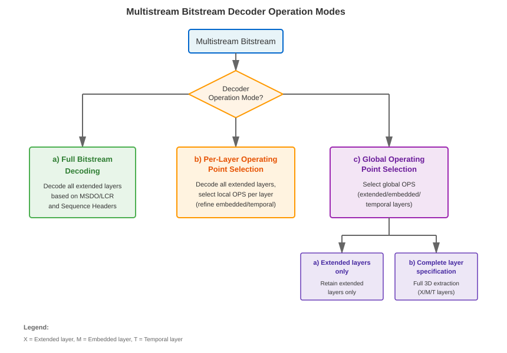
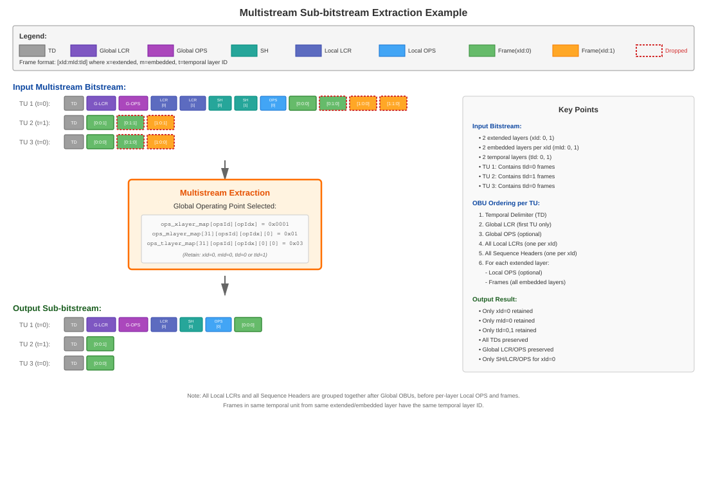
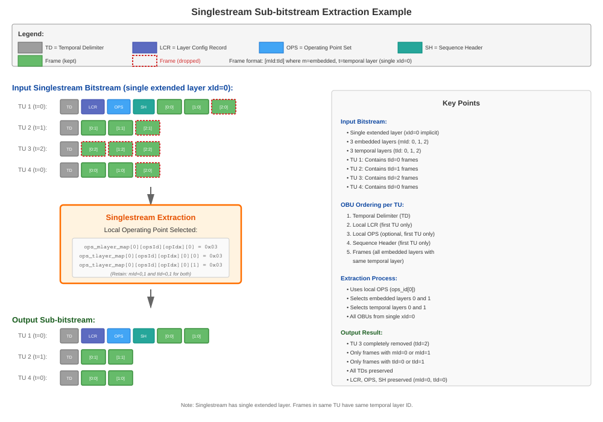
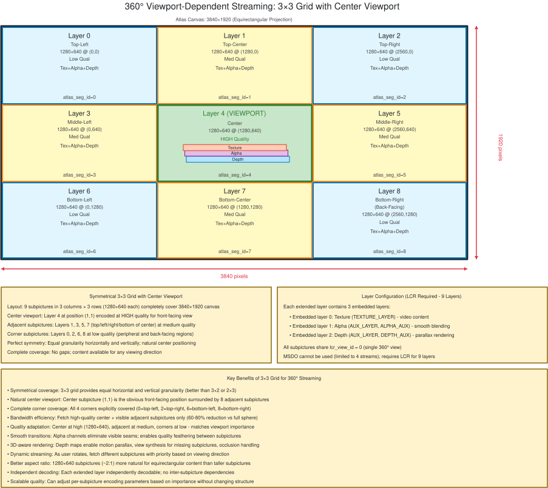
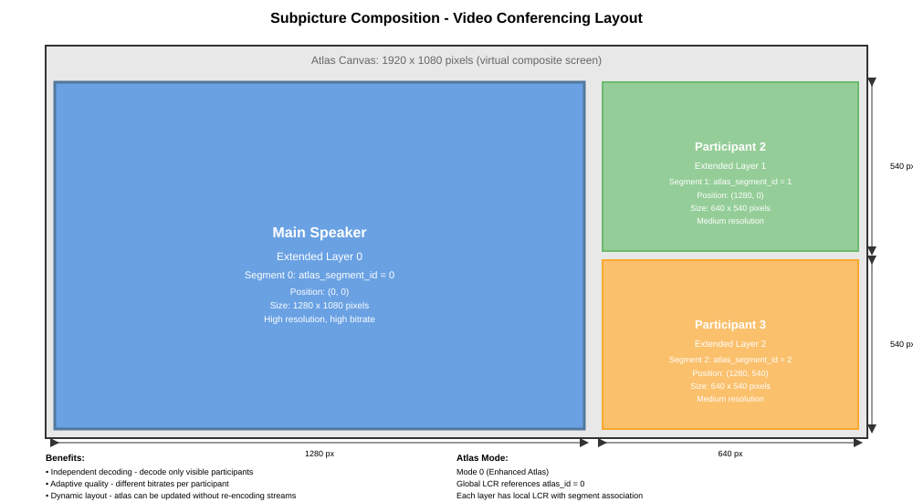
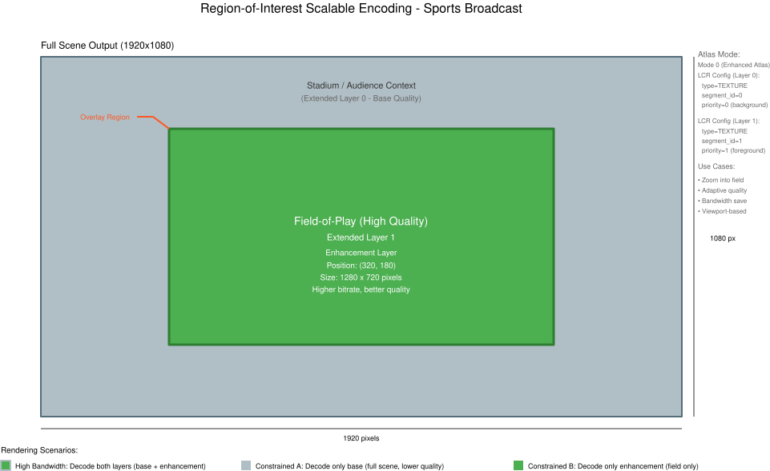

The MATERIALS ARE PROVIDED “AS IS.” The Alliance for Open Media, its members, and its contributors expressly disclaim any warranties (express, implied, or otherwise), including implied warranties of merchantability, non-infringement, fitness for a particular purpose, or title, related to the materials. The entire risk as to implementing or otherwise using the materials is assumed by the implementer and user. IN NO EVENT WILL THE ALLIANCE FOR OPEN MEDIA, ITS MEMBERS, OR CONTRIBUTORS BE LIABLE TO ANY OTHER PARTY FOR LOST PROFITS OR ANY FORM OF INDIRECT, SPECIAL, INCIDENTAL, OR CONSEQUENTIAL DAMAGES OF ANY CHARACTER FROM ANY CAUSES OF ACTION OF ANY KIND WITH RESPECT TO THIS DELIVERABLE OR ITS GOVERNING AGREEMENT, WHETHER BASED ON BREACH OF CONTRACT, TORT (INCLUDING NEGLIGENCE), OR OTHERWISE, AND WHETHER OR NOT THE OTHER PARTY HAS BEEN ADVISED OF THE POSSIBILITY OF SUCH DAMAGE.
This document defines the bitstream format and decoding process for the Alliance for Open Media Video 2 (AV2) codec.
Introduction
This document specifies the bitstream format and decoding process for the
Alliance for Open Media Video 2 (AV2) codec. It is intended to be read by
implementers of AV2 decoders and encoders, by authors of container and
transport formats that carry AV2 bitstreams, and by authors of conformance
tests.
A first reading of this document is recommended in the following order:
§ 2 Terms and definitions and § 3 Symbols to establish vocabulary.
Defined terms appear as links throughout the document, and following
a link navigates to the term’s definition.
§ 4 Conventions to understand the mathematical operators, pseudocode
style, and descriptor notation used in the syntax tables. Syntax
element descriptors such as f(n) and L(n) are defined in § 8 Parsing process.
§ 5 Syntax structures alongside § 6 Syntax structures semantics. The
syntax structures, presented as pseudocode, define the order in which
bits are read. The semantics define the meaning of each syntax element
and the variables it updates.
This document specifies the Alliance for Open Media Video 2 (AV2) bitstream format and decoding process.
2. Terms and definitions
For the purposes of this document, the following terms and definitions apply:
AC coefficient
Any transform coefficient whose frequency indices are non-zero in at least one dimension.
ADST
Asymmetric Discrete Sine Transform.
AOMedia
Alliance for Open Media.
Atlas
A virtual 2D image associated with the decoded layers of a bitstream. The atlas can provide information on how to interpret, render, and utilize all such layers, depending on the application.
Base layer
A layer with obu_mlayer_id and obu_tlayer_id values equal to 0.
BAWP
Block Adaptive Weighted Prediction modifies inter prediction samples with a linear equation based on a scaling factor and an offset. The model parameters are based on observations from surrounding samples in the decoded frame and reference frame or the OrderHints distance of the decoded frame and reference frame.
Bitstream
The sequence of bits generated by encoding a sequence of frames.
Bit string
An ordered string with limited number of bits. The leftmost bit is the most significant bit (MSB), the rightmost bit is the least significant bit (LSB).
Block
A square or rectangular region of samples.
Bridge frame
A non-output inter frame that produces a copy of a single reference frame at equal or reduced resolution for storage in the reference buffer. A bridge frame contains no coded residual data and all prediction is performed with zero motion vectors.
BRU
Backwards reference update allows an existing reference frame to be partially updated.
Byte
A string of 8 bits.
Byte alignment
One bit is byte aligned if the position of the bit is an integer multiple of eight from the position of the first bit in the bitstream.
CCSO
Cross Component Sample Offset filter designed to modify both luma and chroma samples based on luma brightness and brightness gradient.
CCTX
Cross Component Transform. A transform that jointly processes chroma components to exploit correlation between Cb and Cr.
CDEF
Constrained Directional Enhancement Filter designed to adaptively filter blocks based on identifying the direction.
CDF
Cumulative distribution function representing the probability times 32768 that a symbol has value less than or equal to a given level.
CFL
Chroma from Luma. An intra prediction tool that derives chroma samples from reconstructed luma samples.
Chroma
A sample value matrix or a single sample value of one of the two color difference signals.
NOTE: Symbols of chroma are U and V.
CLK
Closed Loop Key. A coded frame with obu_type equal to OBU_CLOSED_LOOP_KEY. See closed random access.
Closed random access
The random access process that applies to an extended layer when the first coded frame unit of its coded extended layer unit has obu_type equal to OBU_CLOSED_LOOP_KEY. The process starts a new coded video sequence for the extended layer. See § 7.4.3 Closed Random Access.
Coded frame
The representation of one frame before the decoding process.
A sequence of temporal units for an extended layer, starting at a closed random access point and continuing until the next closed random access point for that extended layer or the end of the bitstream. See § 7.3.6 Coded extended layer unit.
Note: When a decoder initiates decoding at an open random access point, the decoding process treats it as if it were the start of a new coded video sequence (see § 7.4.4 Open Random Access), but during sequential decoding an open random access point does not start a new coded video sequence.
Component
One of the three sample value matrices (one luma matrix and two chroma matrices) or its single sample value.
Compound prediction
A type of inter prediction where sample values are computed by blending together predictions from two reference frames (the frames blended can be the same or different).
DC coefficient
A transform coefficient whose frequency indices are zero in all dimensions.
DCT
Discrete Cosine Transform.
DDT
Data Dependent Transform.
Decoded frame
The frame reconstructed out of the bitstream by the decoder.
Decoder
One embodiment of the decoding process.
Decoding process
The process that derives decoded frames from syntax elements, including any processing steps used prior to and for the film grain synthesis process.
Dequantization
The process in which transform coefficients are obtained by scaling the quantized coefficients.
Embedded layer
A set of OBUs with identical obu_xlayer_id and obu_mlayer_id values.
A process not specified in this specification that generates the bitstream that conforms to the description provided in this document.
Enhancement layer
A layer with either obu_mlayer_id greater than 0 or obu_tlayer_id greater than 0.
EOB
End of a transform block. The scan position one past the last non-zero coefficient in a transform block.
Extended layer
A set of OBUs with identical obu_xlayer_id values.
Frame
The representation of video signals in the spatial domain, composed of one luma sample matrix (Y) and zero or two chroma sample matrices (U and V).
Frame context
A set of probabilities used in the decoding process.
Frame header info
High level description of the frame to be decoded that is encoded without the use of arithmetic encoding.
FSC
Forward Skip Coding. A coding mode for a block that skips the regular coefficient coding process and uses special coefficient coding rules with a forward scan and first position.
GDF
Guided detail filter designed to selectively enhance details.
Global operating point set
An OPS OBU with obu_xlayer_id equal to GLOBAL_XLAYER_ID that describes operating points applicable to the entire multistream bitstream, potentially spanning multiple extended layers.
IBP
Intra bi-prediction blends two different intra predictions together for a single block.
Inter coding
Coding one block or frame using inter prediction.
Inter frame
A frame compressed by referencing previously decoded frames and that may use intra prediction or inter prediction.
Inter prediction
The process of deriving the prediction value for the current frame using previously decoded frames.
A frame compressed using only intra prediction which can be independently decoded.
Intra prediction
The process of deriving the prediction value for the current sample using previously decoded sample values in the same decoded frame.
Inverse transform
The process in which a transform coefficient matrix is transformed into a spatial sample value matrix.
IST
Intra-inter Secondary Transforms. An additional transform applied to low-frequency coefficients after the primary transform to further decorrelate the residual signal.
Key frame
A coded frame with obu_type equal to OBU_CLOSED_LOOP_KEY or OBU_OPEN_LOOP_KEY.
Layer
A set of OBUs with identical obu_xlayer_id, obu_mlayer_id, and obu_tlayer_id values.
LCR
Layer Configuration Record.
Leading frame
A frame with obu_type equal to OBU_LEADING_TILE_GROUP, OBU_LEADING_SEF, or OBU_LEADING_TIP (i.e., IsRegular is equal to 0). Leading frames can follow an open random access point and may reference frames that precede the open random access point. See § 7.4.4 Open Random Access.
Level
A defined set of constraints on the values for the syntax elements and variables.
LF
Low frequency region of a transform block.
Local operating point set
An OPS OBU with obu_xlayer_id not equal to GLOBAL_XLAYER_ID that describes operating points applicable to a single extended layer sub-bitstream.
Long-term reference frame
A reference frame that has been assigned a long-term identifier via the long_term_id_plus_1 syntax element. Only key frames can be designated as long-term reference frames.
Deblocking filter
A filtering process applied to the reconstruction intended to reduce the visibility of block edges.
LSB
Least Significant Bit.
Luma
A sample value matrix or a single sample value representing the monochrome signal related to the primary colors.
NOTE: The symbol representing luma is Y.
MHCCP
Multi-hypothesis cross component prediction.
Mode info
Syntax elements sent for a block containing an indication of how a block is to be predicted during the decoding process.
Mode info block
A luma sample value block of size 4x4 or larger and its two corresponding chroma sample value blocks (if present).
Motion vector
A two-dimensional vector used for inter prediction which refers the current frame to the reference frame, the value of which provides the coordinate offsets from a location in the current frame to a location in the reference frame.
MRL
Multiple Reference Line. An intra prediction tool that allows using reference samples from lines beyond the immediately adjacent line for directional intra prediction modes.
MSB
Most Significant Bit.
MSDO
Multi Stream Decoder Operation.
Multistream
A bitstream that contains two or more distinct non-global values for the extended layer identifier.
OBU
All structures are packetized in "Open Bitstream Units" or OBUs. Each OBU has a header, which provides identifying information for the contained data (payload).
OLK
Open Loop Key. A coded frame with obu_type equal to OBU_OPEN_LOOP_KEY. See open random access.
Open random access
The random access process that applies to an extended layer when the first coded frame unit of its coded extended layer unit has obu_type equal to OBU_OPEN_LOOP_KEY. During sequential decoding, the process does not start a new coded video sequence for the extended layer. However, when a decoder initiates decoding at the open random access point, the process is treated as if it were the start of a new coded video sequence for the extended layer. Leading frames that follow the OLK are discarded. See § 7.4.4 Open Random Access.
OPS
Operating Point Set.
Parity hiding
A coefficient coding technique that hides the parity of the DC coefficient level in the parity of the sum of coefficient levels in the same transform block, allowing the DC coefficient to be coded with reduced precision.
Parse
The procedure of getting the syntax element from the bitstream.
Picture
A frame (before content interpretation) produced by the decoding process.
The decoding process works exclusively with frames.
However, content interpretation metadata allows a decoded frame to be interpreted as a field.
The term picture can be used to emphasize that the text refers to the decoded frame and its associated information regardless of whether it is interpreted as a frame picture or a field picture.
Prediction
The implementation of the prediction process consisting of either inter or intra prediction.
Prediction process
The process of estimating the decoded sample value or data element using a predictor.
Prediction value
The value, which is the combination of the previously decoded sample values or data elements, used in the decoding process of the next sample value or data element.
Profile
A subset of syntax, semantics and algorithms defined in a part.
Quantization parameter
A variable used for scaling the quantized coefficients in the decoding process.
Quantized coefficient
A transform coefficient before dequantization.
RAS
Random Access Switch. A coded frame with obu_type equal to OBU_RAS_FRAME. See random access switch.
Random access switch
The random access process that applies to an extended layer when the coded extended layer unit contains an OBU with obu_type equal to OBU_RAS_FRAME. The process does not start a new coded video sequence. The RAS frame is inter-predicted using long-term reference frames identified by ref_long_term_id. See § 7.4.5 Random Access Switch.
Raster scan
Maps a two dimensional rectangular raster into a one dimensional raster, in which the entry of the one dimensional raster starts from the first row of the two dimensional raster, and the scanning then goes through the second row and the third row, and so on. Each raster row is scanned in left to right order.
Reconstruction
Obtaining the addition of the decoded residual and the corresponding prediction values.
Reference
One of a set of tags, each of which is mapped to a reference frame.
Reference frame
A storage area for a previously decoded frame and associated information.
Regular frame
A frame with obu_type equal to OBU_OPEN_LOOP_KEY, OBU_REGULAR_TILE_GROUP, OBU_REGULAR_TIP, OBU_REGULAR_SEF, OBU_SWITCH, OBU_RAS_FRAME or OBU_BRIDGE_FRAME (i.e., IsRegular is equal to 1).
Reserved
A special syntax element value which may be used to extend this part in the future.
Residual
The differences between the reconstructed samples and the corresponding prediction values.
Sample
The basic elements that compose the frame.
Sample value
The value of a sample. This is an integer from 0 to 255 (inclusive) for 8-bit frames, and from 0 to 1023 (inclusive) for 10-bit frames.
SDP
Semi-Decoupled Partitioning. A partitioning mode where chroma blocks can use a different partition structure than luma blocks.
SEF
Show Existing Frame. A coded frame with obu_type equal to OBU_REGULAR_SEF or OBU_LEADING_SEF.
Segmentation map
One 4-bit number per 4x4 block in the frame specifying the segment affiliation of that block. A segmentation map is stored for each reference frame to allow new frames to use a previously coded map.
Sequence
The highest level syntax structure of the coding bitstream, including one or several consecutive coded frames.
Singlestream
A bitstream that contains a single distinct non-global value for the extended layer identifier.
Sub-bitstream
A bitstream derived from another bitstream through the sub-bitstream extraction process, containing only OBUs associated with selected layers as determined by operating point selection.
Sub-bitstream extraction process
A specified process that extracts a sub-bitstream from a bitstream by removing OBUs not associated with selected extended layers, embedded layers, and temporal layers. The layers to retain are determined by an operating point selection and analysis process which may involve one or more operating points from OPS OBUs (for example, a global operating point set and optionally one or more local operating point sets in a multistream bitstream). The output sub-bitstream contains only OBUs from the retained layers.
Superblock
The top level of the block tree within a tile. All superblocks within a frame are the same size and are square. The superblocks may be 256x256 luma samples, 128x128 luma samples, or 64x64 luma samples. A superblock may contain multiple blocks, which may themselves be further subpartitioned, forming the block tree.
Switch Frame
An inter frame that can be used as a point to switch between sequences.
The intention is to allow a streaming use case where videos can be encoded in small chunks (say of 1 second duration), each starting with a switch frame.
If the available bandwidth drops, the server can start sending chunks from a lower bitrate encoding instead. When this happens, the inter prediction uses the existing higher quality reference frames to decode the switch frame.
This approach allows a bitrate switch without the cost of a full key frame.
Syntax element
An element of data represented in the bitstream.
TCQ
Trellis coded quantization adjusts the quantizer levels based on the parity of the decoded coefficients.
Temporal delimiter OBU
An indication that the following OBUs will have a different presentation/decoding time stamp from the one of the last frame prior to the temporal delimiter.
Temporal layer
A set of OBUs with identical obu_xlayer_id and obu_tlayer_id values.
Temporal unit
A Temporal unit consists of all the OBUs that are associated with a specific, distinct time instant. It consists of a temporal delimiter OBU, and all of the OBUs that follow, up to but not including the next temporal delimiter.
TG
Tile Group.
Tier
A specified category of level constraints imposed on the values of the syntax elements in the bitstream.
Tile
A rectangular region of the frame that can be decoded and encoded independently, although loop filtering across tile edges is still applied in some cases.
Tile Group
A group of one or more contiguous tiles in tile scan order, associated with a single frame and included in a
single OBU with obu_type equal to OBU_REGULAR_TILE_GROUP or OBU_LEADING_TILE_GROUP.
TIP
Temporally interpolated prediction.
Transform block
A rectangular transform coefficient matrix, used as input to the inverse transform process.
Transform coefficient
A scalar value, considered to be in a frequency domain, contained in a transform block.
The mathematical operators and their precedence rules used to describe this specification are similar to those used in the C programming language. However, the operation of integer division with truncation is specifically defined.
In addition, a length 2 array used to hold a motion vector (indicated by the variable name ending with the letters Mv or Mvs) can be accessed using either array notation (e.g., Mv[ 0 ] and Mv[ 1 ]), or by just the name (e.g., Mv). The only operations defined when using the name are assignment and equality/inequality testing. Assignment of an array is represented using the notation A = B and is specified to mean the same as doing both the individual assignments A[ 0 ] = B[ 0 ] and A[ 1 ] = B[ 1 ]. Equality testing of 2 motion vectors is represented using the notation A == B and is specified to mean the same as (A[ 0 ] == B[ 0 ] && A[ 1 ] == B[ 1 ]). Inequality testing is defined as A != B and is specified to mean the same as (A[ 0 ] != B[ 0 ] || A[ 1 ] != B[ 1 ]).
If a process specifies something happens for x = L..H, where x is a variable name and L and H are expressions, it means that the variable takes all integer values starting at L and going up to (and including) H.
When a variable is said to be representable by a signed integer with x bits, it means that the variable is greater than or equal to -(1 << (x-1)), and that the variable is less than or equal to (1 << (x-1))-1.
The key words “must”, “must not”, “required”, “shall”, “shall not”, “should”, “should not”, “recommended”, “may”, and “optional” in this document are to be interpreted as described in [RFC2119].
Informative notes begin with the word “Note” and are set apart from the normative text with class="note", like this:
NOTE: This is an informative note.
4.2. Arithmetic operators
+
Addition
–
Subtraction (as a binary operator) or negation (as a unary prefix operator)
*
Multiplication
/
Integer division with truncation of the result toward zero (for example, 7/4 and -7/-4 are truncated to 1, and -7/4 and 7/-4 are truncated to -1)
a % b
Remainder from division of a by b, where both a and b are positive integers
÷
Floating point (arithmetical) division
ceil(x)
The smallest integer that is greater than or equal to x
floor(x)
The largest integer that is less than or equal to x
4.3. Ternary operator
cond ? a : b
a if cond is true, b if cond is false
4.4. Logical operators
a && b
Logical AND operation between a and b
a || b
Logical OR operation between a and b
!
Logical NOT operation
4.5. Relational operators
>
Greater than
>=
Greater than or equal to
<
Less than
<=
Less than or equal to
==
Equal to
!=
Not equal to
4.6. Bitwise operators
&
AND operation
|
OR operation
^
XOR operation
~
Negation operation
a >> b
Shift a in 2’s complement binary integer representation format to the right by b bit positions. This operator is only used with b being a non-negative integer. Bits shifted into the MSBs as a result of the right shift have a value equal to the MSB of a prior to the shift operation.
a << b
Shift a in 2’s complement binary integer representation format to the left by b bit positions. This operator is only used with b being a non-negative integer. Bits shifted into the LSBs as a result of the left shift have a value equal to 0.
4.7. Assignment
=
Assignment operator
++
Increment (for example, x++ is equivalent to x = x + 1). When this operator is used for an array index, the variable value is obtained before the auto increment operation.
- -
Decrement (for example, x-- is equivalent to x = x - 1). When this operator is used for an array index, the variable value is obtained before the auto decrement operation.
+=
Addition assignment operator (for example, x += 3 corresponds to x = x + 3)
-=
Subtraction assignment operator (for example, x -= 3 corresponds to x = x - 3)
4.8. Mathematical functions
The following mathematical functions (Abs, Clip3, Clip1, Min, Max, Round2 and Round2Signed) are defined as follows:
$$
\text{Abs}(x) =
\begin{cases}
x; & x \geq 0\\
-x; & x < 0
\end{cases}
$$
$$
\text{Round2Signed}(x,n) =
\begin{cases}
\text{Round2}(x,n); & x \geq 0\\
-\text{Round2}(-x,n); & x < 0
\end{cases}
$$
The definition of Round2 uses standard mathematical power and division operations, not integer operations. An equivalent definition using integer operations is:
The description style of the syntax is similar to the C programming language. Syntax elements in the bitstream are represented in bold type. Each syntax element is described by its name (using only lower case letters with underscore characters) and a descriptor for its method of coded representation. The decoding process behaves according to the value of the syntax element and to the values of previously decoded syntax elements. When a value of a syntax element is used in the syntax tables or the text, it appears in regular (i.e., not bold) type. If the value of a syntax element is being computed (e.g., being written with a default value instead of being coded in the bitstream), it also appears in regular type (e.g., tile_size_minus_1).
In some cases the syntax tables may use the values of other variables derived from syntax element values. Such variables appear in the syntax tables, or text, named by a mixture of lower case and upper case letters and without any underscore characters. Variables starting with an upper case letter are derived for the decoding of the current syntax structure and all dependent syntax structures. These variables may be used in the decoding process for later syntax structures. Variables starting with a lower case letter are only used within the process from which they are derived. (Single-character variables are allowed.)
Constant values appear in all upper case letters with underscore characters (e.g., MI_SIZE).
Constant lookup tables appear as words (with the first letter of each word in upper case, and remaining letters in lower case) separated with underscore characters (e.g., Block_Width[…]).
Hexadecimal notation, indicated by prefixing the hexadecimal number by 0x, may be used when the number of bits is an integer multiple of 4. For example, 0x1a represents a bit string0001 1010.
Binary notation is indicated by prefixing the binary number by 0b. For example, 0b00011010 represents a bit string 0001 1010. Binary numbers may include underscore characters to enhance readability. If present, the underscore characters appear every 4 binary digits starting from the LSB. For example, 0b11010 may also be written as 0b1_1010.
A value equal to 0 represents a FALSE condition in a test statement. The TRUE condition is represented by any value not equal to 0.
The following table lists examples of the syntax specification format. When syntax_element appears (in bold font), it specifies that this syntax element is parsed from the bitstream.
/* A statement can be a syntax element with an associated descriptor or can be an expression used to specify its existence, type, and value, as in the following examples. */
syntax_element
f(1)
/* A group of statements enclosed in brackets is a compound statement and is treated functionally as a single statement. */
{
statement
...
}
/* A "while" structure specifies that the statement is to be evaluated repeatedly while the condition remains true. */
while ( condition )
statement
/* A "do .. while" structure executes the statement once and then tests the condition. It repeatedly evaluates the statement while the condition remains true. */
do
statement
while ( condition )
/* An "if .. else" structure tests the condition first. If it is true, the primary statement is evaluated. Otherwise, the alternative statement is evaluated. If the alternative statement is unnecessary to be evaluated, the "else" and corresponding alternative statement can be omitted. */
if ( condition )
primary statement
else
alternative statement
/* A "for" structure evaluates the initial statement at the beginning, then tests the condition. If it is true, the primary and subsequent statements are evaluated until the condition becomes false. */
for ( initial statement; condition; subsequent statement )
primary statement
/* The return statement in a syntax structure specifies that the parsing of the syntax structure will be terminated without processing any additional information after this stage. When a value immediately follows a return statement, this value shall also be returned as the output of this syntax structure. */
return x
}
4.10. Functions
Bitstream functions used for syntax description are specified in this section.
Other functions are included in the syntax tables. The convention is that a section is called _syntax_ if it causes syntax elements to be read from the bitstream, either directly or indirectly through subprocesses. The remaining sections are called _functions_.
The specification of these functions makes use of a bitstream position indicator. This bitstream position indicator locates the position of the bit that is going to be read next.
get_position( ): Return the value of the bitstream position indicator.
When referring to a function, brackets are included only when introducing a parameter which is needed for the explanation.
4.11. Descriptors
4.11.1. General
The following descriptors specify the parsing of syntax elements. Lower case descriptors specify syntax elements that are represented by an integer number of bits in the bitstream; upper case descriptors specify syntax elements that are represented by arithmetic coding.
4.11.2. f(n)
Unsigned n-bit number appearing directly in the bitstream. The bits are read from highest to lowest. The parsing process specified in § 8.1 Parsing process for f(n) is invoked, and the syntax element is set equal to the return value.
4.11.3. uvlc()
Variable-length unsigned number appearing directly in the bitstream. The parsing process for this descriptor is specified below:
uvlc() {
Descriptor
leadingZeros = 0
while ( 1 ) {
done
f(1)
if ( done )
break
leadingZeros++
}
if ( leadingZeros >= 32 ) {
return ( 1 << 32 ) - 1
}
value
f(leadingZeros)
return value + ( 1 << leadingZeros ) - 1
}
It is a requirement of bitstream conformance that leadingZeros is less than 32 when this function returns.
Note: This means that the largest value that can be returned by a uvlc() descriptor is ( 1 << 32 ) - 2.
4.11.4. svlc()
Variable-length signed number appearing directly in the bitstream. The parsing process for this descriptor is specified below:
svlc() {
Descriptor
value
uvlc()
half = (value + 1) >> 1
if (value & 1) {
return half
} else {
return -half
}
}
4.11.5. le(n)
Unsigned little-endian n-byte number appearing directly in the bitstream. The parsing process for this descriptor is specified below:
le(n) {
Descriptor
t = 0
for ( i = 0; i < n; i++) {
byte
f(8)
t += ( byte << ( i * 8 ) )
}
return t
}
4.11.6. leb128()
Unsigned integer represented by a variable number of little-endian bytes.
In this encoding, the most significant bit of each byte is equal to 1 to signal that more bytes should be read, or equal to 0 to signal the end of the encoding.
A variable Leb128Bytes is set equal to the number of bytes read during this process.
The parsing process for this descriptor is specified below:
leb128() {
Descriptor
value = 0
Leb128Bytes = 0
for ( i = 0; i < 8; i++ ) {
leb128_byte
f(8)
value |= ( (leb128_byte & 0x7f) << (i*7) )
Leb128Bytes += 1
if ( !(leb128_byte & 0x80) ) {
break
}
}
return value
}
It is a requirement of bitstream conformance that the value returned from the leb128 parsing process is less than or equal to (1 << 32) - 1.
leb128_byte contains 8 bits read from the bitstream. The bottom 7 bits are used to compute the variable value. The most significant bit is used to indicate that there are more bytes to be read.
It is a requirement of bitstream conformance that the most significant bit of leb128_byte is equal to 0 if i is equal to 7. (This ensures that this syntax descriptor never uses more than 8 bytes.)
Note: There are multiple ways of encoding the same value, depending on how many leading zero bits are encoded. There is no requirement that this syntax descriptor uses the most compressed representation. This can be useful for encoder implementations by allowing a fixed amount of space to be filled in later when the value becomes known.
Note: Only 5 bytes (providing 35 bits) are needed for this syntax descriptor because the bitstream conformance requirement limits the return value to 32 bits (7 bits in each of the first 4 bytes, and 4 bits in the 5th byte).
4.11.7. su(n)
Signed integer converted from an n-bit unsigned integer in the bitstream. (The unsigned integer corresponds to the bottom n bits of the signed integer.) The parsing process for this descriptor is specified below:
su(n) {
Descriptor
value
f(n)
signMask = 1 << (n - 1)
if ( value & signMask )
value = value - 2 * signMask
return value
}
4.11.8. ns(n)
Unsigned encoded integer with maximum number of values n (i.e., output in range 0..n-1).
This descriptor is similar to f(CeilLog2(n)), but reduces wastage incurred when encoding non-power of two value ranges by encoding 1 fewer bit for the lower part of the value range. For example, when n is equal to 5, the encodings are as follows (full binary encodings are also presented for comparison):
Table 4.1: Example encodings for ns(5)
Value
Full binary encoding
ns(n) encoding
0
000
00
1
001
01
2
010
10
3
011
110
4
100
111
The parsing process for this descriptor is specified as:
ns( n ) {
Descriptor
w = FloorLog2(n) + 1
m = (1 << w) - n
v
f(w - 1)
if ( v < m )
return v
extra_bit
f(1)
return (v << 1) - m + extra_bit
}
The abbreviation ns stands for _non-symmetric_. This encoding is non-symmetric because the values are not all coded with the same number of bits.
4.11.9. tu(mx)
Integer in the range 0 to mx using truncated unary encoding (a series of zero or more 1s followed by a single 0, except that the final 0 is omitted if the maximum is reached).
The parsing process for this descriptor is specified below:
tu( mx ) {
Descriptor
for ( idx = 0; idx < mx; idx++ ) {
tu_bit
f(1)
if ( tu_bit == 0 ) {
return idx
}
}
return mx
}
4.11.10. rg(n)
Integer with Rice-Golomb coding with parameter n (a fixed length coding of the n least significant bits preceded by a unary encoding of the most significant bits).
The parsing process for this descriptor is specified below:
rg( n ) {
Descriptor
for ( q = 0; q < 32; q++ ) {
rg_bit
f(1)
if ( rg_bit == 0 ) {
remainder
f(n)
return (q << n) + remainder
}
}
return -1
}
It is a requirement of bitstream conformance that this descriptor never returns a value less than 0.
4.11.11. L(n)
Unsigned arithmetic encoded n-bit number encoded as n flags (a _literal_). The flags are read from highest to lowest. The syntax element is set equal to the return value of read_literal( n ) (see § 8.2.5 Parsing process for read_literal for a specification of this process).
4.11.12. S()
An arithmetic encoded symbol coded from a small alphabet of at most 8 entries.
This section presents the syntax structures in a tabular form. The meaning of
each of the syntax elements is presented in § 6 Syntax structures semantics.
Note: Reserved OBUs do not have a defined syntax. The obu_type reserved
values are reserved for future use by AOMedia. Decoders should ignore the entire OBU if
they do not understand the obu_type.
The last byte of the valid content of the payload data for this OBU type
is considered to be the last byte that is not equal to zero.
This rule is to prevent the dropping of valid bytes by systems that
interpret trailing zero bytes as a continuation of the trailing bits in an OBU.
This implies that when any payload data is present for this OBU type,
at least one byte of the payload data (including the trailing bit) shall not be equal to 0.
5.4. Sequence header OBU syntax
5.4.1. General sequence header OBU syntax
sequence_header_obu( ) {
Descriptor
seq_header_id
uvlc()
seq_profile_idc
f(5)
single_picture_header_flag
f(1)
seq_level_idx
f(5)
if ( seq_level_idx > 3 && !single_picture_header_flag ) {
Note: obu_padding_length is not coded in the bitstream but can be computed
based on the OBU size minus the number of trailing bytes.
In practice, though, since this is
padding data meant to be skipped, decoders do not need to determine either
that length or the number of trailing bytes. They can ignore the entire OBU.
The last byte of the valid content of the payload data for this OBU type
is considered to be the last byte that is not equal to zero.
This rule is to prevent the dropping of valid bytes by systems that
interpret trailing zero bytes as a continuation of the trailing bits in an OBU.
This implies that when any payload data is present for this OBU type,
at least one byte of the payload data (including the trailing bit) shall not be equal to 0.
Note: A padding OBU with an obuPayloadSize of 0 is legal.
This means the OBU has obu_padding_length of 0 and will not contain any trailing bits.
A padding OBU with an obuPayloadSize of 1 is legal.
This means the OBU has obu_padding_length of 0 and does contain trailing bits.
This is allowed so that any OBU can be converted into a padding OBU in-place.
5.17. Metadata OBU syntax
This specification defines two distinct OBU types for carrying metadata:
OBU_METADATA_SHORT: using metadata short OBU syntax, and
OBU_METADATA_GROUP: using metadata group OBU syntax.
Both OBU types use the same metadata_unit() syntax element to carry the actual metadata payload. The OBU_METADATA_SHORT type provides a compact header structure, while OBU_METADATA_GROUP provides extended capabilities including the ability to carry multiple metadata units within a single OBU with additional signaling for application-specific handling, layer targeting, and priority.
5.17.1. Metadata unit syntax
metadata_unit( metadataPayloadSize ) {
Descriptor
startPosition = get_position()
if ( metadata_type == METADATA_TYPE_ITUT_T35 ) {
metadata_itut_t35( metadataPayloadSize )
} else if ( metadata_type == METADATA_TYPE_HDR_CLL ) {
metadata_hdr_cll( )
} else if ( metadata_type == METADATA_TYPE_HDR_MDCV ) {
metadata_hdr_mdcv( )
} else if ( metadata_type == METADATA_TYPE_TIMECODE ) {
metadata_timecode( )
} else if ( metadata_type == METADATA_TYPE_BANDING_HINTS ) {
metadata_banding_hints( )
} else if ( metadata_type == METADATA_TYPE_ICC_PROFILE ) {
metadata_icc_profile( metadataPayloadSize )
} else if ( metadata_type == METADATA_TYPE_SCAN_TYPE ) {
metadata_scan_type( )
} else if ( metadata_type == METADATA_TYPE_TEMPORAL_POINT_INFO ) {
metadata_temporal_point_info( )
} else if ( metadata_type == METADATA_TYPE_DECODED_FRAME_HASH ) {
metadata_decoded_frame_hash( )
} else if ( metadata_type == METADATA_TYPE_USER_DATA_UNREGISTERED ) {
Note: The exact syntax of metadata_unit is not defined in this specification when metadata_type is equal to a value reserved for future use or a user private value.
Decoders should ignore the metadata_unit() if they do not understand the metadata_type.
For OBU_METADATA_SHORT, this means ignoring the entire OBU.
For OBU_METADATA_GROUP, decoders should skip only the unrecognized metadata_unit() and continue processing other metadata units within the same OBU.
for ( i = 0; i <= metadata_unit_cnt_minus_1; i++ ) {
metadata_type
leb128()
muh_header_size
f(7)
muh_cancel_flag
f(1)
headerRemainingBytes = muh_header_size
if ( !muh_cancel_flag ) {
muh_payload_size
leb128()
headerRemainingBytes -= Leb128Bytes
muh_layer_idc
f(3)
muh_persistence_idc
f(3)
muh_priority
f(8)
muh_reserved_zero_2bits
f(2)
headerRemainingBytes -= 2
if ( muh_layer_idc == LAYER_VALUES ) {
if ( obu_xlayer_id == GLOBAL_XLAYER_ID ) {
muh_xlayer_map
f(32)
headerRemainingBytes -= 4
for ( n = 0; n < 31; n++ ) {
if ( muh_xlayer_map & (0x1 << n) ) {
muh_mlayer_map
f(8)
headerRemainingBytes -= 1
}
}
} else {
muh_mlayer_map
f(8)
headerRemainingBytes -= 1
}
}
}
for ( j = 0; j < headerRemainingBytes; j++ ) {
muh_header_extension_byte
f(8)
}
if ( !muh_cancel_flag ) {
metadata_unit( muh_payload_size )
}
}
}
5.17.4. Metadata ITUT T35 syntax
metadata_itut_t35( metadataPayloadSize ) {
Descriptor
itu_t_t35_country_code
f(8)
t35PayloadSize = metadataPayloadSize - 1
if ( itu_t_t35_country_code == 0xFF ) {
itu_t_t35_country_code_extension_byte
f(8)
t35PayloadSize--
}
itu_t_t35_payload_bytes
le(t35PayloadSize)
}
Note: The exact syntax of itu_t_t35_payload_bytes is not defined
in this specification. External
specifications can define the syntax.
Decoders should ignore the entire OBU if they do not understand it.
5.17.5. Metadata high dynamic range content light level syntax
metadata_hdr_cll( ) {
Descriptor
max_cll
f(16)
max_fall
f(16)
}
5.17.6. Metadata high dynamic range mastering display color volume syntax
Note: When force_integer_mv is equal to 1, some fractional bits are still
read for the translation components. However, these fractional bits will be
discarded during the Setup Global MV process.
5.18.9.3. Decode signed subexp with ref syntax
decode_signed_subexp_with_ref( low, high, r, k ) {
Descriptor
x = decode_unsigned_subexp_with_ref(high - low, r - low, k)
where init_allowed_partitions, is_partition_allowed, is_chroma_offset_for_partition, is_chroma_offset_for_subsize, check_chroma, block_coded, rect_type_implied_by_bsize, is_ext_partition_allowed, partition_implied_at_bo undary, partition_implied, and is_uneven_4way_partition_allowed are functions defined as:
Note: NPos will only contain locations that are in the same superblock row as the current block. NPosBuf contains locations that may require buffered access to a different superblock row.
Note: Calls to update_ibc_buffers are only needed for bitstream conformance checks.
However, a decoder implementation may wish to use the same logic for updating a local cache of information available for intra block copy.
and the function mv_clamp_to_integer
(which adjusts a motion vector component to an integer location if it would have overflowed the allowed range) is defined as:
The functions count_top_right_avail and count_bottom_left_avail
(which count how many samples have already been decoded in the corners) are defined as:
The get_plane_residual_size function returns the size of a residualblock for the
specified plane. (The residualblock will always have width and height at least
equal to 4.)
paletteBits = Min( paletteBits, CeilLog2( range ) )
idx++
}
sort( palette_colors_y, 0, PaletteSizeY - 1 )
}
}
}
The function sort( arr, i1, i2 ) sorts a subarray of the array arr in-place into ascending order.
The subarray to be sorted is between indices i1 and i2 inclusive.
The function get_palette_cache, which merges the above and left palettes to form a cache, is specified as follows:
This section specifies the meaning of the syntax elements read in the syntax
structures.
Important variables and function calls are also described.
6.2. OBU semantics
6.2.1. General OBU semantics
An ordered series of OBUs is presented to the decoding process. Each OBU is
given to the decoding process as a string of bytes along with a variable sz that
identifies the total number of bytes in the OBU.
Methods of framing the OBUs (i.e., of identifying the series of OBUs and their size
and payload data) in a delivery or container format may be established in a manner
outside the scope of this specification. One simple method is described in Annex
B.
OBU data starts on the first (most significant) bit and ends on the last bit of the given bytes. The
payload of an OBU lies between the first bit of the given bytes and the last bit
before the first trailing bit. Trailing bits are always present, unless the OBU
consists of only the header. Trailing bits achieve byte alignment when the payload
of an OBU is not byte aligned. The trailing bits may also be used for additional byte
padding, and if used are taken into account in the sz value. In all cases, the pattern
used for the trailing bits guarantees that all OBUs (except header-only OBUs) end
with the same pattern: one bit set to one, optionally followed by zeros.
Note: As a validity check for malformed encoded data and for operation in
environments in which losses and errors can occur, decoders may detect an error
if the end of the parsed data is not directly followed by the correct trailing bits
pattern or if the parsing of the OBU header and payload leads to the consumption
of bits within the trailing bits (except for Tile Group data which is allowed to read
a small distance into the trailing bits as described in § 8.2.4 Exit process for symbol decoder).
obu_extension_flag equal to 1 specifies that extension data is present in the OBU payload.
obu_extension_flag equal to 0
specifies that no extension data is present and only trailing bits follow the OBU payload.
It is a requirement of bitstream conformance that obu_extension_flag is equal to 0 in bitstreams
conforming to this specification.
obu_extension_data_bit is a bit of extension data. The content of this data is not specified in this version of this specification and shall be ignored by conforming decoders.
Note: The extension data will end with trailing bits in the usual manner.
6.2.2. OBU header semantics
OBUs are structured with a header and a payload.
The header identifies the type of the payload using the obu_type header parameter.
obu_header_extension_flag equal to 1 indicates that the obu_header contains the obu_mlayer_id
and obu_xlayer_id syntax elements to identify the embedded layer and extended layer of this OBU.
obu_header_extension_flag equal to 0 indicates that obu_mlayer_id and obu_xlayer_id are not
present and inferred.
Reserved OBUs are for future use by AOMedia and shall be ignored by decoders conforming to this version of this specification.
The column “Layer-specific” indicates if the corresponding OBU type is considered to be associated with
a specific layer ("Y"), or not ("N").
Metadata OBU types may or may not be layer-specific, depending on the metadata type. The table in § 6.16 Metadata OBU semantics specifies which types of metadata OBUs are layer-specific and which are not.
Padding OBUs may or may not be layer-specific.
obu_tlayer_id specifies the temporal level of the data contained in the OBU.
obu_mlayer_id specifies the embedded level of the data contained in the OBU.
obu_xlayer_id specifies the extended level of the data contained in the OBU.
If obu_xlayer_id is equal to GLOBAL_XLAYER_ID, it is a requirement of bitstream conformance
that both obu_mlayer_id and obu_tlayer_id are equal to 0.
Tile group OBU data associated with obu_tlayer_id and obu_mlayer_id equal to 0 are referred to as the
base layer, whereas tile group OBU data that are associated with obu_mlayer_id greater than 0 or
obu_tlayer_id greater than 0 are referred to as enhancement layer(s).
It is a requirement of bitstream conformance that obu_tlayer_id is less than or equal to max_tlayer_id obtained from an activated sequence header.
It is a requirement of bitstream conformance that obu_mlayer_id is less than or equal to max_mlayer_id obtained from an activated sequence header.
Note: These constraints on obu_tlayer_id and obu_mlayer_id apply after a sequence header OBU is activated to specify max_tlayer_id and max_mlayer_id.
If obu_type is equal to OBU_MSDO or OBU_TEMPORAL_DELIMITER, it is a requirement of bitstream conformance that obu_xlayer_id is equal to GLOBAL_XLAYER_ID.
If obu_xlayer_id is equal to GLOBAL_XLAYER_ID, it is a requirement of bitstream
conformance that obu_type is equal to one of OBU_TEMPORAL_DELIMITER, OBU_BUFFER_REMOVAL_TIMING, OBU_METADATA_SHORT, OBU_METADATA_GROUP, OBU_LAYER_CONFIGURATION_RECORD, OBU_ATLAS_SEGMENT, OBU_OPERATING_POINT_SET, OBU_MSDO, or OBU_PADDING.
If obu_type is equal to one of OBU_SEQUENCE_HEADER, OBU_TEMPORAL_DELIMITER,
OBU_LAYER_CONFIGURATION_RECORD,
OBU_OPERATING_POINT_SET, or OBU_ATLAS_SEGMENT, it is a requirement of bitstream
conformance that all of the following are true:
obu_tlayer_id is equal to 0.
obu_mlayer_id is equal to 0.
If obu_type is equal to one of OBU_CLOSED_LOOP_KEY, OBU_OPEN_LOOP_KEY, OBU_SWITCH, or OBU_RAS_FRAME, it is a requirement of bitstream
conformance that obu_tlayer_id is equal to 0.
6.2.3. Trailing bits semantics
Note: Tile group OBUs and frame OBUs do end with trailing bits,
but for these cases, the trailing bits are consumed by the exit_symbol process.
trailing_one_bit shall be equal to 1.
When the syntax element trailing_one_bit is read, it is a requirement that nbBits is greater than zero.
trailing_zero_bit shall be equal to 0 and is inserted into the bitstream to align
the bit position to a multiple of 8 bits and add optional zero padding bytes to the OBU.
6.2.4. Byte alignment semantics
zero_bit shall be equal to 0 and is inserted into the bitstream to align
the bit position to a multiple of 8 bits.
6.3. Reserved OBU semantics
The reserved OBU allows the extension of this specification with additional OBU
types in a way that allows older decoders to ignore them.
6.4. Sequence header OBU semantics
6.4.1. General sequence header OBU semantics
seq_header_id specifies an identification number for the sequence header.
It is a requirement of bitstream conformance that seq_header_id is less than MAX_SEQ_NUM.
seq_profile_idc specifies the profile for the coded video sequence identified by the associated obu_xlayer_id. The profile constrains the coding capabilities that may be used, as specified in Annex A.2 Profiles.
Note: The value space for seq_profile_idc is the same as for multistream_profile_idc.
single_picture_header_flag specifies that the syntax elements not needed by a still frame are omitted.
seq_level_idx specifies the level that the coded video sequence conforms to.
seq_tier equal to 0 specifies that the coded video sequence conforms to the main tier. seq_tier equal to 1 specifies that the coded video sequence conforms to the high tier.
monotonic_output_order_flag defines the output mode for a coded video sequence associated with this sequence header.
monotonic_output_order_flag equal to 1 specifies that the output order of coded output frame units is the same as their decoding order within the associated coded video sequence. monotonic_output_order_flag equal to 0 specifies that the output order of coded output frame units can differ from their decoding order within the associated coded video sequence.
Note: When monotonic_output_order_flag is equal to 1 for an associated coded video sequence, the output order for this coded video sequence is monotonic and the systems or application layer can determine that the presentation time is equal to the decoding time without parsing any frame headers. When monotonic_output_order_flag is equal to 0 for an associated coded video sequence, the output order can be non-monotonic for this coded video sequence and the systems or application layer will have to derive the presentation time from coded information associated with each frame.
When single_picture_header_flag is equal to 1, monotonic_output_order_flag is inferred to be equal to 1.
It is a requirement of bitstream conformance that in a coded multistream video sequence, all extended layers shall be associated with the same value of monotonic_output_order_flag.
It is a requirement of bitstream conformance that in a coded multistream video sequence, all extended layers within a temporal unit share the same output time and the coded extended layer units from different extended layers within a temporal unit shall appear in ascending order of obu_xlayer_id.
When monotonic_output_order_flag is equal to 0, additional display order hint constraints on the temporal unit apply as specified in § 7.3.7 Temporal unit.
chroma_format_idc specifies the chroma subsampling format.
Table 6.2: Chroma format indicator values
chroma_format_idc
Name of chroma_format_idc
SubsamplingX
SubsamplingY
Monochrome
Description
0
CHROMA_FORMAT_420
1
1
0
YUV 4:2:0
1
CHROMA_FORMAT_400
1
1
1
Monochrome 4:0:0
2
CHROMA_FORMAT_444
0
0
0
YUV 4:4:4
3
CHROMA_FORMAT_422
1
0
0
YUV 4:2:2
It is a requirement of bitstream conformance that chroma_format_idc is less than or equal to 3.
bit_depth_idc is used to determine the bit depth.
It is a requirement of bitstream conformance that bit_depth_idc is less than or equal to 1.
Note: Values of bit_depth_idc greater than 1 are reserved for future use by AOMedia.
The function set_chroma_format_and_bit_depth( ) is defined as follows:
where lookup_bitdepth and lookup_maxq are functions that indicate that
the bit depth and maximum quantizer value are fetched based on the value of bit_depth_idc
from the following table:
Table 6.3: Bit depth indicator values
bit_depth_idc
BitDepth
MaxQ
0
10
MAXQ_10_BITS
1
8
MAXQ_8_BITS
Greater than 1
Reserved
Reserved
Monochrome equal to 1 indicates that the video does not contain U and V color planes.
Monochrome equal to 0 indicates that the video contains Y, U, and V color planes.
SubsamplingX, SubsamplingY specify the chroma subsampling format.
seq_lcr_id specifies the layer configuration record id that corresponds to this sequence header. If this sequence header is associated with a coded video sequence in an extended layer with obu_xlayer_id equal to xLayerId and if
seq_lcr_id is not equal to 0, the following applies:
if an OBU of obu_type equal to OBU_LAYER_CONFIGURATION_RECORD is associated with the extended layer id xLayerId (by having lcr_local_id equal to seq_lcr_id) and is either present prior to this sequence header in the same bitstream or is provided through external means, then this OBU is associated with this sequence header,
otherwise, if an OBU of obu_type equal to OBU_LAYER_CONFIGURATION_RECORD is associated with an obu_xlayer_id equal to GLOBAL_XLAYER_ID (by having lcr_global_config_record_id equal to seq_lcr_id) and is either present prior to this sequence header in the same bitstream or is provided through external means, then this OBU is associated with this sequence header,
otherwise, no OBU of obu_type equal to OBU_LAYER_CONFIGURATION_RECORD is associated with this sequence header.
It is a requirement of bitstream conformance that when seq_lcr_id is not equal to 0 and the activated layer
configuration record is a global layer configuration record, the extended layer with obu_xlayer_id equal to the
obu_xlayer_id of the sequence header shall be included in the lcr_xlayer_map of the referenced global layer
configuration record.
Note: See § 7.3.8.3 LCR availability for the general availability requirements for layer configuration record OBUs.
still_picture equal to 1 specifies that the coded video sequence contains only one coded frame.
still_picture equal to 0 specifies that the coded video sequence contains one or more coded frames.
max_tlayer_id specifies the maximum value for obu_tlayer_id for the OBUs represented by this sequence header.
max_mlayer_id specifies the maximum value for obu_mlayer_id for the OBUs represented by this sequence header.
seq_max_mlayer_cnt_minus_1 plus 1 specifies the maximum number of embedded layers that can be included in the coded video sequence associated with this sequence header.
It is a requirement of bitstream conformance that the value of seq_max_mlayer_cnt_minus_1 is less than or equal to max_mlayer_id.
It is a requirement of bitstream conformance that the number of distinct values of obu_mlayer_id present in the coded video sequence associated with this sequence header is less than or equal to SeqMaxMlayerCnt.
Note: The counting applies to all OBUs, even if they are not layer-specific. This means that a sequence containing only embedded layer 1 will count as two layers as OBU_SEQUENCE_HEADER is forced to use an embedded layer of 0.
frame_width_bits_minus_1 specifies the number of bits minus 1 used for transmitting the frame width syntax elements.
frame_height_bits_minus_1 specifies the number of bits minus 1 used for transmitting the frame height syntax elements.
max_frame_width_minus_1 specifies the maximum frame width minus 1 for the frames represented by this sequence header.
max_frame_height_minus_1 specifies the maximum frame height minus 1 for the frames represented by this sequence header.
seq_cropping_window_present_flag equal to 1 specifies that the cropping window syntax elements
seq_cropping_win_left_offset, seq_cropping_win_right_offset, seq_cropping_win_top_offset, and
seq_cropping_win_bottom_offset are present in the sequence header to define a cropping rectangle.
seq_cropping_window_present_flag equal to 0 specifies that the cropping window syntax elements
are not present and all crop offset values are inferred to be equal to 0 (no cropping applied).
seq_cropping_win_left_offset is the amount to crop off the left of the frame.
It is a requirement of bitstream conformance that seq_cropping_win_left_offset is less than or equal to max_frame_width_minus_1.
seq_cropping_win_right_offset is the amount to crop off the right of the frame.
It is a requirement of bitstream conformance that seq_cropping_win_right_offset is less than or equal to max_frame_width_minus_1.
seq_cropping_win_top_offset is the amount to crop off the top of the frame.
It is a requirement of bitstream conformance that seq_cropping_win_top_offset is less than or equal to max_frame_height_minus_1.
seq_cropping_win_bottom_offset is the amount to crop off the bottom of the frame.
It is a requirement of bitstream conformance that seq_cropping_win_bottom_offset is less than or equal to max_frame_height_minus_1.
Note: The amounts are expressed in terms of pixels to crop for a frame of maximum size. Smaller frames will have proportionately fewer pixels cropped.
seq_initial_display_delay_present_flag equal to 1 specifies that the syntax element
seq_initial_display_delay_minus_1 is present to indicate the initial display delay for the xlayer or sequence
that uses this sequence header.
seq_initial_display_delay_present_flag equal to 0 specifies that seq_initial_display_delay_minus_1
is not present and is inferred to be equal to NumRefFrames + 1.
seq_initial_display_delay_minus_1 plus 1 specifies the initial display delay for use in the decoder model
when the video sequence or xlayer is to be decoded. When seq_initial_display_delay_minus_1
is not present in the bitstream, it is inferred to be equal to NumRefFrames + 1.
decoder_model_info_present_flag equal to 1 specifies that decoder model information is present
in the coded video sequence and the decoder_model_info() syntax structure shall be parsed to
specify decoder buffering model parameters. decoder_model_info_present_flag equal to 0 specifies
that decoder model information is not present and decoder buffering model parameters are not
specified in the bitstream.
num_units_in_decoding_tick is the number of time units of a decoding clock operating
at the frequency time_scale Hz that corresponds to one increment of a clock tick counter:
DecCT=num_units_in_decoding_tick ÷ time_scale
Note: The ÷ operator represents standard mathematical division (in contrast to the / operator which represents integer division).
num_units_in_decoding_tick shall be greater than 0.
DecCT represents the expected time to decode a single frame or a common divisor of the expected times
to decode frames of different sizes and dimensions present in the coded video sequence.
seq_decoder_model_info_present_flag equal to 1 specifies that the seq_decoder_model_info()
syntax structure is present and contains decoder model parameters for the xlayer or sequence that uses this sequence header.
seq_decoder_model_info_present_flag equal to 0 specifies that the seq_decoder_model_info()
syntax structure is not present.
An operating point specifies which extended layers, embedded layers, and temporal layers should be decoded. Operating points are defined within Operating Point Set (OPS) OBUs (see § 5.10 Operating point set OBU syntax).
For AV2, operating points are specified using:
ops_xlayer_map (for global operating point sets): A 31-bit bitmask indicating which extended layers are included
ops_mlayer_map: An 8-bit bitmask indicating which embedded layers are included for a given extended layer
ops_tlayer_map: A 4-bit bitmask indicating which temporal layers are included for a given embedded layer
Note: To help with conformance testing, decoders may allow the operating point to be explicitly signaled by external means.
Note: A decoder may need to change the operating point selection when a new coded video sequence begins or when different extended layers are encountered in a multistream bitstream.
It is a requirement of bitstream conformance that the display order hints computation for any frame (i.e., the value returned from get_disp_order_hint) is the same for all
the operating points within the bitstream associated with this frame.
It is a requirement of bitstream conformance that if explicit_ref_frame_map is equal to 0 for a frame,
the implicit reference mapping process results in the same reference mapping
(i.e., they result in exactly the same reference frames to be associated with exactly the same reference indices)
for all the operating points within the bitstream associated with the current frame.
Note: This means that the corresponding calls to the get ref frames process specified in § 7.7 Get ref frames process result in exactly the same contents being written to the ref_frame_idx array, and that the corresponding reference frames are the same.
It is a requirement of bitstream conformance that if explicit_ref_frame_map is equal to 1 for a frame,
any reference buffer index associated with a particular reference frame, indicated by the explicit reference mapping process,
corresponds to the same frame for all operating points within the bitstream associated with the current frame.
Note: These requirements ensure that the references used by a frame are the same for all the operating points that are associated with the current frame.
mlayer_dependency_present_flag specifies whether mlayer_dependency_map syntax elements are present in the bitstream.
mlayer_dependency_map specifies the embedded layer dependencies.
If obu_type is equal to either OBU_SWITCH or OBU_RAS_FRAME, it is a requirement of bitstream conformance that, for any embedded layer ID m not equal to obu_mlayer_id, MLayerDependencyMap[obu_mlayer_id][m] shall be equal to 0.
tlayer_dependency_present_flag specifies whether tlayer_dependency_map syntax elements are present in the bitstream.
multi_tlayer_dependency_map_present_flag equal to 1 specifies that tlayer_dependency_map values are signaled for all embedded layers.
multi_tlayer_dependency_map_present_flag equal to 0 specifies that tlayer_dependency_map is only signaled for embedded layer 0, and the same values are used for all embedded layers.
tlayer_dependency_map specifies the temporal layer dependencies.
film_grain_params_present equal to 1 specifies that film grain parameters are present in the coded
video sequence and can be signaled in the frame_header_info to apply film grain synthesis. film_grain_params_present
equal to 0 specifies that film grain parameters are not present and film grain synthesis is disabled
for the entire coded video sequence.
Note: Although some film grain parameters (such as apply_grain) are present when film_grain_params_present is equal to 1,
this does not imply that OBUs with obu_type equal to OBU_FILM_GRAIN are definitely present.
save_sequence_header is a function call that indicates that all the syntax elements and variables read in sequence_header_obu are stored in an area of memory indexed by seq_header_id.
6.4.2. Sequence tile config semantics
seq_tile_info_present_flag equal to 1 specifies that tile parameters are present in the coded
video sequence and the tile_params() syntax structure shall be parsed to determine tile configuration
at the sequence level. seq_tile_info_present_flag equal to 0 specifies that tile parameters are not
present at the sequence level and can be signaled at the frame level when allow_tile_info_change is
enabled, or default to a single tile covering the entire frame.
allow_tile_info_change equal to 1 specifies that tile configuration can be overridden on a per-frame
basis in the frame_header_info. allow_tile_info_change equal to 0 specifies that tile configuration cannot
be changed in the frame_header_info and the sequence-level tile configuration applies to all frames.
6.4.3. Sequence partition config semantics
use_256x256_superblock, when equal to 1, indicates that superblocks in inter frames contain
256x256 luma samples. When equal to 0, it indicates that use_128x128_superblock
is read to determine the superblock size.
use_128x128_superblock, when equal to 1, indicates that superblocks contain
128x128 luma samples. When equal to 0, it indicates that superblocks contain 64x64
luma samples. (The number of contained chroma samples depends on SubsamplingX and SubsamplingY.)
enable_sdp equal to 1 specifies that SDP is enabled and chroma components
can use different partitioning structures than the luma component within the coded video sequence.
enable_sdp equal to 0 specifies that SDP is disabled and chroma components use
the same partitioning structure as the luma component.
Note: When Monochrome is equal to 1, enable_sdp is inferred to be equal to 0. When enabled, SDP is triggered when TreeType is equal to SHARED_PART, block size is BLOCK_64X64, and FrameIsIntra is equal to 1.
enable_extended_sdp equal to 1 specifies that extended SDP is enabled and
chroma components can use different partitioning structures than luma within inter-coded frames.
enable_extended_sdp equal to 0 specifies that extended SDP is disabled for inter frames.
Note: enable_extended_sdp is only signaled when enable_sdp is equal to 1 and single_picture_header_flag is equal to 0. Otherwise, it is inferred to be equal to 0.
enable_ext_partitions equal to 1 specifies that an extended range of partition types beyond the basic set
is allowed in the coded video sequence. enable_ext_partitions equal to 0 specifies that only the basic
set of partition types is allowed.
Note: The actual usage of extended partitions (via is_ext_partition_allowed()) requires TreeType not equal to CHROMA_PART, or specific block size constraints for CHROMA_PART blocks.
enable_uneven_4way_partitions equal to 1 specifies that uneven four-way partitions are allowed in the coded video sequence.
enable_uneven_4way_partitions equal to 0 specifies that uneven four-way partitions are not allowed.
Note: enable_uneven_4way_partitions is only signaled when enable_ext_partitions is equal to 1. Otherwise, it is inferred to be equal to 0.
reduce_pb_aspect_ratio equal to 1 specifies that a reduced aspect ratio of blocks is used in the coded video sequence.
reduce_pb_aspect_ratio equal to 0 specifies that the full range of block aspect ratios is allowed.
max_pb_aspect_ratio_log2_minus_1 plus 1 specifies the base 2 logarithm of the maximum aspect ratio of blocks in the coded video sequence.
6.4.4. Sequence segment config semantics
enable_ext_seg enables extra segment ids.
enable_ext_seg equal to 0 specifies there are 8 segments available.
enable_ext_seg equal to 1 specifies there are 16 segments available.
seq_seg_info_present_flag equal to 1 specifies that segment information is present in this sequence
header and the seg_info() syntax structure shall be parsed to define sequence-level segmentation
parameters. seq_seg_info_present_flag equal to 0 specifies that segment information is not present
at the sequence level and can be signaled at the frame level when seq_allow_seg_info_change is enabled.
seq_allow_seg_info_change equal to 1 specifies that segment information can be overridden on a
per-frame basis in the frame_header_info. seq_allow_seg_info_change equal to 0 specifies that segment
information cannot be changed in the frame_header_info and the sequence-level segmentation parameters
apply to all frames.
6.4.5. Sequence intra config semantics
enable_dip equal to 1 specifies that the use_dip syntax element
can be present.
enable_dip equal to 0 specifies that the use_dip syntax element
is not present.
enable_intra_edge_filter equal to 1 specifies that the intra edge filtering process is enabled
for intra prediction reference samples in the coded video sequence. enable_intra_edge_filter equal to 0
specifies that intra edge filtering is disabled and shall not be applied.
enable_mrls equal to 1 specifies that multiple reference line selection (MRLS) for intra prediction is allowed
in the coded video sequence. enable_mrls equal to 0 specifies that MRLS is not allowed and only
the first reference line is used for intra prediction.
Note: When enable_mrls is equal to 1, MRLS is only used for directional intra prediction modes.
enable_cfl_intra equal to 1 specifies that chroma from luma (CfL) intra prediction is allowed
in the coded video sequence. enable_cfl_intra equal to 0 specifies that CfL
intra prediction is not allowed.
Note: When enable_cfl_intra is equal to 1, CfL prediction is subject to additional conditions including block size constraints, tree type restrictions, and lossless mode considerations as specified in the cflAllowed derivation.
cfl_ds_filter_index specifies the type of down-sampling applied to luma samples in CFL prediction process. It is also used to specify the type of down-sampling applied to luma samples in loop restoration filtering process.
Note: A value of 3 can be read for cfl_ds_filter_index, but behaves the same as a value of 0.
enable_mhccp equal to 1 specifies that MHCCP is allowed
in the coded video sequence. enable_mhccp equal to 0 specifies that MHCCP is not allowed.
Note: When enable_mhccp is equal to 1, MHCCP is subject to additional conditions including block size constraints, tree type restrictions, and lossless mode considerations as specified in the is_mhccp_allowed() function.
enable_ibp equal to 1 specifies that IBP is enabled in the coded video sequence.
enable_ibp equal to 0 specifies that IBP is disabled.
6.4.6. Sequence inter config semantics
seq_enabled_motion_modes specifies which motion modes are enabled.
seq_frame_motion_modes_present_flag equal to 1 specifies that the frame_enabled_motion_modes syntax
element can be present in the frame_header_info to override motion mode settings on a per-frame
basis. seq_frame_motion_modes_present_flag equal to 0 specifies that frame_enabled_motion_modes is not
present in frame headers and the sequence-level seq_enabled_motion_modes values apply to all frames.
enable_six_param_warp_delta equal to 1 specifies that six or four parameters are used
for warp delta. enable_six_param_warp_delta equal
to 0 specifies that four parameters are used
for warp delta.
enable_masked_compound equal to 1 specifies that the mode info for inter
blocks can contain the syntax element compound_type. enable_masked_compound equal
to 0 specifies that the syntax element compound_type will not be present.
enable_ref_frame_mvs equal to 1 indicates that the use_ref_frame_mvs
syntax element can be present.
enable_ref_frame_mvs equal to 0 indicates that the use_ref_frame_mvs
syntax element will not be present.
reduced_ref_frame_mvs_mode equal to 1 indicates that motion fields from at most one reference frame will be processed.
order_hint_bits_minus_1 is used to compute OrderHintBits.
OrderHintBits specifies the number of bits used for the order_hint syntax element.
enable_refmvbank equal to 1 specifies that banks of recently used motion vectors are
used during motion vector prediction.
disable_drl_reorder and constrain_drl_reorder are used to set the value for DrlReorder:
Table 6.4: DrlReorder values and names
DrlReorder
Name of DrlReorder
0
DRL_REORDER_DISABLED
1
DRL_REORDER_CONSTRAINT
2
DRL_REORDER_ALWAYS
explicit_ref_frame_map equal to 1 specifies that the ref_frame_idx syntax elements
will be present in the frame_header_info.
explicit_num_ref_frames equal to 1 specifies that the num_ref_frames_minus_1 syntax element is present.
Otherwise, num_ref_frames_minus_1 is not present and NumRefFrames is inferred equal to 8.
num_ref_frames_minus_1 plus 1 specifies the number
of reference frame slots in the coded video sequence.
long_term_frame_id_bits specifies the number of bits used to specify long term ids.
It is a requirement of bitstream conformance that if long_term_frame_id_bits is equal to 0, no OBU with obu_type equal to OBU_RAS_FRAME shall be present in the coded video sequence.
seq_max_drl_bits_minus_1 controls the number of bits read for drl_idx for inter blocks.
allow_frame_max_drl_bits equal to 1 indicates that change_drl is present in the frame_header_info.
seq_max_bvp_drl_bits_minus_1 controls the number of bits read for drl_idx for intra block copy.
allow_frame_max_bvp_drl_bits equal to 1 indicates that change_bvp_drl is present in the frame_header_info.
num_same_ref_compound specifies the number of references that
can be used for same reference compound prediction. This refers
to a case when a block uses compound inter prediction, but
both references are to the same reference frame.
enable_tip equal to 1 specifies that TIP is enabled in the coded video sequence.
enable_tip equal to 0 specifies that TIP is disabled.
Note: When enable_tip is equal to 1, several TIP-related syntax elements and features become available: disable_tip_output and EnableTipOutput are determined, enable_tip_refinemv can be signaled (when enable_opfl_refine != 0 or enable_refinemv is 1), and TIP reference frame usage requires additional conditions including use_ref_frame_mvs equal to 1, NumTotalRefs >= 2, and bru_inactive equal to 0.
disable_tip_output equal to 1 prevents TipFrameMode from being set to TIP_FRAME_AS_OUTPUT in the coded video sequence.
enable_tip_hole_fill equal to 1 specifies that holes in the interpolated motion field are filled in with estimated motion vectors.
enable_tip_hole_fill equal to 0 specifies that holes in the interpolated motion field are not filled.
enable_mv_traj equal to 1 specifies that motion vector trajectory analysis is enabled.
enable_mv_traj equal to 0 specifies that motion vector trajectory analysis is disabled.
enable_bawp equal to 1 specifies that the allow_bawp syntax element can be present in frame headers for inter frames, and morph_pred can be used for intra frames when allow_screen_content_tools is enabled.
Otherwise, allow_bawp is not present in frame headers, morph_pred is not used, and both are inferred to be equal to 0.
Note: The allow_bawp syntax element is only present when FrameIsIntra is equal to 0 (inter frames). For intra frames, morph_pred is only signaled when FrameIsIntra is equal to 1 and allow_screen_content_tools is equal to 1.
enable_cwp equal to 1 specifies that compound weighted prediction is enabled in the coded video sequence.
enable_cwp equal to 0 specifies that compound weighted prediction is disabled.
enable_imp_msk_bld equal to 1 specifies that implicit mask blending is enabled in the coded video sequence.
enable_imp_msk_bld equal to 0 specifies that implicit mask blending is disabled.
enable_df_sub_pu equal to 1 specifies that the allow_df_sub_pu syntax
element is present in frame headers.
enable_df_sub_pu equal to 0 specifies that the allow_df_sub_pu syntax
element is not present in frame headers (and allow_df_sub_pu will be inferred to be equal to 0).
enable_tip_explicit_qp equal to 1 specifies that the quantization
parameters for TIP are sent explicitly.
enable_tip_explicit_qp equal to 0 specifies that the quantization
parameters are inferred.
enable_opfl_refine specifies how optical flow is signaled:
Table 6.5: Optical flow signaling modes
enable_opfl_refine
Name of enable_opfl_refine
0
REFINE_NONE
1
REFINE_SWITCHABLE
2
REFINE_ALL
3
REFINE_AUTO
Note: REFINE_NONE means optical flow is not used in the coded video sequence. REFINE_SWITCHABLE means
the syntax element use_optflow is present to signal the use per block.
REFINE_ALL means that optical flow will be used where allowed without being signaled.
REFINE_AUTO means that the frame_header_info contains the syntax element opfl_refine_type
that allows the method to be varied per frame.
enable_refinemv equal to 1 specifies that motion vector refinement is enabled in the coded video sequence.
enable_refinemv equal to 0 specifies that motion vector refinement is disabled.
enable_tip_refinemv equal to 1 specifies that motion vector refinement and optical flow can be used with TIP prediction in the coded video sequence.
enable_tip_refinemv equal to 0 specifies that motion vector refinement and optical flow are not allowed with TIP prediction.
enable_bru equal to 1 specifies that the use_bru syntax element is present for inter frames in frame headers and backwards reference update is enabled.
enable_bru equal to 0 specifies that use_bru is not present and backwards reference update is disabled.
enable_adaptive_mvd equal to 1 specifies that adaptive motion vector differences are enabled in the coded video sequence.
enable_adaptive_mvd equal to 0 specifies that adaptive motion vector differences are not allowed.
enable_mvd_sign_derive equal to 1 specifies that the motion vector sign can be derived instead of being explicitly signaled in the coded video sequence.
enable_mvd_sign_derive equal to 0 specifies that motion vector signs are explicitly signaled.
enable_flex_mvres equal to 1 specifies that the motion vector precision can be specified per block in the coded video sequence.
enable_flex_mvres equal to 0 specifies that a fixed motion vector precision is used for all blocks.
enable_global_motion equal to 1 specifies that global motion is enabled in the coded video sequence.
enable_global_motion equal to 0 specifies that global motion is disabled.
enable_short_refresh_frame_flags equal to 1 specifies that a compact refresh frame signaling mode is used
where the has_refresh_frame_flags and frame_to_refresh syntax elements can be present to indicate a single
reference frame slot to refresh. enable_short_refresh_frame_flags equal to 0 specifies that the full
refresh_frame_flags bitmask is used to indicate which reference frame slots are refreshed.
6.4.7. Sequence screen content config semantics
seq_choose_screen_content_tools equal to 0 indicates that the seq_force_screen_content_tools syntax element
will be present. seq_choose_screen_content_tools equal to 1 indicates that seq_force_screen_content_tools
is set to SELECT_SCREEN_CONTENT_TOOLS.
seq_force_screen_content_tools equal to SELECT_SCREEN_CONTENT_TOOLS indicates that the allow_screen_content_tools
syntax element will be present in the frame_header_info. Otherwise,
seq_force_screen_content_tools contains the value for allow_screen_content_tools.
seq_choose_integer_mv equal to 0 indicates that the seq_force_integer_mv syntax element
will be present. seq_choose_integer_mv equal to 1 indicates that seq_force_integer_mv is set
to SELECT_INTEGER_MV.
seq_force_integer_mv equal to SELECT_INTEGER_MV indicates that the force_integer_mv syntax element
will be present in the frame_header_info (providing allow_screen_content_tools is equal to 1). Otherwise, seq_force_integer_mv
contains the value for force_integer_mv.
enable_fsc equal to 1 specifies that forward skip coding (FSC) is enabled in the coded video sequence.
enable_fsc equal to 0 specifies that FSC is disabled.
enable_idtx_intra equal to 1 specifies that the identity transform is allowed for intra blocks when enable_fsc is equal to 0.
enable_idtx_intra equal to 0 specifies that the identity transform is not allowed for intra blocks when enable_fsc is equal to 0.
When enable_fsc is equal to 1, enable_idtx_intra is inferred to be equal to 1.
Note: The actual usage of identity transform for intra blocks (via allow_fsc_intra()) is also subject to block size constraints where block width and height must be less than or equal to FSC_MAX.
enable_intra_ist equal to 1 specifies that the intra-inter secondary transform (IST) is allowed for intra blocks in the coded video sequence.
enable_intra_ist equal to 0 specifies that IST is not allowed for intra blocks.
enable_inter_ist equal to 1 specifies that the intra-inter secondary transform (IST) is allowed for inter blocks in the coded video sequence.
enable_inter_ist equal to 0 specifies that IST is not allowed for inter blocks.
enable_chroma_dctonly equal to 1 specifies that the chroma transform is forced to be only DCT.
enable_chroma_dctonly equal to 0 specifies that other transform types are allowed for chroma.
enable_inter_ddt equal to 1 specifies that DDT is allowed for inter blocks in the coded video sequence.
enable_inter_ddt equal to 0 specifies that DDT is not allowed for inter blocks.
reduced_tx_part_set equal to 1 specifies that a reduced set of transform partitions is allowed in the coded video sequence.
reduced_tx_part_set equal to 0 specifies that the full set of transform partitions is allowed.
enable_cctx equal to 1 specifies that CCTX is allowed in the coded video sequence.
enable_cctx equal to 0 specifies that CCTX is not allowed.
enable_tcq equal to 1 specifies that TCQ is allowed in the coded video sequence.
enable_tcq equal to 0 specifies that TCQ is not allowed in the coded video sequence.
choose_tcq_per_frame equal to 1 specifies that allow_tcq is specified in each frame header.
choose_tcq_per_frame equal to 0 specifies that allow_tcq is inferred to be equal to enable_tcq.
enable_parity_hiding equal to 1 specifies that the allow_parity_hiding syntax elements are present in the coded video sequence and Parity hiding can be enabled.
enable_parity_hiding equal to 0 specifies that allow_parity_hiding syntax elements are not present and Parity hiding is disabled.
Note: enable_parity_hiding is inferred to be equal to 0 when enable_tcq is equal to 1 and choose_tcq_per_frame is equal to 0. Additionally, allow_parity_hiding is set to 0 when CodedLossless is equal to 1 or allow_tcq is equal to 1.
enable_avg_cdf equal to 1 specifies that the CDFs will be based on an average across CDFs.
avg_cdf_type equal to 1 specifies that the CDFs will be averaged across tiles.
avg_cdf_type equal to 0 specifies that the CDFs can be blended between the CDFs saved for different reference frames.
separate_uv_delta_q equal to 1 indicates that the U and V planes may have separate delta quantizer values.
separate_uv_delta_q equal to 0 indicates that the U and V planes will share the same delta quantizer value.
equal_ac_dc_q specifies that the DC quantizers match the AC quantizers.
base_y_dc_delta_q specifies a quantizer offset for the DC coefficients in the Y plane.
base_uv_dc_delta_q specifies a quantizer offset for the DC coefficients in the U and V planes.
base_uv_ac_delta_q specifies a quantizer offset for the AC coefficients in the U and V planes.
y_dc_delta_q_enabled specifies that the frame_header_info has a quantizer offset for DC coefficients in the Y plane.
uv_dc_delta_q_enabled specifies that the frame_header_info has a quantizer offset for DC coefficients in the U and V planes.
uv_ac_delta_q_enabled specifies that the frame_header_info has a quantizer offset for AC coefficients in the U and V planes.
6.4.9. Segment information semantics
feature_enabled equal to 0 indicates that the corresponding feature is
unused and has value equal to 0. feature_enabled equal to 1 indicates that the
feature value is coded.
feature_value specifies the feature data for a segment feature.
6.4.10. Sequence filter config semantics
disable_loopfilters_across_tiles equal to 1 specifies that the loop filters do not access samples from a different tile.
enable_cdef equal to 1 specifies that cdef filtering can be enabled.
enable_cdef equal to 0 specifies that cdef filtering is disabled.
Note: It is allowed to set enable_cdef equal to 1 even when cdef filtering is not
used on any frame in the coded video sequence. CDEF filtering is automatically disabled when CodedLossless is equal to 1.
enable_gdf equal to 1 specifies that GDF filtering can be enabled.
enable_gdf equal to 0 specifies that GDF filtering is disabled.
Note: GDF filtering is automatically disabled when CodedLossless is equal to 1.
gdf_unit_matches_sb_size equal to 1 specifies that the GDF size is taken from the superblock size.
gdf_unit_matches_sb_size equal to 0 specifies that the GDF size is computed based on tile alignment.
enable_restoration equal to 1 specifies that loop restoration filtering can be enabled.
enable_restoration equal to 0 specifies that loop restoration filtering is disabled.
Note: It is allowed to set enable_restoration equal to 1 even when loop restoration is not
used on any frame in the coded video sequence.
lr_tools_disable[ isChroma ][ i ] equal to 1 specifies that loop restoration tool i is disabled.
lr_tools_disable[ isChroma ][ i ] equal to 0 specifies that loop restoration tool i is not disabled.
isChroma equal to 0 selects luma; isChroma equal to 1 selects chroma.
lr_tools_uv_present equal to 1 specifies that the chroma lr_tools_disable syntax elements are present in the coded video sequence.
lr_tools_uv_present equal to 0 specifies that the chroma lr_tools_disable syntax elements are not present.
Note: It is allowed to set lr_tools_uv_present equal to 1 even if the stream does not contain chroma.
enable_ccso equal to 1 specifies that CCSO filtering can be enabled.
enable_ccso equal to 0 specifies that CCSO filtering is disabled.
ccso_unit_matches_sb_size equal to 1 specifies that the CCSO size is taken from the superblock size.
ccso_unit_matches_sb_size equal to 0 specifies that the CCSO size is computed based on tile alignment.
cdef_on_skip_txfm_always_on equal to 1 specifies that CDEF will always be on for skipped transform blocks.
cdef_on_skip_txfm_disabled equal to 1 specifies that CDEF will always be off for skipped transform blocks.
cdef_on_skip_txfm_disabled equal to 0 specifies that a frame level enable is used to specify how CDEF is applied for skipped transform blocks.
df_par_bits_minus_2 plus 2 specifies the number of bits used to read the df_delta_q[ i ] syntax element.
6.4.11. User defined QM semantics
qm_copy_from_previous_plane equal to 1 specifies that the quantization matrices are copied from the previous plane.
qm_8x8_is_symmetric equal to 1 specifies that the quantization matrix for TX_8X8 is symmetric (so certain entries can be inferred instead of being present in the bitstream).
qm_4x8_is_transpose_of_8x4 equal to 1 specifies that the quantization matrix for TX_4X8 is equal to the transpose of the matrix for TX_8X4.
quant_delta specifies the adjustment between quantizer values.
It is a requirement of bitstream conformance that quant_delta is greater than or equal to -128, and less than or equal to 127.
It is a requirement of bitstream conformance that no value written into UserQm is equal to 0.
6.4.12. Timing info semantics
num_units_in_display_tick is the number of time units of a clock operating at the frequency
time_scale Hz that corresponds to one increment of a clock tick counter.
A display clock tick, in seconds, is equal to num_units_in_display_tick divided by time_scale:
DispCT=num_units_in_display_tick ÷ time_scale
Note: The ÷ operator represents standard mathematical division (in contrast to the / operator which represents integer division).
It is a requirement of bitstream conformance that num_units_in_display_tick is greater than 0.
It is a requirement of bitstream conformance that within a coded video sequence,
num_units_in_display_tick, when present, has the same value across all embedded layers.
time_scale is the number of time units that pass in one second.
It is a requirement of bitstream conformance that time_scale is greater than 0.
It is a requirement of bitstream conformance that within a coded video sequence,
time_scale, when present, has the same value across all embedded layers.
equal_picture_interval equal to 1 indicates that pictures should be displayed according
to their output order with the number of ticks between two consecutive pictures (without
dropping frames) specified by num_ticks_per_picture_minus_1 + 1.
equal_picture_interval equal to 0 indicates that the interval between two consecutive
pictures is not specified.
It is a requirement of bitstream conformance that within a coded video sequence,
equal_picture_interval, when present, has the same value across
all embedded layers.
num_ticks_per_picture_minus_1 plus 1 specifies the number of clock ticks
corresponding to output time between two consecutive pictures in the output order.
It is a requirement of bitstream conformance that the value of num_ticks_per_picture_minus_1 shall be in the range of 0 to (1 << 32) − 2, inclusive.
It is a requirement of bitstream conformance that within a coded video sequence,
num_ticks_per_picture_minus_1, when present, has the same
value across all embedded layers.
Note: The frame rate, when specified explicitly, applies to the top temporal layer of the
bitstream. If bitstream is expected to be manipulated, e.g., by intermediate network
elements, then the resulting frame rate may not match the specified one. In this case, an
encoder is advised to use explicit time codes or some mechanisms that convey picture
timing information outside the bitstream.
6.4.13. Sequence decoder model info semantics
decoder_buffer_delay specifies the time interval between the arrival of the first bit
in the smoothing buffer and the subsequent removal of the data that belongs to the
first coded frame, measured in units of 1/90000 seconds.
encoder_buffer_delay specifies, in combination with decoder_buffer_delay syntax element,
the first bit arrival time of frames to be decoded to the smoothing buffer.
encoder_buffer_delay is measured in units of 1/90000 seconds.
For a video sequence that includes one or more random access points the sum of decoder_buffer_delay
and encoder_buffer_delay shall be kept constant.
low_delay_mode_flag equal to 1 indicates that the smoothing buffer operates in low-delay mode.
In low-delay mode late decode times and buffer underflow are both permitted.
low_delay_mode_flag equal to 0 indicates that the smoothing buffer operates in strict mode,
where buffer underflow is not allowed.
The parameters decoder_buffer_delay, encoder_buffer_delay, and low_delay_mode_flag are applied to the xlayer
or sub-bitstream that uses the sequence header containing these parameters.
6.5. Temporal delimiter OBU semantics
SeenFrameHeader is a variable used to mark whether the frame_header_info for the current frame has been received.
It is initialized to zero.
6.6. Multi Stream Decoder Operation OBU semantics
It is a requirement of bitstream conformance that a Multi Stream Decoder Operation OBU has:
obu_tlayer_id equal to 0.
obu_mlayer_id equal to 0.
obu_xlayer_id equal to GLOBAL_XLAYER_ID.
num_streams_minus_2 plus 2 specifies the number of independent streams in the bitstream. It is a requirement of bitstream conformance that num_streams_minus_2 is not greater than 2.
multistream_profile_idc specifies the coding features that can be used in a coded multistream video sequence.
The allowed values for multistream_profile_idc are the same as those for seq_profile_idc as defined in Table A.4.
It is a requirement of bitstream conformance that multistream_profile_idc is greater than or equal to sub_stream_max_profile[i] for all i in the range 0 to num_streams_minus_2 + 1, inclusive.
multistream_even_allocation_flag specifies the resource allocation for the multistream.
multistream_large_picture_idc specifies an index of the sub_xlayer_id array that has a larger resource allocation than the other independent sub-bitstreams.
sub_xlayer_id[ i ] specifies the value of obu_xlayer_id in the OBU header for the i-th independent sub-bitstream in the present bitstream.
sub_stream_max_profile[ i ] indicates the maximum value for seq_profile_idc that may appear in a sequence header activated by the i-th independent sub-bitstream.
It is a requirement of bitstream conformance that seq_profile_idc is less than or equal to sub_stream_max_profile[i] for each sequence header activated by the i-th independent sub-stream.
sub_stream_max_level[ i ] indicates the maximum value for seq_level_idx that may appear in a sequence header activated by the i-th independent sub-bitstream.
It is a requirement of bitstream conformance that seq_level_idx is less than or equal to sub_stream_max_level[i] for each sequence header activated by the i-th independent sub-stream.
sub_stream_max_tier[ i ] indicates the maximum value for seq_tier that may appear in a sequence header activated by the i-th independent sub-bitstream.
It is a requirement of bitstream conformance that seq_tier is less than or equal to sub_stream_max_tier[i] for each sequence header activated by the i-th independent sub-stream.
Note: The values of sub_stream_max_profile[i], sub_stream_max_level[i], and sub_stream_max_tier[i] are not used in determining the profile and level constraints in Annex A. There is no constraint that there exists a value of seq_profile_idc, seq_level_idx or seq_tier equal to the indicated maximum.
multistream_doh_constraint_flag equal to 1 specifies that additional display order hint (DOH) constraints on the temporal unit are enabled. multistream_doh_constraint_flag equal to 0 specifies that additional DOH constraints on the temporal unit are not enabled.
It is a requirement of bitstream conformance that when monotonic_output_order_flag is equal to 0 in any activated sequence header of the coded multistream video sequence, multistream_doh_constraint_flag shall be equal to 1.
Note: The constraints enabled by the multistream_doh_constraint_flag appear in § 7.3.7 Temporal unit
6.7. Multi frame header OBU semantics
mfh_seq_header_id specifies a sequence header id.
It is a requirement of bitstream conformance that mfh_seq_header_id is less than MAX_SEQ_NUM.
mfh_id_minus_1 plus 1 identifies the multi-frame header for reference by a frame header or a coded frame.
It is a requirement of bitstream conformance that mfh_id_minus_1 + 1 is less than MAX_MFH_NUM.
mfh_frame_size_present_flag equal to 1 specifies that the syntax elements mfh_frame_width_minus_1 and
mfh_frame_height_minus_1 are present in the multi-frame header to override the sequence-level frame size.
mfh_frame_size_present_flag equal to 0 specifies that these syntax elements are not present and the frame
size from the sequence header applies to frames using this multi-frame header.
mfh_frame_width_bits_minus_1 plus one specifies the number of bits used to read mfh_frame_width_minus_1.
mfh_frame_height_bits_minus_1 plus one specifies the number of bits used to read mfh_frame_height_minus_1.
mfh_frame_width_minus_1 plus one specifies the width of the frame that references
the multi-frame header in luma samples.
mfh_frame_height_minus_1 plus one specifies the height of the frame that references
the multi-frame header in luma samples.
mfh_deblocking_filter_update equal to 1 specifies that the syntax elements mfh_apply_deblocking_filter are present in the multi-frame header.
mfh_deblocking_filter_update equal to 0 specifies that mfh_apply_deblocking_filter syntax elements are not present.
mfh_apply_deblocking_filter is an array containing flags that specify
if the deblocking filter is applied for a particular plane and direction.
Different mfh_apply_deblocking_filter values from the array are used by a frame header
or a coded frame that references the multi-frame header,
depending on the image plane being filtered, and the edge direction (vertical or horizontal) being filtered.
mfh_seg_info_present_flag equal to 1 specifies that segment information is present in this multi-frame header
and the seg_info() syntax structure shall be parsed. mfh_seg_info_present_flag equal to 0 specifies that segment
information is not present in this multi-frame header.
mfh_ext_seg_flag equal to 1 specifies that the segment information uses an extended number of 16 segments.
mfh_ext_seg_flag equal to 0 specifies that the segment information uses the standard 8 segments.
mfh_allow_seg_info_change equal to 1 specifies that the segment information in this multi-frame header can be overridden in the frame_header_info.
mfh_allow_seg_info_change equal to 0 specifies that segment information cannot be changed in the frame_header_info.
6.8. Layer config record OBU semantics
This OBU contains either global information or local layer information depending on the
value of obu_xlayer_id.
6.8.1. General
The Layer Configuration Record (LCR) provides comprehensive metadata about the structure,
properties, and relationships of layers within an AV2 bitstream. The LCR serves multiple
critical purposes:
Multi-view and multi-layer organization: The LCR enables complex content scenarios where
multiple independent layers represent different aspects or views of the same scene. Each
embedded layer within an extended layer can be annotated with metadata that describes its
role in the overall composition.
Layer type and purpose identification: Through the combination of lcr_layer_type and lcr_auxiliary_type, the LCR distinguishes between primary texture content and auxiliary
data. Texture layers (lcr_layer_type == TEXTURE_LAYER) carry the main visual content, while
auxiliary layers (lcr_layer_type == AUX_LAYER) provide supplementary information such as
alpha channels (transparency), depth maps for 3D representation, segmentation masks, or
gain maps for HDR tone mapping.
View association and multi-view content: The lcr_view_type and lcr_view_id fields
enable sophisticated multi-view scenarios. For stereoscopic content, different layers can
be marked as VIEW_LEFT or VIEW_RIGHT, or assigned explicit view IDs through VIEW_EXPLICIT
combined with lcr_view_id. This allows a single bitstream to carry multiple perspectives
of the same scene, where each view can have its own texture layer plus associated auxiliary
layers (alpha, depth, etc.). For example, a stereoscopic stream might have:
Atlas integration: The lcr_layer_atlas_segment_id field associates each layer with a
specific atlas segment, enabling spatial composition and layout specification. The atlas
defines how different layers should be positioned, scaled, or composed to form the final
rendered output. This association is particularly powerful for:
Subpicture and region-of-interest applications where different regions are encoded as
separate layers
Virtual screen composition where the atlas represents a larger virtual canvas and layers
are placed at specific positions
Multistream composition where layers from different extended layers are combined
spatially
Layer dependencies: The lcr_dependent_layer_map indicates inter-prediction dependencies
between layers, allowing decoders to understand which layers can be decoded independently
and which require other layers as references.
The LCR can be specified at two scopes: global (obu_xlayer_id == 31) for multistream scenarios, or local (obu_xlayer_id in 0..30) for individual extended layers. Global LCRs
provide cross-layer metadata and relationships, while local LCRs describe the structure
within a single extended layer sub-bitstream.
lcr_global_config_record_id provides an identifier for the global LCR
for reference by other syntax elements.
It is a requirement of bitstream conformance that lcr_global_config_record_id is in the range of 1 to 7, inclusive.
lcr_xlayer_map is a bitmap indicating the extended layer sub-bitstreams that are associated with this global LCR and can be present in a CVS that refers to this global LCR.
It is a requirement of bitstream conformance that lcr_xlayer_map is in the range of 1 to (1 << 31) - 1, inclusive.
It is a requirement of bitstream conformance that all extended layers present in the multistream shall reference the same activated global LCR (i.e., the same value of lcr_global_config_record_id).
lcr_aggregate_info_present_flag equal to 1 specifies that the lcr_aggregate_info() syntax structure
is present in the current LCR to indicate the aggregate information of all sub-bitstreams
that can be present in the CVS associated with this global LCR.
lcr_aggregate_info_present_flag equal to 0 specifies that this information is not present but may be derived
by examining the profile, tier, and level indicators, in addition to the maximum number of embedded layers that are indicated for each individual extended layer that is associated with this LCR.
lcr_seq_profile_tier_level_info_present_flag equal to 1 specifies that the lcr_seq_profile_tier_level_info( i ) syntax structure is present in the current LCR for an extended layer with index i
to indicate the sequence profile, tier, level, and maximum number of embedded layers that can be present in the extended layer sub-bitstream with obu_xlayer_id equal to i that is associated with this global LCR.
lcr_seq_profile_tier_level_info_present_flag equal to 0 specifies that this information is not present but may be derived through other means.
lcr_global_payload_present_flag equal to 1 specifies that the payload lcr_global_payload( i ) is present in this syntax structure for each individual extended layer i associated with this LCR.
lcr_global_payload_present_flag equal to 0 specifies that lcr_global_payload( i ) for each individual extended layer i associated with this LCR is not present.
lcr_dependent_xlayers_flag equal to 1 specifies that the syntax element lcr_num_dependent_xlayer_map[ j ]
for any extended layer with ID equal to j is present in the current LCR.
lcr_dependent_xlayers_flag equal to 0 specifies that the lcr_num_dependent_xlayer_map[ j ] syntax element
is not present in the current global LCR.
It is a requirement of bitstream conformance that the value of lcr_dependent_xlayers_flag is equal to 0. Decoders conforming to this version of this specification shall ignore non-zero values of lcr_dependent_xlayers_flag.
lcr_global_atlas_id_present_flag equal to 1 specifies that the lcr_global_atlas_id syntax element is present in the current global LCR.
lcr_global_atlas_id_present_flag equal to 0 specifies that the lcr_global_atlas_id syntax element is not present in the current global LCR.
lcr_global_purpose_id specifies the application purpose for the layered bitstream associated with this
global LCR by referencing its lcr_global_config_record_id, as follows:
Table 6.6: LCR global purpose identifier values
lcr_global_purpose_id
Application Purpose
0
Unspecified
1
Stereoscopic Viewports
2
Immersive Multiple Viewports
3
Immersive Multiple Viewports + Alpha
4
Immersive Multiple Viewports + Depth
5
Immersive Multiple Viewports + Alpha + Depth
6
Multiview Playback
7
Subregion Playback
8-127
Reserved
lcr_doh_constraint_flag equal to 1 specifies that additional display order hint (DOH) constraints on the temporal unit are enabled. lcr_doh_constraint_flag equal to 0 specifies that additional DOH constraints on the temporal unit are not enabled.
It is a requirement of bitstream conformance that when monotonic_output_order_flag is equal to 0 in any activated sequence header of the coded multistream video sequence, lcr_doh_constraint_flag shall be equal to 1.
Note: The constraints enabled by the lcr_doh_constraint_flag appear in § 7.3.7 Temporal unit
lcr_enforce_tile_alignment_flag equal to 1 specifies that all extended layer
sub-bitstreams associated with this global LCR shall use the same tile structure.
When lcr_enforce_tile_alignment_flag is set equal to 1, it is a requirement of bitstream conformance that all extended layers
use the same values of TileCols, TileRows, and the same tile column and row start positions.
lcr_enforce_tile_alignment_flag equal to 0 specifies that the extended layer sub-bitstreams
are not required to use the same tile structure.
lcr_global_atlas_id specifies the value of the atlas_segment_id[ 31 ] associated with the current global LCR.
When lcr_global_atlas_id_present_flag is equal to 0, the value of lcr_global_atlas_id is inferred to be equal to 0.
lcr_global_reserved_zero_3bits shall be equal to 0 in bitstreams conforming to this specification.
Other values for lcr_global_reserved_zero_3bits are reserved for future use by AOMedia. Decoders shall ignore the value of lcr_global_reserved_zero_3bits.
lcr_global_reserved_zero_5bits shall be equal to 0 in bitstreams conforming to this specification.
Other values for lcr_global_reserved_zero_5bits are reserved for future use by AOMedia. Decoders shall ignore the value of lcr_global_reserved_zero_5bits.
When both an OBU with obu_type equal to OBU_MSDO and an activated global layer configuration record OBU are present in the same coded multistream video sequence, it is a requirement of bitstream conformance that the following constraints hold:
The value of num_streams_minus_2 + 2 is equal to LcrMaxNumXLayerCount.
For each i in the range of 0 to num_streams_minus_2 + 1, inclusive, there exists a j in the range of 0 to LcrMaxNumXLayerCount - 1, inclusive, such that sub_xlayer_id[ i ] is equal to LcrXLayerID[ j ].
When lcr_aggregate_info_present_flag is equal to 1 in the activated global LCR:
multistream_profile_idc shall be consistent with the multi-sequence configuration indicated by lcr_config_idc, as specified in Annex A.3 Multi-sequence configurations.
The interoperability point associated with multistream_profile_idc, as specified in Annex A.2 Profiles, shall be equal to lcr_max_interop.
multistream_level_idx shall be equal to lcr_aggregate_level_idx.
multistream_tier shall be equal to lcr_max_tier_flag.
When lcr_seq_profile_tier_level_info_present_flag is equal to 1 in the activated global LCR, for each i in the range of 0 to num_streams_minus_2 + 1, inclusive:
sub_stream_max_profile[ i ] shall be equal to lcr_seq_profile_idc[ sub_xlayer_id[ i ] ].
sub_stream_max_level[ i ] shall be equal to lcr_max_level_idx[ sub_xlayer_id[ i ] ].
sub_stream_max_tier[ i ] shall be equal to lcr_tier_flag[ sub_xlayer_id[ i ] ].
multistream_doh_constraint_flag shall be equal to lcr_doh_constraint_flag.
Note: The above constraints ensure that when both an MSDO OBU and a global LCR are present in the same coded multistream video sequence, the common information signaled in both structures is aligned.
lcr_data_size[ i ] indicates the number of bytes present in an indicated lcr_global_payload()
module that is associated with the extended layer sub-bitstream with obu_xlayer_id equal to i.
Note: A decoder can use lcr_data_size[ i ] to skip over the lcr_global_payload() for extended layers that are not required for decoding.
6.8.3. LCR local info semantics
lcr_global_id[ i ] specifies the value of the lcr_global_config_record_id
associated with the local LCR that is indicated in an extended layer with obu_xlayer_id equal to i.
If lcr_global_id is equal to 0, no global LCR is associated with this local LCR.
lcr_local_id[ i ] provides an identifier for the local LCR indicated in an
extended layer with ID equal to i for reference by other syntax elements.
It is a requirement of bitstream conformance that lcr_local_id[ i ] is not equal to 0.
lcr_profile_tier_level_info_present_flag[ i ] equal to 1 specifies that the lcr_seq_profile_tier_level_info( i ) syntax structure is present in the current LCR for the extended layer with index i,
indicating the sequence profile, tier, level, and maximum number of embedded layers that can be present in the extended layer sub-bitstream with obu_xlayer_id equal to i.
lcr_profile_tier_level_info_present_flag[ i ] equal to 0 specifies that this information is not present but may be derived through other means.
lcr_local_atlas_id_present_flag[ i ] equal to 1 specifies that the syntax element lcr_local_atlas_id[ i ]
is present in the local LCR in the extended layer with obu_xlayer_id equal to i.
lcr_local_atlas_id_present_flag[ i ] equal to 0 specifies that the lcr_local_atlas_id[ i ] syntax element is not present.
lcr_local_atlas_id[ i ] provides an identifier for a local atlas with atlas_segment_id equal to lcr_local_atlas_id[ i ] that is associated with the extended layer with obu_xlayer_id equal to i. If this value is not present this information can be provided by a global atlas, if present, or is considered as unspecified.
lcr_local_reserved_zero_3bits[ i ] shall be equal to 0 in bitstreams conforming to this specification.
Other values for lcr_local_reserved_zero_3bits[ i ] are reserved for future use by AOMedia. Decoders shall ignore the value of lcr_local_reserved_zero_3bits[ i ].
lcr_local_reserved_zero_5bits[ i ] shall be equal to 0 in bitstreams conforming to this specification.
Other values for lcr_local_reserved_zero_5bits[ i ] are reserved for future use by AOMedia. Decoders shall ignore the value of lcr_local_reserved_zero_5bits[ i ].
6.8.4. LCR aggregate info semantics
lcr_config_idc indicates a configuration to which the associated bitstream that has activated this global LCR conforms to Annex A.
Bitstreams conforming to this specification shall not contain values of lcr_config_idc outside those specified in Annex A.
Other values of lcr_config_idc are reserved for future extensions of this specification by AOMedia.
lcr_aggregate_level_idx indicates an aggregate level indicator to which the combination of all sub-bitstreams associated with a bitstream that has activated this LCR conforms to Annex A. Bitstreams conforming to this specification shall not contain values of lcr_aggregate_level_idx outside those specified in Annex A.
lcr_max_tier_flag indicates the maximum tier indicator to which all sub-bitstreams associated with a bitstream that has activated this LCR conform to according to Annex A.
lcr_max_interop indicates the maximum interoperability point that the associated bitstream that has activated this LCR conforms to Annex A. Bitstreams conforming to this specification shall not contain values of lcr_max_interop outside those specified in Annex A.
6.8.5. LCR sequence profile tier level information semantics
lcr_seq_profile_idc[ i ] specifies the value of the seq_profile_idc associated with the local LCR that is indicated in an extended layer with obu_xlayer_id equal to i. Bitstreams conforming to this specification shall not contain values of lcr_seq_profile_idc[ i ] outside those specified in Annex A.
It is a requirement of bitstream conformance that, when lcr_seq_profile_tier_level_info( i ) is present in an activated LCR, seq_profile_idc is less than or equal to lcr_seq_profile_idc[ i ] for each sequence header activated by the extended layer sub-bitstream with obu_xlayer_id equal to i.
lcr_max_level_idx[ i ] specifies the maximum level associated with the local LCR that is indicated in an extended layer with obu_xlayer_id equal to i. Bitstreams conforming to this specification shall not contain values of lcr_max_level_idx[ i ] outside those specified in Annex A.
It is a requirement of bitstream conformance that, when lcr_seq_profile_tier_level_info( i ) is present in an activated LCR, seq_level_idx is less than or equal to lcr_max_level_idx[ i ] for each sequence header activated by the extended layer sub-bitstream with obu_xlayer_id equal to i.
lcr_tier_flag[ i ] specifies the tier indicator associated with the local LCR that is indicated in an extended layer with obu_xlayer_id equal to i. Bitstreams conforming to this specification shall not contain values of lcr_tier_flag[ i ] outside those specified in Annex A.
It is a requirement of bitstream conformance that, when lcr_seq_profile_tier_level_info( i ) is present in an activated LCR, seq_tier is less than or equal to lcr_tier_flag[ i ] for each sequence header activated by the extended layer sub-bitstream with obu_xlayer_id equal to i.
Note: The values of lcr_seq_profile_idc[ i ], lcr_max_level_idx[ i ], and lcr_tier_flag[ i ] are not used in determining the profile and level constraints in Annex A. There is no constraint that there exists a value of seq_profile_idc, seq_level_idx or seq_tier equal to the indicated maximum.
lcr_max_mlayer_count[ i ] specifies the maximum number of embedded layers that can be associated with the local LCR that is indicated in an extended layer with obu_xlayer_id equal to i. Bitstreams conforming to this specification shall not contain values of lcr_max_mlayer_count[ i ] outside those specified in Annex A.
It is a requirement of bitstream conformance that, when lcr_seq_profile_tier_level_info( i ) is present in an activated LCR, seq_max_mlayer_cnt_minus_1 plus 1 is less than or equal to lcr_max_mlayer_count[ i ] for each sequence header activated by the extended layer sub-bitstream with obu_xlayer_id equal to i.
lsptli_reserved_2bits shall be equal to 0 in bitstreams
conforming to this specification.
Other values for lsptli_reserved_2bits are reserved for future use by AOMedia.
Decoders shall ignore the value of lsptli_reserved_2bits.
6.8.6. LCR global payload semantics
lcr_num_dependent_xlayer_map[ j ] indicates the extended layers on
which the extended layer with ID j can depend on in terms of inter-layer prediction.
An extended layer with ID j can only depend on layers with an ID smaller than j.
When lcr_dependent_xlayers_flag is equal to 0, or when j is equal to 0, the value of lcr_num_dependent_xlayer_map[ j ] is inferred to be equal to 0.
lcr_remaining_payload_bit can take any value but is reserved for future use by AOMedia.
Decoders conforming to this specification shall ignore the value of lcr_remaining_payload_bit.
It is a requirement of bitstream conformance that any computed values for RemainingLcrPayloadBits shall not be less than 0.
6.8.7. LCR xlayer info semantics
lcr_rep_info_present_flag[ i ][ j ] indicates the presence of the global, if i is equal to 1, or local, if i is equal to 0,
lcr_rep_info( i, j ) syntax in the extended layer information for extended layer id j.
If lcr_rep_info_present_flag[ i ][ j ] is equal to 1, the corresponding lcr_rep_info( i, j) syntax is present, otherwise, this syntax is not present.
lcr_xlayer_purpose_present_flag[ i ][ j ] indicates the presence of the lcr_xlayer_purpose_id[ i ][ j ] syntax element
in the current LCR. If lcr_xlayer_purpose_present_flag[ i ][ j ] is equal to 1,
then lcr_xlayer_purpose_id[ i ][ j ] is present. Otherwise, if lcr_xlayer_purpose_present_flag[ i ][ j ]
is equal to 0, then lcr_xlayer_purpose_id[ i ][ j ] is not present.
lcr_xlayer_color_info_present_flag[ i ][ j ] indicates the presence of the global, if i is equal to 1, or local,
if i is equal to 0, lcr_xlayer_color_info( i, j) syntax in the extended layer information for extended layer id j.
If lcr_xlayer_color_info_present_flag[ i ][ j ] is equal to 1, the corresponding lcr_xlayer_color_info( i, j) syntax is present,
otherwise, this syntax is not present.
lcr_embedded_layer_info_present_flag[ i ][ j ] indicates the presence of the global, if i is equal to 1, or local,
if i is equal to 0, lcr_embedded_layer_info( i, j) syntax in the extended layer information for extended layer id j.
If lcr_embedded_layer_info_present_flag[ i ][ j ] is equal to 1, the corresponding lcr_embedded_layer_info( i, j) syntax is present,
otherwise, this syntax is not present.
lcr_xlayer_purpose_id[ i ][ j ] specifies the application purpose
for the extended layer with id j, in a global, if i is equal to 1, or a local,
if i is equal to 0, LCR with the same semantics as for lcr_global_purpose_id.
When the syntax elements lcr_xlayer_purpose_id[ i ][ j ] and lcr_global_purpose_id are not present
then lcr_xlayer_purpose_id[ i ][ j ] is set to 0 (Unspecified).
lcr_xlayer_atlas_segment_id[ j ] indicates the corresponding atlas
segment ID that the extended layer with index j in the global LCR is associated with.
If lcr_xlayer_atlas_segment_id[ j ] is not present, such association can be provided in the
embedded layer information, can be specified through external means, or can be unspecified.
lcr_xlayer_priority_order[ j ] indicates the priority order of an extended layer
with index j when rendering it on an atlas compared to other extended layers.
The lower the value of lcr_xlayer_priority_order[ j ] the higher the priority rendering order of that
layer compared to other layers with a higher value. If this information is missing or two or more layers have the same priority value,
then the priority between them is determined based on the extended layer ID of the layers
(the lower ID value has a higher rendering priority than a higher ID value).
Layers with a higher rendering priority value are rendered first compared to layers with a lower rendering priority value when placed on an atlas.
lcr_xlayer_rendering_method[ j ] indicates the rendering method applied to the extended
layer j compared to previously rendered layers according to their priority order value.
The interpretation of the value of lcr_xlayer_rendering_method[ j ] for rendering purposes is shown below:
Table 6.7: Extended layer rendering methods
lcr_xlayer_rendering_method
Interpretation
0
Overwrite
1
Blend 50%
2
Multiply
3
Darken
4
Lighten
5-255
Reserved
Values corresponding to a reserved interpretation are for future use by AOMedia. They shall be ignored by decoders
conforming to this version of this specification.
6.8.8. LCR rep info semantics
lcr_max_pic_width[ i ][ j ] specifies the maximum picture width
for the decoded pictures associated with the extended layer j in either a global,
when i is equal to 1, or a local, when i is equal to 0, LCR OBU.
The value of lcr_max_pic_width[ i ][ j ] in an activated LCR OBU in an extended layer
with index j shall equal max_frame_width_minus_1 + 1.
lcr_max_pic_height[ i ][ j ] specifies the maximum picture height
for the decoded pictures associated with the extended layer j in either a global,
when i is equal to 1, or a local, when i is equal to 0, LCR OBU.
The value of lcr_max_pic_height[ i ][ j ] in an activated LCR OBU in
an extended layer with index j shall equal max_frame_height_minus_1 + 1.
lcr_format_info_present_flag[ i ][ j ] specifies the presence of the
lcr_bit_depth_idc[ i ][ j] and lcr_chroma_format_idc[ i ][ j ] syntax elements that
indicate the bitdepth and chroma format of the
decoded pictures associated with the extended layer j in either a global, when i is equal to 1,
or a local, when i is equal to 0, LCR OBU.
If lcr_format_info_present_flag[ i ][ j ] is 1, then the syntax elements lcr_bit_depth_idc[ i ][ j ] and
lcr_chroma_format_idc[ i ][ j ] are present in the LCR OBU.
If lcr_format_info_present_flag[ i ][ j ] is 0, then the syntax elements
lcr_bit_depth_idc[ i ][ j ] and lcr_chroma_format_idc[ i ][ j ] are not present in the LCR OBU.
lcr_cropping_window_present_flag[ i ][ j ] specifies the presence of a cropping
window that should be applied to the decoded pictures associated with the extended layer j in either a global,
when i is equal to 1, or a local, when i is equal to 0, LCR OBU,
after upscaling such pictures to a width of lcr_max_pic_width[ i ][ j ] and to a height of lcr_max_pic_height[ i ][ j ].
The value of lcr_cropping_window_present_flag[ i ][ j ], when present in an activated LCR OBU
in an extended layer with index j shall equal seq_cropping_window_present_flag.
lcr_bit_depth_idc[ i ][ j ] specifies the bit_depth for the decoded pictures
associated with the extended layer j in either a global, when i is equal to 1,
or a local, when i is equal to 0, LCR OBU.
The value of lcr_bit_depth_idc[ i ][ j ] in an activated LCR OBU in
an extended layer with index j shall equal bit_depth_idc.
lcr_chroma_format_idc[ i ][ j ] specifies the chroma format idc
for the decoded pictures associated with the extended layer j in either a global,
when i is equal to 1, or a local, when i is equal to 0, LCR OBU.
The value of lcr_chroma_format_idc[ i ][ j ] in an activated LCR OBU
in an extended layer with index j shall equal chroma_format_idc.
lcr_cropping_win_left_offset[ i ][ j ], lcr_cropping_win_right_offset[ i ][ j ], lcr_cropping_win_top_offset[ i ][ j ], and lcr_cropping_win_bottom_offset[ i ][ j ] specify the cropping window that should be used to generate the output of the decoding process in
combination with the lcr_max_pic_width[ i][ j ] and lcr_max_pic_height[ i][ j ] syntax elements,
using the decoded pictures associated with the extended layer j in either a global,
when i is equal to 1, or a local, when i is equal to 0, LCR OBU.
The values of lcr_cropping_win_left_offset[ i ][ j ], lcr_cropping_win_right_offset[ i ][ j ],
lcr_cropping_win_top_offset[ i ][ j ], and lcr_cropping_win_bottom_offset[ i ][ j ]
in an activated LCR OBU in an extended layer with index j shall match the
values of seq_cropping_win_left_offset, seq_cropping_win_right_offset, seq_cropping_win_top_offset,
and seq_cropping_win_bottom_offset.
6.8.9. LCR embedded layer info semantics
lcr_mlayer_map[ isGlobal ][ xId ] specifies a map that indicates which
embedded layers are present in the extended layer with ID equal to xId.
lcr_tlayer_map[ isGlobal ][ xId ][ j ] specifies a map that indicates which
temporal layers are present in the extended layer with ID equal to xId for the
current embedded layer with ID equal to j.
It is a requirement of bitstream conformance that the indication of the dependency information for each extended layer with obu_xlayer_id equal to xId, in the activated LCR OBU, denoted by lcr_mlayer_map[ isGlobal ][ xId ] and lcr_tlayer_map[ isGlobal ][ xId ][ cMId ], if present, shall agree with the equivalent indication in the activated sequence header, denoted by MlayerDependencyMap[ cMId ][ rMId ] and TlayerDependencyMap[ cMId ][ cTId ][ rTId ], so that:
If isGlobal is equal to 0, for any embedded layer with ID equal to cMId if MLayerDependencyMap[ cMId ][ rMId ] is equal to 1 and lcr_mlayer_map[ 0 ][ xId ] & (1 << cMId) is greater than 0, lcr_mlayer_map[ 0 ][ xId ] & (1 << rMId) shall not be equal to 0 for all non-negative rMId less than cMId.
If isGlobal is equal to 1, for any embedded layer with ID equal to cMId if MLayerDependencyMap[ cMId ][ rMId ] is equal to 1 and lcr_mlayer_map[ 1 ][ xId ] & (1 << cMId) is greater than 0, lcr_mlayer_map[ 1 ][ xId ] & (1 << rMId) shall not be equal to 0 for all non-negative rMId less than cMId.
If isGlobal is equal to 0, for any embedded layer with ID equal to cMId and temporal layer with ID equal to cTId, if TLayerDependencyMap[ cMId ][ cTId ][ rTId ] is equal to 1 and lcr_tlayer_map[ 0 ][ xId ][ cMId ] & (1 << cTId) is greater than 0, lcr_tlayer_map[ 0 ][ xId ][ cMId ] & (1 << rTId) shall not be equal to 0 for all non-negative rTId less than cTId.
If isGlobal is equal to 1, for any embedded layer with ID equal to cMId and temporal layer with ID equal to cTId, if TLayerDependencyMap[ cMId ][ cTId ][ rTId ] is equal to 1 and lcr_tlayer_map[ 1 ][ xId ][ cMId ] & (1 << cTId) is greater than 0, lcr_tlayer_map[ 1 ][ xId ][ cMId ] & (1 << rTId) shall not be equal to 0 for all non-negative rTId less than cTId.
Note: Above bitstream constraints on lcr_mlayer_map (and similarly for lcr_tlayer_map based on TLayerDependencyMap) make sure that, if MLayerDependencyMap[ cMId ][ rMId ] is equal to 1, any embedded layer with ID rMId referenced from the existing embedded layer with ID cMId are indicated to be present in the activated LCR. Otherwise, if MLayerDependencyMap[ cMId ][ rMId ] is equal to 0, indicating that an embedded layer with ID cMId does not depend on an embedded layer with ID rMId, lcr_mlayer_map[ isGlobal ][ xId ] is allowed to indicate that the embedded layer with ID rMId may or may not be present.
lcr_layer_atlas_segment_id[ isGlobal ][ xId ][ j ] specifies the atlas segment ID
with which the current embedded layer with obu_mlayer_id equal to j in the extended layer with obu_xlayer_id equal to xId is associated.
lcr_priority_order[ isGlobal ][ xId ][ j ] indicates the
priority order of an embedded layer with ID j in an extended layer with ID xId
when rendering it on an atlas compared to other embedded layers.
The lower the value of lcr_priority_order[ isGlobal ][ xId ][ j ] the higher the
priority rendering order of that layer compared to other layers with a higher value.
If this information is missing or two or more layers have the same priority value,
then the priority between them is determined based on the embedded layer ID followed by the extended layer ID
of the layers (the lower ID value has a higher rendering priority than a higher ID value).
Layers with a higher rendering priority value are rendered first compared to layers with a lower rendering priority value when placed on an atlas.
lcr_rendering_method[ isGlobal ][ xId ][ j ] indicates the rendering method
applied to the embedded layer with ID j in the extended layer with ID xId compared to previously
rendered layers according to their priority order value. The interpretation of the value of lcr_rendering_method
is the same as for lcr_xlayer_rendering_method.
lcr_layer_type[ isGlobal ][ xId ][ j ] indicates the type of the embedded
layer with ID j in the extended layer with ID xId as specified in Table 6.8:
Table 6.8: Layer type values for LCR embedded layers
lcr_layer_type
Label
Interpretation
0
TEXTURE_LAYER
Texture
1
AUX_LAYER
Auxiliary
2-255
-
Reserved
Reserved values of lcr_layer_type[ isGlobal ][ xId ][ j ] are for future use by AOMedia.
They shall be ignored by decoders conforming to this version of this specification.
lcr_auxiliary_type[ isGlobal ][ xId ][ j ] indicates the auxiliary type of the embedded layer with ID j
in the extended layer with ID xId as specified in Table 6.9:
Table 6.9: Auxiliary type values for LCR embedded layers
lcr_auxiliary_type
Label
Interpretation
0
ALPHA_AUX
Alpha auxiliary image
1
DEPTH_AUX
Depth auxiliary image
2
SEGMENTATION_AUX
Segmentation auxiliary image
3
GAIN_MAP_AUX
Gain map auxiliary image
4–127
-
Reserved
128–159
-
Unspecified
160–255
-
Reserved
Note: The interpretation of auxiliary layers with lcr_auxiliary_type in the range 128 to 159, inclusive, is specified through means external to the bitstream (e.g., container metadata or application-layer signaling).
lcr_auxiliary_type[ isGlobal ][ xId ][ j ] shall be in the range of 0 to 3, inclusive, or 128 to 159, inclusive, for bitstreams conforming to this specification. Decoders shall ignore auxiliary layers whose lcr_auxiliary_type[ isGlobal ][ xId ][ j ] value is reserved or whose interpretation is not known through external means.
lcr_view_type[ isGlobal ][ xId ][ j ] indicates the view type of the embedded layer with ID j
in the extended layer with ID xId as specified in Table 6.10:
Table 6.10: View type values for LCR embedded layers
lcr_view_type
Label
Interpretation
0
VIEW_UNSPECIFIED
The view type is undefined or not specified
1
VIEW_CENTER
Central perspective view
2
VIEW_LEFT
View from the left perspective
3
VIEW_RIGHT
View from the right perspective
4
VIEW_EXPLICIT
Explicit view ID indication
5-255
-
Reserved
Reserved values of lcr_view_type[ isGlobal ][ xId ][ j ] are for future use by AOMedia. They shall
be ignored by decoders conforming to this version of this specification.
lcr_view_id[ isGlobal ][ xId ][ j ] indicates the view
id associated with the embedded layer with ID j in the extended layer with ID xId.
lcr_dependent_layer_map[ isGlobal ][ xId ][ j ] indicates
with which embedded layers the current embedded layer with layer ID equal to j,
in the extended layer xId, depends on in terms of inter prediction.
If lcr_dependent_layer_map[ isGlobal ][ xId ][ j ] is equal to 0,
then the current embedded layer can be independently decoded from other embedded layers.
lcr_same_sh_max_resolution_flag[ isGlobal ][ xId ][ j ] equal to 1, or not present,
indicates that for the embedded layer with obu_mlayer_id equal to j in the extended layer
with obu_xlayer_id equal to xId in an activated LCR OBU, the resolution limits for that layer
are set equal to those in the activated sequence header, i.e., equal to
max_frame_width_minus_1 + 1 and max_frame_height_minus_1 + 1 respectively.
In that case the syntax elements lcr_max_expected_width[ isGlobal ][ xId ][ j ] and
lcr_max_expected_height[ isGlobal ][ xId ][ j ] are not present.
lcr_max_expected_width[ isGlobal ][ xId ][ j ] in an activated LCR OBU
specifies the maximum expected FrameWidth for all frames in embedded layer j of
extended layer xId.
It is a requirement of bitstream conformance that FrameWidth for all frames in
embedded layer j of extended layer xId shall be less than or equal to
lcr_max_expected_width[ isGlobal ][ xId ][ j ]. It is also a requirement of
bitstream conformance that lcr_max_expected_width[ isGlobal ][ xId ][ j ] shall
be less than or equal to max_frame_width_minus_1 + 1 obtained from the activated
sequence header.
lcr_max_expected_height[ isGlobal ][ xId ][ j ] in an activated LCR OBU
specifies the maximum expected FrameHeight for all frames in embedded layer j of
extended layer xId.
It is a requirement of bitstream conformance that FrameHeight for all frames in
embedded layer j of extended layer xId shall be less than or equal to
lcr_max_expected_height[ isGlobal ][ xId ][ j ]. It is also a requirement of
bitstream conformance that lcr_max_expected_height[ isGlobal ][ xId ][ j ] shall
be less than or equal to max_frame_height_minus_1 + 1 obtained from the activated
sequence header.
6.8.10. LCR xlayer color info semantics
layer_color_description_idc, layer_color_primaries, layer_matrix_coefficients, layer_transfer_characteristics, layer_full_range_flag specify
the color information for this layer with the same interpretation as ops_color_description_idc, ops_color_primaries, ops_matrix_coefficients, ops_transfer_characteristics and ops_full_range_flag.
6.9. Atlas segment info OBU semantics
6.9.1. General
The Atlas Segment provides spatial layout and composition information for organizing multiple
layers into a unified visual presentation. An atlas defines a virtual canvas or coordinate
space onto which different video layers can be mapped, positioned, and composed. The atlas
mechanism serves several key purposes:
Spatial composition and layout: An atlas specifies how multiple decoded video layers
should be arranged in 2D space to form the final rendered output. Each atlas segment
represents a rectangular region that can be populated by content from one or more video
layers. The atlas defines:
The nominal dimensions of the virtual canvas (signaled as ats_nominal_width_minus_1 + 1 and ats_nominal_height_minus_1 + 1)
How the canvas is divided into regions (column and row grid)
Which input streams (layers) contribute to each region
The position and size of each layer’s content within the atlas space
Multi-layer composition modes: The atlas supports several composition modes through ats_atlas_segment_mode_idc:
Enhanced Atlas (mode 0): Defines the atlas as a 2D grid of rectangular regions that are grouped into segments; stream-to-segment association is indicated in the LCR via lcr_layer_atlas_segment_id, enabling multiple layers to share a single segment
Region-based layout (mode 1): Divides the atlas into a grid of regions that can be
uniformly or non-uniformly spaced, enabling regular tiling patterns
Basic composition (mode 2): Direct mapping of input streams to rectangular regions
within the atlas
Multistream composition (mode 3): Composes multiple independent video streams into
a single atlas, with optional background filling
Multistream with alpha (mode 4): Like mode 3 but with per-segment alpha channel
support for transparency
Subpicture and region-of-interest support: The atlas is particularly powerful for
subpicture applications where different regions of interest are encoded as separate layers.
For example, in a video conferencing scenario, the atlas might define a 1920x1080 virtual
screen where:
Segment 0 maps to layer 0: main speaker at position (0, 0) with size 960x1080
Segment 1 maps to layer 1: participant thumbnails at position (960, 0) with size 960x540
Segment 2 maps to layer 2: shared content at position (960, 540) with size 960x540
Each segment can be independently decoded and positioned, enabling selective decoding and
rendering based on viewport or bandwidth constraints.
Relationship with LCR and MSDO: The atlas works in conjunction with either the Layer
Configuration Record (LCR) or the Multi Stream Decoder Operation (MSDO) OBU to define the
complete layer structure. While the LCR describes the semantic properties of each layer
(texture vs auxiliary, view association, layer type), the atlas describes the geometric
properties (position, size, spatial relationships). Layers are associated with atlas segments
through lcr_layer_atlas_segment_id in the LCR, creating the link between semantic layer
metadata and spatial layout information.
Alternatively, when using MSDO instead of LCR, the atlas provides spatial layout information
for the extended layers defined in the MSDO OBU. In this case, each extended layer identified
by sub_xlayer_id[i] in the MSDO corresponds to an input stream in the atlas segment
description (via ats_input_stream_id or ats_msi_input_stream_id), and the atlas defines
how these independently decodable extended layers are spatially composed. The MSDO approach
provides a simpler layer identification mechanism suitable for applications where extended
layers represent complete, independently decodable views or streams that are spatially
composed using the atlas.
Virtual canvas rendering: The atlas can represent a virtual image larger than any
individual layer, which is particularly useful for:
Viewport-dependent streaming where different regions are encoded at different qualities
Subpicture video where high-resolution content is split into independently decodable subpictures
Multi-view displays where different viewing positions see different subsets of the atlas
Scalable region-of-interest encoding where focus areas get higher quality encoding
atlas_segment_id indicates the atlas segment id associated with the current
atlas segment information OBU, which can be referred by other syntax structures
in this specification.
ats_atlas_segment_mode_idc specifies the representation description and
coding of the atlas segments as specified in Table 6.11:
Table 6.11: Specifies the representation description and coding of the atlas segments
ats_atlas_segment_mode_idc
Label
Description
0
ENHANCED_ATLAS
Enhanced Atlas description
1
BASIC_ATLAS
Basic Atlas description
2
SINGLE_ATLAS
Single Atlas description
3
MULTISTREAM_ATLAS
Multistream Atlas description
4
MULTISTREAM_ALPHA_ATLAS
Multistream Alpha Atlas description
It is a requirement of bitstream conformance that ats_atlas_segment_mode_idc is less than or equal to 4.
It is a requirement of bitstream conformance that when ats_atlas_segment_mode_idc[ xAId ] is equal to MULTISTREAM_ATLAS or MULTISTREAM_ALPHA_ATLAS, obu_xlayer_id is equal to GLOBAL_XLAYER_ID.
ats_nominal_width_minus_1 plus 1 specifies the nominal width of the atlas.
ats_nominal_height_minus_1 plus 1 specifies the nominal height of the atlas.
6.9.2. Atlas label segment info semantics
ats_signaled_atlas_segment_ids_flag indicates whether the atlas segments are
assigned explicit IDs or these are set equal to their index.
When ats_signaled_atlas_segment_ids_flag is equal to 1,
then explicit IDs are assigned to each atlas segment.
If ats_signaled_atlas_segment_ids_flag is equal to 0,
then the ID of each atlas segment is equal to its index.
ats_atlas_segment_id[ xlayerId ][ xAId ][ i ] indicates the ID associated
with the atlas segment with index i.
6.9.3. Atlas enhanced atlas info semantics
The Enhanced Atlas (ats_atlas_segment_mode_idc == ENHANCED_ATLAS) describes the spatial
layout of an atlas as a two-dimensional grid of rectangular regions. The ats_enhanced_atlas_info syntax structure is the top-level container for this description; it calls ats_region_info to
define the grid geometry and ats_region_to_segment_mapping to group grid regions into named
atlas segments.
Purpose and spatial layout: The atlas grid divides the virtual canvas into (ats_num_region_columns_minus_1 + 1) columns and (ats_num_region_rows_minus_1 + 1) rows. Each
cell of the grid is a rectangular region. When ats_uniform_spacing_flag is equal to 1, all
regions have the same width and height. When it is equal to 0, each column width and row height is
signaled individually, enabling non-uniform layouts such as a large main area flanked by smaller
participant windows. One or more adjacent rectangular groups of regions are then combined into
atlas segments by ats_region_to_segment_mapping.
Association with the LCR: The segment IDs assigned by ats_enhanced_atlas_info (either
implicitly as indices 0, 1, 2, … or explicitly via ats_label_segment_info when ats_signaled_atlas_segment_ids_flag is equal to 1) are the values that decoders must match
against lcr_layer_atlas_segment_id[ isGlobal ][ xId ][ j ] in the Layer Configuration Record.
When lcr_local_atlas_id_present_flag[ xId ] is equal to 1, the local LCR for extended layer xId identifies its associated atlas via lcr_local_atlas_id[ xId ], and each embedded layer j within that extended layer indicates which atlas segment it contributes to through lcr_layer_atlas_segment_id. This is the sole mechanism by which the Enhanced Atlas resolves
which layer provides content for a given segment — no stream identifiers are present in the atlas
itself.
Multiple layers per segment: Because the mapping is expressed in the LCR rather than in the
atlas, multiple embedded layers from the same or different extended layers may reference the same
segment ID. This supports co-located auxiliary data: for example, a texture layer, an alpha layer,
and a depth layer for the same spatial region all carry the same lcr_layer_atlas_segment_id.
The rendering order among layers sharing a segment is controlled by lcr_priority_order, and the
compositing operation by lcr_rendering_method.
6.9.3.1. Atlas region info semantics
ats_num_region_columns_minus_1[ xAId ] plus 1 specifies the number of
column regions to which an atlas with ID equal to xAId needs to be segmented.
It is a requirement of bitstream conformance that ats_num_region_columns_minus_1 is less than MAX_ATLAS_COLS.
ats_num_region_rows_minus_1[ xAId ] plus 1 specifies the number
of row regions to which an atlas with ID equal to xAId needs to be segmented.
It is a requirement of bitstream conformance that ats_num_region_rows_minus_1 is less than MAX_ATLAS_ROWS.
ats_uniform_spacing_flag[ xAId ] equal to 1 specifies that the regions to which an atlas is segmented are uniformly spaced.
ats_uniform_spacing_flag[ xAId ] equal to 0 specifies that the atlas regions are not uniformly spaced and the region widths and heights are signaled individually.
ats_column_width_minus_1[ xAId ][ i ] plus 1
indicates the width of the regions in column i in the atlas with ID xAId.
ats_row_height_minus_1[ xAId ][ i ] plus 1
indicates the height of the regions in row i in the atlas with ID xAId.
ats_region_width_minus_1[ xAId ] plus 1
indicates the width of all regions in the atlas with ID xAId.
ats_region_height_minus_1[ xAId ] plus 1
indicates the height of all regions in the atlas with ID xAId.
6.9.3.2. Atlas region to segment mapping semantics
ats_single_region_per_atlas_segment_flag[ xAId ] indicates
whether there is one to one mapping of atlas regions with atlas segments.
If ats_single_region_per_atlas_segment_flag[ xAId ] is equal to 0,
then the mapping of atlas regions with atlas segments is not one to one.
If ats_single_region_per_atlas_segment_flag[ xAId ] is equal to 1,
then the mapping of atlas regions with atlas segments is one to one.
If ats_single_region_per_atlas_segment_flag[ xAId ]
is equal to 1, it is a requirement of bitstream conformance that NumRegionsInAtlas[ xAId ]
is less than or equal to MAX_NUM_ATLAS_SEGMENTS.
ats_top_left_region_column[ xAId ][ i ] indicates the column of
the first region associated with the segment with index i.
ats_top_left_region_row[ xAId ][ i ] indicates the row of the
first region associated with the segment with index i.
ats_bottom_right_region_column_off[ xAId ][ i ] indicates the offset for the column of the last region associated with the segment with index i.
The column of the last region is derived as ats_top_left_region_column[ xAId ][ i ] +
ats_bottom_right_region_column_off[ xAId ][ i ].
ats_bottom_right_region_row_off[ xAId ][ i ] indicates the offset for the row of the last region associated with the segment with index i.
The row of the last region is derived as ats_top_left_region_row[ xAId ][ i ] +
ats_bottom_right_region_row_off[ xAId ][ i ].
ats_msi_input_stream_id, ats_msi_width, ats_msi_height, ats_msi_num_atlas_segments_minus_1, ats_msi_segment_top_left_pos_x, ats_msi_segment_top_left_pos_y, ats_msi_segment_width, and ats_msi_segment_height have the same semantics as
ats_input_stream_id, ats_width, ats_height, ats_num_atlas_segments_minus_1,
ats_segment_top_left_pos_x, ats_segment_top_left_pos_y,
ats_segment_width, and ats_segment_height
in the Atlas basic info semantics § 6.9.6 Atlas basic info semantics.
ats_msi_background_info_present_flag equal to 1 specifies that the syntax elements
ats_msi_background_red_value, ats_msi_background_green_value, and ats_msi_background_blue_value are present.
ats_msi_background_info_present_flag equal to 0 specifies the syntax elements are not present.
ats_msi_background_red_value specifies the red component of the background color as the 8-bit quantized
value (D’R) in Recommendation ITU-R BT.709. When ats_msi_background_red_value is not present, it is
inferred to be equal to 16.
ats_msi_background_green_value specifies the green component of the background color as the 8-bit
quantized value (D’G) in Recommendation ITU-R BT.709. When ats_msi_background_green_value is not
present, it is inferred to be equal to 16.
ats_msi_background_blue_value specifies the blue component of the background color as the 8-bit quantized
value (D’B) in Recommendation ITU-R BT.709. When ats_msi_background_blue_value is not present, it is
inferred to be equal to 16.
6.9.5. Atlas multistream with alpha info semantics
ats_msi_alpha_segments_present_flag equal to 1 specifies that the syntax element ats_msi_alpha_segment_flag is
present in the bitstream. ats_msi_alpha_segments_present_flag equal to 0 specifies that the syntax element is
not present.
ats_msi_alpha_segment_flag[ xlayerId ][ xAId ][ i ] specifies that the atlas segment with index i is an alpha
frame. When not present, ats_msi_alpha_segment_flag[ xlayerId ][ xAId ][ i ] shall be inferred to be equal to 0.
Note: The semantics of ats_msi_input_stream_id, ats_msi_width, ats_msi_height, ats_msi_num_atlas_segments_minus_1, ats_msi_segment_top_left_pos_x, ats_msi_segment_top_left_pos_y, ats_msi_segment_width, ats_msi_segment_height, ats_msi_background_info_present_flag, ats_msi_background_red_value, ats_msi_background_green_value, and ats_msi_background_blue_value are provided in § 6.9.4 Atlas multistream info semantics.
6.9.6. Atlas basic info semantics
ats_stream_id_present[ xAId ] indicates ats_input_stream_id is signaled.
ats_width[ xAId ] indicates the width of
the atlas with ID xAId.
ats_height[ xAId ] indicates the height
of the atlas with ID xAId.
ats_num_atlas_segments_minus_1[ xAId ] plus one
indicates the number of atlas segments of the atlas with ID xAId.
It is a requirement of bitstream conformance that ats_num_atlas_segments_minus_1 is less than MAX_NUM_ATLAS_SEGMENTS.
ats_input_stream_id[ xAId ][ i ] specifies the obu_xlayer_id value
of the stream corresponding to the i-th composed region.
All values in ats_input_stream_id[ xAId ][] shall be unique.
ats_segment_top_left_pos_x[ xAId ][ i ] indicates the horizontal coordinate of the top left position of the atlas
segment with index i.
ats_segment_top_left_pos_y[ xAId ][ i ] indicates the vertical coordinate of the top left position of the atlas
segment with index i.
ats_segment_width[ xAId ][ i ] indicates the width of the atlas segment with index i.
ats_segment_height[ xAId ][ i ] indicates the height of the atlas segment with index i.
6.10. Operating point set OBU semantics
6.10.1. General
The Operating Point Set (OPS) OBU indicates possible decoding operating points
associated with the bitstream.
Each OPS OBU is associated with an extended layer via obu_xlayer_id:
When obu_xlayer_id is equal to GLOBAL_XLAYER_ID (31), the OPS applies to the
entire multistream (global OPS).
When obu_xlayer_id is less than GLOBAL_XLAYER_ID, the OPS applies to that
specific extended layer (local OPS).
OPS are identified by the pair (obu_xlayer_id, ops_id). Up to 16 OPS can be
defined per extended layer (ops_id is a 4-bit value), each containing up to 7
operating points (ops_cnt is a 3-bit value with 0 reserved for reset). In a multistream with up to 31 extended layers and 16 OPS each, up to 496 total OPS
are possible. Singlestream bitstreams support up to 16 OPS.
Each OPS groups operating points sharing a common ops_intent (e.g., scalability,
stereo, gain map). Applications can:
First filter OPS by intent to find relevant sets.
Then examine individual operating points for detailed selection based on
profile/level/tier, color info, decoder model info, and layer maps.
Consider multiple OPS simultaneously when needed.
The reset and update behavior of the OPS OBU is determined by the combination of
ops_reset_flag and ops_cnt:
ops_reset_flag equal to 1 and ops_cnt equal to 0: All OPS for the associated
extended layer (or all layers if global) are reset. No OPS remains active.
ops_reset_flag equal to 1, ops_id equal to x, and ops_cnt equal to N (N > 0):
All OPS are reset, then OPS x is defined with N operating points.
ops_reset_flag equal to 0, ops_id equal to x, and ops_cnt equal to 0: Only
OPS x is reset. Other OPS remain active.
ops_reset_flag equal to 0, ops_id equal to x, and ops_cnt equal to N (N > 0):
OPS x is set or updated with N operating points. Other OPS are unchanged.
OPS information persists across coded video sequences. As informative guidance
(not a normative requirement): a decoder that selects an operating point for the
duration of a coded video sequence may only switch to an operating point that is a
subset of the current one (downgrading is permitted; upgrading to decode additional
layers is not, since the required data may not be available).
OPS processing is entirely optional. A decoder may ignore all OPS information and
decode the entire bitstream.
6.10.2. Operating point set OBU syntax elements
ops_reset_flag[ obu_xlayer_id ] equal to 1 specifies that all operating
point sets associated with obu_xlayer_id are reset. ops_reset_flag equal to 0
specifies that the operating point sets associated with obu_xlayer_id are not
reset. The specific behavior depends on the combination with ops_cnt as described
in § 6.10.1 General.
ops_id[ obu_xlayer_id ] specifies the operating point set identifier
within the extended layer given by obu_xlayer_id. The value of ops_id is
in the range of 0 to 15, inclusive.
ops_cnt[ obu_xlayer_id ][ opsID ] specifies the number of operating
points in the OPS identified by opsID within the extended layer given by
obu_xlayer_id. When ops_cnt is equal to 0, the OPS is being reset or
cleared as described in § 6.10.1 General. When ops_cnt is
greater than 0, it specifies the number of operating points (1 to 7).
ops_priority[ obu_xlayer_id ][ opsID ] specifies the priority of the OPS
identified by opsID within the extended layer given by obu_xlayer_id. Lower
values indicate higher priority.
When ops_priority[ obu_xlayer_id ][ opsID ] is not present,
ops_priority [ obu_xlayer_id ][ opsID ] shall be inferred to be equal to 0.
ops_intent[ obu_xlayer_id ][ opsID ] specifies the intent of the OPS at the
opsID within the obu_xlayer_id as specified in Table 6.12:
Table 6.12: ops_intent values and labels
ops_intent
Label
0
OPSI_UNSPECIFIED
1
OPSI_SCALABILITY
2
OPSI_STEREO
3
OPSI_TEXTURE_ALPHA
4
OPSI_TEXTURE_DEPTH
5
OPSI_GAIN_MAP
6
OPSI_MULTIVIEW
7-127
RESERVED
When ops_intent[ obu_xlayer_id ][ opsID ] is not present,
ops_intent[ obu_xlayer_id ][ opsID ] shall be inferred to be equal to 0.
Reserved values of ops_intent[ obu_xlayer_id ][ opsID ] are for future use by AOMedia. They shall be
ignored by decoders conforming to this version of this specification.
ops_intent_present_flag[ obu_xlayer_id ][ opsID ] equal to 1 specifies
that ops_op_intent is present in the current OPS.
ops_intent_present_flag[ obu_xlayer_id ][ opsID ] equal to 0 specifies ops_op_intent
is not present in the current OPS.
ops_ptl_present_flag[ obu_xlayer_id ][ opsID ] equal to 1 specifies
that profile, tier, and level information is present for all the operating
points within the OPS identified by opsID. When obu_xlayer_id is equal to
GLOBAL_XLAYER_ID, this information is conveyed via the
ops_aggregate_info( ) and
ops_seq_profile_tier_level_info( ) syntax structures. When obu_xlayer_id is
less than GLOBAL_XLAYER_ID, this information is conveyed via the
ops_seq_profile_tier_level_info( ) syntax structure.
ops_ptl_present_flag[ obu_xlayer_id ][ opsID ] equal to 0 specifies that
profile, tier, and level information is not present for the operating points
within the OPS identified by opsID.
ops_color_info_present_flag[ obu_xlayer_id ][ opsID ] equal to 1
specifies that the ops_color_info( opsID, i )
syntax is present in the current OPS.
ops_color_info_present_flag[ obu_xlayer_id ][ opsID ] equal to 0 specifies that the
ops_color_info( opsID, i ) syntax is not present in the current OPS.
ops_mlayer_info_idc[ opsID ] is present only for global OPS (i.e., when
obu_xlayer_id == GLOBAL_XLAYER_ID). ops_mlayer_info_idc[ opsID ] equal to 0 specifies that the ops_mlayer_info syntax structure
is not present in the current OPS.
ops_mlayer_info_idc[ opsID ] equal to 1 specifies
that the ops_mlayer_info syntax is present in the current OPS for every extended layer in each operating point.
ops_mlayer_info_idc[ opsID ] equal to 2 specifies
that, for each extended layer in each operating point, the ops_mlayer_info syntax is either present in the current OPS or inherited from another operating point, as indicated by ops_mlayer_explicit_info_flag.
It is a requirement of bitstream conformance that ops_mlayer_info_idc[ opsID ] is not equal to 3.
ops_reserved_2bits must be set to 0. The value shall be ignored by a decoder.
ops_data_size[ obu_xlayer_id ][ opsID ][ i ] specifies the size in bytes
of the i-th operating point payload data. This value enables a decoder to skip
over or validate individual operating point payloads.
ops_op_intent[ obu_xlayer_id ][ opsID ][ i ] specifies the
intent of the i-th operating point with the same semantics as ops_intent.
It is a requirement of bitstream conformance that when ops_ptl_present_flag[ obu_xlayer_id ][ opsID ] is equal to 1, the bitstream corresponding to the i-th operating point associated with obu_xlayer_id and opsID shall satisfy all bitstream constraints specified in Annex A.4 Levels, by setting seq_profile_idc, seq_tier, and seq_level_idx to ops_seq_profile_idc[ obu_xlayer_id ][ opsID ][ i ][ j ], ops_tier_flag[ obu_xlayer_id ][ opsID ][ i ][ j ], and ops_level_idx[ obu_xlayer_id ][ opsID ][ i ][ j ], respectively, where j is the applicable layer index.
ops_decoder_model_info_for_this_op_present_flag[ xId ][ opsID ][ i ] equal to 1 specifies that the ops_decoder_model_info( ) syntax structure is present for the i-th operating point.
ops_decoder_model_info_for_this_op_present_flag[ xId ][ opsID ][ i ] equal to 0 specifies that the ops_decoder_model_info( ) syntax structure is not present.
ops_initial_display_delay_present_flag[ xId ][ opsID ][ i ] equal to 1 specifies that the ops_initial_display_delay_minus_1[ xId ][ opsID ][ i ] syntax element is present.
ops_initial_display_delay_present_flag[ xId ][ opsID ][ i ] equal to 0 specifies that ops_initial_display_delay_minus_1[ xId ][ opsID ][ i ] is not present.
ops_initial_display_delay_minus_1[ xId ][ opsID ][ i ] plus 1 specifies the number of
decoded frames that should be present in the buffer pool before the first presentable frame is displayed.
This will ensure that all presentable frames in the sequence can be decoded at or before the time
that they are scheduled for display.
ops_xlayer_map[ opsID ][ i ] specifies a 31-bit bitmask for
the i-th operating point. Bit j being set to 1 indicates that extended layer j
is included in the operating point. ops_xlayer_map[ opsID ][ i ] is present and
meaningful only for global OPS, i.e., when xId == GLOBAL_XLAYER_ID; for local OPS
(xId != GLOBAL_XLAYER_ID) this syntax element is not present in the OPS OBU syntax.
ops_mlayer_explicit_info_flag[ opsID ][ i ][ j ] equal to 1 specifies that
the ops_mlayer_info( ) syntax structure is explicitly present for the j-th
extended layer. ops_mlayer_explicit_info_flag[ opsID ][ i ][ j ] equal to 0
specifies that the embedded layer and temporal layer information is inherited
from the operating point set and operating point index referenced by
ops_embedded_ops_id[ opsID ][ i ][ j ] and
ops_embedded_op_index[ opsID ][ i ][ j ], respectively.
ops_embedded_ops_id[ opsID ][ i ][ j ] and ops_embedded_op_index[ opsID ][ i ][ j ] provide
the operating point set identifier and operating point index, respectively, from
which the j-th extended layer inherits its ops_mlayer_info configuration. This
enables compact signaling when multiple operating points share embedded layer
and temporal layer structure.
Let refID be equal to ops_embedded_ops_id[ opsID ][ i ][ j ].
It is a requirement of bitstream conformance that ops_embedded_op_index[ opsID ][ i ][ j ] is less than ops_cnt[ obu_xlayer_id ][ refID ].
If refID is equal to opsID, it is a requirement of bitstream conformance that ops_embedded_op_index[ opsID ][ i ][ j ] is less than j.
Note: These requirements ensure that the operating point is inherited from a previously received operating point.
opsBytes is a variable that contains the number of bytes read for the operating point.
It is a requirement of bitstream conformance that the computed value of opsBytes is equal to ops_data_size[ obu_xlayer_id ][ opsID ][ i ].
6.10.3. Operating point set aggregate info semantics
The aggregate information applies to global OPS
(obu_xlayer_id equal to GLOBAL_XLAYER_ID) and describes the constraints for the combined multistream operating point.
ops_config_idc[ opsID ][ i ] indicates the aggregate profile identifier
for the i-th operating point in the OPS identified by opsID. This profile
applies to the combined multistream operating point.
ops_aggregate_level_idx[ opsID ][ i ] specifies the aggregate level
indicator for the i-th operating point in the OPS identified by opsID. This
level applies to the combined multistream operating point.
ops_max_tier_flag[ opsID ][ i ] specifies the maximum tier indicator for
the i-th operating point in the OPS identified by opsID. This tier applies
to the combined multistream operating point.
ops_max_interop[ opsID ][ i ] indicates the maximum interoperability
point for the i-th operating point in the OPS identified by opsID.
6.10.4. Operating point set sequence profile tier level information semantics
The sequence profile tier level information describes per-extended-layer
profile, level, and tier constraints for each extended layer included in an
operating point.
ops_seq_profile_idc[ xId ][ opsID ][ i ][ j ] specifies the profile
indicator for the j-th extended layer in the i-th operating point of the OPS
identified by opsID. This constrains the profile required to decode the j-th
extended layer.
ops_level_idx[ xId ][ opsID ][ i ][ j ] specifies the level indicator
for the j-th extended layer in the i-th operating point of the OPS identified
by opsID. This constrains the level required to decode the j-th extended
layer.
ops_tier_flag[ xId ][ opsID ][ i ][ j ] specifies the tier indicator for
the j-th extended layer in the i-th operating point of the OPS identified by
opsID. This constrains the tier required to decode the j-th extended layer.
ops_mlayer_count[ xId ][ opsID ][ i ][ j ] specifies the number of
embedded layers for the j-th extended layer in the i-th operating point of
the OPS identified by opsID.
ops_ptl_reserved_2bits must be set to 0. The value shall be ignored by a decoder.
6.10.5. Operating point set decoder model info semantics
ops_decoder_buffer_delay[ obu_xlayer_id ][ opsID ][ i ] specifies the time interval between the arrival of the first bit
in the smoothing buffer and the subsequent removal of the data that belongs to the
first coded frame for operating point op, measured in units of 1/90000 seconds.
ops_encoder_buffer_delay[ obu_xlayer_id ][ opsID ][ i ] specifies, in combination with the ops_decoder_buffer_delay syntax element,
the first bit arrival time of frames to be decoded to the smoothing buffer.
ops_encoder_buffer_delay is measured in units of 1/90000 seconds.
For a video sequence that includes one or more random access points the sum of ops_decoder_buffer_delay
and ops_encoder_buffer_delay shall be kept constant.
ops_low_delay_mode_flag[ obu_xlayer_id ][ opsID ][ i ] equal to 1 indicates that the smoothing buffer operates
in low-delay mode for operating point op.
In low-delay mode late decode times and buffer underflow are both permitted.
ops_low_delay_mode_flag equal to 0 indicates that the smoothing buffer operates in strict mode,
where buffer underflow is not allowed.
6.10.6. Operating point set color info semantics
ops_color_description_idc[ obu_xlayer_id ][ opsID ][ i ] indicates the combination of color primaries, transfer characteristics, and matrix coefficients,
within the i-th operating point index with an operating point id given by opsID,
at the obu_xlayer_id as follows:
Table 6.13: ops_color_description_idc values and their interpretations
Value
Interpretation
ops_color_primaries
ops_transfer_characteristics
ops_matrix_coefficients
0
Explicitly signaled
Explicit
Explicit
Explicit
1
BT.709 SDR
1
1
1
2
BT.2100 PQ
9
16
9
3
BT.2100 HLG
9
18
9
4
sRGB
1
13
0
5
sYCC
1
13
5
6-127
Reserved
-
-
-
The value of ops_color_description_idc[ obu_xlayer_id ][ opsID ][ i ] shall be in the range of 0 to 127, inclusive.
Values larger than 5 are reserved for future use by AOMedia and shall be ignored by decoders conforming to this version
of this specification.
ops_color_primaries[ obu_xlayer_id ][ opsID ][ i ] specifies the color
primaries at the i-th operating point index with an operating point id given by opsID
at the obu_xlayer_id
is an integer that is associated with the ColourPrimaries variable specified in
ISO/IEC 23091-4/ITU-T H.273.
ops_transfer_characteristics[ obu_xlayer_id ][ opsID ][ i ] specifies the
transfer characteristics at the i-th operating point index with an operating point
id given by opsID at the obu_xlayer_id is an integer that is associated with
the TransferCharacteristics variable specified in ISO/IEC 23091-4/ITU-T H.273.
ops_matrix_coefficients[ obu_xlayer_id ][ opsID ][ i ] specifies the matrix
coefficients at the i-th operating point index with an operating point id
given by opsID at the obu_xlayer_id is an integer that is associated with the
MatrixCoefficients variable specified in ISO/IEC 23091-4/ITU-T H.273.
Table 6.15: ops_matrix_coefficients values and names
ops_full_range_flag[ obu_xlayer_id ][ opsID ][ i ] is a binary value that is
associated with the VideoFullRangeFlag variable specified in
ISO/IEC 23091-4/ITU-T H.273. ops_full_range_flag specifies the value of the full range flag at
the i-th operating point index with an operating point id given by
opsID at the obu_xlayer_id.
ops_full_range_flag equal to 0 shall be
referred to as the studio swing representation and
ops_full_range_flag equal to 1 shall be referred to as the full swing
representation for all intents relating to this specification.
6.10.7. Operating point set mlayer info semantics
The mlayer info syntax structure describes the embedded layer and temporal
layer configuration for each extended layer included in an operating point.
ops_mlayer_map[ obuXLId ][ opsID ][ opIndex ][ xLId ] specifies an
8-bit bitmask representing the embedded layers included for the xLId
extended layer, within the operating point at index opIndex, in the OPS
identified by opsID, at the obuXLId. Bit j being set to 1 indicates that
embedded layer j is included.
ops_tlayer_map[ obuXLId ][ opsID ][ opIndex ][ xLId ][ j ] specifies a
4-bit bitmask representing the temporal layers included for embedded
layer j of the xLId extended layer, within the operating point at index
opIndex, in the OPS identified by opsID, at the obuXLId. Bit k being set
to 1 indicates that temporal layer k is included.
It is a requirement of bitstream conformance that the indication of the dependency information for any operating point specified in an OPS OBU associated with this bitstream, denoted by ops_mlayer_map[ obuXLId ][ opsID ][ opIndex ][ xLId ] and ops_tlayer_map[ obuXLId ][ opsID ][ opIndex ][ xLId ][ cMId ], if present, shall agree with the indication in the information in the activated sequence header, denoted by MlayerDependencyMap[ cMId ][ rMId ] and TlayerDependencyMap[ cMId ][ cTId ][ cTId ] so that:
For any embedded layer with ID equal to cMId, if MLayerDependencyMap[ cMId ][ rMId ] is equal to 1 and ops_mlayer_map[ obuXLId ][ opsID ][ opIndex ][ xLId ] & (1 << cMId) is greater than 0, ops_mlayer_map[ obuXLId ][ opsID ][ opIndex ][ xLId ] & (1 << rMId) shall not be equal to 0 for all non-negative rMId less than cMId.
For any embedded layer with ID equal to cMId and temporal layer with ID equal to cTId, if TLayerDependencyMap[ cMId ][ cTId ][ rTId ] is equal to 1 and ops_tlayer_map[ obuXLId ][ opsID ][ opIndex ][ xLId ][ cMId ] & (1 << cTId) is greater than 0, ops_tlayer_map[ obuXLId ][ opsID ][ opIndex ][ xLId ][ cMId ] & (1 << rTId) shall not be equal to 0 for all non-negative rTId less than cTId.
Note: Above bitstream constraints on ops_mlayer_map (and similarly for ops_tlayer_map based on TLayerDependencyMap) make sure that, if MLayerDependencyMap[ cMId ][ rMId ] is equal to 1, any embedded layer with ID rMId referenced from the existing embedded layer with ID cMId are indicated to be present in any operating point specified in an OPS OBU. Otherwise, if MLayerDependencyMap[ cMId ][ rMId ] is equal to 0, indicating that an embedded layer with ID cMId does not depend on an embedded layer with ID rMId, lcr_mlayer_map[ isGlobal ][ xId ] is allowed to indicate that the embedded layer with ID rMId may or may not be present in the operating point.
6.11. Buffer removal timing OBU semantics
br_ops_dependent_flag equal to 1 specifies that the timing information associated with a
specific operating point set is present in the buffer_removal_timing_obu( ).
br_ops_dependent_flag equal to 0 specifies that timing information associated with an operating point set is not present in the buffer_removal_timing_obu( ).
br_ops_id specifies the operating point set id.
It is a requirement of bitstream conformance that br_ops_id is equal to an operating point set ops_id[ obu_xlayer_id ] that is present in the bitstream.
br_ops_cnt[ br_ops_id ] specifies the operating point count.
It is a requirement of bitstream conformance that br_ops_cnt[ br_ops_id ] is equal to ops_cnt[ obu_xlayer_id ][ br_ops_id ].
Note: The conformance requirements on br_ops_id and br_ops_cnt[ br_ops_id ] ensure that the operating point index i in the buffer_removal_timing_obu( ) loop has a one-to-one correspondence with the operating point index i in the operating_point_set_obu( ) loop for the same operating point set. That is, the i-th operating point in the BRT OBU corresponds to the i-th operating point in the OPS OBU.
br_decoder_model_present_op_flag[ br_ops_id ][ i ] equal to 1 specifies that br_buffer_removal_time is present for operating point i.
br_decoder_model_present_op_flag[ br_ops_id ][ i ] equal to 0 specifies that br_buffer_removal_time is not present.
br_time_op[ br_ops_id ][ i ] specifies the frame removal time in units of DecCT
clock ticks counted from the removal time of the last random access point
for operating point i of the specified operating point set br_ops_id when the current frame is not
associated with a random access point and from
the previous random access point when the current frame is associated with a random access point.
br_time specifies the frame removal time in units of DecCT clock ticks counted from
the removal time of the last random access point when the current frame is
not associated with a random access point and from the previous random access point
when the current frame is associated with a random access point.
6.12. Quantizer Matrix OBU semantics
qm_bit_map is a bitmask that specifies which quantizer matrices are present in the OBU.
When there are multiple quantizer matrices OBUs between coded frames, it is a requirement of bitstream conformance that only the first quantizer matrix can have qm_bit_map equal to 0.
When there are multiple quantizer matrices OBUs between coded frames, it is a requirement of bitstream conformance that the same level of quantizer matrix is not specified twice in those OBUs.
qm_chroma_info_present_flag equal to 1 specifies that the chroma quantizer matrices are present in this OBU.
qm_chroma_info_present_flag equal to 0 specifies that chroma quantizer matrices are not present and default chroma quantizer matrices shall be used.
qm_is_default_flag equal to 1 specifies that the default quantizer matrix is used for the current quantizer level and QmDataPresent for this level is set to 0.
qm_is_default_flag equal to 0 specifies that user-defined quantizer matrix data is present via the user_defined_qm() syntax structure.
QmDataPresent is an array specifying which quantizer matrix levels have data that can be used.
QmSeen is an array specifying which quantizer matrix levels have been seen since the last frame.
QmProtected is an array specifying which quantizer matrix levels are protected. Unprotected levels
will be reset at the first OBU with obu_type equal to OBU_CLOSED_LOOP_KEY or OBU_OPEN_LOOP_KEY in a temporal layer.
Initialize every entry of QmProtected, QmSeen, and QmDataPresent to zero at the start of a bitstream.
6.13. Film grain OBU semantics
fgm_update_flags specifies a bitmap of which film grain models are present in the OBU.
If bit i of fgm_update_flags is equal to 1
(i.e., if fgm_update_flags & (1 << i) is non-zero), then a film grain model is present for slot i.
When there are multiple film grain OBUs present in the same coded frame unit,
it is a requirement of bitstream conformance that
bit i of fgm_update_flags is equal to 1 in at most one film grain OBU.
Note: The same film grain slot can be reused or updated by a film grain OBU in a subsequent coded frame unit.
It is a requirement of bitstream conformance that fgm_update_flags is not equal to 0.
fgm_chroma_idc is used to derive the subsampling format used by the film grain.
It is a requirement of bitstream conformance that fgm_chroma_idc is less than or equal to 3.
save_grain_model( i ) is a function call that indicates that all the syntax elements
read in film_grain_model should be saved into an area of memory indexed by i.
FilmGrainPresent is an array that records which film grain OBUs have been received.
Initialize every entry of FilmGrainPresent to zero at the start of a bitstream.
Note: FilmGrainPresent is only used to specify a conformance constraint and does not affect the decoding process.
6.14. Content interpretation OBU semantics
A content interpretation OBU can be present in any embedded layer.
However, when present, all instances of a content interpretation OBU in an embedded layer
within a coded video sequence shall contain the same information.
No such constraint exists for content interpretation OBUs in different embedded layers
except parameters in the time_info() structure which shall be the same across all
embedded layers within a coded video sequence.
If no content interpretation OBU is present for embedded layer m, the content interpretation parameters are inherited from embedded layer k, where k is the highest embedded layer less than m for which MLayerPresenceMap[m][k] is equal to 1 and content interpretation parameters have been established.
The content interpretation parameters for each embedded layer are initialized and updated as specified in § 7.3.8.11 Content interpretation parameters initialization. When a content interpretation OBU is present in a temporal unit that does not contain a CLK or OLK for the same embedded layer, and does not contain a CLK or OLK for any embedded layer k where MLayerPresenceMap[m][k] is equal to 1, the contents shall be identical to the content interpretation parameters established at the most recent random access point.
ci_scan_type_idc indicates how to interpret the pictures within a CVS in terms of
progressive or interlace samples, as follows:
ci_color_description_present_flag equal to 1 specifies that the syntax element ci_color_description_idc and associated color description syntax elements are present to indicate color space information.
ci_color_description_present_flag equal to 0 specifies that ci_color_description_idc and associated syntax elements are not present.
ci_chroma_sample_position_present_flag equal to 1 specifies that syntax elements describing the chroma sample positions are present.
ci_chroma_sample_position_present_flag equal to 0 specifies that chroma sample position syntax elements are not present.
ci_aspect_ratio_info_present_flag equal to 1 specifies that the aspect ratio syntax elements are present to indicate the aspect ratio of the decoded frames.
ci_aspect_ratio_info_present_flag equal to 0 specifies that aspect ratio syntax elements are not present.
ci_timing_info_present_flag equal to 1 specifies that timing information is present to indicate frame timing parameters.
ci_timing_info_present_flag equal to 0 specifies that timing information is not present.
ci_reserved_2bit must be set to 0. The value shall be ignored by a decoder.
ci_color_description_idc, ci_color_primaries, ci_matrix_coefficients, ci_transfer_characteristics, ci_full_range_flag specify
the color information for this layer with the same interpretation as ops_color_description_idc, ops_color_primaries, ops_matrix_coefficients, ops_transfer_characteristics and ops_full_range_flag.
ci_chroma_sample_position_top indicates the chroma sampling grid alignment for top video
field or for a frame using the 4:2:0 (in which the two chroma arrays have half the
width and half the height of the associated luma array) or 4:2:2
(in which the two chroma arrays have half the width of the associated luma array)
color formats. For 4:2:0 formats,
these interpretations match those of the Chroma420SampleLocType variable specified
in ISO/IEC 23091-4/ITU-T H.273.
The chroma sample positions allowed are:
ci_chroma_sample_position_(top/bottom)
Name of chroma sample position
Meaning for 4:2:2 (offsets from (0,0) luma sample)
Meaning for 4:2:0 (offsets from (0,0) luma sample)
0
CSP_LEFT
Horizontal offset 0
Horizontal offset 0, vertical offset 0.5
1
CSP_CENTER
Horizontal offset 0.5
Horizontal offset 0.5, vertical offset 0.5
2
CSP_TOPLEFT
N/A
Horizontal offset 0, vertical offset 0
3
CSP_TOP
N/A
Horizontal offset 0.5, vertical offset 0
4
CSP_BOTTOMLEFT
N/A
Horizontal offset 0, vertical offset 1
5
CSP_BOTTOM
N/A
Horizontal offset 0.5, vertical offset 1
6
CSP_UNSPECIFIED
Unknown or determined by the application
Unknown or determined by the application
If ci_chroma_sample_position_top is present in the bitstream, it is a requirement of bitstream conformance that the value is less than or equal to 5.
ci_chroma_sample_position_bottom indicates the chroma sampling grid alignment
for bottom video field using the 4:2:0
(in which the two chroma arrays have half the width and half the
height of the associated luma array) or 4:2:2
(in which the two chroma arrays have half the width of the associated luma array) color formats.
For 4:2:0 formats, these interpretations match those of the
Chroma420SampleLocType variable specified in ISO/IEC 23091-4/ITU-T H.273.
If ci_chroma_sample_position_bottom is present in the bitstream, it is a requirement of bitstream conformance that the value is less than or equal to 5.
ci_aspect_ratio_idc indicates the value of the sample aspect ratio of the coded luma samples.
The sample aspect ratio is a quantity that describes how the width of a sample compares to its height.
When ci_aspect_ratio_idc is equal to 255, then the sample aspect ratio
is explicitly indicated using the syntax elements ci_sar_width and ci_sar_height.
If ci_aspect_ratio_idc is not equal to 255, it is a requirement of bitstream conformance that ci_aspect_ratio_idc is less than or equal to 16.
ci_sar_width and ci_sar_height indicate the horizontal and vertical size of
the sample aspect ratio (in the same arbitrary units).
When ci_sar_width is equal to 0 or ci_sar_height is equal to 0, the sample aspect ratio is unspecified in this specification but may be provided through external means.
6.15. Padding OBU semantics
Multiple padding units can be present, each padding with an arbitrary number of bytes.
Padding OBUs have no effect on the decoding process.
obu_padding_byte is a padding byte. Padding bytes may have arbitrary values and have no effect on the decoding process.
6.16. Metadata OBU semantics
6.16.1. Metadata unit semantics
Metadata units can be contained in either a metadata OBU or a metadata group OBU.
metadata_unit_remaining_bit can take any value but is reserved for future use by AOMedia.
Decoders conforming to this version of this specification shall ignore the value of metadata_unit_remaining_bit.
Note: Encoders are recommended to set metadata_unit_remaining_bit to zero and to ensure that remainingMuPayloadBits is less than 8 (i.e., encoders should only extend to reach byte alignment).
It is a requirement of bitstream conformance that any computed values for remainingMuPayloadBits shall not be less than 0.
Note: muh_priority is not specified when this short form is used.
Note: For an OBU with obu_type equal to OBU_METADATA_SHORT and with metadata_type equal to METADATA_TYPE_ICC_PROFILE, METADATA_TYPE_ITUT_T35, or METADATA_TYPE_USER_DATA_UNREGISTERED, the value of the metadataPayloadSize ensures that the trailing_bits syntax contains exactly 8 bits. If an encoder wants to pad with additional bytes for these metadata types, it can add such bytes before the trailing_bits syntax. The added bytes do not need to be zero.
6.16.3. Metadata group OBU semantics
metadata_is_suffix, when equal to 0 (prefix), indicates that the metadata
appears before the frame data within coded frame units.
Otherwise, metadata_is_suffix equal to 1 (suffix) indicates that the metadata appears after the frame data within
coded frame units.
Note: Prefix metadata is suitable for signaling information that is known prior to encoding such as presentation time.
Suffix metadata is suitable for information that is known after encoding such as a frame hash.
metadata_necessity_idc indicates the essentiality of the metadata OBU and the contained metadata units as follows:
metadata_necessity_idc
Name
Description
0
UNDEFINED
The necessity of the current metadata OBU is undefined.
1
NECESSARY
All metadata units within the metadata OBU are considered necessary for the receiving system.
2
ADVISORY
All metadata units within the metadata OBU are advisory for the receiving system.
3
MIXED
At least one metadata unit is considered necessary, and others may be advisory. The determination is made based on the semantics of each metadata type.
metadata_application_id indicates the application id associated with the current metadata OBU as specified in Table 6.16:
Table 6.16: metadata_application_id values and descriptions
metadata_application_id
Name
Description
0
UNSPECIFIED
Application is undetermined.
1
MOBILE_OR_TV
Metadata is intended for a mobile device (e.g., smartphone) or a TV.
2
MOBILE
Metadata is intended for a mobile device (e.g., smartphone).
3
TV
Metadata is intended for a TV.
4
HMD
Metadata is intended for a Head Mounted Display.
5
WEARABLE
Metadata is intended for a wearable device (e.g., watch).
6-15
Reserved for AOMedia use
Reserved for AOMedia use.
16-31
Externally defined
Application can be determined through external signaling (e.g., within an mp4 file).
metadata_unit_cnt_minus_1 plus 1, specifies the total number of metadata units present in the current metadata_group_obu().
It is a requirement of bitstream conformance that the value of metadata_unit_cnt_minus_1 is less than 16383.
metadata_type indicates the type of metadata as specified in Table 6.17:
Table 6.17: metadata_type values and layer-specific status
muh_header_size specifies the number of bytes in the metadata unit header.
Note: muh_header_size includes muh_header_extension_byte syntax elements but excludes muh_cancel_flag.
muh_cancel_flag when set to 1,
indicates that any previously signaled metadata information for a metadata with
type equal to muh_metadata_type is cancelled for either the current extended
layer if obu_xlayer_id is less than GLOBAL_XLAYER_ID, or for a set of extended layers if
obu_xlayer_id is equal to GLOBAL_XLAYER_ID.
muh_layer_idc is used to signal a mode that specifies the layers to which
the signaled metadata applies.
This value can represent different modes, such as applying the metadata to all layers,
applying the metadata to a continuous range of layer values,
or applying the metadata to a set of specific layer values.
The specific values for the layer_idc are defined as follows:
muh_layer_idc
Name
Description
0
LAYER_UNSPECIFIED
The current signaling does not specify to what layers the metadata applies to. This information can potentially be indicated or determined through external means.
1
LAYER_GLOBAL
The metadata applies to all layers if obu_xlayer_id is equal to GLOBAL_XLAYER_ID. If obu_xlayer_id is less than GLOBAL_XLAYER_ID, layers with matching obu_xlayer_id only.
2
LAYER_CURRENT
The metadata applies to the current layer only as indicated by the specific values for obu_xlayer_id and obu_mlayer_id in OBU header.
3
LAYER_VALUES
The metadata applies to a set of specific layer values, which are explicitly signaled.
4-7
Reserved
Reserved for AOMedia use.
muh_payload_size signals the size of the metadata payload in bytes.
Note: This includes the byte alignment bits if those are needed.
muh_persistence_idc is used to signal the mode in which the signaled metadata
persists over time. This value can represent different modes, such as
global persistence for the entire video sequence,
persistence for a group of frames of a certain duration,
or persistence for a single frame only.
The specific values for the muh_persistence_idc are defined as follows:
muh_persistence_idc
Name
Description
0
GLOBAL_PERSISTENCE
Global persistence for the entire video sequence. When this mode is signaled previously signaled global metadata of this type are overwritten. The cancel flag (muh_cancel_flag) does not do anything to it.
1
BASIC_PERSISTENCE
Persistence until a new metadata unit of the same type is encountered that applies to the layer or the cancel flag (muh_cancel_flag) is encountered.
2
NO_PERSISTENCE
Used only for the current frame.
3
ENHANCED_PERSISTENCE
This one is similar to basic but can allow updates of metadata without full replacement.
4-7
Reserved
Reserved for AOMedia use.
muh_priority is used to indicate the relative importance or urgency of a particular
type of metadata. A lower value indicates a higher priority, while a higher value indicates a lower priority.
Note: This information can be used by decoders to prioritize the processing of different types of metadata,
ensuring that critical or time-sensitive metadata is handled before less important metadata.
Furthermore, it can also be beneficial on a system level.
For example, in lossy channels, more important information can be protected or re-transmitted more
frequently, ensuring that critical or time-sensitive metadata is less likely to be lost or
corrupted during transmission.
muh_reserved_zero_2bits must be set to zero and shall be ignored by decoders.
muh_xlayer_map contains a bitmask. The metadata unit is intended for an extended layer x if
bit x of muh_xlayer_map is equal to 1.
It is a requirement of bitstream conformance that bit 31 of muh_xlayer_map is equal to 0.
muh_mlayer_map contains a bitmask. The metadata unit is intended for an embedded layer m if
bit m of muh_mlayer_map is equal to 1.
It is a requirement of bitstream conformance that bit m of muh_mlayer_map is equal to 0 for m less than obu_mlayer_id.
Note: It is possible that the layers indicated may have been removed because of a selection of an operating point.
A decoder will only apply the metadata to the remaining layers according to the selected operating point.
When metadata is indicated as persistent and is specified at embedded layer K and temporal layer T, the metadata applies to other layers according to the following rules:
Temporal persistence: Within embedded layer K, the metadata persists to temporal layer C if TLayerDependencyMap[K][C][T] is equal to 1. If TLayerDependencyMap[K][C][T] is equal to 0, the metadata does not apply to temporal layer C.
Multi-layer persistence: The metadata persists from embedded layer K to embedded layer M (where M > K) if the metadata has explicit layer persistence indication and MLayerDependencyMap[M][K] is equal to 1.
Combined persistence: When metadata persists from embedded layer K to embedded layer M, it applies to temporal layer C within embedded layer M if TLayerDependencyMap[M][C][T] is equal to 1.
Note: Metadata has explicit layer persistence indication when muh_layer_idc is equal to LAYER_VALUES (3) and muh_mlayer_map has bits set for embedded layers greater than obu_mlayer_id.
Decoders shall ignore metadata that does not apply to the current operating point based on these rules.
muh_header_extension_byte, if present, contains additional bytes. Decoders conforming to this version of this specification should ignore the contents.
6.16.4. Metadata ITUT T35 semantics
itu_t_t35_country_code shall be a byte having a value specified as a country code by Annex A
of Recommendation ITU-T T.35.
itu_t_t35_country_code_extension_byte shall be a byte having a value specified as a country
code by Annex B of Recommendation ITU-T T.35.
itu_t_t35_payload_bytes shall be bytes containing data registered as specified in
Recommendation ITU-T T.35.
The ITU-T T.35 terminal provider code and terminal provider oriented code shall be contained in
the first one or more bytes of the itu_t_t35_payload_bytes, in the format specified by the
Administration that issued the terminal provider code. Any remaining bytes in
itu_t_t35_payload_bytes data shall be data having syntax and semantics as specified by the
entity identified by the ITU-T T.35 country code and terminal provider code.
6.16.5. Metadata high dynamic range content light level semantics
This metadata unit identifies upper bounds of the nominal target brightness light level of the associated content.
The values in this metadata unit are defined in relation to samples in a 4:4:4 representation of red, green, and blue color primary intensities in the linear light domain, in units of candelas per square meter. This metadata unit does not itself identify a conversion process from decoded sample values to that representation.
Note: Other syntax elements such as BitDepth, color_primaries, transfer_characteristics, and matrix_coefficients, when present, can assist in identifying such a conversion process.
Given the red, green, and blue linear-light intensities at a sample location, denoted ER, EG, and EB, the maximum component intensity is computed as EMax = Max( ER, Max( EG, EB ) ). The light level at that location is the CIE 1931 luminance corresponding to equal amplitudes of EMax for all three primaries, scaled so that peak white corresponds to the nominal maximum luminance (e.g., 10 000 cd/m² when transfer_characteristics corresponds to PQ).
Note: Because EMax rather than a direct RGB-to-luminance conversion is used, the CIE 1931 luminance can be less than the indicated light level - for example when EB is large and ER, EG are near zero.
The calculation method for max_cll and max_fall is defined in [CTA-861], Annex P (Calculation of MaxCLL and MaxFALL).
metadata_hdr_cll metadata associated with an embedded layer, when present, shall be indicated at the first coded picture of that embedded layer in the coded video sequence.
Any additional metadata_hdr_cll metadata units associated with an embedded layer in a coded video sequence shall have the same content.
When an embedded layer inherits color information from another layer, the inherited layer’s metadata_hdr_cll applies unless overridden by a metadata_hdr_cll metadata unit present for the inheriting layer.
Note: These values are determined from the source content prior to encoding. The light levels of the reconstructed decoded pictures may differ due to quantization and any color space or transfer characteristic conversions applied during the encoding process.
max_cll, when not equal to 0, specifies an upper bound on the maximum light level among all individual samples, in a 4:4:4 representation of red, green, and blue color primary intensities in the linear light domain, across all pictures of the embedded layers of the coded video sequence, in units of cd/m² associated with this metadata unit. When equal to 0, no such upper bound is signaled.
max_fall, when not equal to 0, specifies an upper bound on the maximum frame-average light level across all pictures, in a 4:4:4 representation of red, green, and blue color primary intensities in the linear light domain, of the embedded layers of the coded video sequence, in units of cd/m² associated with this metadata unit. When equal to 0, no such upper bound is signaled.
Note: When the visually relevant region does not cover the entire decoded picture (e.g., letterbox content), the frame-average is expected to be computed only over the visually relevant region.
6.16.6. Metadata high dynamic range mastering display color volume semantics
This metadata unit describes the color volume of the mastering display — the color primaries, white point, and luminance range of the display used when grading the associated video content.
Note: The semantics of this metadata unit differ from the equivalent metadata in AV1. AV2 uses integer units consistent with SMPTE ST 2086, making the binary encoding identical to other specifications and enabling mastering display metadata to be passed across container boundaries without conversion.
metadata_hdr_mdcv metadata associated with an embedded layer, when present, shall be indicated at the first coded picture of that embedded layer in the coded video sequence.
Any additional metadata_hdr_mdcv metadata units associated with an embedded layer in a coded video sequence shall have the same content.
When an embedded layer inherits color information from another layer, the inherited layer’s metadata_hdr_mdcv applies unless overridden by a metadata_hdr_mdcv metadata unit present for the inheriting layer.
primary_chromaticity_x[ i ] specifies the normalized x chromaticity coordinate of color primary i of the mastering display, as defined by CIE 1931, in integer units of 0.00002.
Valid values are in the range 5 to 37000, inclusive. Values outside this range indicate that the coordinate is unknown or unspecified.
primary_chromaticity_y[ i ] specifies the normalized y chromaticity coordinate of color primary i of the mastering display, as defined by CIE 1931, in integer units of 0.00002.
Valid values are in the range 5 to 42000, inclusive. Values outside this range indicate that the coordinate is unknown or unspecified.
For mastering displays with red, green, and blue primaries, it is suggested that i = 0 corresponds to the green primary, i = 1 to the blue primary, and i = 2 to the red primary.
Note: SMPTE ST 2086 expresses chromaticity coordinates to four decimal places, which corresponds to multiples of 5 in this encoding.
ANSI/CTA-861-G signals an unknown white point chromaticity using (x, y) = (0, 0).
white_point_chromaticity_x specifies the normalized x chromaticity coordinate of the mastering display white point, as defined by CIE 1931, in integer units of 0.00002.
Valid values are in the range 5 to 37000, inclusive. Values outside this range indicate that the coordinate is unknown or unspecified.
white_point_chromaticity_y specifies the normalized y chromaticity coordinate of the mastering display white point, as defined by CIE 1931, in integer units of 0.00002.
Valid values are in the range 5 to 42000, inclusive. Values outside this range indicate that the coordinate is unknown or unspecified.
luminance_max specifies the nominal maximum display luminance of the mastering display in units of 0.0001 cd/m².
Valid values are in the range 50000 to 100000000, inclusive. Values outside this range indicate that the maximum luminance is unknown or unspecified.
Note: SMPTE ST 2086 expresses maximum luminance in whole cd/m², which corresponds to multiples of 10000 in this encoding.
ANSI/CTA-861-G uses the value 0 to signal that the maximum display luminance is unknown.
luminance_min specifies the nominal minimum display luminance of the mastering display in units of 0.0001 cd/m².
Valid values are in the range 1 to 50000, inclusive. Values outside this range indicate that the minimum luminance is unknown or unspecified.
It is a requirement of bitstream conformance that when luminance_max is equal to 50000, luminance_min shall not be equal to 50000.
Note: SMPTE ST 2086 expresses minimum luminance in units of 0.0001 cd/m², consistent with this encoding.
ANSI/CTA-861-G uses the value 0 to signal that the minimum display luminance is unknown.
At the minimum luminance level, the mastering display white point chromaticity applies.
6.16.7. Metadata timecode semantics
counting_type specifies the method of dropping values of the n_frames syntax element
as specified in the table below. counting_type should be the same for all
pictures in the coded video sequence.
counting_type
Meaning
0
no dropping of n_frames count values and no use of time_offset_value
1
no dropping of n_frames count values
2
dropping of individual zero values of n_frames count
3
dropping of individual values of n_frames count equal to maxFps − 1
4
dropping of the two lowest (value 0 and 1) n_frames counts when seconds_value is equal to 0 and minutes_value is not an integer multiple of 10
5
dropping of unspecified individual n_frames count values
6
dropping of unspecified numbers of unspecified n_frames count values
7..31
reserved
full_timestamp_flag equal to 1 indicates that the seconds_value, minutes_value, hours_value syntax elements will be present.
full_timestamp_flag equal to 0 indicates that there are flags to control the presence of these syntax elements.
When ci_timing_info_present_flag is equal to 1, the contents of the clock timestamp indicate a
time of origin, capture, or ideal display. This indicated time is computed as follows:
clockTimestamp is in units of clock ticks of a clock with clock frequency equal to time_scale Hz, relative to
some unspecified point in time for which clockTimestamp would be equal to 0.
discontinuity_flag equal to 0 indicates that the difference between the current value of
clockTimestamp and the value of clockTimestamp computed from the previous set of
timestamp syntax elements in output order can be interpreted as the time difference
between the times of origin or capture of the associated frames or fields.
discontinuity_flag equal to 1 indicates that the difference between the current value of
clockTimestamp and the value of clockTimestamp computed from the previous set of
clock timestamp syntax elements in output order should not be interpreted as the time
difference between the times of origin or capture of the associated frames or fields.
When ci_timing_info_present_flag is equal to 1 and discontinuity_flag is equal to 0, the
value of clockTimestamp shall be greater than or equal to the value of clockTimestamp
for the previous set of clock timestamp syntax elements in output order.
cnt_dropped_flag specifies the skipping of one or more values of n_frames using the
counting method specified by counting_type.
n_frames is used to compute clockTimestamp. When
ci_timing_info_present_flag is equal to 1, n_frames shall be less than maxPicPerSecond, where
maxPicPerSecond is specified by maxPicPerSecond = ceil( time_scale / TicksPerPicture ).
seconds_flag equal to 1 specifies that seconds_value and minutes_flag are present
when full_timestamp_flag is equal to 0. seconds_flag equal to 0 specifies that
seconds_value and minutes_flag are not present.
seconds_value is used to compute clockTimestamp and shall be
in the range of 0 to 59. When seconds_value is not present, its value is inferred to be
equal to the value of seconds_value for the previous set of clock timestamp syntax
elements in decoding order, and it is required that such a previous seconds_value shall
have been present.
minutes_flag equal to 1 specifies that minutes_value and hours_flag are present when
full_timestamp_flag is equal to 0 and seconds_flag is equal to 1. minutes_flag equal to 0
specifies that minutes_value and hours_flag are not present.
minutes_value specifies the value of mm used to compute clockTimestamp and shall
be in the range of 0 to 59, inclusive. When minutes_value is not present, its value is
inferred to be equal to the value of minutes_value for the previous set of clock
timestamp syntax elements in decoding order, and it is required that such a previous
minutes_value shall have been present.
hours_flag equal to 1 specifies that hours_value is present when full_timestamp_flag is
equal to 0 and seconds_flag is equal to 1 and minutes_flag is equal to 1.
hours_value is used to compute clockTimestamp and shall be in
the range of 0 to 23, inclusive. When hours_value is not present, its value is inferred to
be equal to the value of hours_value for the previous set of clock timestamp syntax
elements in decoding order, and it is required that such a previous hours_value shall
have been present.
time_offset_length greater than 0 specifies the length in bits of the time_offset_value
syntax element. time_offset_length equal to 0 specifies that the time_offset_value syntax
element is not present. time_offset_length should be the same for all frames in the
coded video sequence.
time_offset_value is used to compute clockTimestamp. The
number of bits used to represent time_offset_value is equal to time_offset_length. When
time_offset_value is not present, its value is inferred to be equal to 0.
6.16.8. Metadata banding hints semantics
When present, the banding metadata applies to a frame or multiple frames.
It indicates hints about the presence of banding and its characteristics.
A decoder may optionally choose to utilize this information and no normative
debanding processing associated with this metadata is required for decoder conformance.
coding_banding_present_flag equal to 1 indicates
banding due to compression is present in the current frame.
coding_banding_present_flag equal to 0 indicates banding due to compression is
not present in the current frame.
source_banding_present_flag equal to 1 indicates that source content
that may be identified as banding by a debanding algorithm is present in
the current frame.
source_banding_present_flag equal to 0 indicates that no specific source
content that may be identified as banding has been detected in the current frame.
Note: This parameter indicates that banding-like patterns are present in the
source that might be detected as banding on the decoded output.
The hint aims to reduce false positives and aid in better preserving source
information. However, source_banding_present_flag equal to 0 does not
guarantee the absence of content that an algorithm may mistakenly identify
as banding.
banding_hints_flag equal to 1 indicates that additional information
hints about the banding characteristic are present in this metadata message.
banding_hints_flag equal to 0 indicates that additional information hints
about the banding characteristic are not present in this metadata message.
three_color_components_flag equal to 1 indicates that the banding related
additional information is signaled for three color components.
three_color_components_flag equal to 0 indicates that the banding
related additional information is signaled only for the color component 0.
banding_in_component_present_flag equal to 1 indicates banding in
the color component plane is present.
banding_in_component_present_flag equal to 0 indicates banding in the
color component plane is not present.
max_band_width_minus_4 plus 4 specifies the typical maximum
banding width in color component plane in the current frame in
samples of component plane.
max_band_step_minus_1 plus 1 specifies the typical maximum
difference between two consecutive bands in color component plane in the
current frame.
band_units_information_present_flag equal to 1 indicates that
additional information hints per band unit are present.
band_units_information_present_flag equal to 0 indicates that no
additional information on banding presence for band units is present.
num_band_units_rows_minus_1 plus 1 specifies the number of
band units rows.
num_band_units_cols_minus_1 plus 1 specifies the number of band units columns.
varying_size_band_units_flag equal to 1 indicates that band units of
varying size are used with unit sizes specified by syntax elements
vert_size_in_band_blocks_minus_1[ r ] and
horz_size_in_band_blocks_minus_1[ c ].
varying_size_band_units_flag equal to 0 indicates that band units of uniform size are used.
band_block_in_luma_samples specifies the horizontal and vertical size of
the band block in samples of component 0 as 16 << band_block_in_luma_samples.
vert_size_in_band_blocks_minus_1 plus 1 specifies the size of the r-th band unit
row as bandBlockInSamples * (vert_size_in_band_blocks_minus_1[ r ] + 1 ) in
component 0 samples when varying_size_band_units_flag is equal to 1.
horz_size_in_band_blocks_minus_1 plus 1 specifies the size of the
c-th band unit column as bandBlockInSamples * (horz_size_in_band_blocks_minus_1[ c ] + 1 ) in component 0 samples when varying_size_band_units_flag is equal to 1.
Band units boundaries are aligned across components, taking into account possible
component subsampling.
banding_in_band_unit_present_flag equal to 1 indicates banding is present in
band unit in row r, column c.
banding_in_band_unit_present_flag[ r ][ c ] equal to 0 indicates that
banding is not present in band unit in row r, column c.
6.16.9. Metadata ICC profile semantics
icc_profile_data_payload_bytes shall be bytes containing data corresponding to a profile
from the International Color Consortium.
The variable ICCmajorVer is set equal to icc_profile_data_payload_bytes[ 8 ] and
the variable ICCminorVer is set equal to icc_profile_data_payload_bytes[ 9 ] >> 4.
icc_profile_data_payload_bytes contains data with syntax and semantics specified
according to the interpretation of ICCmajorVer and ICCminorVer as follows:
ICCmajorVer
ICCminorVer
Interpretation
4
2
Major profile 4 and minor profile 2 version as specified in ISO 15076-1
4
3
Major profile 4 and minor profile 3 version as specified in ISO 15076-1
4
4
Major profile 4 and minor profile 4 version as specified in ISO 15076-1
5
0
Major profile 5 and minor profile 0 version as specified in ISO 20677
Values of ICCmajorVer and ICCminorVer that are not listed are unspecified or specified by other means.
6.16.10. Metadata scan type semantics
This metadata allows decoded frames to be interpreted as either progressive or interlaced content.
These values have no normative effect on the decoding process which is still frame based.
The prefix mps stands for metadata picture structure.
mps_pic_struct_type indicates whether a picture should be displayed as a frame or
as one or more fields and,
for the display of frames when equal_picture_interval is equal to 1,
whether such frame should be repeated or not when output on certain devices.
The interpretation of mps_pic_struct_type is specified in Table 6.18:
Table 6.18: mps_pic_struct_type values and picture output interpretations
Value
Indicated picture output
Elemental Units
Restrictions
0
Frame
1
ci_scan_type_idc shall be equal to 1
1
Top field
1
ci_scan_type_idc shall be equal to 2
2
Bottom field
1
ci_scan_type_idc shall be equal to 2
3
Top field, bottom field in that order
2
ci_scan_type_idc shall be equal to 3
4
Bottom field, top field in that order
2
ci_scan_type_idc shall be equal to 3
5
Top field, bottom field, top field repeated, in that order
3
ci_scan_type_idc shall be equal to 3
6
Bottom field, top field, bottom field repeated, in that order
3
ci_scan_type_idc shall be equal to 3
7
Frame doubling
2
ci_scan_type_idc shall be equal to 1 and equal_picture_interval shall be equal to 1
8
Frame tripling
3
ci_scan_type_idc shall be equal to 1 and equal_picture_interval shall be equal to 1
9
Top field paired with previous bottom field in output order
1
ci_scan_type_idc shall be equal to 2
10
Bottom field paired with previous top field in output order
1
ci_scan_type_idc shall be equal to 2
11
Top field paired with next bottom field in output order
1
ci_scan_type_idc shall be equal to 2
12
Bottom field paired with next top field in output order
1
ci_scan_type_idc shall be equal to 2
Values of mps_pic_struct_type above 12 are reserved for future use by AOMedia and shall not be present in bitstreams conforming to this specification.
Decoders shall ignore reserved values of mps_pic_struct_type.
It is a requirement of bitstream conformance that when mps_pic_struct_type is present that only one of the following conditions, for all pictures in the current CVS, is true:
– The value of mps_pic_struct_type is equal to 0, 7 or 8.
– The value of mps_pic_struct_type is equal to 1, 2, 9, 10, 11 or 12.
– The value of mps_pic_struct_type is equal to 3, 4, 5 or 6.
mps_source_scan_type_idc specifies the scan type with the same semantics as for ci_scan_type_idc.
mps_duplicate_flag indicates whether the current picture should be indicated as
a duplicate of a previous picture in output order.
When mps_duplicate_flag is equal to 1 the current picture is indicated to be a
duplicate of the previous picture.
When mps_duplicate_flag is equal to 0 the current picture is not indicated to
be a duplicate of the previous picture.
6.16.11. Metadata temporal point info semantics
It is a requirement of bitstream conformance that metadata_type equal to METADATA_TYPE_TEMPORAL_POINT_INFO shall only appear in an OBU with obu_type equal to OBU_METADATA_SHORT.
Note: A metadata_type of METADATA_TYPE_TEMPORAL_POINT_INFO is only allowed in OBUs with obu_type equal to OBU_METADATA_SHORT to make parsing simpler for application layers.
frame_presentation_time specifies the presentation time of the frame in clock ticks
DispCT counted from the presentation time of the previous random access point
for the operating point that is being decoded
if the current frame is a leading frame or is associated with a random access point.
It specifies the
presentation time of the frame in clock ticks DispCT counted from the presentation time
of the most recent random access point
if the current frame is not a leading frame and is not associated with a
random access point.
6.16.12. Metadata user data unregistered semantics
uuid_iso_iec_11578 specifies a UUID value that conforms to the procedures in Annex A of ISO/IEC 11578:1996.
user_data_payload_byte specifies a byte of data whose structure and meaning are determined by the UUID. This standard does not specify or restrict the format or interpretation of the user_data_payload_byte payload bytes.
6.16.13. Metadata decoded frame hash semantics
This metadata contains hash values that are calculated for the output frames.
Generation of hash values should use the procedure below to ensure the correct interpretation of those values.
Let bitDepth, w, h, subX, subY be the values of the corresponding local variables at the end of the output process.
The hash is computed on the cropped frame dimensions as specified by w and h.
If has_grain is equal to 0, let decodedSamples[0]/decodedSamples[1]/decodedSamples[2] be the values of OutY/OutU/OutV generated by the intermediate output preparation process specified in § 7.21.2 Intermediate output preparation process.
If has_grain is equal to 1, let decodedSamples[0]/decodedSamples[1]/decodedSamples[2] be the values of OutY/OutU/OutV at the end of the output process.
Note: It is legal to set has_grain equal to 1 even if the sequence is not using film grain.
Prior to computing the hash, decoded sample values are converted to byte arrays as follows.
Samples are processed in raster scan order (left to right, top to bottom) within each plane. 8-bit samples (bitDepth equal to 8) are written as a single byte. Samples with bitDepth greater than 8 are written as two bytes in little-endian order (LSB first, then MSB). For monochrome frames (is_monochrome equal to 1), only the Y plane (planeIdx equal to 0) is processed.
hash_type specifies the hash algorithm used to compute the frame hash.
When hash_type equals 0, the hash is computed using MD5 as specified by [RFC1321]. The MD5 computation is performed as follows:
When per_plane equals 1 (separate hash per plane):
where MD5Init, MD5Update, and MD5Final are the functions defined in [RFC1321].
All other values of hash_type are reserved for future use by AOMedia.
per_plane equal to 1 specifies that the hash is computed separately for each plane. When per_plane is equal to 0, a single hash is computed for all planes combined.
has_grain equal to 1 specifies that the hash is computed on the decoded frame after film grain synthesis has been applied according to the film grain synthesis process specified in § 7.21.7 Film grain synthesis process. When has_grain is equal to 0, the hash is computed on the raw decoded frame.
is_monochrome equal to 1 specifies that the frame has a single plane (monochrome). When is_monochrome is equal to 0, the frame has 3 planes. This field is only used when per_plane is equal to 1 to determine the number of plane_hash array elements to read.
reserved shall be set to 0 and ignored by decoders. This bit is reserved for future use by AOMedia.
plane_hash[ planeIdx ] is an array containing 16 bytes (128 bits) of hash data for each plane. Each plane_hash[ planeIdx ] element is computed over the corresponding plane’s samples in raster scan order using the algorithm specified by hash_type. This array is present when per_plane is equal to 1. When is_monochrome is equal to 1, only plane_hash[ 0 ] (Y plane) is present. When is_monochrome is equal to 0, three elements are present: plane_hash[ 0 ] for Y, plane_hash[ 1 ] for U, and plane_hash[ 2 ] for V.
frame_hash contains 16 bytes (128 bits) of hash data for the entire frame. When multiple planes are present, the hash is computed over all planes' samples in plane order (Y, then U, then V) using the algorithm specified by hash_type. This syntax element is present when per_plane is equal to 0.
6.17. Frame header OBU semantics
6.17.1. General frame header semantics
It is a requirement of bitstream conformance that a sequence header OBU has been received
before a frame header.
If isFirst is equal to 1, it is a requirement of bitstream conformance that SeenFrameHeader is equal to 0.
If isFirst is equal to 0, it is a requirement of bitstream conformance that SeenFrameHeader is equal to 1.
frame_header_copy is a syntax structure that contains an identical copy of
the bits sent in the frame_header for the first tile group.
Note: When a frame header is present for the second tile group onwards,
a decoder can choose to either read the syntax elements or
to simply skip over the bits.
header_bit[ i ] contains a copy of a bit from the frame_header syntax structure sent with the first tile group in the frame.
It is a requirement of bitstream conformance that header_bit[ i ] is equal to the value of the bit at offset i from the
start of the frame_header structure sent with the first tile group.
Note: The contents of frame_header are copied bit for bit but this does not include the bits sent before frame_header. This means that the duplicate copies have a different bit alignment within bytes when compared to the original version.
TileNum is a variable giving the index (zero-based) of the current tile.
decode_frame_wrapup is a function call that indicates that the decode frame wrapup process
specified in § 7.2 Decode frame wrapup process is invoked.
6.17.2. Frame header info semantics
bridge_frame_ref_idx specifies which reference frame is used in a Bridge frame.
Note: The Bridge frame represents the same temporal instant as its reference
frame at a different resolution. As such, it inherits the same order hint.
cur_mfh_id specifies which multi-frame header to use.
If cur_mfh_id is greater than 0, it is a requirement of bitstream conformance that a multi-frame header OBU
with mfh_id_minus_1 equal to cur_mfh_id - 1 is present in the bitstream at some point before the syntax element cur_mfh_id, or is available through external means.
seq_header_id_in_frame_header specifies which sequence header is associated with this frame.
load_sequence_header( id ) specifies that all the syntax elements and variables saved by
a previous call to save_sequence_header are loaded from the area of memory indexed by id.
It is a requirement of bitstream conformance that id corresponds to an area of memory that was saved.
After the sequence header is loaded, if cur_mfh_id is greater than 0, it is a requirement of bitstream conformance that all the following are true:
mfh_frame_width_minus_1[ cur_mfh_id ] is less than or equal to max_frame_width_minus_1.
mfh_frame_height_minus_1[ cur_mfh_id ] is less than or equal to max_frame_height_minus_1.
MLayerDependencyMap[ obu_mlayer_id ][ MfhMLayerId[ cur_mfh_id ] ] is equal to 1.
TLayerDependencyMap[ obu_mlayer_id ][ obu_tlayer_id ][ MfhTLayerId[ cur_mfh_id ] ] is equal to 1.
FirstPictureInTU is a variable that specifies if this is the first frame unit in a coded extended layer unit in a temporal unit.
startCVS specifies if this is the start of a new coded video sequence.
activate_layer_configuration_record( id ) specifies that the layer configuration records
corresponding to the given id are activated.
A lcr_local_info syntax structure
is activated if lcr_local_id[ obu_xlayer_id ] is equal to id.
Otherwise (if there is no lcr_local_info syntax structure with lcr_local_id[ obu_xlayer_id ] equal to id), a lcr_global_info syntax structure is activated
if the value of lcr_global_config_record_id is equal to id.
ShowExistingFrame equal to 1 indicates the frame indexed by
frame_to_show_map_idx is to be output; ShowExistingFrame equal to 0
indicates that further processing is required.
frame_to_show_map_idx specifies the frame to be output. It is only
available if ShowExistingFrame is 1.
derive_sef_order_hint specifies how the order hint for the show existing frame is derived.
derive_sef_order_hint equal to 1 specifies that the order hint is derived from the reference frame.
derive_sef_order_hint equal to 0 specifies that the order hint is explicitly signaled via the syntax element sef_order_hint.
If derive_sef_order_hint is equal to 1, it is a requirement of bitstream conformance that all of the following are true:
the reference frame at slot frame_to_show_map_idx has not already been shown.
RefImplicitOutputFrame[ frame_to_show_map_idx ] is equal to 0.
RefImmediateOutputFrame[ frame_to_show_map_idx ] is equal to 0.
sef_order_hint is used to compute OrderHint.
FrameType specifies the type of the frame:
FrameType
Name of FrameType
0
KEY_FRAME
1
INTER_FRAME
2
INTRA_ONLY_FRAME
3
SWITCH_FRAME
restricted_prediction_switch equal to 1 specifies that all available reference frames will be marked as restricted.
Note: This allows future frames to use sample values from
both the switch frame and other reference frames. However, the other reference frames
are marked as restricted to indicate that only the sample values can be used, and not
any of the other information associated with a reference frame. This is needed because
switch frames switch between bitstreams so the other information is not consistent and cannot
be used for parsing syntax elements.
frame_is_inter equal to 1 specifies that the frame is an inter frame and can use inter prediction.
frame_is_inter equal to 0 specifies that the frame is an intra frame and shall use only intra prediction.
long_term_id_plus_1 minus 1 specifies a long term id number for the current frame.
num_key_ref_frames specifies the number of ref_long_term_id syntax elements to be read.
ref_long_term_id[ i ] specifies a value of long term id for a reference frame. It is a requirement of bitstream conformance that the value of ref_long_term_id[ i ] shall not be equal to (1 << long_term_frame_id_bits) - 1.
Note: For RAS frames, the ref_long_term_id is used to restrict the reference frames allowed to just the long term reference frames with matching long term ids.
Not all long term reference frames need to be mentioned in this list, but only the mentioned ones can be used.
Note: It is legal for the RAS frame to use multiple long term reference frames that share the same value of long term id.
Note: It is recommended (but not a bitstream constraint), that the ref_long_term_id array does not contain duplicates.
Duplicate entries have no effect on the decoding process - this note is included to ensure that decoders do not assume the values in ref_long_term_id are unique.
immediate_output_frame equal to 1 specifies that this frame shall be immediately queued for output once decoded. This frame
may also be additionally output using SEF OBUs. immediate_output_frame equal to 0 specifies
that this frame should not be immediately queued for output and that the output of this frame depends on
additional syntax elements in the bitstream.
If still_picture is equal to 1, it is a requirement of bitstream conformance that FrameType is equal to KEY_FRAME and immediate_output_frame is equal to 1.
output_frame_buffers( i ) is a function call that indicates that
the output frame buffers process specified in § 7.21.6 Output frame buffers process is invoked with i as input.
implicit_output_frame equal to 1 specifies that the frame will be output by the output frame buffers process specified in § 7.21.6 Output frame buffers process. This frame can also be additionally output using SEF OBUs.
implicit_output_frame equal to 0 specifies that the frame is not output using the output frame buffers process but can be
output using SEF OBUs. When not present, the value of implicit_output_frame is equal to 0.
Note: Due to the bitstream constraints in AV2, an OLK frame is required to be an implicit output frame by itself, or be present together with another output Regular frame in the same coded extended layer unit that only depends on the OLK frame. Consequently, when monotonic_output_order_flag is equal to 1, the temporal unit containing the OLK will result in a frame that is output before any leading frames. It is not legal to use an obu_type that marks this as a leading frame. This may result in the Regular frame being shown as the first frame before the OLK at an open random access point, potentially with skipped leading frames (and a gap in display time) between them.
frame_size_override_flag equal to 0 specifies that the frame size is equal to the size in the sequence header.
frame_size_override_flag equal to 1 specifies that the frame size
will either be specified as the size of one of the reference frames, or computed from the
frame_width_minus_1 and frame_height_minus_1 syntax elements.
order_hint is used to compute OrderHint.
OrderHintLsbs specifies OrderHintBits least significant bits of the expected output order for this frame.
OrderHint specifies the expected output order for this frame.
Note: There is no requirement that OrderHint should reflect the true output order.
As a guideline, the motion vector prediction is expected to be more accurate if the true output order is used for frames that will be shown later.
If a frame is never to be shown (e.g., it has been constructed as an average of several frames for reference purposes),
the encoder is free to choose whichever value of OrderHint will give the best compression.
signal_primary_ref_frame specifies that the primary_ref_frame syntax element is present.
disable_cross_frame_cdf_init equal to 1 specifies that the CDF values are set to default values instead of being taken from a reference frame.
disable_cross_frame_cdf_init equal to 0 specifies that the CDF values can be taken from another reference frame (depending on the value of other syntax elements).
Note: The intention of setting disable_cross_frame_cdf_init equal to 1 is to allow frames to be arithmetically decoded in parallel.
primary_ref_frame specifies the reference frame which contains the CDF values and other state that are loaded at the start of the frame.
It is a requirement of bitstream conformance that when primary_ref_frame is present in the bitstream
primary_ref_frame is either equal to PRIMARY_REF_NONE, or primary_ref_frame is less than NumTotalRefs.
Note: NumTotalRefs will be computed later in the decode process.
If primary_ref_frame is not equal to PRIMARY_REF_NONE, it is a requirement of bitstream conformance
that OrderHints[ primary_ref_frame ] is not equal to RESTRICTED_OH.
change_drl equal to 1 indicates that max_drl_bits_minus_1 is changed from the value in the sequence header.
max_drl_bits_minus_1 plus 1 specifies the maximum number of times the drl_mode syntax element
is read within read_drl_idx.
flush_implicit_output_frames( ) is a function call that indicates that
the flush implicit output frames process specified in § 7.21.5 Flush implicit output frames process is invoked.
bridge_frame_overwrite_flag equal to 1 specifies that the
syntax element refresh_frame_flags is present.
bridge_frame_overwrite_flag equal to 0 specifies that refresh_frame_flags
is not present and is inferred to be equal to 1 << bridge_frame_ref_idx.
has_refresh_frame_flags equal to 1 specifies that the syntax element frame_to_refresh is present.
has_refresh_frame_flags equal to 0 specifies that the syntax element frame_to_refresh is not present and
that refresh_frame_flags is inferred equal to 0.
frame_to_refresh specifies which reference frame slot will be updated with
the current frame after it is decoded.
It is a requirement of bitstream conformance that frame_to_refresh is less than
NumRefFrames.
refresh_frame_flags contains a bitmask that specifies which reference frame
slots will be updated with the current frame after it is decoded.
If FrameType is equal to INTRA_ONLY_FRAME and NumRefFrames is greater than 1, it is a requirement of bitstream conformance
that refresh_frame_flags is not equal to (1 << NumRefFrames) - 1.
Note: This restriction encourages encoders to correctly label random access points
(by forcing FrameType to be equal to KEY_FRAME when an intra frame is used to reset the decoding process).
If IsRegular is equal to 0 (i.e., this is a leading frame), it is a requirement
of bitstream conformance that refresh_frame_flags & OlkRefresh[ i ] is equal to 0 for all i = 0..MAX_NUM_MLAYERS-1.
Note: This restriction forbids leading frames from overwriting frames that will
be used by regular frames. This is needed to allow random access decoding to operate correctly.
If immediate_output_frame is equal to 0, it is a requirement
of bitstream conformance that the value of refresh_frame_flags is not equal to 0.
Note: This restriction also applies if the value of refresh_frame_flags is inferred from other syntax elements.
If obu_type is equal to OBU_RAS_FRAME, refresh_frame_flags must be set to refresh all short term frames that are present in the current embedded layer or any layer that depends on the current embedded layer (long term frames may or may not be refreshed).
frame_explicit_ref_frame_map equal to 1 specifies that num_total_refs is present in this frame to override the default number of reference frames.
frame_explicit_ref_frame_map equal to 0 specifies that num_total_refs is not present and the default number of reference frames is used.
num_total_refs allows the number of references for this frame to be adjusted
from the default values.
If num_total_refs is present, it is a requirement of bitstream conformance that
num_total_refs is less than or equal to ActiveNumRefFrames.
use_bru equal to 1 specifies that this frame does a backwards reference update.
bru_ref specifies which reference is updated.
bru_inactive equal to 1 specifies that the whole frame is inactive.
If use_bru is equal to 1, it is a requirement of bitstream conformance that all the following are true:
OrderHint is greater than or equal to RefOrderHint[ i ] for i in the range 0..NumRefFrames-1 where RefValid[ i ] is equal to 1,
immediate_output_frame is equal to 1,
bru_ref is less than NumTotalRefs,
RefOrderHint[ ref_frame_idx[ bru_ref ] ] is not equal to RESTRICTED_OH,
RefFrameWidth[ ref_frame_idx[ bru_ref ] ] is equal to FrameWidth,
RefFrameHeight[ ref_frame_idx[ bru_ref ] ] is equal to FrameHeight,
The value of refresh_frame_flags & (1 << ref_frame_idx[ bru_ref ] ) must be non-zero.
get_ref_frames is a function call that indicates the conceptual point where
the default ref_frame_idx values are prepared.
When this function is called, the get ref frames
process specified in § 7.7 Get ref frames process is invoked.
get_past_future_cur_ref_lists is a function call that indicates
the get past future cur ref lists process
process specified in § 7.8 Get past future cur ref lists process is invoked.
ref_frame_idx[ i ] specifies which reference frames are used by inter frames. It
is a requirement of bitstream conformance that RefValid[ ref_frame_idx[ i ] ] is equal
to 1, and that the selected reference frames match the current frame in bit depth,
profile, chroma subsampling, and color space.
Note: Syntax elements indicate a reference (an integer between 0 and 6).
These references are looked up in the ref_frame_idx array to find the reference frame which is
to be used during inter prediction.
There is no requirement that the values in ref_frame_idx are distinct.
If obu_type is equal to OBU_RAS_FRAME, it is a requirement of bitstream conformance that long_term_id_in_use( RefLongTermId[ ref_frame_idx[ i ] ] ) is equal to 1.
It is a requirement of bitstream conformance that MLayerDependencyMap[ obu_mlayer_id ][ RefMLayerId[ ref_frame_idx[ i ] ] ] is equal to 1.
It is a requirement of bitstream conformance that TLayerDependencyMap[obu_mlayer_id][ obu_tlayer_id ][ RefTLayerId[ ref_frame_idx[ i ] ] ] is equal to 1.
If use_bru is equal to 1, it is a requirement of bitstream conformance that
the RefCounter[ref_frame_idx[bru_ref]] is not the same as RefCounter[ref_frame_idx[i]]
for any value of i not equal to bru_ref in the range 0..NumTotalRefs-1.
Note: This constraint means that it is not legal to store a decoded frame into two
reference frames via the refresh_frame_flags mechanism,
and then only update one of the reference frames via a backwards reference update.
This means an implementation of a decoder can keep a single copy of each decoded frame.
Once the frame size has been determined, it is a requirement of bitstream conformance that
all the following conditions are satisfied for i=0..NumTotalRefs-1:
2 * FrameWidth >= RefFrameWidth[ ref_frame_idx[ i ] ]
2 * FrameHeight >= RefFrameHeight[ ref_frame_idx[ i ] ]
FrameWidth <= 16 * RefFrameWidth[ ref_frame_idx[ i ] ]
FrameHeight <= 16 * RefFrameHeight[ ref_frame_idx[ i ] ]
use_qtr_precision_mv equal to 1 specifies that motion vectors are
specified to quarter pel precision.
allow_high_precision_mv equal to 0 specifies that motion vectors are
specified to half pel precision; allow_high_precision_mv equal to 1
specifies that motion vectors are specified to eighth pel precision.
FrameMvPrecision specifies the default precision used for specifying motion vectors as specified in Table 6.19:
Table 6.19: FrameMvPrecision values and names
FrameMvPrecision
Name of FrameMvPrecision
0
MV_PRECISION_EIGHT_PEL
1
MV_PRECISION_FOUR_PEL
2
MV_PRECISION_TWO_PEL
3
MV_PRECISION_ONE_PEL
4
MV_PRECISION_HALF_PEL
5
MV_PRECISION_QUARTER_PEL
6
MV_PRECISION_EIGHTH_PEL
7
NUM_MV_PRECISIONS
frame_enabled_motion_modes specifies which motion modes are allowed in this frame.
use_ref_frame_mvs equal to 1 specifies that motion vector information
from a previous frame can be used when decoding the current frame.
use_ref_frame_mvs equal to 0 specifies that this information will not be used.
tmvp_sample_step_minus_1 plus 1 specifies the step used during temporal motion vector prediction.
A higher step means that motion vectors are projected at fewer locations and the motion field is interpolated at the locations that have been stepped over.
allow_df_sub_pu equal to 1 specifies that the deblocking filter filters subblock edges within prediction units.
allow_df_sub_pu equal to 0 specifies that the deblocking filter does not filter subblock edges.
TipFrameMode specifies how TIP frames are generated and used as specified in Table 6.20:
Table 6.20: TipFrameMode values and names
TipFrameMode
Name of TipFrameMode
0
TIP_FRAME_DISABLED
1
TIP_FRAME_AS_REF
2
TIP_FRAME_AS_OUTPUT
Note: TIP_FRAME_DISABLED means no TIP will be used.
TIP_FRAME_AS_REF means individual blocks can be coded
as TIP blocks.
TIP_FRAME_AS_OUTPUT means that the whole frame
is automatically generated from TIP blocks.
tip_frame_mode equal to 1 specifies that TipFrameMode is equal to TIP_FRAME_AS_REF.
tip_frame_mode equal to 0 specifies that TipFrameMode is equal to TIP_FRAME_DISABLED.
If is_tip_frame() is equal to 1, it is a requirement of bitstream conformance that the computed value for TipFrameMode is equal to TIP_FRAME_AS_OUTPUT.
allow_tip_hole_fill equal to 1 specifies that holes in the Temporally Interpolated Prediction (TIP) motion field are filled in using interpolation.
allow_tip_hole_fill equal to 0 specifies that holes in the TIP motion field are not filled.
apply_deblocking_filter_tip specifies if the deblocking filter is applied
after computing the TIP frame.
tip_global_wtd_index specifies an index that chooses the weighting factor of the two reference frames used in TIP.
tip_mv_zero equal to 1 indicates that TipGlobalMv is equal to 0.
tip_mv_zero equal to 0 indicates that additional syntax elements
are read to compute TipGlobalMv.
TipGlobalMv is the TIP global motion vector (this provides an
offset to the normal TIP motion vectors).
tip_mv_row and tip_mv_col give the absolute value of the TIP global
motion vector.
tip_mv_row_sign and tip_mv_col_sign give the sign of the TIP global
motion vector.
tip_sharp and tip_regular specify the type of interpolation used in the TIP process.
disable_cdf_update equal to 1 specifies that the CDF update in the symbol decoding process is disabled and CDFs shall not be modified during decoding of this frame.
disable_cdf_update equal to 0 specifies that CDF updates are enabled and CDFs can be modified during decoding.
qm_index specifies which entry in the qm_y, qm_u, qm_v arrays gives the quantization matrix level for a particular segment.
It is a requirement of bitstream conformance that qm_index is less than or equal to pic_qm_num_minus_1.
allow_tcq equal to 1 specifies that Trellis Coded Quantization (TCQ) is enabled for this frame.
allow_tcq equal to 0 specifies that TCQ is disabled for this frame.
motion_field_estimation is a function call which indicates that the motion field estimation process in § 7.9 Motion field estimation process is
invoked.
OrderHints specifies the expected output order for each reference frame.
CodedLossless is a variable that is equal to 1 when all segments use lossless
encoding.
In this case, the deblocking filter, CDEF filter, and loop restoration filters are disabled.
It is a requirement of bitstream conformance that delta_q_present is equal to 0 when CodedLossless is equal to 1.
NOTE: In a mixed lossy-lossless encode (when CodedLossless is false and HasLosslessSegment is true), to guarantee lossless reconstruction for chroma pixels belonging to a lossless segment and that are coded as part of a chroma block covering multiple luma blocks (with potentially different segment_ids), the co-located luma block from which the chroma block inherits its segment_id must also be coded in lossless mode. There are two scenarios where a chroma block may correspond to multiple luma blocks. These two scenarios must be handled as follows:
In a chroma merge region, where luma blocks may be split but the chroma block remains unsplit, the luma block co-located with the bottom-right corner of the chroma block must be coded in lossless mode.
In the case of SDP, where luma and chroma blocks may follow different partitioning structures, the luma block co-located with the top-left corner of the chroma block must be coded in lossless mode.
A simpler but arguably more restrictive way to achieve lossless chroma coding in a mixed lossy-lossless encode is to turn off SDP and restrict the minimum partition width and height to 8.
allow_parity_hiding equal to 1 specifies that this frame can hide the parity of some DC coefficients.
allow_bawp equal to 1 indicates that the syntax element use_bawp can be present.
allow_bawp equal to 0 indicates that the syntax element use_bawp is not present.
(this means that BAWP cannot be signaled if allow_bawp is equal to 0.)
allow_warpmv_mode equal to 1 indicates that the syntax element
warp_mv can be present. allow_warpmv_mode equal to 0 indicates
that the syntax element warp_mv is not present.
(This means that YMode cannot be equal to WARPMV if allow_warpmv_mode is equal to 0.)
reduced_tx_set greater than 0 specifies that the frame is restricted to a
reduced subset of the full set of transform types.
Note: reduced_tx_set can take values between 0 and 3.
The value of reduced_tx_set (along with the size of the block and whether the block is inter or intra)
is used in get_tx_set to determine a set of allowed transform types.
The set is used in transform_type to read the luma transform type.
The set is also used in compute_tx_type to work out the transform type for the current block.
setup_past_independence is a function call that indicates that this frame
can be decoded without dependence on previous coded frames. When this function
is invoked the following takes place:
FeatureData[ i ][ j ] and FeatureEnabled[ i ][ j ] are set equal to 0 for i = 0..MAX_SEGMENTS-1 and j = 0..SEG_LVL_MAX-1.
PrevSegmentIds[ row ][ col ] is set equal to 0 for row = 0..MiRows-1 and col = 0..MiCols-1.
PrevGmParams[ ref ][ i ] is set equal to ( ( i % 3 == 2 ) ? 1 << WARPEDMODEL_PREC_BITS : 0 ) for ref = 0..REFS_PER_FRAME - 1, for i = 0..5.
ccso_planes[ plane ] is set equal to 0 for plane = 0..2.
init_non_coeff_cdfs is a function call that initializes the CDF tables
which are not used in the coeffs( ) syntax structure. When
this function is invoked, the following steps apply:
WarpMvCdf is set to a copy of Default_Warp_Mv_Cdf.
TipPredModeCdf is set to a copy of Default_Tip_Pred_Mode_Cdf.
WarpIdxCdf is set to a copy of Default_Warp_Idx_Cdf.
WarpWithMvdCdf is set to a copy of Default_Warp_With_Mvd_Cdf.
IsWarpCdf is set to a copy of Default_Is_Warp_Cdf.
UseGdfCdf is set to a copy of Default_Use_Gdf_Cdf.
BruModeCdf is set to a copy of Default_Bru_Mode_Cdf.
CdefIndex0Cdf is set to a copy of Default_Cdef_Index0_Cdf.
CdefIndexMinus1With3Cdf is set to a copy of Default_Cdef_Index_Minus1_With3_Cdf.
CdefIndexMinus1With4Cdf is set to a copy of Default_Cdef_Index_Minus1_With4_Cdf.
CdefIndexMinus1With5Cdf is set to a copy of Default_Cdef_Index_Minus1_With5_Cdf.
CdefIndexMinus1With6Cdf is set to a copy of Default_Cdef_Index_Minus1_With6_Cdf.
CdefIndexMinus1With7Cdf is set to a copy of Default_Cdef_Index_Minus1_With7_Cdf.
CdefIndexMinus1With8Cdf is set to a copy of Default_Cdef_Index_Minus1_With8_Cdf.
WarpDeltaPrecisionCdf is set to a copy of Default_Warp_Precision_Cdf.
WarpDeltaParamLowCdf is set to a copy of Default_Warp_Delta_Param_Low_Cdf.
WarpDeltaParamHighCdf is set to a copy of Default_Warp_Delta_Param_High_Cdf.
WarpDeltaParamSignCdf is set to a copy of Default_Warp_Delta_Param_Sign_Cdf.
YModeSetCdf is set to a copy of Default_Y_Mode_Set_Cdf.
YModeIndexCdf is set to a copy of Default_Y_Mode_Index_Cdf.
YModeOffsetCdf is set to a copy of Default_Y_Mode_Offset_Cdf.
CwpIdxCdf is set to a copy of Default_Cwp_Idx_Cdf.
FscModeCdf is set to a copy of Default_Fsc_Mode_Cdf.
MrlIndexCdf is set to a copy of Default_Mrl_Index_Cdf.
MrlSecIndexCdf is set to a copy of Default_Mrl_Sec_Index_Cdf.
UseDpcmYCdf is set to a copy of Default_Use_Dpcm_Y_Cdf.
DpcmModeYCdf is set to a copy of Default_Dpcm_Mode_Y_Cdf.
UseDpcmUvCdf is set to a copy of Default_Use_Dpcm_UV_Cdf.
DpcmModeUvCdf is set to a copy of Default_Dpcm_Mode_UV_Cdf.
UVModeCflNotAllowedCdf is set to a copy of Default_Uv_Mode_Cfl_Not_Allowed_Cdf.
IsCflCdf is set to a copy of Default_Is_Cfl_Cdf.
IntrabcCdf is set to a copy of Default_Intrabc_Cdf.
IntrabcPrecisionCdf is set to a copy of Default_Intrabc_Precision_Cdf.
IntrabcModeCdf is set to a copy of Default_Intrabc_Mode_Cdf.
MorphPredCdf is set to a copy of Default_Morph_Pred_Cdf.
RegionTypeCdf is set to a copy of Default_Region_Type_Cdf.
DipModeCdf is set to a copy of Default_Dip_Mode_Cdf.
UseDipCdf is set to a copy of Default_Use_Dip_Cdf.
DoSquareSplitCdf is set to a copy of Default_Do_Square_Split_Cdf.
DoSplitCdf is set to a copy of Default_Do_Split_Cdf.
RectTypeCdf is set to a copy of Default_Rect_Type_Cdf.
DoExtPartitionCdf is set to a copy of Default_Do_Ext_Partition_Cdf.
DoUneven4wayPartitionCdf is set to a copy of Default_Do_Uneven_4way_Partition_Cdf.
SegIdExtFlagCdf is set to a copy of Default_Seg_Id_Ext_Flag_Cdf.
SegmentIdCdf is set to a copy of Default_Segment_Id_Cdf.
SegmentIdExtCdf is set to a copy of Default_Segment_Id_Ext_Cdf.
SegmentIdPredictedCdf is set to a copy of Default_Segment_Id_Predicted_Cdf.
If reduced_tx_part_set is equal to 0, TxPartitionTypeCdf is set to a copy of Default_Tx_Partition_Type_Cdf.
If reduced_tx_part_set is equal to 1, TxPartitionTypeCdf is set to a copy of Default_Tx_Partition_Type_Reduced_Cdf.
Tx2or3PartitionTypeCdf is set to a copy of Default_Tx_2or3_Partition_Type_Cdf.
TxDoPartitionCdf is set to a copy of Default_Tx_Do_Partition_Cdf.
LosslessTxSizeCdf is set to a copy of Default_Lossless_Tx_Size_Cdf.
LosslessInterTxTypeCdf is set to a copy of Default_Lossless_Inter_Tx_Type_Cdf.
SecTxTypeCdf is set to a copy of Default_Sec_Tx_Type_Cdf.
CctxTypeCdf is set to a copy of Default_Cctx_Type_Cdf.
MostProbableStxSetCdf is set to a copy of Default_Most_Probable_Stx_Set_Cdf.
MostProbableStxSetAdstCdf is set to a copy of Default_Most_Probable_Stx_Set_Adst_Cdf.
InterpFilterCdf is set to a copy of Default_Interp_Filter_Cdf.
UseLocalWarpCdf is set to a copy of Default_Use_Local_Warp_Cdf.
UseExtendWarpCdf is set to a copy of Default_Use_Extend_Warp_Cdf.
SingleModeCdf is set to a copy of Default_Single_Mode_Cdf.
UseBawpCdf is set to a copy of Default_Use_Bawp_Cdf.
UseBawpChromaCdf is set to a copy of Default_Use_Bawp_Chroma_Cdf.
ExplicitBawpCdf is set to a copy of Default_Explicit_Bawp_Cdf.
ExplicitBawpScaleCdf is set to a copy of Default_Explicit_Bawp_Scale_Cdf.
IsJointCdf is set to a copy of Default_Is_Joint_Cdf.
CompoundModeNonJointCdf is set to a copy of Default_Compound_Mode_Non_Joint_Cdf.
CompoundModeSameRefsCdf is set to a copy of Default_Compound_Mode_Same_Refs_Cdf.
UseOptflowCdf is set to a copy of Default_Use_Optflow_Cdf.
TipModeCdf is set to a copy of Default_Tip_Mode_Cdf.
UseRefinemvCdf is set to a copy of Default_Use_Refinemv_Cdf.
DrlModeCdf is set to a copy of Default_Drl_Mode_Cdf.
SkipDrlModeCdf is set to a copy of Default_Skip_Drl_Mode_Cdf.
TipDrlModeCdf is set to a copy of Default_Tip_Drl_Mode_Cdf.
IsInterCdf is set to a copy of Default_Is_Inter_Cdf.
CompModeCdf is set to a copy of Default_Comp_Mode_Cdf.
SkipModeCdf is set to a copy of Default_Skip_Mode_Cdf.
SkipCdf is set to a copy of Default_Skip_Cdf.
CompRef0Cdf is set to a copy of Default_Comp_Ref0_Cdf.
CompRef1Cdf is set to a copy of Default_Comp_Ref1_Cdf.
SingleRefCdf is set to a copy of Default_Single_Ref_Cdf.
UseMostProbablePrecisionCdf is set to a copy of Default_Use_Most_Probable_Precision_Cdf.
PbMvPrecisionCdf is set to a copy of Default_Pb_Mv_Precision_Cdf.
MvJointAdaptiveCdf is set to a copy of Default_Mv_Joint_Adaptive_Cdf.
AmvdIndicesCdf is set to a copy of Default_Amvd_Indices_Cdf.
JointShellSetCdf[ i ] is set to a copy of Default_Joint_Shell_Set_Cdf for i = 0..MV_CONTEXTS-1.
JointShell0Class0Cdf[ i ] is set to a copy of Default_Joint_Shell0_Class0_Cdf for i = 0..MV_CONTEXTS-1.
JointShell1Class0Cdf[ i ] is set to a copy of Default_Joint_Shell1_Class0_Cdf for i = 0..MV_CONTEXTS-1.
JointShell3Class0Cdf[ i ] is set to a copy of Default_Joint_Shell3_Class0_Cdf for i = 0..MV_CONTEXTS-1.
JointShell4Class0Cdf[ i ] is set to a copy of Default_Joint_Shell4_Class0_Cdf for i = 0..MV_CONTEXTS-1.
JointShell5Class0Cdf[ i ] is set to a copy of Default_Joint_Shell5_Class0_Cdf for i = 0..MV_CONTEXTS-1.
JointShell6Class0Cdf[ i ] is set to a copy of Default_Joint_Shell6_Class0_Cdf for i = 0..MV_CONTEXTS-1.
JointShell0Class1Cdf[ i ] is set to a copy of Default_Joint_Shell0_Class1_Cdf for i = 0..MV_CONTEXTS-1.
JointShell1Class1Cdf[ i ] is set to a copy of Default_Joint_Shell1_Class1_Cdf for i = 0..MV_CONTEXTS-1.
JointShell3Class1Cdf[ i ] is set to a copy of Default_Joint_Shell3_Class1_Cdf for i = 0..MV_CONTEXTS-1.
JointShell4Class1Cdf[ i ] is set to a copy of Default_Joint_Shell4_Class1_Cdf for i = 0..MV_CONTEXTS-1.
JointShell5Class1Cdf[ i ] is set to a copy of Default_Joint_Shell5_Class1_Cdf for i = 0..MV_CONTEXTS-1.
JointShell6Class1Cdf[ i ] is set to a copy of Default_Joint_Shell6_Class1_Cdf for i = 0..MV_CONTEXTS-1.
JointShellLastTwoClassesCdf[ i ] is set to a copy of Default_Joint_Shell_Last_Two_Classes_Cdf for i = 0..MV_CONTEXTS-1.
ShellOffsetLowClassCdf[ i ] is set to a copy of Default_Shell_Offset_Low_Class_Cdf for i = 0..MV_CONTEXTS-1.
ShellOffsetClass2Cdf[ i ] is set to a copy of Default_Shell_Offset_Class2_Cdf for i = 0..MV_CONTEXTS-1.
ShellOffsetOtherClassCdf[ i ] is set to a copy of Default_Shell_Offset_Other_Class_Cdf for i = 0..MV_CONTEXTS-1.
ColMvGreaterCdf[ i ] is set to a copy of Default_Col_Mv_Greater_Cdf for i = 0..MV_CONTEXTS-1.
ColMvIndexCdf[ i ] is set to a copy of Default_Col_Mv_Index_Cdf for i = 0..MV_CONTEXTS-1.
JmvdScaleModeCdf is set to a copy of Default_Jmvd_Scale_Mode_Cdf.
JmvdAdaptiveScaleModeCdf is set to a copy of Default_Jmvd_Adaptive_Scale_Mode_Cdf.
PaletteYModeCdf is set to a copy of Default_Palette_Y_Mode_Cdf.
IdentityRowYCdf is set to a copy of Default_Identity_Row_Y_Cdf.
PaletteYSizeCdf is set to a copy of Default_Palette_Y_Size_Cdf.
PaletteSize2YColorCdf is set to a copy of Default_Palette_Size_2_Y_Color_Cdf.
PaletteSize3YColorCdf is set to a copy of Default_Palette_Size_3_Y_Color_Cdf.
PaletteSize4YColorCdf is set to a copy of Default_Palette_Size_4_Y_Color_Cdf.
PaletteSize5YColorCdf is set to a copy of Default_Palette_Size_5_Y_Color_Cdf.
PaletteSize6YColorCdf is set to a copy of Default_Palette_Size_6_Y_Color_Cdf.
PaletteSize7YColorCdf is set to a copy of Default_Palette_Size_7_Y_Color_Cdf.
PaletteSize8YColorCdf is set to a copy of Default_Palette_Size_8_Y_Color_Cdf.
DeltaQCdf is set to a copy of Default_Delta_Q_Cdf.
IntraTxTypeLongCdf is set to a copy of Default_Intra_Tx_Type_Long_Cdf.
InterTxTypeLongCdf is set to a copy of Default_Inter_Tx_Type_Long_Cdf.
IsLongSideDctCdf is set to a copy of Default_Is_Long_Side_Dct_Cdf.
IntraTxTypeSet1Cdf is set to a copy of Default_Intra_Tx_Type_Set1_Cdf.
IntraTxTypeSet2Cdf is set to a copy of Default_Intra_Tx_Type_Set2_Cdf.
InterTxTypeSet1Cdf is set to a copy of Default_Inter_Tx_Type_Set1_Cdf.
InterTxTypeSet2Cdf is set to a copy of Default_Inter_Tx_Type_Set2_Cdf.
InterTxTypeSet3Cdf is set to a copy of Default_Inter_Tx_Type_Set3_Cdf.
InterTxTypeSet4Cdf is set to a copy of Default_Inter_Tx_Type_Set4_Cdf.
InterTxTypeIndexSet1Cdf is set to a copy of Default_Inter_Tx_Type_Index_Set1_Cdf.
InterTxTypeIndexSet2Cdf is set to a copy of Default_Inter_Tx_Type_Index_Set2_Cdf.
InterTxTypeOffsetSet1Cdf is set to a copy of Default_Inter_Tx_Type_Offset_Set1_Cdf.
InterTxTypeOffsetSet2Cdf is set to a copy of Default_Inter_Tx_Type_Offset_Set2_Cdf.
InterIntraCdf is set to a copy of Default_Inter_Intra_Cdf.
WarpInterIntraCdf is set to a copy of Default_Warp_Inter_Intra_Cdf.
CflSignCdf is set to a copy of Default_Cfl_Sign_Cdf.
WedgeInterIntraCdf is set to a copy of Default_Wedge_Inter_Intra_Cdf.
CompGroupIdxCdf is set to a copy of Default_Comp_Group_Idx_Cdf.
CompoundTypeCdf is set to a copy of Default_Compound_Type_Cdf.
InterIntraModeCdf is set to a copy of Default_Inter_Intra_Mode_Cdf.
WedgeQuadCdf is set to a copy of Default_Wedge_Quad_Cdf.
WedgeAngleCdf is set to a copy of Default_Wedge_Angle_Cdf.
WedgeDist1Cdf is set to a copy of Default_Wedge_Dist1_Cdf.
WedgeDist2Cdf is set to a copy of Default_Wedge_Dist2_Cdf.
CflAlphaCdf is set to a copy of Default_Cfl_Alpha_Cdf.
CflIndexCdf is set to a copy of Default_Cfl_Index_Cdf.
CflMhDirCdf is set to a copy of Default_Cfl_Mh_Dir_Cdf.
CflMhccpCdf is set to a copy of Default_Cfl_Mhccp_Cdf.
UseAmvdCdf is set to a copy of Default_Use_Amvd_Cdf.
CcsoBlkCdf is set to a copy of Default_Ccso_Blk_Cdf.
UseWienerNsCdf is set to a copy of Default_Use_Wiener_Ns_Cdf.
WienerNsLengthCdf is set to a copy of Default_Wiener_Ns_Length_Cdf.
WienerNsUvSymCdf is set to a copy of Default_Wiener_Ns_Uv_Sym_Cdf.
WienerNsBaseCdf is set to a copy of Default_Wiener_Ns_Base_Cdf.
UsePcWienerCdf is set to a copy of Default_Use_Pc_Wiener_Cdf.
FlexRestorationTypeCdf is set to a copy of Default_Flex_Restoration_Type_Cdf.
init_coeff_cdfs( ) is a function call that initializes the CDF tables
used in the coeffs( ) syntax structure. When this function
is invoked, the following steps apply:
The variable idx is derived as follows:
If base_q_idx is less than or equal to 90, idx is set equal to 0.
Otherwise, if base_q_idx is less than or equal to 140, idx is set equal to 1.
Otherwise, if base_q_idx is less than or equal to 190, idx is set equal to 2.
Otherwise, idx is set equal to 3.
The cumulative distribution function arrays are reset to default values as follows:
TxbSkipCdf is set to a copy of Default_Txb_Skip_Cdf[ idx ].
EobPt16Cdf is set to a copy of Default_Eob_Pt_16_Cdf[ idx ].
EobPt32Cdf is set to a copy of Default_Eob_Pt_32_Cdf[ idx ].
EobPt64Cdf is set to a copy of Default_Eob_Pt_64_Cdf[ idx ].
EobPt128Cdf is set to a copy of Default_Eob_Pt_128_Cdf[ idx ].
EobPt256Cdf is set to a copy of Default_Eob_Pt_256_Cdf[ idx ].
EobPt512Cdf is set to a copy of Default_Eob_Pt_512_Cdf[ idx ].
EobPt1024Cdf is set to a copy of Default_Eob_Pt_1024_Cdf[ idx ].
EobExtraCdf is set to a copy of Default_Eob_Extra_Cdf[ idx ].
DcSignCdf is set to a copy of Default_Dc_Sign_Cdf[ idx ].
VTxbSkipCdf is set to a copy of Default_V_Txb_Skip_Cdf[ idx ].
CoeffBaseEobCdf is set to a copy of Default_Coeff_Base_Eob_Cdf[ idx ].
CoeffBaseLfEobCdf is set to a copy of Default_Coeff_Base_Lf_Eob_Cdf[ idx ].
CoeffBaseCdf is set to a copy of Default_Coeff_Base_Cdf[ idx ].
CoeffBaseLfCdf is set to a copy of Default_Coeff_Base_Lf_Cdf[ idx ].
CoeffBasePhCdf is set to a copy of Default_Coeff_Base_Ph_Cdf[ idx ].
CoeffBrCdf is set to a copy of Default_Coeff_Br_Cdf[ idx ].
CoeffBrLfCdf is set to a copy of Default_Coeff_Br_Lf_Cdf[ idx ].
CoeffBrUvCdf is set to a copy of Default_Coeff_Br_Uv_Cdf[ idx ].
CoeffBaseLfUvCdf is set to a copy of Default_Coeff_Base_Lf_Uv_Cdf[ idx ].
CoeffBaseLfEobUvCdf is set to a copy of Default_Coeff_Base_Lf_Eob_Uv_Cdf[ idx ].
CoeffBaseUvCdf is set to a copy of Default_Coeff_Base_Uv_Cdf[ idx ].
CoeffBaseEobUvCdf is set to a copy of Default_Coeff_Base_Eob_Uv_Cdf[ idx ].
CoeffBaseBobCdf is set to a copy of Default_Coeff_Base_Bob_Cdf[ idx ].
CoeffBrIdtxCdf is set to a copy of Default_Coeff_Br_Idtx_Cdf[ idx ].
CoeffBaseIdtxCdf is set to a copy of Default_Coeff_Base_Idtx_Cdf[ idx ].
IdtxSignCdf is set to a copy of Default_Idtx_Sign_Cdf[ idx ].
load_cdfs( ctx ) is a function call that indicates that the CDF tables are
loaded from frame context number ctx in the range 0 to (NUM_REF_FRAMES - 1).
When this function is invoked, a copy of each CDF array mentioned in the
semantics for init_coeff_cdfs and init_non_coeff_cdfs is loaded from an area of memory indexed
by ctx. (The memory contents of these frame contexts have been initialized by
previous calls to save_cdfs).
blend_cdfs( ctx ) is a function call that indicates that the CDF tables are
blended with the contents of frame context number ctx in the range 0 to (NUM_REF_FRAMES - 1).
When this function is invoked,
a blend is made of the CDF values for each of the
CDF arrays mentioned in the semantics for init_coeff_cdfs and init_non_coeff_cdfs.
The blend works for each CDF of the cdf array in turn by calling the blend_cdf function
with a reference to the CDF, a reference to the previously saved CDF for context ctx, and the length of each CDF as inputs.
The blend_cdf function (which updates the CDF with a small amount of the previously saved CDF) is specified as:
load_previous( ) is a function call that indicates that information from a
previous frame (denoted by prevFrame) may be loaded for use in decoding the current frame.
When this function is invoked the following ordered steps apply:
The variable prevFrame is set equal to ref_frame_idx[ DerivedPrimaryRefFrame ].
PrevGmParams is set equal to a copy of SavedGmParams[ prevFrame ].
load_previous_segment_ids( ) is a function call that indicates that a segmentation map from a
previous frame (denoted by prevFrame) may be loaded for use in decoding the current frame.
When this function is invoked the segmentation map contained in PrevSegmentIds is set as follows:
The variable prevFrame is set equal to ref_frame_idx[ DerivedPrimaryRefFrame ].
If segmentation_enabled is equal to 1, RefMiCols[ prevFrame ] is equal to MiCols, and
RefMiRows[ prevFrame ] is equal to MiRows, PrevSegmentIds[ row ][ col ] is set equal to
SavedSegmentIds[ prevFrame ][ row ][ col ] for row = 0..MiRows-1, for col = 0..MiCols-1.
Otherwise, PrevSegmentIds[ row ][ col ] is set equal to 0 for row = 0..MiRows-1, for col = 0..MiCols-1.
6.17.3. Frame configuration structures
6.17.3.1. Frame optical flow refine type semantics
opfl_refine_type specifies how optical flow refinement is signaled with the
same semantics as enable_opfl_refine.
Note: It is not possible for opfl_refine_type to be set to REFINE_AUTO.
opfl_refine_all is used to set the value of opfl_refine_type when it does not fit in a single bit.
6.17.3.2. Screen content params semantics
allow_screen_content_tools equal to 1 indicates that intra blocks may use
palette encoding; allow_screen_content_tools equal to 0 indicates that palette
encoding is never used.
force_integer_mv equal to 1 specifies that motion vectors will always be integers.
force_integer_mv equal to 0 specifies that motion vectors can contain fractional bits.
6.17.3.3. Intra block copy params semantics
allow_intrabc equal to 1 indicates that intra block copy can be used in this frame.
allow_intrabc equal to 0 indicates that intra block copy is not allowed in this frame.
allow_local_intrabc equal to 1 indicates that intra block copy can use a block within the local area in this frame as reference. The local area consists of decoded samples, prior to any loop filtering operations, from the four most recently decoded 64x64 regions.
allow_global_intrabc equal to 1 indicates that intra block copy can use a block within the global area in this frame as reference. The global area consists of decoded samples, prior to any loop filtering operations, from the current and previous superblock rows, excluding the local area.
Note: The eligibility of a reference block in the local or global area for intra block copy is verified using is_mv_valid.
change_bvp_drl equal to 1 indicates that max_bvp_drl_bits_minus_1 is changed from the value in the sequence header.
max_bvp_drl_bits_minus_1 plus 1 specifies the maximum number of times the intrabc_drl_mode syntax element
is read within read_intrabc_info for blocks using intra block copy.
6.17.4. Frame size structures
6.17.4.1. Frame size semantics
frame_width_minus_1 plus one is the width of the frame in luma samples.
frame_height_minus_1 plus one is the height of the frame in luma samples.
It is a requirement of bitstream conformance that frame_width_minus_1 is less than or equal to max_frame_width_minus_1.
It is a requirement of bitstream conformance that frame_height_minus_1 is less than or equal to max_frame_height_minus_1.
If FrameIsIntra is equal to 0 (indicating that this frame may use inter prediction), the requirements described in the frame size with refs semantics of [section 6.8.6] must also be satisfied.
6.17.4.2. Frame size with bridge semantics
bridge_frame_width_minus_1 plus 1 specifies the target width of the Bridge frame.
bridge_frame_height_minus_1 plus 1 specifies the target height of the Bridge frame.
Note:Bridge frames are used to make frames smaller. If the reference frame
is already smaller than the target size then the frame dimensions are unchanged.
6.17.4.3. Frame size with refs semantics
For inter frames, the frame size is either set equal to the size of a reference
frame, or can be sent explicitly.
found_ref equal to 1 indicates that the frame dimensions can be inferred
from reference frame i where i is the loop counter in the syntax parsing
process for frame_size_with_refs. found_ref equal to 0 indicates that the
frame dimensions are not inferred from reference frame i.
It is a requirement of bitstream conformance that RefOrderHint[ ref_frame_idx[ i ] ] is not equal to RESTRICTED_OH.
Once the FrameWidth and FrameHeight have been computed for an inter frame, it
is a requirement of bitstream conformance that for all values of i in
the range 0..(REFS_PER_FRAME - 1), all the following conditions are true:
2 * FrameWidth >= RefFrameWidth[ ref_frame_idx[ i ] ]
2 * FrameHeight >= RefFrameHeight[ ref_frame_idx[ i ] ]
FrameWidth <= 16 * RefFrameWidth[ ref_frame_idx[ i ] ]
FrameHeight <= 16 * RefFrameHeight[ ref_frame_idx[ i ] ]
MiCols is the number of 4x4 block columns in the frame.
MiRows is the number of 4x4 block rows in the frame.
CropLeft, CropTop, CropWidth, CropHeight express the size
of the cropped window to output.
It is a requirement of bitstream conformance that:
CropWidth is greater than 0.
CropHeight is greater than 0.
If Monochrome is equal to 0, it is a requirement of bitstream conformance that:
CropLeft is equal to ((CropLeft >> SubsamplingX) << SubsamplingX).
CropTop is equal to ((CropTop >> SubsamplingY) << SubsamplingY).
6.17.5. Filtering structures
6.17.5.1. Interpolation filter semantics
is_filter_switchable equal to 1 indicates that the filter selection is
signaled at the block level; is_filter_switchable equal to 0 indicates that the
filter selection is signaled at the frame level.
interpolation_filter specifies the filter selection used for performing
inter prediction:
interpolation_filter
Name of interpolation_filter
0
EIGHTTAP
1
EIGHTTAP_SMOOTH
2
EIGHTTAP_SHARP
3
BILINEAR
4
SWITCHABLE
6.17.5.2. Deblocking filter params semantics
apply_deblocking_filter is an array containing flags that specify
if the deblocking filter is applied for a particular plane and direction.
Different
values of apply_deblocking_filter from the array are used depending on the image plane being
filtered, and the edge direction (vertical or horizontal) being filtered.
df_delta_q_present[ i ] equal to 1 means that df_delta_q[ i ] syntax element for the deblocking filter is present.
df_delta_q_present[ i ] equal to 0 means that the df_delta_q[ i ] syntax element is not present.
df_delta_q[ i ] is used to adjust the deblocking filter strength by
adding an offset to the quantizer-based index of the threshold tables
used by the deblocking filter. The offsets can be set separately for horizontal and vertical boundaries
of plane 0 (luma) and for boundaries of planes 1 and 2 (chroma).
The residual is specified via decoded coefficients which are adjusted by one of
four quantization parameters before the inverse transform is applied. The
choice depends on the plane (Y or UV) and coefficient position (DC/AC
coefficient). The dequantization process is specified in § 7.14 Reconstruction and dequantization.
base_q_idx indicates the base frame qindex. This is used for Y AC
coefficients and as the base value for the other quantizers.
DeltaQYDc indicates the Y DC quantizer relative to base_q_idx.
diff_uv_delta equal to 1 indicates that the U and V delta quantizer values are coded separately.
diff_uv_delta equal to 0 indicates that the U and V delta quantizer values share a common value.
DeltaQUDc indicates the U DC quantizer relative to base_q_idx.
DeltaQUAc indicates the U AC quantizer relative to base_q_idx.
DeltaQVDc indicates the V DC quantizer relative to base_q_idx.
DeltaQVAc indicates the V AC quantizer relative to base_q_idx.
6.17.6.2. Setup QM params semantics
using_qmatrix specifies that the quantizer matrix will be used to
compute quantizers.
pic_qm_num_minus_1 plus 1 specifies the number of qm_y syntax elements present.
qm_y specifies the level in the quantizer matrix that is to be used
for luma plane decoding.
If qm_y[ i ] is less than NUM_CUSTOM_QMS, it is a requirement of bitstream conformance that QmNumPlanes[ qm_y[ i ] ] is equal to NumPlanes.
If qm_y[ i ] is less than NUM_CUSTOM_QMS and QmMLayerId[ qm_y[ i ] ] is greater than or equal to 0, it is a requirement of bitstream conformance that MLayerDependencyMap[ obu_mlayer_id ][ QmMLayerId[ qm_y[ i ] ] ] is equal to 1.
If qm_y[ i ] is less than NUM_CUSTOM_QMS and QmMLayerId[ qm_y[ i ] ] is greater than or equal to 0, it is a requirement of bitstream conformance that TLayerDependencyMap[ obu_mlayer_id ][ obu_tlayer_id ][ QmTLayerId[ qm_y[ i ] ] ] is equal to 1.
qm_uv_same_as_y specifies that qm_u and qm_v match qm_y.
qm_u specifies the level in the quantizer matrix that is to be used
for chroma U plane decoding.
If qm_u[ i ] is less than NUM_CUSTOM_QMS, it is a requirement of bitstream conformance that QmNumPlanes[ qm_u[ i ] ] is equal to NumPlanes.
If qm_u[ i ] is less than NUM_CUSTOM_QMS and QmMLayerId[ qm_u[ i ] ] is greater than or equal to 0, it is a requirement of bitstream conformance that MLayerDependencyMap[ obu_mlayer_id ][ QmMLayerId[ qm_u[ i ] ] ] is equal to 1.
If qm_u[ i ] is less than NUM_CUSTOM_QMS and QmMLayerId[ qm_u[ i ] ] is greater than or equal to 0, it is a requirement of bitstream conformance that TLayerDependencyMap[obu_mlayer_id][ obu_tlayer_id ][ QmTLayerId[ qm_u[ i ] ] ] is equal to 1.
qm_v specifies the level in the quantizer matrix that is to be used
for chroma V plane decoding.
If qm_v[ i ] is less than NUM_CUSTOM_QMS, it is a requirement of bitstream conformance that QmNumPlanes[ qm_v[ i ] ] is equal to NumPlanes.
If qm_v[ i ] is less than NUM_CUSTOM_QMS and QmMLayerId[ qm_v[ i ] ] is greater than or equal to 0, it is a requirement of bitstream conformance that MLayerDependencyMap[ obu_mlayer_id ][ QmMLayerId[ qm_v[ i ] ] ] is equal to 1.
If qm_v[ i ] is less than NUM_CUSTOM_QMS and QmMLayerId[ qm_v[ i ] ] is greater than or equal to 0, it is a requirement of bitstream conformance that TLayerDependencyMap[obu_mlayer_id][ obu_tlayer_id ][ QmTLayerId[ qm_v[ i ] ] ] is equal to 1.
6.17.6.3. Delta quantizer semantics
delta_coded specifies that the delta_q syntax element is present.
delta_q specifies an offset (relative to base_q_idx) for a particular quantization parameter.
6.17.7. Segmentation and tiling structures
6.17.7.1. Segmentation params semantics
AV2 provides a means of segmenting the image and then applying various
adjustments at the segment level.
Up to 16 segments may be specified for any given frame. For each of these
segments it is possible to specify:
A quantizer (absolute value or delta).
A block skip mode that implies both the use of a (0,0) motion vector and
that no residual will be coded.
A forced use of global motion vector
Each of these data values for each segment may be individually updated at the
frame level. Where a value is not updated in a given frame, the value from a
previous frame, indicated by DerivedPrimaryRefFrame, persists.
The exceptions to this are key frames, intra only
frames or other frames where independence from past frame values is required
(for example to enable error resilience). In such cases all values are reset
as described in the semantics for setup_past_independence.
reuse_seg_info equal to 1 indicates that the segment data and enables are
reused (from the sequence header or multi-frame header).
reuse_seg_info equal to 0 indicates that the segment data and enables are present in the
current syntax structure.
SegIdPreSkip equal to 1 indicates that the segment id will be read before
the skip_flag syntax element. SegIdPreSkip equal to 0 indicates that the skip_flag syntax element
will be read first.
LastActiveSegId indicates the highest numbered segment id that has some enabled feature.
This is used when decoding the segment id to only decode choices corresponding to used segments.
segmentation_enabled equal to 1 indicates that this frame makes use of the
segmentation tool; segmentation_enabled equal to 0 indicates that the frame
does not use segmentation.
segmentation_update_map equal to 1 indicates that the segmentation map is
updated during the decoding of this frame. segmentation_update_map equal to 0
means that the segmentation map from a previous frame, indicated by DerivedPrimaryRefFrame, is used.
segmentation_temporal_update equal to 1 indicates that the updates to the
segmentation map are coded relative to the existing segmentation map.
segmentation_temporal_update equal to 0 indicates that the new
segmentation map is coded without reference to the existing segmentation map.
6.17.7.2. Tile info semantics
reuse_tile_info equal to 1 specifies that the tile parameters are reused.
reuse_tile_info equal to 0 specifies that the tile parameters are present.
TileColsLog2 specifies the base 2 logarithm of the desired number of tiles
across the frame.
TileCols specifies the number of tiles across the frame.
It is a requirement of bitstream conformance that TileCols is less than or equal to MAX_TILE_COLS.
TileRowsLog2 specifies the base 2 logarithm of the desired number of tiles
down the frame.
Note: For small frame sizes the actual number of tiles in the frame may be
smaller than the desired number because the tile size is rounded up to a
multiple of the maximum superblock size.
TileRows specifies the number of tiles down the frame.
It is a requirement of bitstream conformance that TileRows is less than or equal to MAX_TILE_ROWS.
MiColStarts is an array specifying the start column (in units of 4x4 luma samples)
for each tile across the image.
MiRowStarts is an array specifying the start row (in units of 4x4 luma samples)
for each tile down the image.
context_update_tile_id specifies which tile to use for the CDF update.
It is a requirement of bitstream conformance that context_update_tile_id is less than TileCols * TileRows.
tile_size_bytes_minus_1 is used to compute TileSizeBytes.
TileSizeBytes specifies the number of bytes needed to code each tile size.
6.17.7.3. Tile params semantics
uniform_tile_spacing_flag equal to 1 means that the tiles are roughly uniformly spaced
across the frame. (All tiles are roughly the same size except for the ones at the right and bottom edge which can be smaller.)
uniform_tile_spacing_flag equal to 0 means that the tile sizes are coded.
increment_tile_cols_log2 is used to compute tileColsLog2.
increment_tile_rows_log2 is used to compute tileRowsLog2.
If uniform_tile_spacing_flag is equal to 0, it is a requirement of bitstream conformance that
startSb is equal to sbCols when the loop writing sbColStarts exits.
If uniform_tile_spacing_flag is equal to 0, it is a requirement of bitstream conformance that
startSb is equal to sbRows when the loop writing sbRowStarts exits.
Note: The requirements on startSb ensure that the sizes of each tile add up to the full size of the frame when measured in superblocks.
width_in_sbs_minus_1 specifies the width of a tile minus 1 in units of superblocks.
height_in_sbs_minus_1 specifies the height of a tile minus 1 in units of superblocks.
maxTileHeightSb specifies the maximum height (in units of superblocks) that can be used for a tile (to avoid making tiles with too much area).
6.17.7.4. Quantizer index delta parameters semantics
delta_q_present equal to 1 specifies that quantizer index delta values are present in the frame.
delta_q_present equal to 0 specifies that quantizer index delta values are not present.
delta_q_res specifies the left shift to be applied to decoded
quantizer index delta values.
6.17.7.5. GDF params semantics
gdf_frame_enable equal to 1 specifies that Guided Detail Filter (GDF) filtering is enabled in the frame.
gdf_frame_enable equal to 0 specifies that GDF filtering is disabled for this frame.
gdf_per_block equal to 1 specifies that a block level enable flag is present for Guided Detail Filter (GDF) to control GDF on a per-block basis.
gdf_per_block equal to 0 specifies that no block level enable flag is present and GDF is applied uniformly across the frame.
gdf_pic_qc_idx specifies an adjustment to the quantizer used in GDF filtering.
gdf_pic_scale_idx specifies a scaling for the predicted adjustment used in GDF filtering.
6.17.7.6. CDEF params semantics
cdef_frame_enable equal to 1 specifies that Constrained Directional Enhancement Filter (CDEF) filtering is enabled in the frame.
cdef_frame_enable equal to 0 specifies that CDEF filtering is disabled for this frame.
cdef_damping_minus_3 controls the amount of damping in the deringing filter.
cdef_strengths_minus_1 plus one specifies the number of strengths settings used for CDEF.
cdef_on_skip_txfm_frame_enable equal to 1 specifies that CDEF filtering is enabled on skipped transform blocks.
cdef_on_skip_txfm_frame_enable equal to 0 specifies that CDEF filtering is disabled for skipped transform blocks.
cdef_y_pri_zero specifies that cdef_y_pri_strength is equal to 0.
cdef_uv_pri_zero specifies that cdef_uv_pri_strength is equal to 0.
cdef_y_pri_strength and cdef_uv_pri_strength specify the strength of the
primary filter.
cdef_y_sec_strength and cdef_uv_sec_strength specify the strength of the
secondary filter.
6.17.7.7. Loop restoration params semantics
tool_index is used to compute FrameRestorationType by choosing one of the enabled tools.
FrameRestorationType specifies the type of restoration used for each plane as follows:
FrameRestorationType
Name of FrameRestorationType
0
RESTORE_NONE
1
RESTORE_PC_WIENER
2
RESTORE_WIENER_NONSEP
3
RESTORE_SWITCHABLE
UsesLr indicates if any plane uses loop restoration.
frame_filters_on specifies that the Wiener filters are specified at the frame level (instead of being specified in each loop restoration unit).
temporal_pred_flag specifies that the frame level Wiener filters are copied from a previous reference frame.
rst_ref_pic_idx specifies which reference to use for the frame level Wiener filters.
If temporal_pred_flag[ plane ] is equal to 1, it is a requirement of bitstream conformance that rst_ref_pic_idx is less than numRefFrames.
If temporal_pred_flag[ plane ] is equal to 1, it is a requirement of bitstream conformance that RefFrameFiltersOn[ refIdx ][ refPlane ] is equal to 1.
num_filter_classes_idx specifies an index into Decode_Num_Filter_Classes that gives the number of classes used in the frame level pixel classified Wiener filter.
lr_luma_use_half_size specifies that luma uses a restoration size of half the maximum size.
lr_luma_use_max_size specifies that luma uses a restoration size of the maximum size.
lr_luma_use_quarter_size specifies that luma uses a restoration size of quarter the maximum size.
lr_chroma_use_half_size specifies that chroma uses a restoration size of half the maximum size.
lr_chroma_use_max_size specifies that chroma uses a restoration size of the maximum size.
lr_chroma_use_quarter_size specifies that chroma uses a restoration size of quarter the maximum size.
LoopRestorationSize[plane] specifies the size of loop restoration units in units of samples in the current plane.
If usesChromaLr is equal to 1, it is a requirement of bitstream conformance that 64 >> SubsamplingY is less than or equal to LoopRestorationSize[ 1 ].
Note: This ensures that restoration units are not smaller than the restoration stripe height.
It is a requirement of bitstream conformance that check_ru_size() is equal to 1, where the function check_ru_size is defined as:
Note: This check ensures that restoration units do not cross internal tile boundaries.
6.17.7.8. CCSO params semantics
ccso_frame_flag equal to 1 specifies that CCSO can be used on this frame.
ccso_frame_flag equal to 0 specifies that CCSO is not enabled for this frame.
ccso_planes[plane] equal to 1 specifies that Cross Component Sample Offset (CCSO) filtering is enabled for a particular plane.
ccso_planes[plane] equal to 0 specifies that CCSO filtering is disabled for that plane.
reuse_ccso equal to 1 specifies that the Cross Component Sample Offset (CCSO) parameters are reused from a previous decoded frame.
reuse_ccso equal to 0 specifies that CCSO parameters are signaled in the current frame and not reused from a previous frame.
sb_reuse_ccso equal to 1 specifies that the Cross Component Sample Offset (CCSO) block level enable flags are reused from a previous decoded frame.
sb_reuse_ccso equal to 0 specifies that CCSO block level enable flags are signaled in the current frame and not reused.
ccso_ref_idx specifies which reference contains the parameters to reuse.
SavedCcsoPlanes[i][plane] is defined to be the value of ccso_planes[plane] when save_ccso_params(i,plane) was last called.
SavedCcsoLumaSizeLog2[i][plane] is defined to be the value of CcsoLumaSizeLog2 when save_ccso_params(i,plane) was last called.
When ccso_ref_idx is present in the bitstream the following requirements apply:
It is a requirement of bitstream conformance that ccso_ref_idx[plane] is less than NumTotalRefs.
It is a requirement of bitstream conformance that SavedCcsoPlanes[ idx ][ plane ] is equal to 1.
It is a requirement of bitstream conformance that RefOrderHint[ idx ] is not equal to RESTRICTED_OH.
When ccso_ref_idx is present in the bitstream and sb_reuse_ccso[plane] is equal to 1, the following requirements apply:
It is a requirement of bitstream conformance that RefMiRows[ idx ] is equal to MiRows.
It is a requirement of bitstream conformance that RefMiCols[ idx ] is equal to MiCols.
It is a requirement of bitstream conformance that SavedCcsoLumaSizeLog2[ idx ] is equal to CcsoLumaSizeLog2.
It is a requirement of bitstream conformance that CcsoLumaSizeLog2 is equal to CCSO_LUMA_SIZE_LOG2.
ccso_bo_only specifies that a smaller set of CCSO parameters is present.
ccso_quant_idx and ccso_scale_idx specify the quantization index and scaling for CCSO filtering.
ccso_ext_filter specifies the CCSO filter type.
It is a requirement of bitstream conformance that ccso_ext_filter is not equal to 7.
ccso_max_band_log2 specifies the base 2 logarithm of the maximum number of bands for CCSO filtering.
It is a requirement of bitstream conformance that 1 << ccso_max_band_log2 is less than or equal to CCSO_BAND_NUM.
ccso_edge_clf is used to reduce the number of classes used within CCSO filtering.
ccso_offset_idx is used to compute the sample offset by providing an index into the Ccso_Offset table.
6.17.8. Transform and coding mode structures
6.17.8.1. TX mode semantics
tx_mode_select is used to compute TxMode.
TxMode specifies how the transform size is determined:
TxMode
Name of TxMode
0
ONLY_4X4
1
TX_MODE_LARGEST
2
TX_MODE_SELECT
For tx_mode equal to TX_MODE_LARGEST, the inverse transform will use the largest
transform size that fits inside the block.
For tx_mode equal to ONLY_4X4, the inverse transform will use only 4x4 transforms.
For tx_mode equal to TX_MODE_SELECT, the choice of transform size is specified
explicitly for each block.
6.17.8.2. Skip mode params semantics
SkipModeFrame[ list ] specifies the initial frames to use for compound prediction when skip_mode is equal to 1.
(These frames are used for motion vector prediction, but may change when
an entry is selected from the motion vector stack.)
skip_mode_present equal to 1 specifies that the syntax element skip_mode will be present.
skip_mode_present equal to 0 specifies that skip_mode will not be used for this frame.
6.17.8.3. Frame reference mode semantics
reference_select equal to 1 specifies that the mode info for inter blocks
contains the syntax element comp_mode that indicates whether to use single or
compound reference prediction. reference_select equal to 0 specifies that all
inter blocks will use single prediction.
6.17.9. Global motion structures
6.17.9.1. Global motion params semantics
use_global_motion equal to 1 specifies that global motion parameters are present for this frame.
use_global_motion equal to 0 specifies that no global motion parameters are present.
our_ref specifies a reference of the current frame.
The base warp will be taken from one set of the parameters saved for this reference.
If our_ref is not equal to NumTotalRefs, it is a requirement of bitstream conformance that
OrderHints[ our_ref ] is not equal to RESTRICTED_OH.
their_ref specifies a reference that was used by the our_ref reference.
The base warp will be taken from the warp used by our_ref when it was predicting from their_ref.
It is a requirement of bitstream conformance that
SavedOrderHints[ refIdx ][ their_ref ] is not equal to RESTRICTED_OH.
is_global equal to 1 specifies that global motion parameters are present for a particular reference frame.
is_global equal to 0 specifies that global motion parameters are not present for this reference frame.
is_rot_zoom equal to 1 specifies that a particular reference frame uses rotation and zoom global motion.
is_rot_zoom equal to 0 specifies that a more general affine global motion model is used.
6.17.9.2. Global param semantics
precBits specifies the number of fractional bits used for representing
gm_params[ref][idx]. All global motion parameters are stored in the model
with WARPEDMODEL_PREC_BITS fractional bits, but the parameters are encoded with
less precision.
6.17.9.3. Decode signed subexp with ref semantics
Note: decode_signed_subexp_with_ref will return a value
in the range low to high - 1 (inclusive).
6.17.9.4. Decode unsigned subexp with ref semantics
Note: decode_unsigned_subexp_with_ref will return a value
in the range 0 to mx - 1 (inclusive).
6.17.9.5. Decode subexp semantics
subexp_final_bits provide the final bits that are read once the appropriate range has been determined.
subexp_more_bits equal to 0 specifies that the parameter is in the range mk
to mk+a-1. subexp_more_bits equal to 1 specifies that the parameter is greater
than mk+a-1.
subexp_bits specifies the value of the parameter minus mk.
6.17.10. Film grain structures
6.17.10.1. Film grain config semantics
apply_grain equal to 1 specifies that film grain should be added to this frame.
apply_grain equal to 0 specifies that film grain should not be added.
fgm_id specifies which film grain model to use.
It is a requirement of bitstream conformance that FilmGrainPresent[ fgm_id ] is equal to 1.
Note: The film grain model corresponding to fgm_id should be transmitted before it is used by the decoding process.
See § 7.3.8.8 Film grain OBU availability for the general availability requirements for film grain OBUs.
If apply_grain is equal to 1, it is a requirement of bitstream conformance that all of the following are true:
TLayerDependencyMap[obu_mlayer_id][obu_tlayer_id][FgmTLayerId[fgm_id]] is equal to 1,
MLayerDependencyMap[obu_mlayer_id][FgmMLayerId[fgm_id]] is equal to 1,
FgmChromaIdc[ fgm_id ] is equal to chroma_format_idc.
grain_seed specifies the initialization value for the pseudo-random numbers generator used during film grain synthesis.
load_grain_model(idx) is a function call that indicates that all syntax elements
read in film_grain_model should be set equal to the values stored in an area of memory indexed by idx.
6.17.10.2. Film grain model semantics
chroma_scaling_from_luma specifies that the film grain model scaling for the chroma component is inferred from the film grain model scaling for the luma component.
num_y_points specifies the number of points for the piece-wise linear
scaling function of the luma component.
It is a requirement of bitstream conformance that num_y_points is less than or equal to 14.
point_value_increment_bits_minus_1 plus 1 specifies the number of bits in the syntax element point_y_value (and corresponding chroma syntax elements
point_cb_value and point_cr_value, depending on the context).
point_scaling_bits_minus_5 plus 5 specifies the number of bits in the syntax element point_y_scaling (and corresponding chroma syntax elements
point_cb_scaling and point_cr_scaling, depending on the context).
point_y_value[ i ] represents the x (luma value) coordinate for the i-th point of the piecewise
linear scaling function for luma component. The values are signaled on the scale of
0..255. (In case of 10 bit video, these values correspond to luma values divided by 4.)
If i is greater than 0, it is a requirement of bitstream conformance that point_y_value[ i ] is greater than point_y_value[ i - 1 ] and less than 256.
(this ensures the x coordinates are specified in increasing order).
Note: This conformance requirement refers to the final values of point_y_value after the addition of point_y_value[ i - 1 ].
point_y_scaling[ i ] represents the scaling (output) value for the i-th point of the piecewise
linear scaling function for luma component.
num_cb_points specifies the number of points for the piece-wise linear
scaling function of the cb component.
It is a requirement of bitstream conformance that num_cb_points is less than or equal to 14.
point_cb_value[ i ] represents the x coordinate for the i-th point of the piece-wise linear
scaling function for cb component. The values are signaled on the scale of 0..255.
If i is greater than 0, it is a requirement of bitstream conformance that point_cb_value[ i ] is greater than point_cb_value[ i - 1 ] and less than 256.
point_cb_scaling[ i ] represents the scaling (output) value for the i-th point of the piecewise
linear scaling function for cb component.
num_cr_points specifies the number of points for the piece-wise linear
scaling function of the cr component.
It is a requirement of bitstream conformance that num_cr_points is less than or equal to 14.
If subX is equal to 1 and subY is equal to 1 and num_cb_points is equal to 0,
it is a requirement of bitstream conformance that num_cr_points is equal to 0.
If subX is equal to 1 and subY is equal to 1 and num_cb_points is not equal to 0,
it is a requirement of bitstream conformance that num_cr_points is not equal to 0.
Note: These requirements ensure that for 4:2:0 chroma subsampling, film grain noise will be applied to both chroma components, or to neither.
There is no restriction for 4:2:2 or 4:4:4 chroma subsampling.
point_cr_value[ i ] represents the x coordinate for the i-th point of the piece-wise linear
scaling function for cr component. The values are signaled on the scale of 0..255.
If i is greater than 0, it is a requirement of bitstream conformance that point_cr_value[ i ] is greater than point_cr_value[ i - 1 ] and less than 256.
point_cr_scaling[ i ] represents the scaling (output) value for the i-th point of the piecewise
linear scaling function for cr component.
grain_scaling_minus_8 represents the shift – 8 applied to the grain values, which are obtained by a
multiplication of the grain template value with the scaling function value. The grain_scaling_minus_8
can take values of 0..3 and determines the range and quantization step of the film grain.
ar_coeff_lag specifies the number of auto-regressive coefficients for
luma and chroma.
bits_per_ar_coeff_y_minus_5 plus 5 specifies the number of bits in the syntax element ar_coeffs_y.
bits_per_ar_coeff_cb_minus_5 plus 5 specifies the number of bits in the syntax element ar_coeffs_cb.
bits_per_ar_coeff_cr_minus_5 plus 5 specifies the number of bits in the syntax element ar_coeffs_cr.
ar_coeffs_y[ i ] specifies auto-regressive coefficients used for the Y plane.
ar_coeffs_cb[ i ] specifies auto-regressive coefficients used for the U plane.
ar_coeffs_cr[ i ] specifies auto-regressive coefficients used for the V plane.
ar_coeff_shift_minus_6 specifies the range of the auto-regressive coefficients. Values of 0, 1, 2, and 3
correspond to the ranges for auto-regressive coefficients of [-2, 2), [-1, 1), [-0.5, 0.5) and [-0.25, 0.25)
respectively.
grain_scale_shift specifies how much the Gaussian random numbers are scaled down before the start of
the grain template generation process.
cb_mult represents a multiplier for the cb component used in derivation of the input
index to the cb component scaling function.
cb_luma_mult represents a multiplier for the average luma component used in
derivation of the input index to the cb component scaling function.
cb_offset represents an offset used in derivation of the input index to the cb component
scaling function.
cr_mult represents a multiplier for the cr component used in derivation of the input index
to the cr component scaling function.
cr_luma_mult represents a multiplier for the average luma component used in
derivation of the input index to the cr component scaling function.
cr_offset represents an offset used in derivation of the input index to the cr component
scaling function.
overlap_flag equal to 1 indicates that the overlap between film grain blocks shall be
applied. overlap_flag equal to 0 indicates that the overlap between film grain blocks shall
not be applied.
clip_to_restricted_range equal to 1 indicates that clipping to the restricted (studio)
range shall be applied to the sample values after adding the film grain.
clip_to_restricted_range equal to 0 indicates that clipping to the full range shall be
applied to the sample values after adding the film grain.
fg_mc_identity is used to adjust the clipping range for the video after
adding the film grain. In particular,
fg_mc_identity equal to 1 specifies that the chroma clipping range is equal to the luma
clipping range when the clip_to_restricted_range is equal to 1.
film_grain_block_size equal to 0 indicates that when the film grain is applied
to the reconstructed samples, a film grain block size of 16 by 16 is used.
film_grain_block_size equal to 1 indicates that a film grain block size of 32 by 32 is used.
Note: The 16 by 16 and 32 by 32 numbers do not take into account the increase in the block size
when the overlap_flag is equal to 1.
6.18. Tile group OBU semantics
is_first_tile_group equal to 1 specifies that this is the first Tile Group for the current frame. is_first_tile_group equal to 0 specifies that this is not the first Tile Group for the current frame.
It is a requirement of bitstream conformance that SeenFrameHeader is not equal to is_first_tile_group.
frame_header_present_flag equal to 1 specifies that the frame header is present.
frame_header_present_flag equal to 0 specifies that the frame header is not present.
NumTiles specifies the total number of tiles in the frame.
tile_start_and_end_present_flag equal to 1 specifies that the tg_start and tg_end syntax elements are present
to indicate which tiles are contained in this Tile Group. tile_start_and_end_present_flag equal to 0 specifies
that tg_start and tg_end are not present and this Tile Group covers the entire frame (i.e., tg_start is inferred
to be 0 and tg_end is inferred to be NumTiles - 1).
tg_start specifies the zero-based index of the first tile in the current Tile Group.
It is a requirement of bitstream conformance that the value of tg_start is equal to the value of TileNum at the point that
tile_group_payload is invoked.
tg_end specifies the zero-based index of the last tile in the current Tile Group.
It is a requirement of bitstream conformance that the value of tg_end is
greater than or equal to tg_start.
It is a requirement of bitstream conformance that the value of tg_end for
the last tile group in each frame is equal to NumTiles - 1.
Note: These requirements ensure that conceptually all tile groups are present and
received in order for the purposes of specifying the decode process.
bru_tile_active equal to 0 specifies that a whole tile is inactive.
bru_tile_active equal to 1 specifies that the bru_mode syntax element is
present for each superblock in a tile.
6.19. Tile group payload semantics
6.19.1. General tile group payload semantics
frame_end_update_cdf is a function call that indicates that the frame CDF
arrays are set equal to the saved CDFs. This process is described in § 7.5 Frame end update CDF process.
tile_size_minus_1 is used to compute tileSize.
tileSize specifies the size in bytes of the next coded tile.
Note: This size includes any padding bytes if added by the exit process for the
Symbol decoder. The size does not include the bytes used for tile_size_minus_1 or syntax elements sent before tile_size_minus_1.
For the last tile in the tile group, tileSize is computed instead of being read and includes the OBU trailing bits.
clear_left_context is a function call that indicates that some arrays are initialized. When this function is invoked the
arrays WarpBankSize, WarpBankStart, RefMvBankSize, RefMvBankStart, LeftLevelContext, LeftDcContext, LeftMiSizes, and LeftSegPredContext are initialized as follows:
clear_above_context is a function call that indicates that some arrays used
to determine the probabilities are initialized. When this function is invoked the
arrays AboveLevelContext, AboveDcContext, AboveMiSizes, and AboveSegPredContext are initialized as follows:
TreeType specifies which syntax elements are present as follows:
TreeType
Name of TreeType
0
SHARED_PART
1
LUMA_PART
2
CHROMA_PART
When TreeType is equal to LUMA_PART, syntax elements related to the luma plane
are present. When TreeType is equal to CHROMA_PART, syntax elements related
to the chroma plane are present. Otherwise (TreeType is equal to SHARED_PART),
both luma and chroma syntax elements can be present.
ReadDeltas specifies whether the current block may read delta values
for the quantizer index.
If the entire superblock is skipped the delta values are not read, otherwise
delta values for the quantizer index are
read on the first block of a superblock.
If delta_q_present is equal to 0, no delta values are read for the quantizer index.
bru_mode specifies the type of superblock as specified in Table 6.21:
Table 6.21: bru_mode values and interpretations
bru_mode
Name of bru_mode
0
BRU_INACTIVE
1
BRU_SUPPORT
2
BRU_ACTIVE
Note: bru_mode is also used outside BRU frames to determine if the syntax elements are parsed.
In bridge frames, syntax is inferred, so bru_mode is BRU_INACTIVE.
In normal frames, syntax is parsed, so bru_mode is BRU_ACTIVE.
6.19.2.2. Reset reference motion vector bank function semantics
WarpBankHits counts how many times the WarpBankParams have been searched in the superblock.
RefMvBankHits counts how many times update_ref_mv_bank has been called in the superblock.
RefMvUnitHits counts how many times update_ref_mv_bank has been called since the last
time the current block was aligned to a unit boundary. The unit size is
defined relative to the superblock size such that a grid of 8 by 8 units fits within the superblock.
RefMvRemainHits defines how many calls to update_ref_mv_bank are allowed.
This variable decreases when update_ref_mv_bank is called, but can be increased if a large
block is processed that is aligned to a unit boundary.
6.19.2.3. Clear block decoded flags function semantics
BlockDecoded is an array which stores one boolean value per 4x4 sample block
per plane in the current superblock, plus a border of one 4x4 sample block on
all sides of the superblock. Except for the borders, a value of 1 in
BlockDecoded indicates that the corresponding 4x4 sample block has been decoded.
The borders are used when computing above-right and below-left availability
along the top and left edges of the superblock.
6.19.3. Partition structures
6.19.3.1. Decode partition semantics
The parameter hasChroma specifies that this partition contains one or more blocks with chroma mode information.
The parameter chromaOffset specifies whether the minimum size for chroma blocks has been reached.
chromaOffset equal to 0 specifies that the minimum size has not been reached (in this case the chroma block will be the same size as the luma block).
chromaOffset equal to 1 specifies that the minimum size has been reached (in this case the chroma block has stopped splitting so may be a different size to the luma block).
If chromaOffset is equal to 1 and hasChroma is equal to 1 and TreeType is not equal to LUMA_PART and NumPlanes is greater than 1,
it is a requirement of bitstream conformance that
r is less than MiRows or c is less than MiCols.
Note: This requirement ensures that chroma info is always present.
To satisfy this requirement, only certain partition choices can be made
near the edge.
If r is less than MiRows or c is less than MiCols, then if hasChroma is equal to 1 it is a requirement of bitstream conformance that
get_plane_residual_size( chromaOffset ? ChromaMiSize : subSize, 1 ) is not equal to BLOCK_INVALID.
Note: This requirement of bitstream conformance applies to the values of variables chromaOffset, ChromaMiSize,
and subSize at the point just before the line if ( partition == PARTITION_NONE ) {.
ChromaMiRow is a variable holding the vertical location of the chroma block in units of
4x4 luma samples.
ChromaMiCol is a variable holding the horizontal location of the chroma block in units of
4x4 luma samples.
ChromaMiSize is a variable holding the size of the chroma block with values having the
same interpretation for the variable subSize. The size corresponds to the amount of luma samples that are covered by the chroma block.
The variable partition specifies how a block is partitioned:
partition
Name of partition
0
PARTITION_NONE
1
PARTITION_HORZ
2
PARTITION_VERT
3
PARTITION_HORZ_3
4
PARTITION_VERT_3
5
PARTITION_HORZ_4A
6
PARTITION_HORZ_4B
7
PARTITION_VERT_4A
8
PARTITION_VERT_4B
9
PARTITION_SPLIT
Note: PARTITION_HORZ_3 and PARTITION_VERT_3 split into four parts by first splitting in a ratio 1:2:1, and then splitting the middle section in the perpendicular direction.
The variable subSize is computed from partition and indicates the size of
the component blocks within this block as specified in Table 6.22:
Table 6.22: subSize values for different partition types
subSize
Name of subSize
0
BLOCK_4X4
1
BLOCK_4X8
2
BLOCK_8X4
3
BLOCK_8X8
4
BLOCK_8X16
5
BLOCK_16X8
6
BLOCK_16X16
7
BLOCK_16X32
8
BLOCK_32X16
9
BLOCK_32X32
10
BLOCK_32X64
11
BLOCK_64X32
12
BLOCK_64X64
13
BLOCK_64X128
14
BLOCK_128X64
15
BLOCK_128X128
16
BLOCK_128X256
17
BLOCK_256X128
18
BLOCK_256X256
19
BLOCK_4X16
20
BLOCK_16X4
21
BLOCK_8X32
22
BLOCK_32X8
23
BLOCK_16X64
24
BLOCK_64X16
25
BLOCK_4X32
26
BLOCK_32X4
27
BLOCK_8X64
28
BLOCK_64X8
Note: When a partition splits into blocks of different sizes, the first and final
blocks will be of size subSize.
The dimensions of these blocks are given in width, height order (e.g.
BLOCK_8X16 corresponds to a block that is 8 samples wide, and 16 samples high).
ChromaFollowsLuma is a variable that is used to decide whether the
chroma partitioning follows luma. The chroma partitioning follows
luma if luma is split and none of the split partitions contains a
block smaller than 32 by 32.
ChromaPartitionKnown is an array that records where the chroma partitioning
is already known (as it is forced to follow the luma partitioning).
region_type equal to INTRA_REGION indicates that
the luma partition tree is sent first, followed by
information about a single chroma block.
All blocks in this case will be intra blocks.
6.19.3.2. Read partition semantics
do_split equal to 1 specifies that the block is to be split further.
do_split equal to 0 specifies that no further splitting is performed.
do_square_split equal to 1 specifies that the block is split into 4 square parts.
do_square_split equal to 0 specifies that the block is not split into 4 square parts.
rect_type specifies the direction in which the block is to be split.
rect_type is equal to RECT_HORZ for a horizontal cut.
rect_type is equal to RECT_VERT for a vertical cut.
do_ext_partition equal to 1 specifies that extended partitions are used and the block is split into four parts.
do_ext_partition equal to 0 specifies that the block is split into two parts.
do_uneven_4way_partition equal to 1 specifies that an uneven partition is used when splitting the block into four parts.
do_uneven_4way_partition equal to 0 specifies that the uneven 4-way partition is not used for the block.
uneven_4way_partition_type specifies the type of uneven partition.
Rect_Part_Table is a lookup table for finding the chosen partition.
6.19.4. Block decoding structures
6.19.4.1. Decode block semantics
MiRow is a variable holding the vertical location of the block in units of
4x4 luma samples.
MiCol is a variable holding the horizontal location of the block in units of
4x4 luma samples.
MiSize is a variable holding the size of the block with values having the
same interpretation for the variable subSize.
HasChroma is a variable that specifies whether chroma information is coded
for this block.
Variable AvailU is equal to 0 if the information from the block above cannot
be used on the luma plane; AvailU is equal to 1 if the information from the block
above can be used on the luma plane.
Variable AvailL is equal to 0 if the information from the block to the left
cannot be used on the luma plane; AvailL is equal to 1 if the information from
the block to the left can be used on the luma plane.
Variables AvailUChroma and AvailLChroma have the same significance
as AvailU and AvailL, but on the chroma planes.
SubMvs contains motion vectors for each 4x4 subblock.
SubMvs are initialized in decode block, but can get
adjusted if the block is predicted with a warped prediction.
After all the syntax elements have been read for the block, if is_inter is equal to 0, it is a requirement of
bitstream conformance that seg_feature_active(SEG_LVL_SKIP) is equal to 0.
After the local variables bw4 and bh4 have been computed in the decode block syntax, it is a requirement of bitstream conformance that
bw4 is less than or equal to bh4 * MaxPbAspectRatio, and that bh4 is less than or equal to bw4 * MaxPbAspectRatio.
6.19.5. Mode information structures
6.19.5.1. Mode info semantics
This switches between different ways of reading the mode info for different frame types.
6.19.5.2. BRU mode info semantics
This syntax is used for inactive and support BRU blocks.
6.19.5.3. Intra frame mode info semantics
This syntax is used when coding an intra block within an intra frame.
use_intrabc equal to 1 specifies that intra block copy is used for this block.
use_intrabc equal to 0 specifies that intra block copy is not used.
6.19.5.4. Read intra block copy semantics
This syntax is used when coding a motion vector for intra block copy.
intrabc_mode equal to 1 indicates that there is no motion vector difference.
intrabc_mode equal to 0 indicates that a motion vector difference is present.
intrabc_drl_mode is used to select a predicted motion vector from the stack.
intrabc_precision is used to decide the motion vector precision for intra block copy.
morph_pred equal to 1 specifies that morphological prediction (which tries to adjust the brightness of the samples to match the context) is used for this block.
morph_pred equal to 0 specifies that morphological prediction is not used.
If morph_pred is equal to 1, it is a requirement of bitstream conformance that is_offset_mv_valid( -1, -1 ) is equal to 1.
Note: This constraint ensures that the extra reference pixels fetched are also valid for intra block copy prediction.
6.19.5.5. Read intra Y mode semantics
use_dpcm_y equal to 1 specifies that Differential Pulse Code Modulation (DPCM) is used for luma prediction.
use_dpcm_y equal to 0 specifies that DPCM is not used for luma.
dpcm_mode_y is used to compute the direction for intra prediction
when using DPCM.
y_mode_set equal to 0 specifies that y_mode_index is present.
y_mode_set equal to 1 specifies that y_second_mode is present.
y_mode_index and y_mode_offset are used to send the first set of YMode choices.
y_second_mode is used to send the second set of YMode choices.
fsc_mode is used to control if the block uses forward skip coding of the coefficients and the type of transform.
mrl_index specifies the distance of the reference samples used for intra prediction.
mrl_sec_index equal to 1 specifies that the block uses a secondary intra prediction.
mrl_sec_index equal to 0 specifies that only primary intra prediction is used.
YMode specifies the direction of intra prediction filtering:
YMode
Name of YMode
0
DC_PRED
1
V_PRED
2
H_PRED
3
D45_PRED
4
D135_PRED
5
D113_PRED
6
D157_PRED
7
D203_PRED
8
D67_PRED
9
SMOOTH_PRED
10
SMOOTH_V_PRED
11
SMOOTH_H_PRED
12
PAETH_PRED
AngleDeltaY is computed from y_mode_index, y_mode_offset, and y_second_mode
to produce the final luma angle offset value, which may be positive or
negative.
6.19.5.6. Read intra UV mode semantics
use_dpcm_uv equal to 1 specifies that Differential Pulse Code Modulation (DPCM) is used for chroma prediction.
use_dpcm_uv equal to 0 specifies that DPCM is not used for chroma.
dpcm_mode_uv is used to compute the direction for intra prediction
when using DPCM.
is_cfl equal to 1 specifies that chroma from luma (CFL) prediction is used for chroma components.
is_cfl equal to 0 specifies that CFL prediction is not used.
uv_mode and uv_mode_idx are used to compute the UVMode.
It is a requirement of bitstream conformance that uv_mode_idx is less than or equal to 5.
UVMode specifies the chrominance intra prediction mode using
values with the same interpretation as in the semantics for YMode,
with an additional mode UV_CFL_PRED.
UVMode
Name of UVMode
0
DC_PRED
1
V_PRED
2
H_PRED
3
D45_PRED
4
D135_PRED
5
D113_PRED
6
D157_PRED
7
D203_PRED
8
D67_PRED
9
SMOOTH_PRED
10
SMOOTH_V_PRED
11
SMOOTH_H_PRED
12
PAETH_PRED
13
UV_CFL_PRED
AngleDeltaUV is computed from uv_mode and may be positive or
negative.
6.19.5.7. Intra segment ID semantics
Lossless is a variable which, if equal to 1, indicates that the block
is coded using a special reversible transform designed for encoding frames that
are bit-identical with the original frames.
6.19.5.8. Read segment ID semantics
seg_id_ext_flag and segment_id specify which segment is associated with the current intra
block being decoded. It is first read from the stream, and then postprocessed
based on the predicted segment id.
It is a requirement of bitstream conformance that the postprocessed value
of segment_id (i.e., the value returned by neg_deinterleave) is in the range
0 to LastActiveSegId (inclusive of endpoints).
6.19.5.9. Skip mode semantics
skip_mode equal to 1 indicates that this block will use some default settings (that correspond to compound prediction) and so most of the mode info is skipped.
skip_mode equal to 0 indicates that the mode info is not skipped.
6.19.5.10. Skip semantics
skip_flag equal to 0 indicates that there can be some transform coefficients to
read for this block; skip_flag equal to 1 indicates that there are no transform
coefficients.
6.19.5.11. Quantizer index delta semantics
delta_q_abs specifies the absolute value of the quantizer index delta value
being decoded. If delta_q_abs is equal to DELTA_Q_SMALL, the value is encoded
using delta_q_rem_bits and delta_q_abs_bits.
delta_q_rem_bits and delta_q_abs_bits encode the absolute value of the
quantizer index delta value being decoded, where the absolute value of the
quantizer index delta value is of the form:
(1<<delta_q_rem_bits)+delta_q_abs_bits+1
delta_q_sign_bit equal to 0 indicates that the quantizer index delta value
is positive; delta_q_sign_bit equal to 1 indicates that the quantizer index
delta value is negative.
6.19.6. Transform and quantization structures
6.19.6.1. TX size semantics
lossless_tx_size equal to 1 specifies that a 4x4 or larger transform size is used for a lossless block.
lossless_tx_size equal to 0 specifies that the transform size is constrained for lossless coding.
TxSize specifies the transform size to be used for this block:
TxSize
Name of TxSize
0
TX_4X4
1
TX_8X8
2
TX_16X16
3
TX_32X32
4
TX_64X64
5
TX_4X8
6
TX_8X4
7
TX_8X16
8
TX_16X8
9
TX_16X32
10
TX_32X16
11
TX_32X64
12
TX_64X32
13
TX_4X16
14
TX_16X4
15
TX_8X32
16
TX_32X8
17
TX_16X64
18
TX_64X16
19
TX_4X32
20
TX_32X4
21
TX_8X64
22
TX_64X8
23
TX_4X64
24
TX_64X4
255
TX_INVALID
Note: TxSize is determined for skipped intra blocks because TxSize controls
the granularity of the intra prediction.
6.19.6.2. Block TX size semantics
LumaTxSizes is an array that holds the luma transform sizes.
LumaTxMiddle is an array that records whether the transform
block was from the middle of a transform partition. (This information
is important for intra prediction as top-right and bottom-left values
are marked unavailable for middle blocks.)
6.19.6.3. Read TX partition semantics
tx_do_partition equal to 1 specifies that the block is split into smaller transform sizes.
tx_do_partition equal to 0 specifies that the block is not split any more.
tx_partition_type and tx_2or3_partition_type are used to indicate the transform partition.
txPartition specifies the transform partition as specified in Table 6.23:
Table 6.23: txPartition values and names
txPartition
Name of txPartition
0
TX_PARTITION_NONE
1
TX_PARTITION_SPLIT
2
TX_PARTITION_HORZ
3
TX_PARTITION_VERT
4
TX_PARTITION_HORZ4
5
TX_PARTITION_VERT4
6
TX_PARTITION_HORZ5
7
TX_PARTITION_VERT5
It is a requirement of bitstream conformance that the return value of the
function set_tx_size is not equal to TX_INVALID.
6.19.7. Motion vector and prediction structures
6.19.7.1. Inter frame mode info semantics
This reads syntax elements for blocks within an inter frame.
6.19.7.2. Inter segment ID semantics
seg_id_predicted equal to 1 specifies that the segment_id is taken from
the segmentation map. seg_id_predicted equal to 0 specifies that the syntax
element segment_id is parsed.
Note: It is allowed for seg_id_predicted to be equal to 0 even if the value
coded for the segment_id is equal to predictedSegmentId.
6.19.7.3. Is inter semantics
is_inter equal to 0 specifies that the block is an intra block; is_inter
equal to 1 specifies that the block is an inter block.
Note: When intra block copy is used within an inter frame, the
syntax element is_inter is read as 0, but then modified to equal 1
as the motion vector prediction uses the IsInters array to detect
blocks with motion vectors and intra block copy includes motion vectors.
This syntax is used when coding an intra block within an inter frame.
6.19.7.5. Inter block mode info semantics
This syntax is used when coding an inter block.
tip_pred_mode is used to compute the YMode when using TIP.
is_warp specifies that the YMode is either WARPMV or WARP_NEWMV.
warp_mv specifies that the YMode is set to WARPMV.
use_amvd specifies that an asymmetric motion vector difference is used.
single_mode, is_joint, compound_mode_non_joint, and compound_mode_same_refs specify how the motion vector used by inter prediction is
obtained. An offset is added to compute YMode as follows:
YMode
Name of YMode
14
NEARMV
15
GLOBALMV
16
NEWMV
17
WARPMV
18
WARP_NEWMV
19
NEAR_NEARMV
20
NEAR_NEWMV
21
NEW_NEARMV
22
GLOBAL_GLOBALMV
23
NEW_NEWMV
24
JOINT_NEWMV
Note: The intra modes take values 0 to 13 so these YMode values start at 14.
use_optflow specifies that optical flow is used for this block.
use_bawp equal to 1 specifies that BAWP is used for this block for luma samples.
explicit_bawp equal to 1 specifies that BAWP scaling factor is based on OrderHints.
explicit_bawp_scale specifies the sign for BAWP scaling factor delta based on OrderHints.
use_bawp_chroma equal to 1 specifies that BAWP is used for this block for chroma samples.
warp_idx equal to 0 specifies that a particular warp reference candidate is used to compute the warp parameters.
warpmv_with_mvd specifies that a motion vector difference is present which will be
used to compute the warp parameters.
jmvd_scale_mode specifies a parameter used while scaling motion vectors in joint mode.
use_most_probable_precision equal to 1 specifies that the frame level precision is used for motion vectors.
use_most_probable_precision equal to 0 specifies that the syntax element pb_mv_precision is read to determine the precision.
pb_mv_precision is used to compute the precision for motion vectors.
cwp_idx is used to compute the compound weighting factor.
interp_filter specifies the type of filter used in inter prediction.
Values 0..3 are allowed with the same interpretation as for
interpolation_filter.
Note: The syntax element interpolation_filter from the frame header info can specify the type of filter to be used for the whole frame. If it is set to
SWITCHABLE then the interp_filter syntax element is read from the bitstream
for every inter block.
When all the syntax elements have been read in the inter block mode info syntax,
if use_bru is equal to 1, it is a requirement of bitstream conformance that:
RefFrame[0] is not equal to bru_ref
RefFrame[1] is not equal to bru_ref
When all the syntax elements have been read in the inter block mode info syntax,
if use_bru is equal to 1 and RefFrame[0] is equal to TIP_FRAME, it is a requirement of bitstream conformance that:
ClosestPast is not equal to bru_ref
ClosestFuture is not equal to bru_ref
6.19.7.6. Read warp delta semantics
warp_delta_precision equal to 1 specifies that high precision warp parameters are used for the block.
warp_delta_precision equal to 0 specifies that standard precision warp parameters are used.
warp_delta_param_low, warp_delta_param_high, and warp_delta_param_sign are used to compute a warp parameter as an offset
from the predicted value.
6.19.7.7. Read drl idx semantics
RefMvIdx specifies which candidate in the RefStackMv is used.
RefMvIdx0 specifies which candidate in the RefStack0Mvs is used.
RefMvIdx1 specifies which candidate in the RefStack1Mvs is used.
drl_mode is a bit sent for candidates in the motion vector stack to indicate
if they are used. drl_mode equal to 0 means to use the current value of
idx. drl_mode equal to 1 says to continue searching. DRL stands for "Dynamic
Reference List".
6.19.7.8. DIP mode info semantics
use_dip is a bit specifying whether or not data driven intra prediction can be used.
dip_mode and dip_transpose are parameters used in the data driven intra prediction process.
6.19.7.9. Ref frames semantics
tip_mode equal to 1 specifies that Temporally Interpolated Prediction (TIP) is used for the block.
tip_mode equal to 0 specifies that TIP is not used and regular inter prediction is applied.
comp_mode equal to 1 specifies that compound prediction is used for the block, blending predictions from two reference frames.
comp_mode equal to 0 specifies that single reference prediction is used.
comp_mode
Name of comp_mode
0
SINGLE_REFERENCE
1
COMPOUND_REFERENCE
SINGLE_REFERENCE indicates that the inter block uses only a single
reference frame to generate motion compensated prediction.
COMPOUND_REFERENCE indicates that the inter block uses compound mode.
RefFrame[ 0 ] specifies which frame is used to compute the predicted
samples for this block:
RefFrame[ 0 ]
Name of ref_frame
7
TIP_FRAME
8
INTRA_FRAME
Note: Values from 0 to 6 are also allowed, but do not have a name.
These values correspond to using different inter frames for reference.
RefFrame[ 1 ] specifies which additional frame is used in compound
prediction:
RefFrame[ 1 ]
Name of ref_frame
-1
NONE (this block uses single prediction)
8
INTRA_FRAME (this block uses inter intra prediction)
Note: Values from 0 to 6 are also allowed, but do not have a name.
These values correspond to using different inter frames for reference.
6.19.7.10. Read compound ref semantics
If read_compound_ref is called, it is a requirement of bitstream conformance that
NumTotalRefs is greater than 0.
comp_ref equal to 1 means that reference ref is used for inter prediction by this block.
6.19.7.11. Read single ref semantics
If read_single_ref is called, it is a requirement of bitstream conformance that
NumTotalRefs is greater than 0.
single_ref equal to 1 means that reference ref is used for inter prediction by this block.
6.19.7.12. Assign MV semantics
mv_sign equal to 0 means that the motion vector difference is positive;
mv_sign equal to 1 means that the motion vector difference is negative.
It is a requirement of bitstream conformance that whenever assign_mv returns,
is_mv_valid( BlockMvs[0] ) is equal to 1, where is_mv_valid is defined as:
Note: The purpose of this function is to constrain the motion vectors used for intra BC
in order that the data is fetched from parts of the tile that have already been decoded.
Note: The constraints when allow_local_intrabc is equal to 1
are intended to allow an implementation that stores the four most recently decoded 64x64 regions
of the image in a cache.
The function check_valid_local_ibc (which checks if a location is within the allowed intra block copy buffers) is specified as:
use_extend_warp equal to 1 means that EXTENDWARP is used.
use_local_warp equal to 1 means that LOCALWARP is used.
6.19.7.14. Read inter intra semantics
inter_intra equal to 1 specifies that an inter prediction is blended
with an intra prediction.
warp_inter_intra equal to 1 specifies that an inter prediction is blended
with an intra prediction for a WARPMV block.
interintra_mode specifies the type of intra prediction to be used:
Table 6.24: interintra_mode values and names
interintra_mode
Name of interintra_mode
0
II_DC_PRED
1
II_V_PRED
2
II_H_PRED
3
II_SMOOTH_PRED
wedge_interintra equal to 1 specifies that wedge blending is used.
wedge_interintra equal to 0 specifies that intra blending is used.
6.19.7.15. Read compound type semantics
comp_group_idx equal to 0 indicates that the compound_type syntax element is not present and that an averaging scheme is used for blending.
comp_group_idx equal to 1 indicates that the compound_type syntax element is present.
compound_type specifies how the two predictions are blended together:
compound_type
Name of compound_type
0
COMPOUND_WEDGE
1
COMPOUND_DIFFWTD
2
COMPOUND_AVERAGE
3
COMPOUND_INTRA
Note: COMPOUND_AVERAGE and COMPOUND_INTRA cannot be directly signaled with the compound_type
syntax element but are inferred from other syntax elements.
wedge_sign specifies the sign of the wedge blend.
mask_type specifies the type of mask to be used during blending:
mask_type
Name of mask_type
0
UNIFORM_45
1
UNIFORM_45_INV
6.19.7.16. Read refine mv semantics
use_refinemv indicates that motion vector refinement is used for this block.
DecidedAgainstRefinemv indicates that use_refinemv was originally set to 1 in the bitstream,
but later cleared due to incompatible compound weights. In this case the reference code does not apply motion vector
refinement, but uses a different interpolation filter.
6.19.7.17. Read wedge mode semantics
wedge_quad and wedge_angle are used to specify the wedge angle.
wedge_dist1 specifies the distance to the wedge for angles where a distance of 0 is allowed.
wedge_dist2 specifies the distance to the wedge for angles where
a distance of 0 is not allowed.
wedgeAngle gives the angle of the wedge as specified in Table 6.25:
Table 6.25: wedgeAngle values and names
wedgeAngle
Name of wedgeAngle
0
WEDGE_0
1
WEDGE_14
2
WEDGE_27
3
WEDGE_45
4
WEDGE_63
5
WEDGE_90
6
WEDGE_117
7
WEDGE_135
8
WEDGE_153
9
WEDGE_166
10
WEDGE_180
11
WEDGE_194
12
WEDGE_207
13
WEDGE_225
14
WEDGE_243
15
WEDGE_270
16
WEDGE_297
17
WEDGE_315
18
WEDGE_333
19
WEDGE_346
6.19.7.18. MV semantics
MvCtx is used to determine which CDFs to use for the motion vector syntax
elements.
mv_joint specifies which components of the motion vector difference are
non-zero:
mv_joint
Name of mv_joint
Changes row
Changes col
0
MV_JOINT_ZERO
No
No
1
MV_JOINT_HNZVZ
No
Yes
2
MV_JOINT_HZVNZ
Yes
No
3
MV_JOINT_HNZVNZ
Yes
Yes
The motion vector difference is added to the PredMvs to compute the final
motion vector in BlockMvs.
shell_set, shell_class, and joint_shell_last_two_classes are used to specify the class of the motion vector difference. A higher
class means that the motion vector difference represents a larger update.
shell_offset_low_class is used to compute shellClassOffset when shell_class is equal to 0 or 1.
shell_offset_class2 and shell_offset_class2_high are used to compute shellClassOffset when shell_class is equal to 2.
shell_offset_other_class is used to compute shellClassOffset when shell_class is greater than 2.
col_mv_greater is used as part of a truncated unary coding for the variable col.
col_remainder is used to increment the variable col if the maximum unary value has been reached.
shellIndex is the sum of both motion vector components.
col_mv_index specifies which component of the motion vector will be computed based on the known sum.
The other component will be set equal to the variable col.
6.19.7.19. MV component semantics
amvd_index is used to compute the size of the motion
vector difference via a table lookup.
6.19.7.20. Compute prediction semantics
The prediction for inter and inter intra blocks is triggered within compute_prediction.
However, intra prediction is done at the transform block granularity so predict_intra is also called from transform_block.
predW and predH are variables containing the smallest size that can be used for
inter prediction.
(This size may be increased for chroma blocks if not all blocks use inter prediction.)
predict_inter is a function call that indicates the conceptual point where
inter prediction happens. When this function is called, the inter prediction
process specified in § 7.13.3 Inter prediction process is invoked.
mask_blend is a function call that indicates the mask blend
process specified in § 7.13.3.30 Mask blend process is invoked.
Note: The predict_inter, predict_intra, wedge_mask, intra_mode_variant_mask, mask_blend functions do not affect the syntax
decode process. predict_inter does affect the SubMvs array which is used by the
motion vector prediction process, but motion vector prediction is not required for syntax decode.
Note: The chroma residual block
size is always at least 4 in width and height. This means that no transform width
or height
smaller than 4 is required. As such, a chroma residual may actually cover
several luma blocks.
6.19.7.21. Residual semantics
The residual consists of a number of transform blocks.
If the block is wider or higher than 64 luma samples, then the residual is split into 64 by 64 chunks.
predict_palette is a function call that indicates the conceptual point where
palette prediction happens. When this function is called, the palette prediction
process specified in § 7.13.4 Palette prediction process is invoked.
predict_chroma_from_luma is a function call that indicates the conceptual
point where predicting chroma from luma happens. When this function is called,
the predict chroma from luma process specified in § 7.13.5 Predict chroma from luma process is invoked.
DeblockingTxSizes is an array that stores the transform size for each plane and
position for use in deblocking filtering.
DeblockingTxSizes[ plane ][ row ][ col ] stores the transform size where row and col are in units of 4x4 samples.
Note: The transform size is always equal for planes 1 and 2.
6.19.7.23. Coefficients semantics
TxTypes is an array which stores at a 4x4 luma sample granularity the transform type to be used.
Note: The transform type is only read for luma transform blocks, the chroma uses
the transform type for a corresponding luma block. Chroma blocks will only use transform
types that have been written for the current residual block.
Quant is an array storing the quantised coefficients for the current transform block.
It is a requirement of bitstream conformance that the values written into Quant are greater than -1 << 20 and less than 1 << 20.
QuantSign is an array storing the sign of the quantised coefficients for the current transform block, or zero for zero coefficients.
Note: It is possible for QuantSign[pos] to be not equal to zero when Quant[pos] is equal to zero as the quantised coefficients can wrap around.
all_zero equal to 1 specifies that all coefficients are zero.
eob_extra and eob_extra_bit specify the position of the last non-zero coefficient by being used to compute the variable eob.
cctx_type specifies the angle for the cross component transform:
cctx_type
Name of cctx_type
0
CCTX_NONE
1
CCTX_45
2
CCTX_30
3
CCTX_60
4
CCTX_MINUS45
5
CCTX_MINUS30
6
CCTX_MINUS60
eob_pt_16, eob_pt_32, eob_pt_64, eob_pt_128, eob_pt_256, eob_pt_512, eob_pt_1024, eob_pt_256_extra, eob_pt_512_extra, eob_pt_1024_extra:
syntax elements used to compute eob.
It is a requirement of bitstream conformance that eob_pt_512_extra is not equal to 3.
eob is a variable that indicates the index of the end of block.
This index is equal to one plus the index of the last non-zero coefficient.
coeff_base_eob is a syntax element used to compute the base level of the last non-zero coefficient.
Note: The base level is set to coeff_base_eob plus 1 because
this coefficient is known to be non-zero.
coeff_base_bob is a syntax element used to compute the base level of the first non-zero coefficient.
coeff_base specifies the base level of a coefficient.
coeff_base_idtx specifies the base level of a coefficient when using forward skip coding.
idtx_sign specifies the sign of the coefficients when using forward skip coding.
dc_sign_horz_vert specifies the sign of the DC coefficients when using horizontal or vertical transform classes.
sign_bit specifies the sign of a non-zero AC coefficient.
coeff_br specifies an increment to the coefficient.
coeff_br_idtx specifies an increment to the coefficient when using forward skip coding.
AboveLevelContext and LeftLevelContext are arrays that store at a
4 sample granularity the cumulative sum of coefficient levels.
AboveDcContext and LeftDcContext are arrays that store at a 4 sample
granularity 2 bits signaling the sign of the DC coefficient (zero being
counted as a separate sign).
6.19.7.24. Read quantized coefficient semantics
q_length_bit is used to specify the prefix of the extra bits required to code the coefficient.
golomb_length_bit is used to compute the number of extra bits required to code the coefficient.
If length is equal to 20, it is a requirement of bitstream conformance that golomb_length_bit is equal to 1.
coeff_rem specifies the values of the extra bits.
6.19.7.25. Read CFL alphas semantics
cfl_mhccp and cfl_index specify how the chroma from luma parameters are prepared:
cfl_alpha_signs contains the sign of the alpha values for U and V packed
together into a single syntax element with 8 possible values as specified in Table 6.27: (The combination
of two zero signs is prohibited as it is redundant with DC intra prediction.)
Table 6.27: cfl_alpha_signs values and sign interpretations
cfl_alpha_signs
Name of signU
Name of signV
0
CFL_SIGN_ZERO
CFL_SIGN_NEG
1
CFL_SIGN_ZERO
CFL_SIGN_POS
2
CFL_SIGN_NEG
CFL_SIGN_ZERO
3
CFL_SIGN_NEG
CFL_SIGN_NEG
4
CFL_SIGN_NEG
CFL_SIGN_POS
5
CFL_SIGN_POS
CFL_SIGN_ZERO
6
CFL_SIGN_POS
CFL_SIGN_NEG
7
CFL_SIGN_POS
CFL_SIGN_POS
signU contains the sign of the alpha value for the U component:
signU
Name of signU
0
CFL_SIGN_ZERO
1
CFL_SIGN_NEG
2
CFL_SIGN_POS
signV contains the sign of the alpha value for the V component with the same
interpretation as for signU.
cfl_alpha_u contains the absolute value of alpha minus one for the U
component.
cfl_alpha_v contains the absolute value of alpha minus one for the V
component.
CflAlphaU contains the signed value of the alpha component for the U
component.
CflAlphaV contains the signed value of the alpha component for the V
component.
6.19.8. Coding tools structures
6.19.8.1. Palette mode info semantics
has_palette_y is a boolean value specifying whether a palette is encoded for
the Y plane.
palette_size_y_minus_2 is used to compute PaletteSizeY.
PaletteSizeY is a variable holding the Y plane palette size.
use_palette_color_cache_y, if equal to 1, indicates that for a particular palette
entry in the luma palette, the cached entry is used.
palette_colors_y is an array holding the Y plane palette colors.
palette_num_extra_bits_y is used to calculate the number of bits used to store each
palette delta value for the luma palette.
palette_delta_y is a delta value for the luma palette.
6.19.8.2. Transform type semantics
set specifies the transform set.
is_inter
set
Name of transform set
Don’t care
0
TX_SET_DCTONLY
Don’t care
1
TX_SET_WIDE_64
Don’t care
2
TX_SET_HIGH_64
Don’t care
3
TX_SET_WIDE_32
Don’t care
4
TX_SET_HIGH_32
0
5
TX_SET_INTRA_1
0
6
TX_SET_INTRA_2
1
5
TX_SET_INTER_1
1
6
TX_SET_INTER_2
1
7
TX_SET_DCT_IDTX
1
8
TX_SET_DCT_IDTX_IDDCT
lossless_inter_tx_type is used to specify the transform type for 4 by 4 lossless inter transform blocks.
is_long_side_dct equal to 1 specifies that the long side of a block uses Discrete Cosine Transform (DCT).
is_long_side_dct equal to 0 specifies that the long side uses an alternative transform.
inter_tx_type and inter_tx_type_offset specify the transform type for inter blocks.
intra_tx_type is used in the computation of the transform type for intra blocks.
The transform type depends on intra_tx_type and the intra direction for the block.
sec_tx_type specifies the secondary transform type.
most_probable_stx_set is used to compute the kernel used for the secondary transform.
6.19.8.3. Palette tokens semantics
palette_direction equal to 0 specifies that the palette is read row by row.
palette_direction equal to 1 specifies that the palette is read column by column.
identity_row_y equal to 0 specifies that each sample is coded individually.
identity_row_y equal to 1 specifies that each line of luma samples in the block contains a constant color.
identity_row_y equal to 2 specifies that each line is copied from the previous line.
It is a requirement of bitstream conformance that i is greater than 0 if identity_row_y is equal to 2.
Note: When palette direction is equal to 0, the lines mentioned in identity_row_y
refer to rows. When direction is equal to 1, the lines refer to columns.
color_index_map_y holds the index in palette_colors_y for the block’s
Y plane top left sample.
palette_color_idx_y holds the index in ColorOrder for a sample in the block’s
Y plane.
6.19.8.4. Palette color context function semantics
ColorOrder is an array holding the mapping from an encoded index to the
palette. ColorOrder is ranked in order of frequency of occurrence of each color
in the neighborhood of the current block, weighted by closeness to the current
block.
ColorContextHash is a variable derived from the distribution of colors in
the neighborhood of the current block, which is used to determine the
probability context used to decode palette_color_idx_y and palette_color_idx_uv.
6.19.9. Filtering structures
6.19.9.1. Read CDEF semantics
cdef_idx specifies which CDEF filtering parameters are used for a
particular 64 by 64 block. A value of -1 means that CDEF is disabled for
that block.
cdef_index0 specifies that cdef_idx is equal to 0.
cdef_index_minus_1 plus 1 specifies the value of cdef_idx.
6.19.9.2. Read CCSO semantics
ccso_blk equal to 1 specifies that CCSO filtering is enabled for a particular plane and CCSO block.
ccso_blk equal to 0 specifies that CCSO is disabled for that block.
6.19.9.3. Read GDF semantics
use_gdf equal to 1 specifies that Guided Detail Filter (GDF) is enabled for a particular block.
use_gdf equal to 0 specifies that GDF is disabled for that block.
6.19.9.4. Read loop restoration semantics
This contains syntax for any new restoration units that are covered.
6.19.9.5. Read loop restoration unit semantics
use_wiener_ns equal to 1 specifies that the non-separable Wiener filter is used for loop restoration.
use_wiener_ns equal to 0 specifies that the non-separable Wiener filter is not used.
use_pc_wiener equal to 1 specifies that the pixel classified Wiener filter is used for loop restoration.
use_pc_wiener equal to 0 specifies that the pixel classified filter is not used.
flex_restoration_type equal to 1 specifies that a particular enabled loop restoration tool is used for the restoration unit.
flex_restoration_type equal to 0 specifies that the restoration tool is not used for this unit.
6.19.9.6. Read Wiener NS semantics
matchIndices is used to determine the reference values for the Wiener coefficients.
use_alt_group equal to 0 specifies that the predicted group is used.
use_alt_group equal to 1 specifies that a different group to the predicted group is used.
group_bit is used when there is more than one alternative group.
merged_param equal to 1 specifies that a previous set of parameters is used for loop restoration.
merged_param equal to 0 specifies that new parameters are signaled for this restoration unit.
use_bank indicates that a particular bank of parameters is used for loop restoration.
wiener_ns_length is used to compute the number of coefficients to read.
wiener_ns_uv_sym equal to 1 specifies that the chroma filter is symmetric and fewer coefficients need to be signaled.
wiener_ns_uv_sym equal to 0 specifies that the chroma filter is asymmetric and all coefficients are signaled.
wiener_ns_base is used to compute the base level of a coefficient.
wiener_ns_rem is used to provide an increment for a coefficient.
When film_grain_params_present is equal to 0, decoders shall produce output frames that are identical in all respects
and have the same output order as those produced by the decoding process specified herein.
When film_grain_params_present is equal to 1, a decoder shall implement a film grain synthesis process that
modifies the output arrays OutY, OutU, OutV. The reference film grain synthesis process is described in § 7.21.7 Film grain synthesis process.
When film_grain_params_present is equal to 1, a conformant decoder shall satisfy at least one of the following two options:
A conformant decoder shall produce output frames that are identical in all respects and have the same output order as those produced by the decoding process specified herein including applying the exact film grain synthesis process as specified in § 7.21.7 Film grain synthesis process.
A conformant decoder shall produce intermediate frames that are identical in all respects and have the same order as the frames produced by the process specified in § 7.21.2 Intermediate output preparation process. In addition to that, a conformant decoder shall produce output frames that are in the same order and do not have perceptually significant differences with the frames produced by the reference film grain synthesis process specified in § 7.21.7 Film grain synthesis process when applied to the input frames of the film grain synthesis process with the film grain parameters signaled for these frames. The decoder may also include optional processing steps which are applied to the intermediate frames produced by the process specified in § 7.21.2 Intermediate output preparation process and before the film grain synthesis process, resulting in the input frames of the film grain synthesis process. Such optional processing steps are beyond the scope of this specification. Otherwise, the intermediate frames are the input frames of the film grain synthesis process. The definition of "perceptually significant differences" is beyond the scope of this specification and may be specified, for example, by a service provider as part of their accreditation program. The film grain synthesis process applied by a conformant decoder should be feature complete with regards to the reference film grain synthesis process of § 7.21.7 Film grain synthesis process including scaling strength of the film grain as a function of intensity according to the signaled parameters, same maximum AR lag, and similar modeling of correlation between luma and chroma and smoothing of transitions between blocks of grain when applicable.
Note: To ensure conformance, decoder manufacturers are advised to implement the film grain synthesis
process as specified in § 7.21.7 Film grain synthesis process.
One reason to choose the second conformance option is implementation of optional processing steps
between the output of § 7.21.2 Intermediate output preparation process and the film grain synthesis process, in which case there may be minor differences in the output with the reference film grain synthesis process of § 7.21.7 Film grain synthesis process. Examples of these optional processing steps are algorithms improving output frame quality, such as de-banding filtering and coding artefacts removal.
Note: Some applications, such as transcoding from AV2 to AV2, may use intermediate output frames of § 7.21.2 Intermediate output preparation process for transcoding. In such cases, the original film grain synthesis information may be adapted and inserted in the transcoded bitstream.
The input to this process is a sequence of open bitstream units (OBUs).
The output from this process is a sequence of decoded frames.
For each OBU in turn the syntax elements are extracted as specified in § 5.2 OBU syntax.
After all OBUs have been decoded, the flush implicit output frames process specified in § 7.21.5 Flush implicit output frames process is invoked with 0 as input (this outputs any remaining frames).
The syntax tables include function calls indicating when the remaining decode processes are triggered.
A singlestream can be decoded directly via this decoding process.
Each stream within a multistream can be decoded by decoding the corresponding extracted OBUs.
Note: Although the decoding process and semantics are defined for a single stream,
a decoder implementation may choose to decode multiple extended layers at the same time as long as the output is equivalent.
The corresponding OBUs can be extracted from a multistream for stream x by concatenating all OBUs that satisfy either of the following conditions:
obu_xlayer_id equal to GLOBAL_XLAYER_ID and obu_type is not equal to OBU_MSDO.
OBUs with obu_xlayer_id corresponding to the chosen stream.
Note: In a coded video multistream sequence that contains an OBU with obu_type equal to OBU_MSDO, the obu_xlayer_id that corresponds to stream x is given by sub_xlayer_id[ x ].
Otherwise, a global LCR must be present and activated, and the obu_xlayer_id that corresponds to stream x is given by the x-th non-zero bit in lcr_xlayer_map.
(For example, if lcr_xlayer_map is equal to 8, which is equal to 1 << 3, then stream 0 would correspond to choosing OBUs with obu_xlayer_id equal to 3.)
7.2. Decode frame wrapup process
This process is triggered by a call to decode_frame_wrapup from within the syntax tables.
At this stage, all the tile level decode has been done, and this process performs any frame level decode that is required.
The frame level filters are applied as follows:
If TipFrameMode is equal to TIP_FRAME_AS_OUTPUT, the deblocking filter is applied by the following ordered steps:
Otherwise, if bru_inactive is equal to 1, the frame is updated by the following ordered steps:
LrFrame is set equal to a copy of FrameStore[ref_frame_idx[bru_ref]].
MfRefFrames[ y8 ][ x8 ][ list ] is set equal to bru_ref for y8 = 0..(MiRows>>1)-1, x8 = 0..(MiCols>>1)-1, for list=0..1.
MfMvs[ y8 ][ x8 ][ list ][ comp ] is set equal to 0 for y8 = 0..(MiRows>>1)-1, x8 = 0..(MiCols>>1)-1, for list=0..1, for comp=0..1.
Otherwise, if ShowExistingFrame is equal to 0, the process first performs any post processing filtering by the following ordered steps:
If apply_deblocking_filter[ 0 ] is not equal to 0 or apply_deblocking_filter[ 1 ] is not equal to 0, the deblocking filter process specified in § 7.17 Deblocking filter process is invoked (this process modifies the contents of CurrFrame).
The CDEF process specified in § 7.18 CDEF process is invoked (this process takes CurrFrame and produces CdefFrame).
The CCSO process specified in § 7.19 CCSO process is invoked (this process takes CurrFrame and modifies CdefFrame).
The loop restoration process specified in § 7.20 Loop restoration process is invoked (this process takes CurrFrame and CdefFrame and produces LrFrame).
If segmentation_enabled is equal to 1 and segmentation_update_map is equal to 0, SegmentIds[ row ][ col ] is set equal to PrevSegmentIds[ row ][ col ] for row = 0..MiRows-1, for col = 0..MiCols-1.
If use_bru is equal to 1, it is a requirement of bitstream conformance that bru_region_valid() is equal to 1.
All the syntax elements that can be read in film_grain_model and film_grain_config should be saved into an area of memory indexed by NUM_REF_FRAMES (this is the same as calling the save_grain_params function specified in section § 7.23 Reference frame update process with an input of NUM_REF_FRAMES).
(This saving is needed because the reference frame update process can cause previous frames
to be reloaded and film grain applied.)
The reference frame update process as specified in § 7.23 Reference frame update process is invoked (this process saves the current frame state into the reference frames and can cause frames to be output).
The frames to output are decided as follows:
If ShowExistingFrame is equal to 1, the output frame buffers process specified in § 7.21.6 Output frame buffers process is invoked with (derive_sef_order_hint ? frame_to_show_map_idx : -1) as input.
Otherwise, if immediate_output_frame is equal to 1, if the current frame has not already been output, the output frame buffers process specified in § 7.21.6 Output frame buffers process is invoked with -1 as input.
Note: When immediate_output_frame is equal to 1, the current frame is stored into the frame buffers
by the reference frame update process. However, this process can trigger the
output of frames which can themselves trigger the output of the current frame.
The function bru_region_valid is used to check that BruModes has a valid pattern of blocks.
Note:bru_region_valid merges rectangles of BRU_ACTIVE blocks together if the rectangles (including a one block wide boundary) overlap, and then checks that there are
no inactive blocks inside each merged rectangle and that the edge of each merged rectangle is either off-screen or marked as support.
7.3. Ordering of OBUs
7.3.1. General
A bitstream conforming to this specification consists of one or more coded video sequences.
A coded multistream video sequence is a set of coded video sequences across two or more extended layers that satisfies the following requirements:
The temporal units of the coded video sequences collectively contain OBUs with two or more distinct non-global values of obu_xlayer_id.
An OBU with obu_type equal to OBU_MSDO or an activated global layer configuration record OBU is present as specified in Annex A.2 Profiles.
When an OBU with obu_type equal to OBU_MSDO is present, it is present in each temporal unit that contains a random access point.
For each OBU in a coded multistream video sequence with obu_xlayer_id not equal to GLOBAL_XLAYER_ID, obu_xlayer_id must be equal to some value of sub_xlayer_id in the preceding OBU_MSDO or to some value of LcrXLayerID in the activated global LCR.
All extended layers within a temporal unit share the same output time.
The coded extended layer units from different extended layers within a temporal unit shall appear in ascending order of obu_xlayer_id.
The extracted bitstream for each individual stream forms a valid bitstream.
Note: Not all extended layers are required to be present in every temporal unit. For example, in a multistream bitstream where extended layers operate at different frame rates, a temporal unit may contain coded extended layer units for only a subset of the extended layers. When multiple extended layers are present in a temporal unit, they are required to share the same output time. An encoder may use the show existing frame mechanism to satisfy this requirement when extended layers use different coding structures.
Note: The coded video sequences and random access points do not have to be aligned across different extended layers unless the OrderHint matching constraint is enabled via multistream_doh_constraint_flag or lcr_doh_constraint_flag (see § 7.3.7 Temporal unit and § 7.4.6 Multistream Random Access).
7.3.2. Coded multistream video sequence boundaries
A coded multistream video sequence begins at a temporal unit that contains an OBU with obu_type equal to OBU_CLOSED_LOOP_KEY for at least one extended layer and satisfies one of the following conditions:
No coded multistream video sequence is currently active and an OBU with obu_type equal to OBU_MSDO is present.
A coded multistream video sequence is currently active, an OBU with obu_type equal to OBU_MSDO is present, and the value of multistream_profile_idc, multistream_level_idx, multistream_tier, num_streams_minus_2, multistream_even_allocation_flag, or multistream_large_picture_idc differs from the corresponding value in the previous OBU_MSDO.
No coded multistream video sequence is currently active and a global layer configuration record is activated.
A coded multistream video sequence ends at the earliest of:
A temporal unit that begins a new coded multistream video sequence as defined above.
A temporal unit that begins a new coded video sequence for at least one extended layer but does not contain an OBU with obu_type equal to OBU_MSDO and does not have an activated global layer configuration record.
The end of the bitstream.
At the end of a coded multistream video sequence, all remaining frames from all extended layers shall be output and all reference frame buffers for all extended layers shall be invalidated.
Note: The values of sub_xlayer_id may change at a random access point without starting a new coded multistream video sequence.
It is a requirement of bitstream conformance that, in a coded multistream video sequence in which both an OBU with obu_type equal to OBU_MSDO and an activated global layer configuration record are present, the set of coded multistream video sequence boundaries obtained by applying the rules of this section using both the MSDO and the activated global layer configuration record shall be identical to the set of boundaries obtained by applying those rules using the MSDO alone.
Note: In a bitstream conforming to interoperability point 0 or interoperability point 1, an OBU with obu_type equal to OBU_MSDO is required whenever a coded multistream video sequence is present (see Annex A.2 Profiles, Table A.4). Together with the requirement above, this means that an implementation decoding such a bitstream may determine coded multistream video sequence boundaries from the MSDO alone, regardless of whether a global layer configuration record is also activated.
7.3.3. Coded output frame unit
A coded output frame unit is a collection of consecutive OBUs in a bitstream, all having the same obu_xlayer_id, obu_mlayer_id, and obu_tlayer_id, according to the following rules and presence order:
Zero or one OBU with obu_type equal to OBU_CONTENT_INTERPRETATION,
Zero or more OBUs with obu_type equal to OBU_MULTI_FRAME_HEADER,
Zero or more OBUs, which may be present in any order, with an obu_type equal to any of:
OBU_BUFFER_REMOVAL_TIMING
OBU_QUANTIZATION_MATRIX.
OBU_FILM_GRAIN.
OBU_METADATA_SHORT having metadata_is_suffix equal to 0
OBU_METADATA_GROUP having metadata_is_suffix equal to 0
Either:
One or more OBUs that contain a single coded frame with immediate_output_frame equal to 1 or implicit_output_frame equal to 1, where the OBUs of the coded frame have the same obu_type and the obu_type can be equal to any of:
OBU_CLOSED_LOOP_KEY,
OBU_OPEN_LOOP_KEY,
OBU_LEADING_TILE_GROUP,
OBU_REGULAR_TILE_GROUP,
OBU_SWITCH,
OBU_LEADING_TIP,
OBU_REGULAR_TIP, and
OBU_RAS_FRAME.
If the OBUs of the coded frame have an obu_type equal to any of
OBU_CLOSED_LOOP_KEY,
OBU_OPEN_LOOP_KEY,
OBU_LEADING_TILE_GROUP,
OBU_REGULAR_TILE_GROUP,
OBU_SWITCH, or
OBU_RAS_FRAME,
then the first encountered OBU shall have is_first_tile_group equal to 1, and all remaining OBUs of the same type, if present, shall have is_first_tile_group equal to 0.
Or:
One OBU of either type OBU_LEADING_SEF or OBU_REGULAR_SEF.
Such a frame is associated with a decoded display order hint value, OrderHint.
Zero or more OBUs that may be present in any order, with different types also allowed to be interleaved, as follows:
Zero or more OBUs with obu_type equal to OBU_METADATA_SHORT having metadata_is_suffix equal to 1,
Zero or more OBUs with obu_type equal to OBU_METADATA_GROUP having metadata_is_suffix equal to 1.
OBUs with obu_type equal to OBU_PADDING may appear at any position within a coded output frame unit.
7.3.4. Coded non-output frame unit
A coded non-output frame unit is a collection of OBUs, all having the same obu_xlayer_id, obu_mlayer_id, and obu_tlayer_id, according to the following rules and presence order:
Zero or one OBU with obu_type equal to OBU_CONTENT_INTERPRETATION,
Zero or more OBUs with obu_type equal to OBU_MULTI_FRAME_HEADER,
A sequence of different OBUs, which may be present in any order, with different types also allowed to be interleaved, as follows:
Zero or one OBU with obu_type equal to OBU_BUFFER_REMOVAL_TIMING
Zero or more OBUs with obu_type equal to OBU_QUANTIZATION_MATRIX.
Zero or more OBUs with obu_type equal to OBU_FILM_GRAIN.
Zero or more OBUs with obu_type equal to OBU_METADATA_SHORT having metadata_is_suffix equal to 0
Zero or more OBUs with obu_type equal to OBU_METADATA_GROUP having metadata_is_suffix equal to 0
One or more OBUs that contain a single coded frame with immediate_output_frame equal to 0 and implicit_output_frame equal to 0, where the OBUs of the coded frame have the same obu_type and the obu_type can be equal to any of:
OBU_CLOSED_LOOP_KEY,
OBU_OPEN_LOOP_KEY,
OBU_LEADING_TILE_GROUP,
OBU_REGULAR_TILE_GROUP,
OBU_SWITCH,
OBU_LEADING_TIP,
OBU_REGULAR_TIP,
OBU_BRIDGE_FRAME, and
OBU_RAS_FRAME.
If the OBUs of the coded frame have an obu_type equal to any of the following values:
OBU_CLOSED_LOOP_KEY,
OBU_OPEN_LOOP_KEY,
OBU_LEADING_TILE_GROUP,
OBU_REGULAR_TILE_GROUP,
OBU_SWITCH, or
OBU_RAS_FRAME,
then the first encountered OBU shall have is_first_tile_group equal to 1, and all remaining OBUs of the same type, if present, shall have is_first_tile_group equal to 0.
A sequence of different OBUs, that may be present in any order, with different types also allowed to be interleaved, as follows:
Zero or more OBUs with obu_type equal to OBU_METADATA_SHORT having metadata_is_suffix equal to 1,
Zero or more OBUs with obu_type equal to OBU_METADATA_GROUP having metadata_is_suffix equal to 1.
OBUs with obu_type equal to OBU_PADDING may appear at any position within a coded non-output frame unit.
7.3.5. Coded frame unit
A coded frame unit is either a coded output frame unit or a coded non-output frame unit.
7.3.6. Coded extended layer unit
A coded extended layer unit is a collection of OBUs that share the same obu_xlayer_id and are constrained to be present in the following order:
Zero or more OBUs with obu_type equal to OBU_LAYER_CONFIGURATION_RECORD,
Zero or more OBUs with obu_type equal to OBU_OPERATING_POINT_SET,
Zero or more OBUs with obu_type equal to OBU_ATLAS_SEGMENT,
Zero or more OBUs with obu_type equal to OBU_SEQUENCE_HEADER,
For each embedded layer present in the bitstream, in ascending order of obu_mlayer_id the following can be present in the following order:
Zero or more coded non-output frame units in this layer,
Zero or one coded output frame unit in this layer
OBUs with obu_type equal to OBU_PADDING may appear at any position within a coded extended layer unit.
The following constraints apply to every coded extended layer unit:
At least one coded output frame unit shall be present in the coded extended layer unit.
If at least one coded non-output frame unit in a particular embedded layer is present, then one coded output frame unit shall also be present in this same embedded layer.
All coded output frame units in this coded extended layer unit shall have the same value of OrderHint.
If a coded extended layer unit contains a CLK OBU, then the following shall apply:
Only the first coded frame unit in each embedded layer of the coded extended layer unit can consist of CLK OBUs, while the first coded frame unit of the lowest embedded layer present in the coded extended layer unit shall be a CLK OBU.
If a coded extended layer unit contains an OLK OBU, then the following shall apply:
Only the first coded frame unit in each embedded layer of the coded extended layer unit can consist of OLK OBUs, while the first coded frame unit of the lowest embedded layer present in the coded extended layer unit shall be an OLK OBU.
A coded extended layer unit cannot contain both OLK and CLK OBUs.
If a coded extended layer unit contains a leading frame, then all coded frame units in that coded extended layer unit shall be leading frames.
If an OBU with obu_type equal to OBU_CONTENT_INTERPRETATION is present in a coded extended layer unit, it shall only be present in the first frame unit of each embedded layer within this coded extended layer unit.
If an OBU with obu_type equal to OBU_CONTENT_INTERPRETATION is present in any coded extended layer unit, this OBU shall also be present in the first coded extended layer unit of the sequence and shall contain the same contents in all its repetitions for a given embedded layer.
Note: When performing random access at an OBU_RAS_FRAME, OBU_CLOSED_LOOP_KEY or OBU_OPEN_LOOP_KEY OBUs that are required as long-term reference frames may appear in the same coded extended layer unit as the random access frame. See § 7.3.9 Availability of long-term reference frames for the requirements on this case.
Each coded extended layer unit has an associated order hint that is given by the value of OrderHint in the coded output frame units.
Note: This is well defined because all coded output frame units are required to share the same value of OrderHint.
If monotonic_output_order_flag is equal to 0, it is a requirement of bitstream conformance that within a coded video sequence, for a given value of obu_xlayer_id and obu_mlayer_id, if a coded output frame unit X has an associated OrderHint value equal to ohX, there shall not be a coded output frame unit Y in the same extended layer and embedded layer that appears later than X in output order and has an associated OrderHint value less than or equal to ohX, unless a switch frame with restricted_prediction_switch equal to 1 appears between X and Y in coding order.
Note: The value of OrderHint is reset at the start of a new coded video sequence and at a switch frame with restricted_prediction_switch equal to 1.
In both cases, the OrderHint counter is effectively restarted, allowing OrderHint values to be reused in subsequent coded output frame units.
For each coded extended layer unit that contains an OBU with obu_type equal to OBU_CLOSED_LOOP_KEY or OBU_OPEN_LOOP_KEY,
the OBUs within the coded extended layer unit for each operating point satisfy two conditions:
The OBUs contain one or more coded frame units.
The first coded frame unit has obu_type equal to OBU_CLOSED_LOOP_KEY or OBU_OPEN_LOOP_KEY.
A new coded video sequence for an extended layer is defined to start at each temporal unit that contains an OBU with obu_type equal to OBU_CLOSED_LOOP_KEY in the coded extended layer unit corresponding to the extended layer.
Within a particular coded video sequence of an extended layer, it is allowed to send redundant copies of
the activated sequence_header_obu, but
the contents must be bit-identical each time the activated sequence header appears.
A new coded video sequence is required if the activated sequence header parameters change.
Within each extended layer, only one sequence header shall remain active for the duration of a coded video sequence, i.e., until a CLK is encountered for that extended layer. Additional sequence header OBUs with a different seq_header_id can be present in the bitstream but are not activated and have no effect on the decoding process until referenced by a subsequent CLK frame header.
OBU types that are not defined in this specification can be ignored by a decoder.
7.3.7. Temporal unit
A temporal unit consists of a series of OBUs constrained to be present in the following order:
One OBU with obu_type equal to OBU_TEMPORAL_DELIMITER associated with obu_xlayer_id equal to GLOBAL_XLAYER_ID,
Zero or one OBU with obu_type equal to OBU_MSDO,
Zero or more OBUs with obu_type equal to OBU_LAYER_CONFIGURATION_RECORD associated with obu_xlayer_id equal to GLOBAL_XLAYER_ID,
Zero or more OBUs with obu_type equal to OBU_OPERATING_POINT_SET associated with obu_xlayer_id equal to GLOBAL_XLAYER_ID,
Zero or more OBUs with obu_type equal to OBU_ATLAS_SEGMENT associated with obu_xlayer_id equal to GLOBAL_XLAYER_ID,
Zero or more OBUs with obu_type equal to OBU_METADATA_SHORT or OBU_METADATA_GROUP associated with obu_xlayer_id equal to GLOBAL_XLAYER_ID and having metadata_is_suffix equal to 0,
For each extended layer present in this temporal unit, in ascending order of obu_xlayer_id, a coded extended layer unit as defined in § 7.3.6 Coded extended layer unit.
Additionally, OBUs with obu_type equal to OBU_PADDING may also appear at any position within a temporal unit. When present outside of a coded extended layer unit, they shall have obu_xlayer_id equal to GLOBAL_XLAYER_ID.
Furthermore, it is a requirement of bitstream conformance that when lcr_doh_constraint_flag in the activated global LCR is equal to 1, or multistream_doh_constraint_flag in the preceding MSDO is equal to 1, the following conditions are additionally satisfied for each temporal unit in the coded multistream video sequence:
All frame units within this temporal unit shall use the same value of OrderHintBits.
Coded output frame units present in multiple coded extended layer units within this temporal unit shall have the same value of OrderHint.
7.3.8. Availability of high level syntax OBUs
7.3.8.1. General
High level syntax (HLS) OBUs carry configuration and parameter information that is referenced by other OBUs during the decoding process.
Each HLS OBU shall be available to the decoding process prior to being referenced, by inclusion in the bitstream or by provision through external means.
This shall also be true if decoding process starts at any random access point and drops any temporal units containing leading frames.
Note: This means that HLS OBUs used at a random access point need to be resent in the same temporal unit (or be provided through external means). As a result, HLS OBUs such as sequence headers, multi-frame headers and film grain models that were only available from earlier positions in the bitstream cannot be assumed to be available at a random access point. When HLS OBUs are provided through external means, they remain available to the decoding process until superseded.
The semantics of syntax elements within an HLS OBU apply only when that OBU is activated
for the current decoding context. An HLS OBU that is present in the bitstream but not
activated has no effect on the decoding process.
The following subsections specify the availability requirements for each HLS OBU type.
7.3.8.2. MSDO availability
When an OBU with obu_type equal to OBU_MSDO is present in a multistream bitstream, it shall be available to the decoding process at each random access point, by inclusion in the bitstream or by provision through external means. The requirements on the presence of MSDO OBUs depend on the interoperability point, as specified in Annex A.2 Profiles.
It is a requirement of bitstream conformance that an OBU with obu_type equal to OBU_MSDO that is not at a random access point shall be identical to the previous OBU_MSDO.
7.3.8.3. LCR availability
A layer configuration record OBU with obu_xlayer_id equal to GLOBAL_XLAYER_ID and lcr_global_config_record_id equal to id shall be available to the decoding process prior to being referenced by a local layer configuration record OBU with lcr_global_id equal to id, or by a sequence header with seq_lcr_id equal to id, by inclusion in the bitstream or by provision through external means.
A layer configuration record OBU with obu_xlayer_id not equal to GLOBAL_XLAYER_ID shall be available to the decoding process prior to being referenced by a sequence header with seq_lcr_id that resolves to this local layer configuration record, by inclusion in the bitstream or by provision through external means.
7.3.8.4. Atlas segment OBU availability
An atlas segment OBU with obu_xlayer_id equal to GLOBAL_XLAYER_ID and atlas_segment_id equal to id can be available to the decoding process prior to being referenced by a layer configuration record with lcr_global_atlas_id equal to id, by inclusion in the bitstream or by provision through external means.
An atlas segment OBU with obu_xlayer_id not equal to GLOBAL_XLAYER_ID and atlas_segment_id equal to id shall be available to the decoding process prior to being referenced by a layer configuration record with lcr_local_atlas_id equal to id, by inclusion in the bitstream or by provision through external means.
7.3.8.5. OPS availability
An operating point set OBU with obu_xlayer_id equal to GLOBAL_XLAYER_ID and ops_id equal to id shall be available to the decoding process prior to being referenced, by inclusion in the bitstream or by provision through external means.
An operating point set OBU with obu_xlayer_id not equal to GLOBAL_XLAYER_ID and ops_id equal to id shall be available to the decoding process prior to being referenced, by inclusion in the bitstream or by provision through external means.
Note: The use of operating point set OBUs is optional for decoders.
7.3.8.6. Sequence header availability
A sequence header OBU with seq_header_id equal to id shall be available to the decoding process prior to being referenced by a frame header with seq_header_id_in_frame_header equal to id, or by a multi-frame header OBU with mfh_seq_header_id equal to id, by inclusion in the bitstream or by provision through external means.
When seq_lcr_id is not equal to 0, the layer configuration record referenced by seq_lcr_id shall be available per § 7.3.8.3 LCR availability.
A multi-frame header OBU with mfh_id_minus_1 equal to id minus 1 shall be available to the decoding process prior to being referenced by a frame header with cur_mfh_id equal to id, by inclusion in the bitstream or by provision through external means.
It is a requirement of bitstream conformance that the layer dependency constraints TLayerDependencyMap and MLayerDependencyMap are satisfied for the referenced multi-frame header OBU.
When apply_grain is equal to 1 in a frame header, a film grain OBU that has set FilmGrainPresent[ fgm_id ] equal to 1 for the referenced fgm_id shall be available to the decoding process, by inclusion in the bitstream or by provision through external means.
It is a requirement of bitstream conformance that the layer dependency constraints TLayerDependencyMap and MLayerDependencyMap are satisfied for the referenced film grain model, as specified in § 6.17.10.1 Film grain config semantics.
7.3.8.9. Quantization matrix OBU availability
When using_qmatrix is equal to 1 in a frame header, the quantization matrix levels referenced by qm_y, qm_u, and qm_v shall be available to the decoding process, by inclusion of a quantization matrix OBU in the bitstream or by provision through external means.
Quantization matrix levels from previous temporal units are reset at the first OBU in a temporal unit with obu_type equal to OBU_CLOSED_LOOP_KEY or OBU_OPEN_LOOP_KEY or OBU_SWITCH or OBU_RAS_FRAME (the QmProtected array is used to avoid the reset of levels sent in the current temporal unit). When initiating decoding at a random access point, a decoder shall ensure that any required quantization matrix levels are available. If obu_type is equal to OBU_SWITCH, the reset only applies if restricted_prediction_switch is equal to 1.
It is a requirement of bitstream conformance that the layer dependency constraints TLayerDependencyMap and MLayerDependencyMap are satisfied for the referenced quantization matrix levels, as specified in § 6.17.6.2 Setup QM params semantics.
7.3.8.10. Content interpretation OBU availability
When present, a content interpretation OBU shall be available to the decoding process from the first coded extended layer unit of the embedded layer in the coded video sequence in which it is present, by inclusion in the bitstream or by provision through external means.
All instances of a content interpretation OBU for a given embedded layer within a coded video sequence shall contain the same information, as specified in § 6.14 Content interpretation OBU semantics.
CI OBUs shall only appear in the first coded frame unit of each embedded layer within a temporal unit.
If a CI OBU is present in any temporal unit for a given embedded layer, a CI OBU shall also be present in the first temporal unit of the coded video sequence for that embedded layer and shall contain the same contents.
The content interpretation parameters for each embedded layer in an extended layer are initialized to default values at the start of the decoder and at each random access point of the extended layer (i.e., at each temporal unit containing an OBU in the extended layer with obu_type equal to OBU_CLOSED_LOOP_KEY or OBU_OPEN_LOOP_KEY).
The default values for the content interpretation parameters are:
If the decoding process starts at a random access point, the content interpretation parameters for each embedded layer m are determined as follows:
The content interpretation parameters for embedded layer m are first reset to the default values listed above.
If a content interpretation OBU is present in the same temporal unit for embedded layer m, the content interpretation parameters are set to the values specified in that OBU.
Otherwise, if no content interpretation OBU is present for embedded layer m and there exists an embedded layer k such that MLayerPresenceMap[m][k] is equal to 1 and content interpretation parameters have been established for embedded layer k, the content interpretation parameters for embedded layer m are inherited from embedded layer k, where k is the highest such embedded layer less than m.
It is a requirement of bitstream conformance that when a content interpretation OBU is present in a temporal unit that does not contain a CLK or OLK for the same embedded layer, and does not contain a CLK or OLK for any embedded layer k where MLayerPresenceMap[m][k] is equal to 1, the contents of that content interpretation OBU shall be identical to the content interpretation parameters that were established at the most recent random access point for that embedded layer.
7.3.9. Availability of long-term reference frames
7.3.9.1. General
Long-term reference frames carry frame data that is referenced by other OBUs during the decoding process. Each long-term reference frame shall be available to the decoding process prior to being referenced, by inclusion in the bitstream or by provision through external means, and shall be held in the same reference frame buffer slot that it would occupy under sequential decoding.
When initiating decoding at a random access point containing an OBU_RAS_FRAME, or an OBU_OPEN_LOOP_KEY when long_term_frame_id_bits is not equal to 0, inclusion of long-term reference frames in the bitstream may result in coded extended layer units that do not follow the constraints in § 7.3.6 Coded extended layer unit. It is a requirement of bitstream conformance that in this case, any OBU_CLOSED_LOOP_KEY OBUs that are required as long-term reference frames appear as the first coded frame units in the coded extended layer unit containing the random access frame, followed by any OBU_OPEN_LOOP_KEY OBUs that are required as long-term reference frames. These long-term reference frame OBUs shall have immediate_output_frame equal to 0 and implicit_output_frame equal to 0.
Note: The definition of a coded extended layer unit requires that long-term reference frames with immediate_output_frame equal to 0 and implicit_output_frame equal to 0 are included in the same coded extended layer unit as the random access frame. Since the long-term reference frames are one or more OBU_CLOSED_LOOP_KEY and OBU_OPEN_LOOP_KEY OBUs, the above allows these frames to be in the same coded extended layer unit as the OBU_RAS_FRAME or OBU_OPEN_LOOP_KEY for the purpose of performing a random access operation.
The process of initiating decoding at a random access point follows the ordered steps:
If the temporal unit contains one or more OBUs with an obu_type equal to OBU_CLOSED_LOOP_KEY, OBU_OPEN_LOOP_KEY or OBU_RAS_FRAME, the variable isRandomAccessPoint is set equal to 1. Otherwise, isRandomAccessPoint is set equal to 0.
If isRandomAccessPoint is equal to 1, the variable MultiStreamDecoderMode is determined as follows:
If the temporal unit contains one or more OBUs with an obu_type equal to OBU_MSDO then MultiStreamDecoderMode
is set equal to 1.
Otherwise, MultiStreamDecoderMode is set equal to 0.
For each coded extended layer unit in the temporal unit, the random access process for that extended layer is determined by the OBU type present in the coded extended layer unit:
If the first coded frame unit in a coded extended layer unit contains an OBU with obu_type equal to OBU_CLOSED_LOOP_KEY, then the closed loop key frame random access process in § 7.4.3 Closed Random Access applies to that extended layer.
Otherwise, if the first coded frame unit in the coded extended layer unit contains an OBU with obu_type equal to OBU_OPEN_LOOP_KEY, then the open loop key frame random access process in § 7.4.4 Open Random Access applies to that extended layer.
Otherwise, if the coded extended layer unit contains an OBU with obu_type equal to OBU_RAS_FRAME, then the random access switch process in § 7.4.5 Random Access Switch applies to that extended layer.
Note: The value for MultiStreamDecoderMode can only be updated at a random access point. The value for MultiStreamDecoderMode
then persists for subsequent temporal units that are not random access points.
Note: MultiStreamDecoderMode is set to 1 only when an MSDO OBU is present. A multistream bitstream that does not contain an MSDO OBU will have MultiStreamDecoderMode equal to 0.
7.4.2. Random access and use of long-term reference frames
7.4.2.1. Random access with long-term reference frames
A coded video sequence may use random access with long-term reference frames when long_term_frame_id_bits
is set to a value not equal to 0 in the sequence header associated
with this coded video sequence. In such a coded video sequence, the random access
described in § 7.4.4 Open Random Access and § 7.4.5 Random Access Switch may rely on
previous OBU_CLOSED_LOOP_KEY and OBU_OPEN_LOOP_KEY frame data for the decoding of the video sequence. When the
decoding starts with § 7.4.4 Open Random Access and § 7.4.5 Random Access Switch,
this frame data may need to be provided.
7.4.2.2. Random access without long-term reference frames
A coded video sequence uses random access without long-term reference frames when long_term_frame_id_bits is set to 0 in the
sequence header associated with this coded video sequence. In such a coded video sequence, random access described in § 7.4.4 Open Random Access and § 7.4.5 Random Access Switch does not use any
previous OBU_CLOSED_LOOP_KEY and OBU_OPEN_LOOP_KEY frame data for the decoding of the video sequence.
7.4.3. Closed Random Access
The closed random access process applies to an extended layer when the first coded frame unit in the coded extended layer unit has obu_type equal to OBU_CLOSED_LOOP_KEY. The process starts a new coded video sequence for the extended layer (see § 7.3.6 Coded extended layer unit).
When the closed random access process is invoked for an extended layer, the following apply:
All reference frame buffers for the extended layer are invalidated, and any pending implicit output frames are flushed. See § 5.18.2 Frame header info syntax for the associated variable assignments.
The sequence header referenced by the CLK frame header becomes the active sequence header and remains active for the remainder of the new coded video sequence, as specified in § 7.3.6 Coded extended layer unit.
The open random access process applies to an extended layer when the first coded frame unit in the coded extended layer unit has obu_type equal to OBU_OPEN_LOOP_KEY. During sequential decoding, the process does not start a new coded video sequence for the extended layer. However, when a decoder initiates decoding at the open random access point, the process is treated as if it were the start of a new coded video sequence for the extended layer (see § 7.3.6 Coded extended layer unit). For the purposes of the decoding process, all reference frame buffers not refreshed by the OLK are invalidated except for the long term reference frames listed in ref_long_term_id, leading frames are discarded, and the sequence header referenced by the OLK frame header is activated.
Note: During sequential decoding, the OLK does not start a new coded video sequence. Leading frames that follow the OLK can be decoded using reference frames from the preceding frames.
Provided the following HLS OBUs are available to the decoding process, by inclusion in the bitstream or by provision through external means, and that the long term reference condition defined below is satisfied, decoding can be correctly initiated at such a temporal unit, and all subsequent non-leading frames in decoding order can be correctly decoded, without performing the decoding process of any frames that precede the temporal unit in decoding order (with exception of long term reference frames listed in ref_long_term_id of this OLK):
A sequence header OBU with seq_header_id equal to the value referenced by the OLK frame header.
If seq_lcr_id in the sequence header is not equal to 0, the layer configuration record referenced by seq_lcr_id.
If the referenced layer configuration record references an atlas segment OBU via lcr_global_atlas_id or lcr_local_atlas_id, that atlas segment OBU.
If cur_mfh_id is greater than 0, the multi-frame header OBU with mfh_id_minus_1 equal to cur_mfh_id minus 1.
If apply_grain is equal to 1, the film grain OBU for the referenced fgm_id.
If using_qmatrix is equal to 1 and the referenced quantization matrix levels differ from the default levels established by the sequence header, the quantization matrix OBU providing those levels.
In a multistream bitstream, an OBU with obu_type equal to OBU_MSDO or a global layer configuration record OBU, when present.
The long term reference condition is defined such that one or more of the following shall be satisfied:
long_term_frame_id_bits is equal to 0 for this sequence (where ref_long_term_id is inferred as empty), or
num_key_ref_frames is equal to 0 in this OLK frame header (where ref_long_term_id is inferred as empty), or
The decoded reference frames identified by the ref_long_term_id values signaled in the OLK frame header are available. These reference frames are retained from the previous coded video sequence and are required for reference in future inter frames.
It is a requirement of bitstream conformance that any regular frames (IsRegular equal to 1) after an OLK shall not reference any frames (or other information stored by the reference frame update process § 7.23 Reference frame update process ) that precede the OLK temporal unit, other than information made available through the reference frame buffers refreshed by the OLK temporal unit, or the long term references included in ref_long_term_id.
Regular frames that follow leading frames after the OLK temporal unit shall also not reference leading frames or HLS OBUs that are indicated in temporal units containing leading frames.
The constraint to not reference leading frames is enforced by the reference frame invalidation process in § 5.18.1 General frame header syntax, which sets RefValid[ i ] equal to 0 for reference frame slots not refreshed by the OLK when the first Regular frame is encountered.
A long term reference frame shall be included in the ref_long_term_id list of an OLK, if and only if:
when using sequential decoding, this long term reference frame is held in a reference frame buffer when the OLK is encountered, and
when using sequential decoding, this long term reference frame is held in a reference frame buffer when the first Regular frame (in a different temporal unit than the OLK) is encountered after the OLK, and
The long term reference frame is in the same embedded layer as the OLK, or is in an embedded layer that is dependent on the embedded layer of the OLK
Note: the constraints on the ref_long_term_id list above ensure that the reference frame buffers are the same whether randomly accessed from an OLK, or sequentially decoded. For example, consider the case when a leading frame updates a reference frame buffer that was originally taken by a long term reference. If randomly accessed, then the long term reference would still be available (given it is incorrectly included in the OLK ref_long_term_id list), but if sequentially decoded, the long term reference would not be held in a reference frame buffer. This is avoided by the constraints.
It is a requirement of bitstream conformance that if long_term_frame_id_bits is greater than 0, the OrderHint of an OLK shall be less than (1 << OrderHintBits).
Note: This constraint ensures that the OrderHint of an OLK is equal to the value of order_hint in the bitstream (i.e., no modular wrap-around has occurred) when long-term reference frames are in use. This guarantees that the relative distance and ordering between an OLK and its long-term reference frames are the same whether decoding is sequential or initiated at the OLK as a random access point. Encoders may select an appropriate value for order_hint_bits_minus_1 when addressing this constraint.
7.4.5. Random Access Switch
The random access switch process applies to an extended layer when the coded extended layer unit contains an OBU with obu_type equal to OBU_RAS_FRAME. The process does not start a new coded video sequence for the extended layer (see § 7.3.6 Coded extended layer unit).
Note: The RAS frame is an inter-predicted frame. Although it is inter-predicted, it may only reference long-term reference frames whose RefLongTermId appears in the ref_long_term_id list, as specified in § 6.17 Frame header OBU semantics. This restriction is what enables random access at an inter-predicted frame.
For decoding to be correctly initiated at a RAS frame, one of the following shall be satisfied:
num_key_ref_frames is equal to 0 in this RAS frame header (where ref_long_term_id is inferred as empty), or
When the random access switch process is invoked for an extended layer, the following apply:
Reference frame buffers that do not hold long-term reference frames listed in ref_long_term_id are refreshed by the RAS frame, as specified in § 6.17 Frame header OBU semantics.
Any active layer configuration record remains in effect as part of the active sequence header (see § 6.4 Sequence header OBU semantics for LCR activation).
Note: After the reference frame update process, only the first refreshed reference frame buffer (containing the decoded RAS frame) and the long-term reference frame buffers identified by ref_long_term_id are valid. See § 7.23 Reference frame update process.
The following bitstream conformance requirements apply to RAS frames:
It is a requirement of bitstream conformance that if a long term reference frame is included in the ref_long_term_id list of a RAS frame, then, when using sequential decoding, this long term reference frame is held in a reference frame buffer when the RAS frame is encountered.
Note: The constraint on the ref_long_term_id list above prevents the list from declaring long-term reference frames that are not present in a reference frame buffer under sequential decoding.
It is a requirement of bitstream conformance that if long_term_frame_id_bits is greater than 0, the OrderHint of a RAS frame with restricted_prediction_switch equal to 0 shall be less than (1 << OrderHintBits).
Note: This constraint ensures that the OrderHint of a RAS frame is equal to the value of order_hint in the bitstream (i.e., no modular wrap-around has occurred) when long-term reference frames are in use. This guarantees that the relative distance and ordering between a RAS frame and its long-term reference frames are the same whether decoding is sequential or initiated at the RAS frame as a random access point. Encoders may select an appropriate value for order_hint_bits_minus_1 when addressing this constraint.
7.4.6. Multistream Random Access
In a multistream bitstream, different coded extended layer units within the same temporal unit may contain different types of random access OBUs (e.g., OBU_CLOSED_LOOP_KEY in one extended layer and OBU_OPEN_LOOP_KEY in another). As specified in § 7.4.1 General, the corresponding random access process applies independently to each extended layer.
Random access points are not required to be aligned across extended layers, and a temporal unit may be a random access point for some extended layers but not for others. However, when MultiStreamDecoderMode is equal to 1 and multistream_doh_constraint_flag is equal to 1, or when a global layer configuration record is activated and lcr_doh_constraint_flag is equal to 1, all coded output frame units present together in a temporal unit are required to share the same OrderHintBits and OrderHint, as specified in § 7.3.7 Temporal unit.
When a decoder initiates decoding at a temporal unit that is a random access point for a subset of the extended layers in the multistream, the decoder shall not decode coded extended layer units for an extended layer until a random access point for that extended layer is encountered.
When an OBU with obu_type equal to OBU_MSDO is present, it is parsed before any coded extended layer units in the temporal unit, as specified in § 7.3.7 Temporal unit. The variable MultiStreamDecoderMode and the sub_xlayer_id array are therefore established before the per-extended-layer random access processes are invoked.
7.5. Frame end update CDF process
This process is triggered when the function frame_end_update_cdf is called from
the tile group syntax table.
The frame CDF arrays are set based on the saved CDF arrays as follows.
A copy is made of the saved CDF values for each of the
CDF arrays mentioned in the semantics for init_coeff_cdfs and init_non_coeff_cdfs.
The name of the destination for the copy is the name of the CDF array
with no prefix. The name of the source for the copy is the name of the CDF array
prefixed with "Saved".
Once the CDF arrays have been copied, the last entry
in each destination array, representing the symbol count for that context, is set equal to (3 * count) >> 2 where count is equal to the value of the last entry in each source array.
For example, the array IdentityRowYCdf will be created as follows:
where load_context( streamID ) loads all decoder state information for the current obu_xlayer_id from the memory location denoted by the streamID value.
Note: This specification defines decoding as the sequential processing of OBUs. The load_xlayer_context() and save_xlayer_context() realize the separate processing of extended layers in this context. Some implementations may use separate instances or other methods to separate the processing of individual streamIDs. These implementations may not need to implement the load_xlayer_context() and save_xlayer_context() functions.
Note: When MultiStreamDecoderMode is equal to 0, the streamID is set directly to obu_xlayer_id. This applies both to singlestream bitstreams and to multistream bitstreams that do not contain an MSDO OBU.
Note: When MultiStreamDecoderMode is equal to 1, the sub_xlayer_id lookup in save_xlayer_context and load_xlayer_context is guaranteed to find a match for any conformant bitstream, as a coded multistream video sequence requires that every obu_xlayer_id value (excluding GLOBAL_XLAYER_ID) corresponds to a value in sub_xlayer_id.
7.7. Get ref frames process
This process is triggered if the function get_ref_frames is called while reading the frame header info.
The input to this process is the variable checkRes specifying if the resolution of reference frames is used.
The syntax elements in the ref_frame_idx array are computed based on the
quantizer and display order hints saved for the reference frames.
Variables indicating the quantizer and display order hint for distinct reference frames
are prepared as follows:
where the functions has_future_ref, has_past_ref, get_dist_to_closest_interp_ref, is_ref_motion_field_eligible, is_ref_motion_field_eligible_by_frame_size, is_ref_motion_field_eligible_by_frame_type, record_tip_projection, record_projection, and record_projection_with_type are specified as:
The get_tmvp_shift function (which specifies the right shift required
to convert from a position in terms of multiples of 8 pixels to a position
in terms of TMVP units) is specified as:
Note: TMVP units are either 64 by 64 (a shift of 3), or 128 by 128 pixels in size (a shift of 4).
The get_tmvp_unit function (which converts the position from a multiple of 8 pixels to the TMVP unit) is specified as:
get_tmvp_unit(x8){returnx8>>get_tmvp_shift()}
The get_tmvp_phase function (which specifies the phase of the given TMVP unit) is specified as:
get_tmvp_phase(x8){returnget_tmvp_unit(x8)%3}
Note: The TMVP is designed so that all the computation for a TMVP unit depends only
on the TMVP unit and its left and right neighbors, and that the computation can happen in parallel.
The phase is used to ensure that the computations are kept separate.
The tmvp_avail function (which checks that two positions are in the same TMVP unit) is specified as:
When the function get_mv_projection is called, the get mv projection process specified in § 7.9.4 Get MV projection process is invoked and the output assigned to projMv.
When the function get_sampled_position is called, the get sampled position process specified in § 7.9.6 Get sampled position process is invoked and the outputs are assigned to posValid, posX8, and posY8.
The function check_traj_intersect (which tries to extend a motion vector trajectory) is specified as:
The function calls to check_block_position indicate that
the check block position process specified in § 7.9.8 Check block position process is invoked.
7.9.4. Get MV projection process
The inputs to this process are:
a length 2 array mv specifying a motion vector,
a variable numerator specifying the number of frames to be covered by the projected motion vector,
a variable denominator specifying the number of frames covered by the original motion vector.
The outputs of this process are:
a length 2 array projMv containing the projected motion vector.
This process starts with a motion vector mv.
This motion vector gives the displacement expected when moving a certain number of frames (given by the variable denominator).
In order to use the motion vector for predictions using a different reference frame, the length of the motion vector must be scaled.
The variable clippedDenominator is set equal to Min( MAX_FRAME_DISTANCE, denominator ).
The variable clippedNumerator is set equal to Clip3( -MAX_FRAME_DISTANCE, MAX_FRAME_DISTANCE, numerator ).
The projected motion vector is specified as follows:
a variable numerator specifying the number of frames to be covered by the projected motion vector,
a variable denominator specifying the number of frames covered by the original motion vector.
The outputs of this process are:
a length 2 array projMv containing the projected motion vector.
The get mv projection process specified in § 7.9.4 Get MV projection process is invoked with mv, numerator, and denominator as inputs, and the output is assigned to projMv.
The projected motion vector is clamped to a tighter range as follows:
variables x8 and y8 specifying a location in units of 8x8 luma samples,
a variable dstSign specifying a negation multiplier for the motion vector direction,
a length 2 array projMv specifying a projected motion vector.
The get block position no constraint process specified in § 7.9.7 Get block position no constraint process is invoked with x8, y8, dstSign, and projMv as inputs, and the outputs are assigned to posValid, posX8, and posY8.
If ProjStep is equal to 2, the position is changed to an even location as follows:
posX8-=posX8&1posY8-=posY8&1
The outputs of this process are the variables posValid, posX8, and posY8.
7.9.7. Get block position no constraint process
The inputs to this process are:
variables x8 and y8 specifying a location in units of 8x8 luma samples,
a variable dstSign specifying a negation multiplier for the motion vector direction,
a length 2 array projMv specifying a projected motion vector.
The process returns a flag posValid that indicates if the position is to be used and
variables posX8 and posY8 representing the projected location in units of 8x8 luma samples.
Note: This function does not check the constraints of being close to the current TMVP unit.
The variable posValid is set equal to 1.
The variable posY8 is set equal to project_no_constraint(y8, projMv[ 0 ], dstSign, MiRows >> 1).
The variable posX8 is set equal to project_no_constraint(x8, projMv[ 1 ], dstSign, MiCols >> 1).
where the function project_no_constraint is specified as follows:
This process is triggered by a call to setup_tip_motion_field while reading the frame header info.
The estimated motion field is temporally scaled based on
the frames chosen for TIP, and the TIP frame
is constructed if TipFrameMode is equal to TIP_FRAME_AS_OUTPUT.
It is a requirement of bitstream conformance that all the following conditions are true whenever this process is triggered:
The FrameType is not equal to SWITCH_FRAME (indicating that the frame is not a switch frame),
ClosestPast is not equal to NONE,
ClosestFuture is not equal to NONE,
TipFrameMode is not equal to TIP_FRAME_DISABLED,
use_ref_frame_mvs is equal to 1,
HasBothRefs is equal to 1 or NumPastRefs is greater than or equal to 2,
is_ref_motion_field_eligible_by_frame_type(ref_frame_idx[ClosestPast]) is true or is_ref_motion_field_eligible_by_frame_type(ref_frame_idx[ClosestFuture]) is true,
is_ref_motion_field_eligible_by_frame_size(ref_frame_idx[ClosestPast]) is true and is_ref_motion_field_eligible_by_frame_size(ref_frame_idx[ClosestFuture]) is true.
If found is greater than 0, the output of this process is 1.
Otherwise, the output of this process is 0.
7.11.4. Scan point warp context process
The inputs to this process are:
a variable deltaRow specifying (in units of 4x4 luma samples) how far above to look for a motion vector,
a variable deltaCol specifying (in units of 4x4 luma samples) how far left to look for a motion vector.
This process updates the variable WarpMvCount (counting the number of matching warp blocks)
and the array WarpSampleFound
(specifying if there are blocks with matching reference frames that may be used for warp).
ExtendDeltaRow and ExtendDeltaCol record the first place where a potential block
for extended warp was found.
The position is adjusted to an aligned location on a superblock border as follows:
Note: The intention is for the memory requirement for warp parameters to be reduced by only
using even mode info locations.
The variable mvRow is set equal to MiRow + deltaRow.
The variable mvCol is set equal to MiCol + deltaCol.
If is_inside( mvRow, mvCol ) is equal to 1
and RefFrames[ mvRow ][ mvCol ][ 0 ] has been written for this frame
(this checks that the candidate location has been decoded)
and IsInters[ mvRow ][ mvCol ] is equal to 1, the variables are
updated as follows:
This process is triggered by a function call to find_mv_stack.
The input to this process is a variable isCompound containing 0 for single prediction, or 1 to signal compound prediction.
This process constructs an array RefStackMv containing motion vector candidates.
If DeriveWrl is equal to 1, array WarpParamStack will also be constructed and NumWarpFound set to indicate the number of candidates in these arrays.
The process also prepares the value of the contexts used
when decoding inter prediction syntax elements.
The array RefStackMv will be constructed during this process.
RefStackMv[ idx ][ list ][ comp ] represents component comp (0 for y or 1 for x) of a motion vector for a particular list (0 or 1) at position idx (0 to MAX_REF_MV_STACK_SIZE - 1) in the stack.
The variable SingleMvCount is set equal to 0.
The variable DerivedMvCount is set equal to 0.
The variable PruneCount is set equal to 0.
The variable SinglePruneCount is set equal to 0.
The variable DerivedPruneCount is set equal to 0.
The variable NumWarpFound is set equal to 0.
The motion vector and warp parameter stacks are initialized as follows:
The variable bw4 specifying the width of the block in 4x4 luma samples is set equal to Num_4x4_Blocks_Wide[ MiSize ].
The variable bh4 specifying the height of the block in 4x4 luma samples is set equal to Num_4x4_Blocks_High[ MiSize ].
The variables useTemporal (specifying if the temporal scan process is used)
and useTemporalFirst (specifying if the temporal scan is done before other prediction steps)
and isSbBorder (specifying if the block is at the top edge of a superblock) are specified as:
The variable NumMvFound (representing the number of motion vector candidates in RefStackMv) is set equal to 0.
The setup global mv process specified in § 7.12.2.1 Setup global MV process is invoked with the input 0 and the output is assigned to GlobalMvs[ 0 ].
If isCompound is equal to 1, the setup global mv process specified in § 7.12.2.1 Setup global MV process is invoked with the input 1 and the output is assigned to GlobalMvs[ 1 ].
If DeriveWrl is equal to 1 and NumWarpFound is equal to 0 and Num_4x4_Blocks_Wide[ MiSize ] is less than or equal to 16, the generate points from corners process specified in § 7.12.2.3 Generate points from corners process is invoked with the input 1.
If useTemporal is equal to 1 and useTemporalFirst is equal to 1, the temporal scan process in § 7.12.2.7 Temporal scan process is invoked with isCompound as input.
The scan point process in § 7.12.2.6 Scan point process is invoked with deltaRow equal to bh4 - 1, deltaCol equal to -1, and isCompound as inputs.
The scan point process in § 7.12.2.6 Scan point process is invoked with deltaRow equal to -1, deltaCol equal to Max(0, bw4 - 1 - isSbBorder), and isCompound as inputs.
If bh4 is greater than or equal to 2, the scan point process in § 7.12.2.6 Scan point process is invoked with deltaRow equal to 0, deltaCol equal to -1, and isCompound as inputs.
If bw4 is greater than or equal to (isSbBorder ? 4 : 2), the scan point process in § 7.12.2.6 Scan point process is invoked with deltaRow equal to -1, deltaCol equal to 0, and isCompound as inputs.
If bh4 is less than or equal to 16, the scan point process in § 7.12.2.6 Scan point process is invoked with deltaRow equal to bh4, deltaCol equal to -1, and isCompound as inputs.
If bw4 is less than or equal to 16, the scan point process in § 7.12.2.6 Scan point process is invoked with deltaRow equal to -1, deltaCol equal to isSbBorder ? Max(2,bw4) : bw4, and isCompound as inputs.
If useTemporal is equal to 1 and useTemporalFirst is equal to 0, the temporal scan process in § 7.12.2.7 Temporal scan process is invoked with isCompound as input.
The scan point process in § 7.12.2.6 Scan point process is invoked with deltaRow equal to -1, deltaCol equal to -1 - isSbBorder, and isCompound as inputs.
The variable numNearest (representing the number of motion vectors found in the immediate neighborhood) is set equal to NumMvFound.
The scan col process in § 7.12.2.5 Scan col process is invoked with deltaCol equal to -3 and isCompound as inputs.
The variable useSort is set equal to DrlReorder == DRL_REORDER_ALWAYS || (DrlReorder == DRL_REORDER_CONSTRAINT && !useTemporalFirst && numNearest >= 4).
If useSort is equal to 1, the sorting process in § 7.12.2.19 Sorting process is invoked with start equal to 0, end equal to numNearest, and isCompound as input.
The input to this process is a variable refList specifying which set of motion vectors to predict.
The output of this process is the motion vector mv representing global motion for this block.
The motion vector mv is initialized to (0, 0).
The variable ref (specifying the reference frame) is set equal to RefFrame[ refList ].
If ref is not equal to INTRA_FRAME and ref is not equal to TIP_FRAME, the get warp motion vector process specified
in § 7.12.2.2 Get warp motion vector process is invoked with gm_params[ref],
FrameMvPrecision as inputs, and the output is assigned to mv.
7.12.2.2. Get warp motion vector process
The inputs to this process are:
an array params containing the warp parameters,
a variable precision specifying the precision required for the motion vector.
The output of this process is the motion vector mv of the requested precision derived from the warp parameters.
The variable bw (representing the width of the block in units of luma samples) is set equal to Block_Width[ MiSize ].
The variable bh (representing the height of the block in units of luma samples) is set equal to Block_Height[ MiSize ].
The output motion vector mv is specified by projecting the central luma sample of the block as follows:
a variable deltaRow specifying (in units of 4x4 luma samples) how far above the base location to look for a motion vector,
a variable deltaCol specifying (in units of 4x4 luma samples) how far left of the base location to look for a motion vector,
a variable adjustCol specifying an adjustment to the deltaCol location.
The variables isSbBorder (specifying if the block is on a horizontal superblock boundary), mvRow and mvCol (specifying the corner location) and mvCol2
(specifying the location containing the motion vector), are computed as follows:
If isSbBorder is equal to 1 and deltaCol is equal to 0 and
Num_4x4_Blocks_Wide[ MiSize ] is less than or equal to 2, this process terminates immediately.
For ref = 0..1, the following applies:
If is_inside( mvRow, mvCol2 ) is equal to 1 and RefFrames[ mvRow ][ mvCol2 ][ ref ] has been written for this frame and IsInters[ mvRow ][ mvCol2 ] is equal to 1 and RefFrames[ mvRow ][ mvCol2 ][ ref ] is equal to RefFrame[ 0 ], the following applies:
where get_warp_motion_vector_xy_pos
(which returns a motion vector for a given location by taking into account
any warp parameters for a block) as follows:
If deltaRow is equal to -1 and deltaCol is equal to -1, weight is set equal to 0.
Otherwise, if deltaCol is less than -1, weight is set equal to 0.
Otherwise, weight is set equal to 1.
If is_inside( mvRow, mvCol ) is equal to 1
and RefFrames[ mvRow ][ mvCol ][ 0 ] has been written for this frame (this checks that the candidate location has been decoded),
the following applies:
variables mvRow and mvCol specifying (in units of 4x4 luma samples) the candidate location.
This process examines the candidate to find suitable locations for use with warped prediction.
If IsInters[ mvRow ][ mvCol ] is equal to 1 and DeriveWrl is equal to 1 and MotionModes[ mvRow ][ mvCol ] is greater than or equal to LOCALWARP and RefFrames[ mvRow ][ mvCol ][ 0 ] is equal to RefFrame[ 0 ], the insert warp candidate process in § 7.12.2.11 Insert warp candidate process is invoked with WarpParams[ mvRow ][ mvCol ][ 0 ] as input.
7.12.2.10. Add reference motion vector process
The inputs to this process are:
variables mvRow and mvCol specifying (in units of 4x4 luma samples) the candidate location,
a variable isCompound containing 0 for single prediction, or 1 to signal compound prediction,
a variable weight specifying the weight attached to this motion vector.
This process examines the candidate to find matching reference frames.
If IsInters[ mvRow ][ mvCol ] is equal to 0, this process terminates immediately.
If isCompound is equal to 0, the following applies for candList = 0..(1 - use_intrabc):
If RefFrames[ mvRow ][ mvCol ][ candList ] is equal to RefFrame[ 0 ], the search stack process in § 7.12.2.12 Search stack process is invoked with mvRow, mvCol, weight, and candList as inputs.
Otherwise, if RefFrames[ mvRow ][ mvCol ][ 0 ] is equal to TIP_FRAME and RefFrame[0] is equal to ( candList ? ClosestFuture : ClosestPast ), the derive single ref mv candidate from TIP mode process specified in § 7.12.2.17 Derive single ref mv candidate from TIP mode process is invoked with mvRow, mvCol, weight, and candList as inputs.
Otherwise, if candList is equal to 0 and RefFrame[ 0 ] is equal to TIP_FRAME and ClosestPast is equal to RefFrames[ mvRow ][ mvCol ][ 0 ] and ClosestFuture is equal to RefFrames[ mvRow ][ mvCol ][ 1 ], the TIP add derived process specified in § 7.12.2.18 TIP add derived process is invoked with mvRow and mvCol as inputs.
Otherwise, if use_intrabc is equal to 0 and is_derivable_ref_frame(RefFrames[ mvRow ][ mvCol ], candList) is equal to 1 and RefFrame[ 0 ] is not equal to TIP_FRAME, the single add derived process specified in § 7.12.2.16 Single add derived process is invoked with mvRow, mvCol, and candList as inputs.
Otherwise (isCompound is equal to 1), the following applies:
The function call of compound_search_stack indicates that
the compound search stack process in § 7.12.2.13 Compound search stack process is invoked with mvRow, mvCol, and weight as inputs.
The function call of compound_add_derived indicates that
the compound add derived process in § 7.12.2.14 Compound add derived process is invoked with mvRow and mvCol as inputs.
The function call of derive_ref_mv_candidate_from_tip_mode indicates that
the derive ref mv candidate from tip mode process in § 7.12.2.15 Derive ref mv candidate from tip mode process is invoked with mvRow, mvCol, and weight as inputs.
The function is_derivable_ref_frame is specified as:
variables mvRow and mvCol specifying (in units of 4x4 luma samples) the candidate location,
a variable weight,
a variable candList specifying which list in the candidate matches our reference frame.
This process searches the stack for an exact match with a candidate motion vector.
If present, the weight of the candidate motion vector is added to the weight of its counterpart in the stack,
otherwise the process adds a motion vector to the stack.
The motion vector candMv is set equal to get_mv( mvRow, mvCol, 0, candList ).
The process depends on whether the candidate motion vector is already in the stack as follows:
variables mvRow and mvCol specifying (in units of 4x4 luma samples) the candidate location,
a variable weight.
This process searches the stack for an exact match with a candidate pair of motion vectors.
If present, the weight of the candidate pair of motion vectors is added to the weight of its counterpart in the stack,
otherwise the process adds the motion vectors to the stack.
The array candMvs (containing two motion vectors) is set equal to SubMvs[ mvRow ][ mvCol ].
The variable candCwp is set equal to CwpIdxs[ mvRow ][ mvCol ].
The variable candMode is set equal to YModes[ mvRow ][ mvCol ].
The variable candSize is set equal to MiSizes[ PlaneStart ][ mvRow ][ mvCol ].
The variable large is set as follows:
If Min( Block_Width[ candSize ],Block_Height[ candSize ] ) is greater than or equal to 8, large is set equal to 1.
Otherwise, large is set equal to 0.
If large is equal to 1 and candMode is equal to GLOBAL_GLOBALMV, for refList = 0..1 the following applies:
If GmType[ RefFrame[ refList ] ] is greater than IDENTITY, candMvs[ refList ] is set equal to GlobalMvs[ refList ].
The process depends on whether the candidate motion vector pair is already in the stack as follows:
Note: candRow and candCol give the top-left position of the candidate block
in units of 4x4 blocks. midX and midY give the central position of the candidate
block in units of luma samples.
7.13. Prediction processes
7.13.1. General
The following sections define the processes used for predicting the sample
values.
These processes are triggered at points defined by function calls to
predict_intra, predict_inter, predict_chroma_from_luma, and predict_palette in the residual syntax table described in § 5.20.7.23 Residual syntax.
7.13.2. Intra prediction process
7.13.2.1. General
The intra prediction process is invoked for intra coded blocks to predict a
part of the block corresponding to a transform block. When the transform size
is smaller than the block size, this process can be invoked multiple times
within a single block for the same plane, and the invocations are in raster scan order within the block.
This process is triggered by a call to predict_intra.
The inputs to this process are:
a variable plane specifying which plane is being predicted,
variables x and y specifying the location of the top left sample in the CurrFrame[ plane ] array of the current transform block,
a variable haveLeft that is equal to 1 if there are valid samples to the left of this transform block,
a variable haveAbove that is equal to 1 if there are valid samples above this transform block,
a variable num4AboveRight that specifies the number of valid samples (in units of 4x4 samples) above the transform block to the right of this transform block,
a variable num4BelowLeft that specifies the number of valid samples (in units of 4x4 samples) to the left of the transform block below this transform block,
a variable mode specifying the type of intra prediction to apply,
a variable log2W specifying the base 2 logarithm of the width of the region to be predicted,
a variable log2H specifying the base 2 logarithm of the height of the region to be predicted.
The process makes use of the already reconstructed samples in the current frame CurrFrame to form a prediction for the current block.
The outputs of this process are intra predicted samples in the current frame
CurrFrame.
The variable w is set equal to 1 << log2W.
The variable h is set equal to 1 << log2H.
The variable maxX is set equal to ( MiCols * MI_SIZE ) - 1.
The variable maxY is set equal to ( MiRows * MI_SIZE ) - 1.
If plane is greater than 0 and w is greater than 32, the variable num4AboveRight is set equal to 0.
If plane is greater than 0 and h is greater than 32, the variable num4BelowLeft is set equal to 0.
The variable pxTopRight is set equal to 4 * num4AboveRight.
The variable pxBotLeft is set equal to 4 * num4BelowLeft.
If plane is greater than 0, then:
maxX is set equal to ( ( MiCols * MI_SIZE ) >> SubsamplingX ) - 1.
maxY is set equal to ( ( MiRows * MI_SIZE ) >> SubsamplingY ) - 1.
If is_inter is equal to 0 and plane is greater than 0 and UVMode is equal to UV_CFL_PRED
and cfl_index is equal to CFL_MULTI, the luma reference samples in the arrays CflRef
are captured as follows:
If plane is equal to 0, largeChroma is set equal to 0.
Otherwise, if w is greater than 32 or h is greater than 32, largeChroma is set equal to 1.
Otherwise, largeChroma is set equal to 0.
A 2D array named pred containing the intra predicted samples is constructed as follows:
If useDip is equal to 1, the data driven intra prediction process specified in § 7.13.2.3 Data driven intra prediction process is invoked with w and h as inputs and the output is assigned to pred.
Otherwise, if is_directional_mode( mode ) is equal to 1, the directional intra prediction process specified in § 7.13.2.7 Directional intra prediction process is invoked with plane, x, y, haveLeft, haveAbove, mode, w, h, maxX, maxY as inputs and the output is assigned to pred.
Otherwise, if mode is equal to SMOOTH_PRED or SMOOTH_V_PRED or SMOOTH_H_PRED, the smooth intra prediction process specified in § 7.13.2.13 Smooth intra prediction process is invoked with mode, log2W, log2H, w, and h as inputs, and the output is assigned to pred.
Otherwise, if largeChroma is equal to 1 and mode is equal to DC_PRED and is_inter is equal to 0 and UVMode is equal to UV_CFL_PRED, the DC intra prediction subsampled process specified in § 7.13.2.11 DC intra prediction subsampled process is invoked with haveLeft, haveAbove, log2W, and log2H as inputs and the output is assigned to pred.
Otherwise, if mode is equal to DC_PRED, the DC intra prediction process specified in § 7.13.2.10 DC intra prediction process is invoked with haveLeft, haveAbove, log2W, and log2H as inputs and the output is assigned to pred.
Otherwise (mode is equal to PAETH_PRED), the basic intra prediction process specified in § 7.13.2.2 Basic intra prediction process is invoked with w, and h as inputs, and the output is assigned to pred.
If all of the following conditions are true, the IBP DC process (which modifies pred) specified in § 7.13.2.12 IBP DC process is invoked with haveLeft, haveAbove, log2W, log2H, w, h, and pred as inputs:
enable_ibp is equal to 1.
useDip is equal to 0.
mode is equal to DC_PRED.
w is not equal to 4 or h is not equal to 4.
plane is equal to 0 or UVMode is not equal to UV_CFL_PRED.
The current frame is updated as follows:
CurrFrame[ plane ][ y + i ][ x + j ] is set equal to pred[ i ][ j ] for i = 0..h-1 and j = 0..w-1.
7.13.2.2. Basic intra prediction process
The inputs to this process are:
a variable w specifying the width of the region to be predicted,
a variable h specifying the height of the region to be predicted.
The output of this process is a 2D array named pred containing the intra predicted samples.
The process generates filtered samples from the samples in LeftCol and AboveRow as follows:
The following ordered steps apply for i = 0..h-1, for j = 0..w-1:
The variable base is set equal to AboveRow[ j ] + LeftCol[ i ] - AboveRow[ -1 ].
The variable pLeft is set equal to Abs( base - LeftCol[ i ]).
The variable pTop is set equal to Abs( base - AboveRow[ j ]).
The variable pTopLeft is set equal to Abs( base - AboveRow[ -1 ] ).
The predicted sample is computed as follows:
If pLeft is less than or equal to pTop and pLeft is less than or equal to pTopLeft, pred[ i ][ j ] is set equal to LeftCol[ i ].
Otherwise, if pTop is less than or equal to pTopLeft, pred[ i ][ j ] is set equal to AboveRow[ j ].
Otherwise, pred[ i ][ j ] is set equal to AboveRow[ -1 ].
The output of the process is the array pred.
7.13.2.3. Data driven intra prediction process
The inputs to this process are:
a variable w specifying the width of the region to be predicted,
a variable h specifying the height of the region to be predicted.
The output of this process is a 2D array named pred containing the intra predicted samples.
The following ordered steps apply:
The DIP features process specified in § 7.13.2.4 DIP features process is invoked with w and h as inputs, and the output is assigned to f.
The DIP transform process specified in § 7.13.2.5 DIP transform process is invoked with f as input, and the output is assigned to dipPred.
The DIP resample process specified in § 7.13.2.6 DIP resample process is invoked with w, h, and dipPred as inputs, and the output is assigned to pred.
7.13.2.4. DIP features process
The inputs to this process are:
a variable w specifying the width of the region to be predicted,
a variable h specifying the height of the region to be predicted.
The output of this process is a 1D array named f containing 11 features extracted from previously decoded samples in the current frame.
The single directional prediction process specified in § 7.13.2.8 Single directional prediction process is invoked with pAngle, w, h, MrlIndex, and plane as inputs, and the output is assigned to pred.
If MrlIndex is greater than 0 and mrl_sec_index is equal to 1 and not4x4 is equal to 1, the following ordered steps apply:
LeftCol is set equal to a copy of LeftSecCol.
AboveRow is set equal to a copy of AboveSecRow.
The single directional prediction process specified in § 7.13.2.8 Single directional prediction process is invoked with pAngle, w, h, 0, and plane as inputs, and the output is assigned to pred2.
Set combinedPred[r][c] equal to ( pred[r][c] + pred2[r][c] + 1 ) >> 1 for r = 0..h-1 and c = 0..w-1.
The process terminates immediately with combinedPred as output.
The constant table Mrl_Index_To_Delta is defined as follows:
Mrl_Index_To_Delta[4]={0,1,-1,0}
The variable useIBP is set equal to 1 if all of the following conditions are true, otherwise, useIBP is set equal to 0:
applyIbp is equal to 1.
angleDelta is even.
plane is equal to 0.
pAngle is less than 90 or pAngle is greater than 180.
MrlIndex is equal to 0.
If useIBP is equal to 0, this process immediately terminates with pred as output.
Otherwise, the weights and secondAngle are computed as follows:
The single directional prediction process specified in § 7.13.2.8 Single directional prediction process is invoked with secondAngle, w, h, MrlIndex, and plane as inputs, and the output is assigned to secondPred.
The combined prediction is formed as a weighted blend of the two predictions as follows:
Otherwise (base is greater than or equal to maxBaseY + enableIdif), pred[ i ][ j ] is set equal to LeftCol[ maxBaseY ].
Otherwise, if pAngle is equal to 90, pred[ i ][ j ] is set equal to AboveRow[ j ] with j = 0..w-1 and i = 0..h-1 (each row of the block is filled with a copy of AboveRow).
Otherwise, if pAngle is equal to 180, pred[ i ][ j ] is set equal to LeftCol[ i ] with j = 0..w-1 and i = 0..h-1 (each column of the block is filled with a copy of LeftCol).
The output of the process is the array pred.
The filter taps in the constant table Dr_Interp_Filter (used when enableIdif is equal to 1) are defined as:
a variable haveLeft that is equal to 1 if there are valid samples to the left of this transform block,
a variable haveAbove that is equal to 1 if there are valid samples above this transform block,
a variable log2W specifying the base 2 logarithm of the width of the region to be predicted,
a variable log2H specifying the base 2 logarithm of the height of the region to be predicted.
The output of this process is a 2D array named pred containing the intra predicted samples.
The variable w is set equal to 1 << log2W.
The variable h is set equal to 1 << log2H.
The process averages the available edge samples in LeftCol and AboveRow to generate the prediction as follows:
If haveLeft is equal to 1 and haveAbove is equal to 1, pred[ i ][ j ] is set equal to avg with i = 0..h-1 and j = 0..w-1. The variable avg (the average of the samples in union of AboveRow and LeftCol) is specified as follows:
Otherwise, if haveLeft is equal to 1 and haveAbove is equal to 0, pred[ i ][ j ] is set equal to leftAvg with i = 0..h-1 and j = 0..w-1. The variable leftAvg is specified as follows:
Otherwise, if haveLeft is equal to 0 and haveAbove is equal to 1, pred[ i ][ j ] is set equal to aboveAvg with i = 0..h-1 and j = 0..w-1. The variable aboveAvg is specified as follows:
Note: The divide is only approximate so the average value computed by approx_divide
needs to be clipped so that the predicted value fits within BitDepth bits.
7.13.2.12. IBP DC process
The inputs to this process are:
a variable haveLeft that is equal to 1 if there are valid samples to the left of this transform block,
a variable haveAbove that is equal to 1 if there are valid samples above this transform block,
a variable log2W specifying the base 2 logarithm of the width of the region to be predicted,
a variable log2H specifying the base 2 logarithm of the height of the region to be predicted,
a variable w specifying the width of the region to be predicted,
a variable h specifying the height of the region to be predicted,
an array pred containing the DC predicted samples.
This process modifies the intra predicted samples in the array pred as follows:
The inter prediction process is invoked for inter coded blocks and inter intra blocks.
The inputs to this process are:
a variable plane specifying which plane is being predicted,
variables x and y specifying the location of the top left sample in the CurrFrame[ plane ] array of the region to be predicted,
variables w and h specifying the width and height of the region to be predicted,
variables candRow and candCol specifying the location (in units of 4x4 blocks) of the motion vector information to be used,
a variable fromBuildTip specifying if this was called from the build TIP process,
a variable sub8x8Inter specifying whether to disable compound prediction.
The outputs of this process are
predicted samples in the current frame CurrFrame.
This process is triggered by a function call to predict_inter.
The variable PuWidth is set equal to w.
The variable PuHeight is set equal to h.
The variable tipPred (indicating if the block has specified TIP) is set equal to RefFrames[ candRow ][ candCol ][ 0 ] == TIP_FRAME.
Note: tipPred is equal to 0 when called from the build TIP process.
The array refFrames is prepared as follows:
If tipPred is equal to 1 and Tip_Weighting_Factor[ tip_global_wtd_index ] is equal to 16, refFrames[ 0 ] is set equal to ClosestPast and refFrames[ 1 ] is set equal to NONE.
Otherwise, if tipPred is equal to 1, refFrames[ 0 ] is set equal to ClosestPast and refFrames[ 1 ] is set equal to ClosestFuture.
Otherwise, if fromBuildTip is equal to 1 and CwpIdx is equal to 16, refFrames[ 0 ] is set equal to RefFrames[ candRow ][ candCol ][ 0 ] and refFrames[ 1] is set equal to NONE.
Otherwise, refFrames[ i ] is set equal to RefFrames[ candRow ][ candCol ][ i ] for i = 0..1.
The constant table Tip_Weighting_Factor is defined as:
Tip_Weighting_Factor[8]={8,12,16,18,20,4,6,-4}
The variable BlockInterp (giving the interpolation filter to be used by the predict subblock process) is set equal to InterpFilters[ candRow ][ candCol ].
The variable subX is set equal to ( plane > 0) ? SubsamplingX : 0.
The variable subY is set equal to ( plane > 0) ? SubsamplingY : 0.
The variable isCompound (equal to 1 if two inter predictions will be prepared,
equal to 0 if only a single inter prediction will be prepared)
is prepared as follows:
If sub8x8Inter is equal to 1, isCompound is set equal to 0.
Otherwise, if plane is greater than 0 and tipPred is equal to 0 and fromBuildTip is equal to 0 and is_thin_4xn_nx4_block() is equal to 1, isCompound is set equal to 0.
Otherwise, isCompound is set equal to is_inter_ref_frame( refFrames[ 1 ] ).
Note: Inter intra prediction only requires a single prediction so has isCompound equal to 0.
The variable LumaUseOptflowRefinement (specifying if the luma plane uses optical flow refinement) is set as follows:
Note: The variable useRefinemv means that the predict refinemv process will be invoked.
However, this does not necessarily mean that the motion vector search is used.
The search is only used if the input useSearch to the predict refinemv process is true.
If plane is equal to 0, the warp parameters are prepared as follows:
If motion_mode is equal to LOCALWARP and isCompound is equal to 1, the warp estimation process in § 7.13.3.23 Warp estimation process is invoked with 1 as input.
The function call to predict_block indicates that the predict block process specified in § 7.13.3.7 Predict block process is invoked.
If use_bawp is equal to 1 and plane == 0 || use_bawp_chroma,
the block adaptive weighted prediction process in § 7.13.3.25 Block adaptive weighted prediction process is invoked with plane, x, y, w, h, BlockMvs[ 0 ], and 0 as inputs.
If plane is equal to 0 and use_intrabc is equal to 1 and morph_pred is equal to 1,
the build morphological prediction process specified in § 7.13.3.26 Build morphological prediction process is invoked with x, y, w, h, Mvs[ candRow ][ candCol ][ 0 ] as inputs.
If useRefArea is equal to 1, the get ref area process in § 7.13.3.4 Get ref area process is invoked with plane, x, y, w, h, candMvs, refFrames as inputs.
The refined motion vectors offsetMvs are prepared as follows:
Then the predict block process specified in § 7.13.3.7 Predict block process is invoked with
plane, x, y, w, h, j, i, offsetMvs, refFrames, isCompound equal to 1, useRefinemv equal to 1, useOptflowRefinement, tipPred, fromBuildTip equal to 0, and useRefArea as inputs.
7.13.3.4. Get ref area process
The inputs to this process are:
a variable plane specifying which plane is being predicted,
variables x and y specifying the location of the top left sample in the CurrFrame[ plane ] array of the region to be predicted,
variables w and h specifying the width and height of the region to be predicted,
an array candMvs of the starting motion vectors,
an array refFrames of the references to use for prediction.
The get ref area single process specified in § 7.13.3.5 Get ref area single process is invoked with plane, x, y, w, h, candMvs, refFrames, refList equal to 0 as inputs.
If is_inter_ref_frame(refFrames[1]) is equal to 1, the get ref area single process specified in § 7.13.3.5 Get ref area single process is invoked with plane, x, y, w, h, candMvs, refFrames, refList equal to 1 as inputs.
7.13.3.5. Get ref area single process
The inputs to this process are:
a variable plane specifying which plane is being predicted,
variables x and y specifying the location of the top left sample in the CurrFrame[ plane ] array of the region to be predicted,
variables w and h specifying the width and height of the region to be predicted,
an array candMvs of the starting motion vectors,
an array refFrames of the references to use for prediction,
a variable refList specifying which reference list is being predicted.
Variables specifying the allowed reference area are prepared as follows:
variables x and y specifying the location of the top left sample in the CurrFrame[ plane ] array of the region to be predicted,
variables w and h specifying the width and height of the region to be predicted,
a variable tipPred specifying if this block uses TIP,
an array candMvs of the starting motion vectors,
an array refFrames of the references to use for prediction.
The process searches for an appropriate integer offset to apply to the motion vectors.
The output of the process is the chosen offset.
For i = 0..1, for comp = 0..1, the following ordered steps (which detect if applying the offsets to the motion vector would cause an overflow) apply:
The variable t is set equal to candMvs[ i ][ comp ].
If t - 4 * 8 is less than MV_LOW + 1 or t + 2 * 8 is greater than MV_UPP - 1, the process immediately terminates with outputs of 0 and 0.
The size of the region is expanded by 2 samples in all directions as follows:
x-=2y-=2w+=4h+=4
The variable allowCentre (specifying if the central position corresponding to no offset is searched)
is set equal to tipPred || !is_switchable_refinemv().
The variables bestDy, bestDx, and bestSad are set equal to 0.
The variable th (specifying a threshold value) is set equal to (w * h) << 1.
If allowCentre is equal to 1, the following ordered steps apply:
The sad_refinemv function specified below is invoked with x, y, w, h, 0, 0, candMvs, refFrames as inputs, and the output is assigned to bestSad.
bestSad is set equal to bestSad - (bestSad >> 3).
If bestSad is less than th, the process immediately terminates with outputs of 0 and 0.
a variable plane specifying which plane is being predicted,
variables x and y specifying the location of the top left sample in the CurrFrame[ plane ] array of the region to be predicted,
variables w and h specifying the width and height of the region to be predicted,
a variable j specifying the x offset of the subblock within the inter predicted block,
a variable i specifying the y offset of the subblock within the inter predicted block,
an array mvs of the motion vectors to use for prediction,
an array refFrames of the references to use for prediction,
a variable isCompound specifying if two inter predictions are required,
a variable useRefinemv specifying if refined motion vectors are being used,
a variable useOptflowRefinement specifying if optical flow refinement has been used,
a variable tipPred specifying if this block uses TIP,
a variable fromBuildTip specifying if the prediction process is called from the build TIP process,
a variable useRefArea specifying if the prediction is to be clipped to sample only from within a reference area.
If plane is equal to 0 and useOptflowRefinement is equal to 1, the array OpflMvs is filled in with the original value of the motion vector
and MvDeltas is cleared as follows:
If useOptflowRefinement is equal to 1, the predict optflow block process specified in § 7.13.3.8 Predict optflow block process is invoked with plane, x, y, w, h, j, i, mvs, refFrames, useRefinemv, tipPred, fromBuildTip, useRefArea as inputs.
Otherwise, if plane is greater than 0 and LumaUseOptflowRefinement is equal to 1 and either tipPred is equal to 1 or fromBuildTip is equal to 1, the predict subblock process specified in § 7.13.3.14 Predict subblock process is invoked with plane, x, y, w, h, OpflMvs[i >> (2 - SubsamplingY)][j >> (2 - SubsamplingX)], prescaled equal to 1, refFrames, isCompound, useRefinemv, useOptflowRefinement equal to 0, tipPred, fromBuildTip, useRefArea as inputs.
Otherwise, the predict subblock process specified in § 7.13.3.14 Predict subblock process is invoked with plane, x, y, w, h, mvs, prescaled equal to 0, refFrames, isCompound, useRefinemv, useOptflowRefinement equal to 0, tipPred, fromBuildTip, useRefArea as inputs.
7.13.3.8. Predict optflow block process
The inputs to this process are:
a variable plane specifying which plane is being predicted,
variables x and y specifying the location of the top left sample in the CurrFrame[ plane ] array of the region to be predicted,
variables w and h specifying the width and height of the region to be predicted,
a variable j specifying the x offset of the subblock within the inter predicted block,
a variable i specifying the y offset of the subblock within the inter predicted block,
an array mvs of the motion vectors to use for prediction,
an array refFrames of the references to use for prediction,
a variable useRefinemv specifying if refined motion vectors are being used,
a variable tipPred specifying if this block uses TIP,
a variable fromBuildTip specifying if the prediction process is called from the build TIP process,
a variable useRefArea specifying if the prediction is to be clipped to sample only from within a reference area.
If plane is equal to 0, the make inter predictions process specified in § 7.13.3.13 Make inter predictions process is invoked
with x, y, w, h, mvs, refFrames, useRefArea as input.
If tipPred is equal to 1 or fromBuildTip is equal to 1 (in these cases plane will always be equal to 0), the following ordered steps apply:
the variable sad is set equal to get_sad(w, h, 0) >> (BitDepth - 8).
the variable sadThresh is set equal to TipFrameMode == TIP_FRAME_AS_OUTPUT ? 15 : 6.
If sad is less than sadThresh, the following ordered steps apply:
The predict subblock process specified in § 7.13.3.14 Predict subblock process is invoked with plane, x, y, w, h, mvs, prescaled equal to 0, refFrames, isCompound equal to 1, useRefinemv, useOptflowRefinement equal to 0, tipPred, fromBuildTip, useRefArea as inputs.
This process immediately terminates.
The variables defining the size of the subblocks are prepared as follows:
If plane is equal to 0, the get optflow based mv process specified in § 7.13.3.9 Get optflow based mv process is invoked with
j, i, w, h, lumaN, mvs, and refFrames as inputs.
The block is then predicted out of subblocks of size sw by sh as follows:
The optflow difference process specified in § 7.13.3.10 Optflow difference process is invoked with w, h, and dist as inputs, and the outputs are assigned to tmp and pDiff.
The compute gradient process specified in § 7.13.3.11 Compute gradient process is invoked with w, h, and tmp as inputs, and the outputs are assigned to xGrad and yGrad.
The optical flow motion vectors are prepared as follows:
a variable optX specifying the x offset of the subblock within the inter predicted block,
a variable optY specifying the y offset of the subblock within the inter predicted block,
a variable iBase specifying the y offset of the optical flow block within the subblock,
a variable jBase specifying the x offset of the optical flow block within the subblock,
a variable n specifying that the size of the optical flow blocks is n by n,
arrays xGrad and yGrad containing the estimated gradient vector at each sample within the subblock,
an array pDiff containing the differences between predicted samples at each sample within the subblock,
an array dist containing the scaled order hint distances for each reference list,
an array mvs of the motion vectors to use for prediction.
The process prepares motion vectors in OpflMvs for a particular optical flow block
of size n by n within the subblock. It also stores the delta from the original
motion vector in MvDeltas.
Statistics about the correlations are gathered as follows:
a variable plane specifying which plane is being predicted,
variables x and y specifying the location of the top left sample in the CurrFrame[ plane ] array of the region to be predicted,
variables w and h specifying the width and height of the region to be predicted,
an array candMvs of the motion vectors to use for prediction,
a variable prescaled specifying the precision of the motion vectors in candMvs (prescaled is equal to 0 for 1/8 th precision, prescaled is equal to 1 for 1/16 th precision),
an array refFrames of the references to use for prediction,
a variable isCompound specifying if two inter predictions are required,
a variable useRefinemv specifying if refined motion vectors are being used,
a variable useOptflowRefinement specifying if optical flow refinement has been used,
a variable tipPred specifying if this block uses TIP,
a variable fromBuildTip specifying if the prediction process is called from the build TIP process,
a variable useRefArea specifying if the prediction is to be clipped to sample only from within a reference area.
If isCompound is equal to 1 and compound_type is equal to COMPOUND_WEDGE and plane is equal to 0, the wedge mask process in § 7.13.3.27 Wedge mask process is invoked with w, h as inputs.
Otherwise, if isCompound is equal to 1 and compound_type is equal to COMPOUND_DIFFWTD and plane is equal to 0, the difference weight mask process in § 7.13.3.28 Difference weight mask process is invoked with w, h as inputs.
Otherwise, no mask array is needed.
The variable cwpWeight is set as follows:
If tipPred is equal to 1, the variable cwpWeight is set equal to Tip_Weighting_Factor[ tip_global_wtd_index ].
Otherwise (tipPred is equal to 0), the variable cwpWeight is set equal to CwpIdx.
The variable compoundWarp is set as follows:
If YMode is equal to NEW_NEWMV and motion_mode is equal to LOCALWARP, compoundWarp is set equal to 1.
Otherwise (YMode is not equal to NEW_NEWMV or motion_mode is not equal to LOCALWARP), compoundWarp is set equal to 0.
The inter predicted samples are then derived as follows:
If isCompound is equal to 0, CurrFrame[ plane ][ y + i ][ x + j ] is set equal to Clip1( Preds[ 0 ][ i ][ j ] ) for i = 0..h-1 and j = 0..w-1.
Otherwise, if compound_type is equal to COMPOUND_AVERAGE and enable_imp_msk_bld is equal to 1 and cwpWeight is equal to CWP_EQUAL and YMode is not equal to GLOBAL_GLOBALMV and is_scaled( refFrames[ 0 ], 0 ) is equal to 0 and is_scaled( refFrames[ 1 ], 0 ) is equal to 0 and compoundWarp is equal to 0, CurrFrame[ plane ][ y + i ][ x + j ] is set equal to Clip1( Round2( get_mask(plane,i,j) * Preds[ 0 ][ i ][ j ] + ( 2 - get_mask(plane,i,j) ) * Preds[ 1 ][ i ][ j ], 1 + InterPostRound ) ) for i = 0..h-1 and j = 0..w-1.
Otherwise, if compound_type is equal to COMPOUND_AVERAGE, CurrFrame[ plane ][ y + i ][ x + j ] is set equal to Clip1( Round2( cwpWeight * Preds[ 0 ][ i ][ j ] + (16 - cwpWeight) * Preds[ 1 ][ i ][ j ], 4 + InterPostRound ) ) for i = 0..h-1 and j = 0..w-1.
a variable plane specifying which plane is being predicted,
variables x and y specifying the location of the top left sample in the CurrFrame[ plane ] array of the region to be predicted,
variables w and h specifying the width and height of the region to be predicted.
If w is equal to PuWidth and h is equal to PuHeight, this process terminates immediately.
Otherwise, the size of the sub prediction unit (for use in deblocking filtering) is saved as follows:
subX = ( plane > 0) ? SubsamplingX : 0
subY = ( plane > 0) ? SubsamplingY : 0
subPuSz = find_tx_size(w, h)
lumaRow = y >> (2 - subY)
lumaCol = x >> (2 - subX)
for ( r = 0; r < h >> (MI_SIZE_LOG2 - subY); r++ ) {
for ( c = 0; c < w >> (MI_SIZE_LOG2 - subX); c++ ) {
SubPuColBase[plane > 0][lumaRow + r][lumaCol + c] = lumaCol
SubPuRowBase[plane > 0][lumaRow + r][lumaCol + c] = lumaRow
SubPuSize[plane > 0][lumaRow + r][lumaCol + c] = subPuSz
}
}
7.13.3.16. Rounding variables derivation process
The input to this process is a variable isCompound.
The rounding variables InterRound0, InterRound1, and InterPostRound are derived as follows:
InterRound0 (representing the amount to round by after horizontal filtering) is set equal to 3.
InterRound1 (representing the amount to round by after vertical filtering) is set equal to ( isCompound ? 7 : 11).
InterPostRound (representing the amount to round by at the end of the prediction process) is set equal to 2 * FILTER_BITS - ( InterRound0 + InterRound1 ).
Note: The rounding is chosen to ensure that the output of the horizontal filter always fits within 16 bits.
7.13.3.17. Motion vector scaling process
The inputs to this process are:
a variable plane specifying which plane is being predicted,
a variable refIdx specifying which reference frame is being used,
variables x and y specifying the location of the top left sample in the CurrFrame[ plane ] array of the region to be predicted,
a variable mv specifying the clamped motion vector,
a variable prescaled specifying the precision of mv. (If prescaled is equal to 0, mv is in units of 1/8 th of a luma sample, i.e., with 3 fractional bits. Otherwise, mv is in units of 1/16 th of a luma sample.)
The outputs of this process are the variables startX and startY giving the
reference block location in units of 1/1024 th of a sample, and variables stepX
and stepY giving the step size in units of 1/1024 th of a sample.
This process is responsible for computing the sampling locations in the
reference frame based on the motion vector. The sampling locations are also
adjusted to compensate for any difference in the size of the reference frame
compared to the current frame.
Note: When intra block copy is being used, refIdx will be equal to -1
to signal prediction from the frame currently being decoded.
The arrays RefFrameWidth and RefFrameHeight include values
at index -1 giving the dimensions of the current frame.
The variable xScale is set equal to ( ( RefFrameWidth[ refIdx ] << REF_SCALE_SHIFT ) + ( FrameWidth / 2 ) ) / FrameWidth.
The variable yScale is set equal to ( ( RefFrameHeight[ refIdx ] << REF_SCALE_SHIFT ) + ( FrameHeight / 2 ) ) / FrameHeight.
(xScale and yScale specify the size of the reference frame relative to the current frame in units where (1 << 14) is equivalent to both frames having the same size.)
The variables subX and subY are set equal to the subsampling for the current plane as follows:
If plane is equal to 0, subX is set equal to 0 and subY is set equal to 0.
Otherwise, subX is set equal to SubsamplingX and subY is set equal to SubsamplingY.
The variable halfSample (representing half the size of a sample in units of 1/16 th of a sample) is set equal to ( 1 << ( SUBPEL_BITS - 1 ) ).
(origX and origY specify the location of the centre of the sample at the top-left corner of the
reference block in the current frame’s coordinate system in units of 1/16 th of a sample, i.e., with SUBPEL_BITS=4 fractional bits.)
The variable baseX is set equal to (origX * xScale - ( halfSample << REF_SCALE_SHIFT ) ).
The variable baseY is set equal to (origY * yScale - ( halfSample << REF_SCALE_SHIFT ) ).
(baseX and baseY specify the location of the top-left corner of the block in the
reference frame in the reference frame’s coordinate system with 18 fractional bits.)
The variable off (containing a rounding offset for the filter tap selection) is set equal to ( ( 1 << (SCALE_SUBPEL_BITS - SUBPEL_BITS) ) / 2 ).
The output variable startX is set equal to (Round2Signed( baseX, REF_SCALE_SHIFT + SUBPEL_BITS - SCALE_SUBPEL_BITS) + off).
The output variable startY is set equal to (Round2Signed( baseY, REF_SCALE_SHIFT + SUBPEL_BITS - SCALE_SUBPEL_BITS) + off).
(startX and startY specify the location of the top-left corner of the block in the
reference frame in the reference frame’s coordinate system with SCALE_SUBPEL_BITS=10 fractional bits.)
The output variable stepX is set equal to Round2Signed( xScale, REF_SCALE_SHIFT - SCALE_SUBPEL_BITS).
The output variable stepY is set equal to Round2Signed( yScale, REF_SCALE_SHIFT - SCALE_SUBPEL_BITS).
(stepX and stepY are the size of one current frame sample in the reference frame’s coordinate system with 10 fractional bits.)
7.13.3.18. Block inter prediction process
The inputs to this process are:
a variable plane,
a variable refList specifying which reference list is being predicted,
a variable refIdx specifying which reference frame is being used (or -1 for intra block copy),
variables x and y giving the block location in units of 1/1024 th of a sample,
variables xStep and yStep giving the step size in units of 1/1024 th of a sample,
variables w and h giving the width and height of the block in units of samples,
a variable useRefArea specifying if the prediction is to be clipped to sample only from within a reference area,
a variable interp specifying the interpolation filter to use.
The output from this process are updated values in the Preds[ refList ] array.
The variable ref specifying the reference frame contents is set as follows:
If refIdx is equal to -1, ref is set equal to CurrFrame.
Otherwise (refIdx is greater than or equal to 0), ref is set equal to FrameStore[ refIdx ].
The variables subX and subY are set equal to the subsampling for the current plane as follows:
If plane is equal to 0, subX is set equal to 0 and subY is set equal to 0.
Otherwise, subX is set equal to SubsamplingX and subY is set equal to SubsamplingY.
The variables firstX, firstY, lastX, lastY (giving the clipping region) are set as follows:
The variable intermediateHeight specifying the height required for the
intermediate array is set equal to (((h - 1) * yStep + (1 << SCALE_SUBPEL_BITS) - 1) >> SCALE_SUBPEL_BITS) + 8.
The sub-sample interpolation is effected via two one-dimensional convolutions.
First a horizontal filter is used to build up a temporary array, and then this
array is vertically filtered to obtain the final prediction. The fractional
parts of the motion vectors determine the filtering process. If the fractional
part is zero, then the filtering is equivalent to a straight sample copy.
Note: All the values in Subpel_Filters are even.
The last two filter types are used for small blocks and only have four filter taps.
The filter at index 4 has a four tap version of the EIGHTTAP filter.
The filter at index 5 has a four tap version of the EIGHTTAP_SMOOTH filter.
7.13.3.19. Block warp process
The inputs to this process are:
a variable useWarp (equal to 1 for local warp, or 2 for global warp),
an array warpParams specifying the warp parameters,
a variable plane,
a variable refList specifying that the RefFrame[ refList ] is to be used by the process for prediction,
variables x and y specifying the location of the top left sample in the CurrFrame[ plane ] array of the region to be predicted,
variables i8 and j8 specifying the offset (in units of 8 samples) relative to the top left sample,
a variable skipPred specifying if the prediction part is to be skipped.
The process updates a section of the SubMvs array with warped motion vectors.
Also, if skipPred is equal to 0, this process updates the array Preds[ refList ] containing warped inter
predicted samples.
The process only updates a section of the Preds array. The size of the updated section is 8x8 samples, clipped to the size of the block.
Variables i8 and j8 give the location of the section to update.
The variable refIdx specifying which reference frame is being used is set equal
to ref_frame_idx[ RefFrame[ refList ] ].
The variable ref specifying the reference frame contents is set equal to
FrameStore[ refIdx ].
The variables subX and subY are set equal to the subsampling for the current plane as follows:
If plane is equal to 0, subX is set equal to 0 and subY is set equal to 0.
Otherwise, subX is set equal to SubsamplingX and subY is set equal to SubsamplingY.
The variable firstX is set equal to 0.
The variable firstY is set equal to 0.
The variable lastX is set equal to ( (RefMiCols[ refIdx ] * MI_SIZE) >> subX) - 1.
The variable lastY is set equal to ( (RefMiRows[ refIdx ] * MI_SIZE) >> subY) - 1.
(firstX and firstY specify the coordinates of the top left sample of the bounding box.)
(lastX and lastY specify the coordinates of the bottom right sample of the bounding box.)
The variable srcX is set equal to (x + j8 * 8 + 4) << subX.
The variable srcY is set equal to (y + i8 * 8 + 4) << subY.
(srcX and srcY specify a location in the luma plane that will be projected using the warp parameters.)
The variable dstX is set equal to warpParams[2] * srcX + warpParams[3] * srcY + warpParams[0].
The variable dstY is set equal to warpParams[4] * srcX + warpParams[5] * srcY + warpParams[1].
(dstX and dstY specify the destination location in the luma plane using WARPEDMODEL_PREC_BITS bits of precision).
If plane is equal to 0 and useWarp is equal to 1, the warped motion vectors are
saved in the SubMvs array as follows:
If skipPred is equal to 1, the process immediately terminates.
The setup shear process specified in § 7.13.3.21 Setup shear process is invoked with warpParams as input, and the outputs are assigned to warpValid, alpha, beta, gamma, and delta. (warpValid will always be equal to 1 at this point.)
The sub-sample interpolation is effected via two one-dimensional convolutions.
First a horizontal filter is used to build up an intermediate array, and then this
array is vertically filtered to obtain the final prediction.
an array warpParams specifying the warp parameters,
a variable plane,
a variable refList specifying that RefFrame[ refList ] is to be used by the process for prediction,
variables x and y specifying the location of the top left sample in the CurrFrame[ plane ] array of the region to be predicted,
variables i4 and j4 specifying the offset (in units of 4 samples) relative to the top left sample,
variables w and h giving the width and height of the block in units of samples.
This process updates the Preds array containing extended warp inter
predicted samples.
The process only updates a section of the Preds array. The size of the updated section is 4x4 samples.
Variables i4 and j4 give the location of the section to update.
The variable refIdx specifying which reference frame is being used is set equal
to ref_frame_idx[ RefFrame[ refList ] ].
The variables subX and subY are set equal to the subsampling for the current plane as follows:
If plane is equal to 0, subX is set equal to 0 and subY is set equal to 0.
Otherwise, subX is set equal to SubsamplingX and subY is set equal to SubsamplingY.
The variable firstX is set equal to 0.
The variable firstY is set equal to 0.
The variable lastX is set equal to ( (RefMiCols[ refIdx ] * MI_SIZE) >> subX) - 1.
The variable lastY is set equal to ( (RefMiRows[ refIdx ] * MI_SIZE) >> subY) - 1.
The variable scaled is set equal to is_scaled( RefFrame[ refList ], 0 ).
(firstX and firstY specify the coordinates of the top left sample of the bounding box.)
(lastX and lastY specify the coordinates of the bottom right sample of the bounding box.)
The variable srcX is set equal to (x + j4 * 4 + 2) << subX.
The variable srcY is set equal to (y + i4 * 4 + 2) << subY.
(srcX and srcY specify a location in the luma plane that will be projected using the warp parameters.)
The variable dstX is set equal to warpParams[2] * srcX + warpParams[3] * srcY + warpParams[0].
The variable dstY is set equal to warpParams[4] * srcX + warpParams[5] * srcY + warpParams[1].
(dstX and dstY specify the destination location in the luma plane using WARPEDMODEL_PREC_BITS bits of precision).
The sub-sample interpolation is effected via two one-dimensional convolutions.
First a horizontal filter is used to build up an intermediate array, and then this
array is vertically filtered to obtain the final prediction as follows:
Note: The difference between this and the block warp process is that
extended warp predicts 4x4 blocks with fixed phase, while the
block warp predicts 8x8 blocks with variable phase. This means
that extended warp is equivalent to a translation, while
block warp approximates an affine transformation.
7.13.3.21. Setup shear process
The input to this process is an array warpParams representing an affine transformation.
The outputs of this process are the variable warpValid and variables alpha, beta, gamma, delta representing two shearing operations that combine to make the full affine transformation.
The variable maxValue is set equal to 32767 - (1 << (WARP_PARAM_REDUCE_BITS - 1)).
The variable alpha0 is set equal to Clip3( -32768, maxValue, warpParams[ 2 ] - (1 << WARPEDMODEL_PREC_BITS) ).
The variable beta0 is set equal to Clip3( -32768, maxValue, warpParams[ 3 ] ).
The resolve divisor process specified in § 7.13.3.22 Resolve divisor process is invoked with warpParams[ 2 ] as input, and the outputs are assigned to divShift and divFactor.
The variable v is set equal to ( warpParams[ 4 ] << WARPEDMODEL_PREC_BITS ).
The variable gamma0 is set equal to Clip3( -32768, maxValue, Round2Signed( v * divFactor, divShift ) ).
The variable w is set equal to ( warpParams[ 3 ] * warpParams[ 4 ] ).
The variable delta0 is set equal to Clip3( -32768, maxValue, warpParams[ 5 ] - Round2Signed( w * divFactor, divShift ) - (1 << WARPEDMODEL_PREC_BITS) ).
The output variables alpha, beta, gamma, delta are set as follows:
If 4 * Abs( alpha ) + 7 * Abs( beta ) is greater than or equal to (3 << WARPEDMODEL_PREC_BITS), warpValid is set equal to 0.
If 4 * Abs( gamma ) + 4 * Abs( delta ) is greater than or equal to (3 << WARPEDMODEL_PREC_BITS), warpValid is set equal to 0.
Otherwise, warpValid is set equal to 1.
7.13.3.22. Resolve divisor process
The input to this process is a variable d.
The outputs of this process are variables divShift and divFactor that can be used to perform an approximate division by d via multiplying by divFactor and shifting right by divShift.
The variable n (representing the location of the most significant bit in Abs(d) ) is set equal to FloorLog2( Abs(d) ).
The variable e is set equal to Abs( d ) - ( 1 << n ).
The variable f is set as follows:
If n is greater than DIV_LUT_BITS, f is set equal to Round2( e, n - DIV_LUT_BITS ).
Otherwise, f is set equal to e << ( DIV_LUT_BITS - n ).
The output variable divShift is set equal to ( n + DIV_LUT_PREC_BITS ).
The output variable divFactor is set as follows:
If d is less than 0, divFactor is set equal to -Div_Lut[ f ].
Otherwise, divFactor is set equal to Div_Lut[ f ].
If det is equal to 0, this process terminates immediately.
The resolve divisor process specified in § 7.13.3.22 Resolve divisor process is invoked with det as input, and the outputs are assigned to divShift and divFactor.
The local warp parameters in LocalWarpParams are derived as follows:
This process produces the array LocalWarpParams based on
extending the warp parameters from a neighboring block
with the motion vector for the current block.
The input to this process is the motion vector mv for the current block.
The extended warp parameters are computed in LocalWarpParams as follows:
7.13.3.25. Block adaptive weighted prediction process
The inputs
to this process are:
a variable plane specifying which plane is being predicted,
variables x and y specifying the location of the top left sample in the CurrFrame[ 0 ] array of the region to be adapted,
variables w and h specifying the width and height of the block,
an array mv specifying the motion vector for the block,
a variable morphPred specifying whether to use the current frame as the reference.
The outputs of this process are modified inter predicted samples in the current frame CurrFrame.
This process adjusts the inter predicted samples for the current block to try and match adjustments required for the surrounding samples.
Variables describing the location of the block (refX and refY) in the reference frame and the size of the block that is within planeWidth and planeHeight (bw and bh) are derived as:
Note: This adjusts all the samples in the block, not just the samples within planeWidth and planeHeight.
Note: The default parameters of alpha equal to 256 and beta equal to -128 (used if the current block is at the top-left of a tile) will subtract 1 off every sample value.
7.13.3.26. Build morphological prediction process
The inputs
to this process are:
variables x and y specifying the location of the top left sample in the CurrFrame[ 0 ] array of the region to be adapted,
variables w and h specifying the width and height of the block,
an array mv specifying the motion vector used for intra block copy.
a variable plane specifying which plane is being predicted,
variables dstX and dstY specifying the location of the top left sample in the CurrFrame[ plane ] array of the region to be predicted,
variables w and h specifying the width and height of the region to be predicted.
The process combines two predictions according to the mask.
It makes use of an array Mask containing the blending weights to apply (the weights are defined for the current plane samples if compound_type is equal to COMPOUND_INTRA, or the luma plane otherwise).
The variables subX and subY describing the subsampling of the current plane are derived as follows:
If plane is equal to 0, subX and subY are set equal to 0.
Otherwise (plane is not equal to 0), subX is set equal to SubsamplingX and subY is set equal to SubsamplingY.
The palette prediction process is invoked for palette coded intra blocks to predict
a part of the block using the limited palette.
The inputs to this process are:
variables startX and startY specifying the location of the top left sample in the CurrFrame[ plane ] array of the current transform block,
variables x and y specifying the location in 4x4 units relative to the top left sample of the current transform block,
a variable txSz specifying the size of the current transform block.
The outputs of this process are palette predicted samples in the current frame CurrFrame.
The variable w specifying the width of the transform block is set equal to Tx_Width[ txSz ].
The variable h specifying the height of the transform block is set equal to Tx_Height[ txSz ].
The current frame is updated as follows:
CurrFrame[ 0 ][ startY + i ][ startX + j ] is set equal to palette_colors_y[ ColorMapY[ y * 4 + i ][ x * 4 + j ] ] for i = 0..h-1 and j = 0..w-1.
7.13.5. Predict chroma from luma process
The chroma from luma process uses reconstructed luma samples to form a prediction for the chroma samples.
The high frequencies are taken from the reconstructed luma samples and combined with DC predicted chroma samples.
The inputs to this process are:
a variable plane (greater than zero) specifying which plane is being predicted,
variables startX and startY specifying the location of the top left sample in the CurrFrame[ plane ] array of the current transform block,
a variable txSz specifying the size of the current transform block.
The outputs of this process are modified chroma predicted samples in the current
frame CurrFrame.
If cfl_index is equal to CFL_MULTI, the mhccp process specified in § 7.13.6 MHCCP process is invoked with
plane, startX, startY, and txSz as inputs, and then this process immediately terminates.
The variable w specifying the width of the transform block is set equal
to Tx_Width[ txSz ].
The variable h specifying the height of the transform block is set equal
to Tx_Height[ txSz ].
The variable subX is set equal to SubsamplingX.
The variable subY is set equal to SubsamplingY.
The variable lumaAvg (with an estimate of the average luma value)
is prepared as follows:
An array L (containing subsampled reconstructed luma samples with 3 fractional bits of precision) and lumaAvg (representing the average reconstructed luma intensity with 3 fractional bits of precision) is specified as:
where the function mul_fixed32_adapt (which performs multiplication and right shift with adjustments made to ensure arithmetic can work with 32 bit signed integers) is specified as:
The Gaussian elimination process specified in § 7.13.8 Gaussian elimination process is invoked with ata and b as inputs, and the output is assigned to newParams.
The output of this process is the array newParams.
7.13.8. Gaussian elimination process
The inputs to this process are:
a 3x3 array ata,
a length 3 array b.
The output of this process is the array params.
This process solves a matrix equation via Gaussian elimination (without pivoting) as follows:
The function get_qindex( ignoreDeltaQ, segmentId ) returns the quantizer index for the current block and is specified by the following:
If seg_feature_active_idx( segmentId, SEG_LVL_ALT_Q ) is equal to 1, the following ordered steps apply:
Set the variable data equal to FeatureData[ segmentId ][ SEG_LVL_ALT_Q ].
Set qindex equal to base_q_idx + data.
If ignoreDeltaQ is equal to 0 and delta_q_present is equal to 1, set qindex equal to CurrentQIndex + data.
Return Clip3( 0, MaxQ, qindex ).
Otherwise, if ignoreDeltaQ is equal to 0 and delta_q_present is equal to 1, return CurrentQIndex.
Otherwise, return base_q_idx.
Note: When using both delta quantization and lossless segments, care should be taken that get_qindex
returns 0 for the lossless segments. One approach is to set
FeatureData[ segmentId ][ SEG_LVL_ALT_Q ] to -255 for the lossless segments.
The function get_dc_quant( plane ) returns the quantizer value for the dc
coefficient for a particular plane and is derived as follows:
If plane is equal to 0, return get_q( get_qindex( 0, segment_id ), DeltaQYDc + BaseYDcDeltaQ ).
Otherwise, if plane is equal to 1, return get_q( get_qindex( 0, segment_id ), DeltaQUDc + BaseUVDcDeltaQ ).
Otherwise (plane is equal to 2), return get_q( get_qindex( 0, segment_id ), DeltaQVDc + BaseUVDcDeltaQ ).
The function get_ac_quant( plane ) returns the quantizer value for the ac
coefficient for a particular plane and is derived as follows:
If plane is equal to 0, return get_q( get_qindex( 0, segment_id ), 0 ).
Otherwise, if plane is equal to 1, return get_q( get_qindex( 0, segment_id ), DeltaQUAc + BaseUVAcDeltaQ ).
Otherwise (plane is equal to 2), return get_q( get_qindex( 0, segment_id ), DeltaQVAc + BaseUVAcDeltaQ ).
a variable plane specifying which plane is being reconstructed,
variables x and y specifying the location of the top left sample in the CurrFrame[ plane ] array of the current transform block,
a variable txSz specifying the size of the transform block.
The outputs of this process are reconstructed samples in the current frame CurrFrame.
The variable log2W (specifying the base 2 logarithm of the width of the transform block) is set equal to Tx_Width_Log2[ txSz ].
The variable log2H (specifying the base 2 logarithm of the height of the transform block) is set equal to Tx_Height_Log2[ txSz ].
The variable w (specifying the width of the transform block) is set equal to 1 << log2W.
The variable h (specifying the height of the transform block) is set equal to 1 << log2H.
The following ordered steps apply:
If plane is equal to 0 and sec_tx_type is not equal to 0, the secondary transform process as specified in § 7.15.3 Secondary transform process is invoked with the variable txSz as input. This modifies the values in Dequant.
The 2D inverse transform block process as specified in § 7.15.4 2D inverse transform process is invoked with the variables plane and txSz as inputs. The inverse transform outputs are stored in the Residual buffer.
For i = 0..(h-1), for j = 0..(w-1), CurrFrame[ plane ][ y + i ][ x + j ] is set equal to Clip1( CurrFrame[ plane ][ y + i ][ x + j ] + Residual[ i ][ j ] ).
If Lossless is equal to 1, it is a requirement of bitstream conformance that the values written into the
Residual array in step 2 are representable by a signed integer with 1 + BitDepth bits.
Note: This requirement applies to the final values written to the Residual array, i.e., after any DPCM adjustment.
7.14.4. Dequantization process
The dequantization process is triggered at a point defined by
a function call to dequant in the transform block syntax table described in § 5.20.7.24 Transform block syntax.
The inputs to this process are:
a variable plane specifying which plane is being reconstructed,
a variable txSz specifying the size of the transform block.
The process dequantizes coefficients from the Quant array and
places the results in the Dequant array.
The variable tw is set equal to Min( 32, Tx_Width[ txSz ] ).
The variable th is set equal to Min( 32, Tx_Height[ txSz ] ).
The variables dqDenom, shift, useQm, segLvl, useUserQm, and useFsc are derived as follows:
The variable qc is set equal to Quant[ i * tw + j ].
The variable sign is set equal to ( qc < 0 ) ? -1 : 1.
The variable dqHigh is set equal to Abs(qc) * q2.
The variable dq is set equal to Round2(dqHigh & 0xFFFFFF, QUANT_TABLE_BITS).
The variable dq2 is set equal to sign * ( dq / dqDenom ).
Dequant[ i ][ j ] is set equal to Clip3( - ( 1 << ( 7 + BitDepth ) ), ( 1 << ( 7 + BitDepth ) ) - 1, dq2 ).
7.14.5. Save dequant process
The save dequant process is triggered at a point defined by
a function call to save_dequant in the transform block syntax table described in § 5.20.7.24 Transform block syntax.
The inputs to this process are:
a variable plane specifying which plane is being reconstructed,
a variable txSz specifying the size of the transform block.
The process saves the dequantized coefficients as follows:
The get dequant process is triggered at a point defined by
a function call to get_dequant in the transform block syntax table described in § 5.20.7.24 Transform block syntax.
The inputs to this process are:
a variable plane specifying which plane is being reconstructed,
a variable txSz specifying the size of the transform block,
a variable cctxType specifying the type of cross component transform.
The process computes the dequantized coefficients as follows:
Note: This section defines the inverse identity transform used for lossy segments. For lossless segments, the inverse identity transform is specially handled using a bit-shift operation as shown in § 7.15.4 2D inverse transform process.
7.15.3. Secondary transform process
This process performs a matrix based transform for coefficients stored in the
2D array Dequant. The output is placed back into the array Dequant.
The input to this process is a variable txSz that specifies the transform size.
The variables w, h, bwl, large, and n (related to the size of the transform block) are derived as follows:
Note: The scanOut tables are not the inverse of the scanIn tables.
7.15.4. 2D inverse transform process
This process performs a 2D inverse transform for an array of coefficients stored in the
2D array Dequant. The output is placed in the 2D array Residual.
The inputs to this process are:
a variable plane specifying whether the process is filtering Y, U, or V samples,
a variable txSz that specifies the transform size.
Set the variable adjTxSz equal to Adjusted_Tx_Size[ txSz ].
Set the variable log2W equal to Tx_Width_Log2[ txSz ].
Set the variable log2H equal to Tx_Height_Log2[ txSz ].
Set the variable adjLog2W equal to Tx_Width_Log2[ adjTxSz ].
Set the variable adjLog2H equal to Tx_Height_Log2[ adjTxSz ].
Set the variable w equal to 1 << adjLog2W.
Set the variable h equal to 1 << adjLog2H.
The variable pels is set equal to w * h.
The variable shift is set equal to (pels > 256) + (pels > 1024).
If Lossless is equal to 1 and PlaneTxType is equal to IDTX, set
Residual[ i ][ j ] equal to Dequant[ i ][ j ] >> (3 - shift) for i = 0..h-1, for j = 0..w-1.
This process performs a 2D matrix transform for an array of coefficients stored in the
2D array Dequant. The output is placed in the 2D array Residual.
The inputs to this process are:
a variable adjTxSz that specifies the adjusted transform size,
a variable txSz that specifies the transform size.
Set the variable log2W equal to Tx_Width_Log2[ txSz ].
Set the variable log2H equal to Tx_Height_Log2[ txSz ].
Set the variable adjLog2W equal to Tx_Width_Log2[ adjTxSz ].
Set the variable adjLog2H equal to Tx_Height_Log2[ adjTxSz ].
Set the variable w equal to 1 << adjLog2W.
Set the variable h equal to 1 << adjLog2H.
The constant table Transform_Shift is specified as:
Set the variable rowType equal to get_transform_1d_type( 0, w ).
Set the variable colType equal to get_transform_1d_type( 1, h ).
txRowIn[ j ] is set equal to 0 for j = 0..w-1.
txColIn[ i ] is set equal to 0 for i = 0..h-1.
intermediate[ i ][ j ] is set equal to 0 for i = 0..Min(h,32)-1, for j = 0..w-1.
The following applies for i = 0..(Min(h,32)-1):
txRowIn[ j ] is derived as follows for j = 0..(Min(w,32)-1):
If Abs( log2W - log2H ) is odd, txRowIn[ j ] is set equal to Round2( Dequant[ i ][ j ] * 2896, 12 ).
Otherwise, txRowIn[ j ] is set equal to Dequant[ i ][ j ].
The row transform is applied as follows:
If Lossless is equal to 1, the Inverse WHT process as specified in § 7.15.2.2 Inverse Walsh-Hadamard transform process is invoked with txRowIn and the input variable shift equal to 3 as inputs, and the output is assigned to txRowOut.
Otherwise, if rowType is equal to IDT, the inverse identity transform process as specified in § 7.15.2.3 Inverse identity transform process is invoked with txRowIn, get_identity_scale( log2W ), w, rowShift, and 0 as inputs, and the output is assigned to txRowOut.
Otherwise, the 1d matrix transform process specified in § 7.15.2.1 1d inverse transform process is invoked with txRowIn, rowType, w, rowShift, and 0 as inputs, and the output is assigned to txRowOut.
Set intermediate[ i ][ j ] equal to txRowOut[ j ] for j = 0..(w-1).
The following applies for j = 0..(w-1):
Set txColIn[ i ] equal to intermediate[ i ][ j ] for i = 0..(Min(h,32)-1).
The column transform is applied as follows:
If Lossless is equal to 1, the Inverse WHT process as specified in § 7.15.2.2 Inverse Walsh-Hadamard transform process is invoked with txColIn and the input variable shift equal to 0 as inputs, and the output is assigned to txColOut.
Otherwise, if colType is equal to IDT, the inverse identity transform process as specified in § 7.15.2.3 Inverse identity transform process is invoked with txColIn, get_identity_scale( log2H ), h, colShift, and 1 as inputs, and the output is assigned to txColOut.
Otherwise, the 1d matrix transform process specified in § 7.15.2.1 1d inverse transform process is invoked with txColIn, colType, h, colShift, and 1 as inputs, and the output is assigned to txColOut.
Residual[ i ][ j ] is set equal to txColOut[ i ] for i = 0..(h-1).
where the function get_identity_scale is specified as:
The function call of filter_maximum_width indicates that
the filter maximum width process specified in § 7.17.3 Filter maximum width process is invoked.
The function call of filter_choice indicates that
the filter choice process specified in § 7.17.7.2 Filter choice process is invoked.
The function call of sample_filtering indicates that
the sample filtering process specified in § 7.17.7 Sample filtering process is invoked.
The function is_vert_tile_edge (which determines if the filter crosses a vertical tile edge) is specified as:
Input to this process is the array CurrFrame of reconstructed samples.
Output from this process is a modified array CurrFrame containing deblocked
samples.
The purpose of the deblocking filter is to eliminate (or at least reduce) visually
objectionable artifacts associated with the semi-independence of the coding of
super blocks and their constituent sub-blocks.
The deblocking filter is applied on all vertical boundaries followed by all horizontal boundaries as follows:
When the function deblocking_filter_edge is called, the edge deblocking filter process specified
in § 7.17.2 Edge deblocking filter process is invoked with the variables plane, pass, row, and col as inputs.
Note: The deblocking filter is an integral part of the decoding process, in that
the results of deblocking filtering are used in the prediction of subsequent frames.
Note: The deblocking filtering is designed so that any order of filtering for the edges
will give identical results, provided that the vertical boundaries are filtered before
the horizontal boundaries.
7.17.2. Edge deblocking filter process
The inputs to this process are:
a variable plane specifying whether the process is filtering Y, U, or V samples,
a variable pass specifying the direction of the edges. pass equal to 0 means the process is filtering vertical block boundaries, and pass equal to 1 means the process is filtering horizontal block boundaries,
variables row and col specifying the location of the edge in units of 4x4 blocks in the luma plane.
The outputs of this process are modified values in the array CurrFrame.
The variable sbShift is set equal to Mi_Width_Log2[SbSize].
The variable sbX (the superblock X position) is set equal to (col >> sbShift).
The variable sbY (the superblock Y position) is set equal to (row >> sbShift).
If use_bru is equal to 1 and BruModes[sbY << sbShift][sbX << sbShift] is not equal to BRU_ACTIVE, this process terminates immediately.
The variables subX and subY describing the subsampling of the current plane are derived as follows:
If plane is equal to 0, subX and subY are set equal to 0.
Otherwise (plane is not equal to 0), subX is set equal to SubsamplingX and subY is set equal to SubsamplingY.
The variables dx and dy are derived as follows:
If pass is equal to 0, then dx is set equal to 1, dy is set equal to 0.
Otherwise (pass is equal to 1), dy is set equal to 1, dx is set equal to 0.
dx and dy specify the offset between the samples to be filtered.
The variable x is set equal to col * MI_SIZE.
The variable y is set equal to row * MI_SIZE.
x and y contain the location in luma coordinates.
The variable sbEdge (equal to 1 if this is a horizontal edge on the 64x64 grid or a vertical tile edge) is computed as follows:
If disable_loopfilters_across_tiles is equal to 1 and tileVertEdge is equal to 1, then this process immediately returns and no filtering is applied to this edge.
If disable_loopfilters_across_tiles is equal to 1 and tileHorzEdge is equal to 1, then this process immediately returns and no filtering is applied to this edge.
The variable onScreen is derived as follows:
If pass is equal to 0 and x is equal to 0, onScreen is set equal to 0.
Otherwise, if pass is equal to 1 and y is equal to 0, onScreen is set equal to 0.
Otherwise, onScreen is set equal to 1.
If onScreen is equal to 0, then this process immediately returns and no filtering is applied to this edge.
The variables xP and yP (containing the location in the current plane) are derived as follows:
Set xP equal to x >> subX.
Set yP equal to y >> subY.
The variables prevRow and prevCol (containing the location of the mode info block on the other side of the boundary) are derived as follows:
Set prevRow equal to row - ( dy << subY ).
Set prevCol equal to col - ( dx << subX ).
The variable isSubPuEdge (equal to 1 if the edge is treated as a subblock edge)
is computed by comparing the locations of the subblock as follows:
The adaptive filter strength process specified in § 7.17.5 Adaptive filter strength process is invoked with
the inputs row, col, plane, and pass, and the output assigned to the variables
currQ and currSide.
The adaptive filter strength process specified in § 7.17.5 Adaptive filter strength process is invoked with
the inputs prevRow, prevCol, plane, and pass, and the output assigned to the variables
prevQ and prevSide.
The variable applyFilter (equal to 1 if the samples are filtered) is
derived as follows:
If isTxEdge is equal to 0 and isSubPuEdge is equal to 0, applyFilter is set equal to 0.
Otherwise, if (currQ != 0 && currSide != 0) is equal to 0 and (prevQ != 0 && prevSide != 0) is equal to 0, applyFilter is set equal to 0.
Otherwise, if isBlockEdge is equal to 1 or skip is equal to 0 or isSubPuEdge is equal to 1, applyFilter is set equal to 1.
Otherwise, applyFilter is set equal to 0.
If applyFilter is equal to 0, this process terminates immediately.
The filter size process specified in § 7.17.4 Filter size process is invoked with the inputs
txSz, prevTxSz, and pass, and the output assigned to
the variable filterSize (containing the maximum filter size that can be
used).
The variable filterSize is clipped at the edge of the screen as follows:
If prevLossless is equal to 1 and currLossless is equal to 1, this process terminates immediately.
The filter maximum width process specified in § 7.17.3 Filter maximum width process is invoked with
plane, filterSize, and sbEdge as inputs, and the outputs are assigned to maxWidthPos and maxWidthNeg.
The filter choice process specified in § 7.17.7.2 Filter choice process is invoked with
xP, yP, plane, qThr, side, dx, dy, maxWidthNeg, maxWidthPos, MI_SIZE as inputs, and the output
is assigned to width.
If width is equal to 0, this process terminates immediately.
For the variable i taking values from 0 to MI_SIZE - 1,
the sample filtering process specified in § 7.17.7 Sample filtering process is invoked
with the input variable x set equal to xP + dy * i,
the input variable y set equal to yP + dx * i,
and the variables plane, qThr, dx, dy, Min(width,maxWidthNeg), Min(width,maxWidthPos), prevLossless, and currLossless as inputs.
Note: the vector (dx,dy) represents the direction of the filter, while (dy,dx) represents the direction of the boundary.
7.17.3. Filter maximum width process
The inputs to this process are:
a variable plane specifying whether the process is filtering Y, U or V samples,
a variable filterSize specifying the maximum filter size that can be used,
a variable sbEdge specifying if the edge is at a block boundary.
The variables maxWidthPos and maxWidthNeg are computed as follows:
The outputs of this process are the variables maxWidthPos and maxWidthNeg.
7.17.4. Filter size process
The inputs to this process are:
a variable txSz specifying the size of the transform block,
a variable prevTxSz specifying the size of the transform block on the other side of the boundary,
a variable pass specifying the direction of the edges.
The output of this process is the variable filterSize containing the maximum filter size that can be used in samples.
The output variable filterSize is derived as follows:
If pass is equal to 0, filterSize is set equal to Min( Tx_Width[ prevTxSz ], Tx_Width[ txSz ] ).
Otherwise (pass is equal to 1), filterSize is set equal to Min( Tx_Height[ prevTxSz ], Tx_Height[ txSz ] ).
7.17.5. Adaptive filter strength process
The inputs to this process are:
variables row and col specifying the luma location in units of 4x4 blocks,
the variable plane specifying whether the process is filtering Y, U or V samples,
the variable pass specifying the direction of the edge being filtered. pass equal to 0 means the process is filtering vertical block boundaries, and pass equal to 1 means the process is filtering horizontal block boundaries.
The outputs of this process are the variables qThr and side.
The variable segment is set as follows:
If plane is equal to 0, segment is set equal to SegmentIds[ row ][ col ].
Otherwise (plane is greater than 0), segment is set equal to ChromaSegmentIds[ row ][ col ].
The variable qindex is set as follows:
If plane is equal to 0, qindex is set equal to LumaQIndex[ row ][ col ].
Otherwise (plane is greater than 0), qindex is set equal to ChromaQIndex[ row ][ col ].
The adaptive filter strength selection process specified in § 7.17.6 Adaptive filter strength selection process is invoked with qindex, segment, plane, and pass as inputs, and the output is assigned to lvl.
7.17.6. Adaptive filter strength selection process
The inputs to this process are:
the variable qindex specifying a value derived from the quantizer used for the block,
the variable segment specifying the current segment id,
the variable plane specifying whether the process is filtering Y, U or V samples,
the variable pass specifying the direction of the edge being filtered. pass equal to 0 means the process is filtering vertical block boundaries, and pass equal to 1 means the process is filtering horizontal block boundaries.
The output of this process is the variable lvlSeg containing the filter strength level.
The variable i is set equal to ( plane == 0 ) ? pass : ( plane + 1 ).
The variable CurrentQIndex is set equal to qindex (CurrentQIndex is used by the get_qindex function).
Note: If CDEF filtering turns out to be needed, then the contents of
CdefFrame will be overwritten later in this process.
If idx is equal to -1, then the process returns immediately after performing this copy.
The variable coeffShift is set equal to BitDepth - 8.
The variable skip is set as follows:
If cdef_on_skip_txfm_frame_enable is equal to 0, skip is set equal to ( Skips[ r ][ c ] && Skips[ r + 1 ][ c ] && Skips[ r ][ c + 1 ] && Skips[ r + 1 ][ c + 1 ] ).
Otherwise (cdef_on_skip_txfm_frame_enable is equal to 1), skip is set equal to 0.
The variables skip and skipChroma are updated as follows:
If skip is equal to 0, the CDEF direction process specified in § 7.18.2 CDEF direction process is invoked with r and c as inputs, and the outputs assigned to variables yDir and var.
If skip is equal to 0, the following ordered steps apply:
The variable priStr is set equal to cdef_y_pri_strength[ idx ] << coeffShift.
The variable secStr is set equal to cdef_y_sec_strength[ idx ] << coeffShift.
The variable dir is set equal to ( priStr == 0 ) ? 0 : yDir.
The variable varStr is set equal to ( var >> 6 ) ? Min( FloorLog2( var >> 6 ), 12) : 0.
The variable priStr is set equal to ( var ? ( priStr * ( 4 + varStr ) + 8 ) >> 4 : 0 ).
The variable damping is set equal to CdefDamping + coeffShift.
The CDEF filter process specified in § 7.18.3 CDEF filter process is invoked with plane equal to 0, r, c, priStr, secStr, damping, and dir as input.
If NumPlanes is equal to 1 or skipChroma is equal to 1, the process terminates at this point (i.e., filtering is not done for the U and V planes).
The variable priStr is set equal to cdef_uv_pri_strength[ idx ] << coeffShift.
The variable secStr is set equal to cdef_uv_sec_strength[ idx ] << coeffShift.
The variable dir is set equal to ( priStr == 0 ) ? 0 : Cdef_Uv_Dir[ SubsamplingX ][ SubsamplingY ][ yDir ].
The variable damping is set equal to CdefDamping + coeffShift - 1.
The CDEF filter process specified in § 7.18.3 CDEF filter process is invoked with plane equal to 1, r, c, priStr, secStr, damping, and dir as input.
The CDEF filter process specified in § 7.18.3 CDEF filter process is invoked with plane equal to 2, r, c, priStr, secStr, damping, and dir as input.
Cdef_Uv_Dir is a constant lookup table defined as:
Note: If edgeClassifier is 0, different classes are used for positive and negative significant differences.
If edgeClassifier is 1, positive significant differences are treated the same as there being no difference.
Input to this process are the arrays CurrFrame (of reconstructed samples) and CdefFrame (of deringed samples).
Output from this process is the array LrFrame of loop restored samples.
Note: Although this process loops over 4x4 blocks,
loop restoration is designed to work in stripes 64 luma samples high without needing additional line buffers.
Samples within the current stripe are fetched from CdefFrame.
Samples outside the current stripe are fetched from CurrFrame (these samples will be deblocked, but will not have CDEF and CCSO filtering applied).
The array LrFrame is set equal to a copy of CdefFrame. (The contents of LrFrame will later be overwritten for blocks that require restoration filtering.)
If UsesLr is equal to 0 and gdf_frame_enable is equal to 0,
then the process returns immediately after performing this copy.
Otherwise, loop restoration is applied as follows:
When loop_restore_block is called, the loop restore block process in § 7.20.1 Loop restore block process is invoked with plane, row, and col as inputs.
7.20.1. Loop restore block process
The inputs to this process are:
a variable plane specifying whether the process is filtering Y, U, or V samples,
variables row and col specifying the location of the block in units of 4x4 blocks in the upscaled luma plane.
The output of this process are samples in LrFrame[ plane ].
The variable unitSize (specifying the size of restoration units in units of samples in the current plane) is set as follows:
If FrameRestorationType[ plane ] is equal to RESTORE_NONE, unitSize is set equal to RESTORATION_TILESIZE_MAX.
Otherwise (FrameRestorationType[ plane ] is not equal to RESTORE_NONE), unitSize is set equal to LoopRestorationSize[ plane ].
The variables subX and subY are set equal to the subsampling for the current plane as follows:
If plane is equal to 0, subX is set equal to 0 and subY is set equal to 0.
Otherwise, subX is set equal to SubsamplingX and subY is set equal to SubsamplingY.
If plane is equal to 0 and LosslessArray[SegmentIds[ row ][ col ]] is equal to 1, this process terminates immediately.
If plane is greater than 0 and LosslessArray[ChromaSegmentIds[ row ][ col ]] is equal to 1, this process terminates immediately.
The variable x is set equal to col * MI_SIZE >> subX.
The variable y is set equal to row * MI_SIZE >> subY.
(Variables x and y represent the position of the block in samples relative to the top-left corner of the current plane.)
The variable MiColStart is set equal to MiColStartGrid[ row ][ col ].
The variable MiColEnd is set equal to MiColEndGrid[ row ][ col ].
The variable MiRowStart is set equal to MiRowStartGrid[ row ][ col ].
The variable MiRowEnd is set equal to MiRowEndGrid[ row ][ col ].
The variable lrRowOffset is set equal to (MiRowStart * MI_SIZE >> subY) / unitSize.
The variable lrColOffset is set equal to (MiColStart * MI_SIZE >> subX) / unitSize.
The variable sbShift is set equal to Mi_Width_Log2[ SbSize ].
The variable stripeRow (specifying the row of the start of the stripe in units of 4x4 blocks) is set equal to Min( MiRowEnd - 1, ((row + 2) >> 4) << 4 ).
If use_bru is equal to 1 and BruModes[ (stripeRow >> sbShift) << sbShift ][ (col >> sbShift) << sbShift ] is not equal to BRU_ACTIVE,
this process terminates immediately.
The variable col is set equal to col - MiColStart.
The variable row is set equal to row - MiRowStart.
The variable miCols is set equal to MiColEnd - MiColStart.
The variable miRows is set equal to MiRowEnd - MiRowStart.
The variable lumaY is set equal to row * MI_SIZE.
The variable stripeNum (specifying the zero-based index of the current stripe) is set equal to (lumaY + 8) / 64.
Note: The stripes are offset upwards by 8 luma samples to make pipelined implementations more efficient.
When a row of superblocks has been received, enough rows of deblocked output can be produced to allow loop restoration of the corresponding stripes.
The variable unitRows (specifying the number of restoration units down the frame) is set equal to count_units_in_frame( unitSize, miRows * MI_SIZE >> subY ).
The variable unitCols (specifying the number of restoration units across the frame) is set equal to count_units_in_frame( unitSize, miCols * MI_SIZE >> subX ).
Note: The number of restoration units in a frame can be different for chroma and luma.
The variable unitRow (specifying the vertical index of the current loop restoration unit) is set equal to lrRowOffset + Min( unitRows - 1, ( ( row * MI_SIZE + 8) >> subY ) / unitSize ).
The variable unitCol (specifying the horizontal index of the current loop restoration unit) is set equal to lrColOffset + Min( unitCols - 1, ( col * MI_SIZE >> subX ) / unitSize ).
The horizontal extent of the space allowed for filtering is specified as follows:
The variable w is set equal to MI_SIZE >> subX.
The variable h is set equal to MI_SIZE >> subY.
(Variables w and h represent the size of the block in samples.)
Note: Although the filter is described as operating on small blocks, the output will be the same
if larger blocks are used - provided all contained samples belong to the same loop restoration unit.
The variable unclippedStripeStartY is set equal to MiRowStart * MI_SIZE + stripeNum * 64 - 8.
The variable unclippedStripeEndY is set equal to unclippedStripeStartY + 64.
The variables representing which luma pixels are allowed to be accessed are set as follows:
The variable rType (specifying the loop restoration type) is set as follows:
If FrameRestorationType[ plane ] is equal to RESTORE_NONE, rType is set equal to RESTORE_NONE.
Otherwise (FrameRestorationType[ plane ] is not equal to RESTORE_NONE), rType is set equal to LrType[ plane ][ unitRow ][ unitCol ].
The filter to be used depends on rType as follows:
If rType is equal to RESTORE_WIENER_NONSEP, the following ordered steps apply:
If frame_filters_on[ plane ] is equal to 1 and plane is equal to 0 and NumFilterClasses is greater than 1, the pixel-classified Wiener filter process specified in § 7.20.4 Pixel classified Wiener filter process is invoked with x, y, w, h, 1 as inputs.
Otherwise, if rType is equal to RESTORE_PC_WIENER, the pixel-classified Wiener filter process specified in § 7.20.4 Pixel classified Wiener filter process is invoked with x, y, w, h, 0 as inputs.
Otherwise (rType is equal to RESTORE_NONE), no filtering is applied.
The guided detail filter is conditionally applied on this block as follows:
The function call to apply_gdf_filter indicates that the apply GDF filter process
specified in § 7.20.5 Apply GDF filter process is invoked.
7.20.2. Get source sample process
The inputs to this process are:
a variable plane specifying whether the process is filtering Y, U, or V samples,
variables x and y specifying the location in the current plane in units of samples.
This process makes sure samples are taken from within the allowed extent for loop restoration filtering.
Samples within the current stripe are taken after CDEF and CCSO filtering has been applied, samples outside the current stripe
are taken before CDEF and CCSO filtering.
Note: This process can be called for samples on the lines above and lines below the current stripe.
However, the coordinates are cropped such that only two lines above and below the stripe need to be fetched.
In other words, requests for the third line (above or below) are given a copy of the second line.
7.20.3. Non-separable Wiener filter process
The inputs to this process are:
a variable plane specifying whether the process is filtering Y, U, or V samples,
variables unitRow and unitCol specifying the position of the loop restoration unit,
variables x and y specifying the position of the block in samples relative to the top-left corner of the current plane,
variables w and h specifying the size of the block in samples.
The output from this process are modified samples in LrFrame.
For luma this process applies a non-separable filter to the luma samples.
For chroma this process applies a non-separable filter to the chroma samples
that includes taps from both chroma and luma samples.
Note: The array grad contains values representable by an unsigned integer with BitDepth + 1 bits. grad_sum sums 16 values within grad. This means grad_sum returns values representable by an unsigned integer with BitDepth + 5 bits.
The scaling used for this unit is prepared as follows:
if(refDstIdx==0){scale=8}else{scale=5}
The luma samples in LrFrame are modified as follows:
The input to this process is a variable frameToShowMapIdx specifying
which frame to output. If frameToShowMapIdx is equal to -1, the process
will output the current frame. Otherwise, frameToShowMapIdx indicates
which previously decoded frame to output.
This process is invoked to prepare output frames.
The variable mixedOutput is set equal to frameToShowMapIdx == -1 && ShowExistingFrame.
If mixedOutput is equal to 1,
frameToShowMapIdx is set equal to frame_to_show_map_idx.
If scalability is being used (bitstream contains OBUs with different values of obu_xlayer_id, obu_mlayer_id, or obu_tlayer_id),
an application-specific function is called to decide whether this frame will be output.
If this function returns a value equal to 0, then this process terminates immediately.
Applications that are displaying the decoded video should determine which frames to display based on the layer properties specified in the LCR OBUs, when present. The decision should consider:
lcr_layer_type: Distinguishes between texture layers (TEXTURE_LAYER) and auxiliary layers (AUX_LAYER)
lcr_auxiliary_type: For auxiliary layers, specifies the type (e.g., ALPHA_AUX, DEPTH_AUX)
lcr_global_purpose_id and lcr_xlayer_purpose_id: Indicate the application purpose for the layered bitstream (e.g., stereoscopic viewports, immersive multiple viewports)
Typically, applications displaying decoded video will output texture layers (lcr_layer_type == TEXTURE_LAYER) while using auxiliary layers (lcr_layer_type == AUX_LAYER) for purposes such as transparency (alpha) or depth information, according to the indicated purpose. Applications may set their own policy about which frames and layers are output based on their specific use case and the LCR layer properties.
The intermediate output preparation process specified in § 7.21.2 Intermediate output preparation process is invoked with mixedOutput and frameToShowMapIdx as inputs, and the outputs are assigned to bitDepth, w, h, subX, subY, filmGrainPresent, and numPlanes.
If filmGrainPresent is equal to 1 and apply_grain is equal to 1, then
the film grain synthesis process specified in § 7.21.7 Film grain synthesis process is invoked with inputs of w, h, subX, subY, bitDepth, and numPlanes.
(This process modifies the output arrays OutY, OutU, OutV).
Finally, the frame to be output is defined to be the arrays OutY, OutU, OutV where the bit depth for each sample is bitDepth.
This frame to be output is the overall output of the decoding process and further processing (such as color conversion) is outside the scope of this specification.
For example, a real implementation might use these arrays to display the frame to the user, or a test system might save the arrays so the output can be verified.
Note: If numPlanes is equal to 1, then the U and V planes are ignored.
7.21.2. Intermediate output preparation process
The inputs to this process are:
a variable mixedOutput specifying the source for the film grain parameters,
a variable frameToShowMapIdx specifying which frame to output.
The outputs of this process are the variables bitDepth, w, h, subX, subY, filmGrainPresent, and numPlanes describing the format of the data in arrays OutY, OutU,
and OutV.
If frameToShowMapIdx is greater than or equal to 0, then the decoder sets variables and copies OutY, OutU, and OutV from a previously decoded frame as follows:
The variable w is set equal to RefCropWidth[ frameToShowMapIdx ].
The variable h is set equal to RefCropHeight[ frameToShowMapIdx ].
The variable left is set equal to RefCropLeft[ frameToShowMapIdx ].
The variable top is set equal to RefCropTop[ frameToShowMapIdx ].
The variable subX is set equal to RefSubsamplingX[ frameToShowMapIdx ].
The variable subY is set equal to RefSubsamplingY[ frameToShowMapIdx ].
The array OutY is w samples across by h samples down and the sample at location x samples across and y samples down is given by OutY[ y ][ x ] = FrameStore[ frameToShowMapIdx ][ 0 ][ y + top ][ x + left ] with x = 0..w - 1 and y = 0..h - 1.
The array OutU is (w + subX) >> subX samples across by (h + subY) >> subY samples down and the sample at location x samples across and y samples down is given by OutU[ y ][ x ] = FrameStore[ frameToShowMapIdx ][ 1 ][ y + (top >> subY) ][ x + (left >> subX) ] with x = 0..((w + subX) >> subX) - 1 and y = 0..((h + subY) >> subY) - 1.
The array OutV is (w + subX) >> subX samples across by (h + subY) >> subY samples down and the sample at location x samples across and y samples down is given by OutV[ y ][ x ] = FrameStore[ frameToShowMapIdx ][ 2 ][ y + (top >> subY) ][ x + (left >> subX) ] with x = 0..((w + subX) >> subX) - 1 and y = 0..((h + subY) >> subY) - 1.
The variable bitDepth is set equal to RefBitDepth[ frameToShowMapIdx ].
The variable numPlanes is set equal to RefNumPlanes[ frameToShowMapIdx ].
The variable filmGrainPresent is set equal to RefFilmGrainPresent[ frameToShowMapIdx ].
If filmGrainPresent is equal to 1, the function load_grain_params is invoked with mixedOutput ? NUM_REF_FRAMES : frameToShowMapIdx as input.
Otherwise (frameToShowMapIdx is equal to -1), then the decoder sets variables and copies the current frame as follows:
The variable w is set equal to CropWidth.
The variable h is set equal to CropHeight.
The variable subX is set equal to SubsamplingX.
The variable subY is set equal to SubsamplingY.
The array OutY is w samples across by h samples down and the sample at location x samples across and y samples down is given by OutY[ y ][ x ] = LrFrame[ 0 ][ y + CropTop ][ x + CropLeft ] with x = 0..w - 1 and y = 0..h - 1.
The array OutU is (w + subX) >> subX samples across by (h + subY) >> subY samples down and the sample at location x samples across and y samples down is given by OutU[ y ][ x ] = LrFrame[ 1 ][ y + (CropTop >> subY) ][ x + (CropLeft >> subX) ] with x = 0..((w + subX) >> subX) - 1 and y = 0..((h + subY) >> subY) - 1.
The array OutV is (w + subX) >> subX samples across by (h + subY) >> subY samples down and the sample at location x samples across and y samples down is given by OutV[ y ][ x ] = LrFrame[ 2 ][ y + (CropTop >> subY) ][ x + (CropLeft >> subX) ] with x = 0..((w + subX) >> subX) - 1 and y = 0..((h + subY) >> subY) - 1.
The variable bitDepth is set equal to BitDepth.
The variable numPlanes is set equal to NumPlanes.
The variable filmGrainPresent is set equal to film_grain_params_present.
If filmGrainPresent is equal to 1, the function load_grain_params is invoked with NUM_REF_FRAMES as input.
The function load_grain_params(idx) indicates that all the syntax elements
read in both film_grain_model and film_grain_config should be set equal to the values stored in an area of memory indexed by idx.
The output of this process are the variables bitDepth, w, h, subX, subY, filmGrainPresent, and numPlanes.
7.21.3. Output successive frames process
The input to this process is a variable orderHint specifying the order hint (with additional bits for the embedded layer) for the current frame.
This process outputs additional frame buffers if they have successive order hints.
The variable k is set equal to 1.
While k is less than or equal to NumRefFrames, the following ordered steps apply:
The output implicit output frame process specified in § 7.21.4 Output implicit output frame process is invoked with orderHint + k as input, and the output is assigned to the variable madeOutput.
If madeOutput is equal to 0, the process immediately terminates.
The variable k is incremented by 1.
7.21.4. Output implicit output frame process
The input to this process is the variable targetHint.
The process examines the frames in the frame buffer and outputs any implicit output frames
that match the target order hint as follows:
where output_process( i ) denotes an invocation of the output process specified in § 7.21.1 Output process with frameToShowMapIdx equal to i.
The function is_frame_eligible_for_output(refIdx) is specified as follows:
RefImplicitOutputFrame[ refIdx ] has been written and is equal to 1 and RefValid[ refIdx ] is equal to 1 and the frame has not already been output by the output process specified in § 7.21.1 Output process and RefOrderHint[ refIdx ] is not equal to RESTRICTED_OH, the function returns 1.
Otherwise (RefImplicitOutputFrame[ refIdx ] is equal to 0, or RefValid[ refIdx ] is equal to 0, or the frame has already been output, or RefOrderHint[ refIdx ] is equal to RESTRICTED_OH), the function returns 0.
However, when considering whether a frame has been output by the output process, invocations of the output process with frameToShowMapIdx less than 0 and ShowExistingFrame equal to 1 are ignored.
Note: This requirement means that a frame can be shown with a specified order hint without affecting the normal output of that frame.
Note: The requirement that RefImplicitOutputFrame[ refIdx ] has been written prevents the use of uninitialized frame buffers when the first keyframe is decoded.
This may also be implemented by initializing the array RefImplicitOutputFrame to 0 before decoding starts. However, note that later key frames in a video
may trigger the output of frames.
Note: Even if a frame is stored into multiple reference frame buffers,
it is still only eligible to be output once.
The output of this process is the variable madeOutput indicating
if a matching frame was output.
7.21.5. Flush implicit output frames process
The input to this process is a variable olkLimit (that limits the range of flushed frames).
This process is invoked after all other OBUs have been decoded and outputs
all remaining eligible frames.
This entire process is then repeated until the termination condition is reached.
7.21.6. Output frame buffers process
The input to this process is a variable refIdx. If refIdx is greater
than or equal to 0, refIdx specifies which reference frame buffer
to output. If refIdx is equal to -1, it indicates that the current
frame is output.
First any eligible frames with lower order hints are output as follows:
where output_process( outIdx ) denotes an invocation of the output process specified in § 7.21.1 Output process with frameToShowMapIdx equal to outIdx.
The function output_ordering (which returns an order hint with additional bits specifying the embedded layer) is specified as:
Note: When num_y_points is equal to 0, this process may use uninitialized values within ar_coeffs_y to compute LumaGrain.
However, LumaGrain will never be read in this case so it does not matter what values are constructed.
Similarly, when num_cr_points/num_cb_points are equal to 0 and chroma_scaling_from_luma is equal to 0, the CbGrain/CrGrain arrays will never be read.
7.21.7.4. Scaling lookup initialization process
The input to this process is a variable numPlanes specifying the number of planes in the frame.
This process computes 3 lookup tables for the different color components.
Each lookup table ScalingLut[ plane ] contains 256 entries constructed by a piecewise linear interpolation of the given points as follows:
variables w and h specifying the width and height of the frame,
variables subX and subY specifying the subsampling parameters of the frame,
a variable bitDepth specifying the number of bits per sample,
a variable numPlanes specifying the number of planes in the frame.
This process combines the film grain with the image data.
First an array of noise data noiseStripe is generated for each 32 luma sample high stripe of the image.
noiseStripe[ lumaNum ][ 0 ] is 34 samples high and w samples wide
(a few additional samples across are actually written to the array, but these are never read) and contains noise for the luma component.
noiseStripe[ lumaNum ][ 1 ] and noiseStripe[ lumaNum ][ 2 ] are (34 >> subY) samples high and Round2(w, subX) samples wide and contain noise for the chroma components.
noiseStripe represents the result of constructing square grain blocks and blending horizontally adjacent blocks together
(although blending is only applied if overlap_flag is equal to 1) and is constructed as follows:
Note: Although this process is specified in terms of full size noiseStripe and noiseImage arrays,
the reference code shows how it is possible to implement the grain synthesis with just 2 line buffers for luma,
and 1 line buffer for each chroma component.
Finally, the noise is blended with the original image data as follows:
where scale_lut is a function that performs a piecewise linear interpolation into the appropriate scaling table.
The scale_lut function is specified as follows:
variables r and c specifying the location of the block in units of 4x4 blocks in the luma plane,
a variable bSize specifying the size of the block,
a variable mvMethod that affects how the motion vector to be stored is computed.
This process applies some filtering and reordering to the motion vectors to prepare them
for storage as part of the reference frame update process.
If enable_ref_frame_mvs is equal to 0, this process immediately terminates.
The variables bw4, bh4 (describing the size of the
block in units of 4x4 blocks in the luma plane), and n (specifying the size of the optical flow
blocks within the block) are computed as follows:
This process is invoked as the final step in decoding a frame.
The inputs to this process are the decoded samples for the current frame
LrFrame[ plane ][ x ][ y ].
The output from this process is an updated set of reference frames and
previous motion vectors.
If this is the first time this process is invoked, the variable FrameCounter
(used to identify when a frame is stored in multiple reference frames)
is set equal to 0. Otherwise, the variable FrameCounter is incremented by 1.
The variable first (indicating which is the first reference frame to be updated) is set equal to 1.
For each value of i from 0 to NUM_REF_FRAMES - 1, the following applies if bit i of refresh_frame_flags is equal to 1 (i.e., if (refresh_frame_flags >> i) & 1 is equal to 1):
If is_frame_eligible_for_output(i) is equal to 1, the output frame buffers process specified in § 7.21.6 Output frame buffers process is invoked with i as input.
RefValid[ i ] is set equal to (FrameType == KEY_FRAME || FrameType == SWITCH_FRAME) ? first : 1.
first is set equal to 0.
RefFrameWidth[ i ] is set equal to FrameWidth.
RefFrameHeight[ i ] is set equal to FrameHeight.
RefCropWidth[ i ] is set equal to CropWidth.
RefCropHeight[ i ] is set equal to CropHeight.
RefCropLeft[ i ] is set equal to CropLeft.
RefCropTop[ i ] is set equal to CropTop.
RefMiCols[ i ] is set equal to MiCols.
RefMiRows[ i ] is set equal to MiRows.
RefFrameType[ i ] is set equal to FrameType.
RefSubsamplingX[ i ] is set equal to SubsamplingX.
RefSubsamplingY[ i ] is set equal to SubsamplingY.
RefLongTermId[ i ] is set equal to LongTermId.
RefOutputOrder[ i ] is set equal to output_ordering( -1 ).
RefBitDepth[ i ] is set equal to BitDepth.
RefNumPlanes[ i ] is set equal to NumPlanes.
RefFilmGrainPresent[ i ] is set equal to film_grain_params_present.
RefImplicitOutputFrame[ i ] is set equal to implicit_output_frame.
RefImmediateOutputFrame[ i ] is set equal to immediate_output_frame.
RefOrderHint[ i ] is set equal to OrderHint.
RefOrderHintLsbs[ i ] is set equal to OrderHintLsbs.
RefBaseQIdx[ i ] is set equal to base_q_idx.
RefDeltaQUAc[ i ] is set equal to DeltaQUAc.
RefDeltaQVAc[ i ] is set equal to DeltaQVAc.
RefFrameFiltersOn[ i ] is set equal to a copy of frame_filters_on.
RefFrameLrWienerNs[ i ] is set equal to a copy of FrameLrWienerNs.
RefNumFilterClasses[ i ] is set equal to NumFilterClasses.
RefCounter[ i ] is set equal to FrameCounter.
RefNumTotalRefs[ i ] is set equal to NumTotalRefs.
RefTLayerId[ i ] is set equal to obu_tlayer_id.
RefMLayerId[ i ] is set equal to obu_mlayer_id.
SavedOrderHints[ i ][ j ] is set equal to OrderHints[ j ] for j = 0..REFS_PER_FRAME-1.
FrameStore[ i ][ 0 ][ y ][ x ] is set equal to LrFrame[ 0 ][ y ][ x ] for x = 0..(MiCols * MI_SIZE-1), for y = 0..(MiRows * MI_SIZE-1).
FrameStore[ i ][ plane ][ y ][ x ] is set equal to LrFrame[ plane ][ y ][ x ] for plane = 1..2, for x = 0..(MiCols * MI_SIZE >> SubsamplingX) - 1, for y = 0..((MiRows * MI_SIZE >> SubsamplingY) - 1).
SavedRefFrames[ i ][ y8 ][ x8 ][ list ] is set equal to MfRefFrames[ y8 ][ x8 ][ list ] for y8 = 0..(MiRows>>1)-1, for x8 = 0..(MiCols>>1)-1, for list = 0..1.
SavedMvs[ i ][ y8 ][ x8 ][ list ][ comp ] is set equal to MfMvs[ y8 ][ x8 ][ list ][ comp ] for comp = 0..1, for y8 = 0..(MiRows>>1)-1, for x8 = 0..(MiCols>>1)-1, for list = 0..1.
SavedGmParams[ i ][ ref ][ j ] is set equal to gm_params[ ref ][ j ] for ref = 0..REFS_PER_FRAME-1, for j = 0..5.
SavedSegmentIds[ i ][ row ][ col ] is set equal to SegmentIds[ row ][ col ] for row = 0..MiRows-1, for col = 0..MiCols-1.
The function save_cdfs( i ) is invoked (see below).
If film_grain_params_present is equal to 1, the following ordered steps apply:
The function save_grain_params( i ) is invoked (see below).
The function save_ccso_params( i, plane ) is invoked (see below) for plane = 0..2.
save_cdfs( ctx ) is a function call that indicates that all the CDF arrays are saved into frame context number ctx in the range 0 to (NUM_REF_FRAMES - 1).
When this function is invoked the following takes place:
A copy of each CDF array mentioned in the semantics for init_coeff_cdfs and init_non_coeff_cdfs is saved in an area of memory indexed by ctx.
save_grain_params( i ) is a function call that indicates that all the syntax elements that can be
read in both film_grain_model and film_grain_config should be saved into an area of memory indexed by i.
save_ccso_params( i, plane ) is a function call that indicates that certain variables and arrays are saved into an area of memory indexed by i and plane:
The function load_ccso_params is used in other parts of the specification to reload the specified values.
load_ccso_params( i, plane ) is a function call that indicates that the variables and arrays saved in save_ccso_params are to be reloaded from an area of memory indexed by i and plane.
This process is invoked when the descriptor of a syntax element in the syntax tables is equal to f(n).
The next n bits are read from the bitstream.
This process is specified as follows:
x=0for(i=0;i<n;i++){x=2*x+read_bit()}
read_bit( ) reads the next bit from the bitstream and advances the bitstream position indicator by 1. If the bitstream is provided as a series of bytes, then the first bit is given by the most significant bit of the first byte.
The value for the syntax element is given by x.
8.2. Parsing process for symbol decoder
8.2.1. General
The entropy decoder is referred to as the "Symbol decoder" and the functions init_symbol( sz ), exit_symbol( ), read_symbol( cdf ), and read_bool( ) are used in this specification to indicate the entropy decoding operation.
8.2.2. Initialization process for symbol decoder
The input to this process is a variable sz specifying the number of bytes to be read by the Symbol decoder.
This process is invoked when the function init_symbol( sz ) is called from the syntax structure.
Note: The bit position will always be byte aligned when init_symbol is invoked because the frame header info and the data partitions are always a whole number of bytes long.
The variable numBits is set equal to Min( sz * 8, 15).
The variable buf is read using the f(numBits) parsing process.
The variable paddedBuf is set equal to (buf << (15 - numBits) ).
The variable SymbolValue is set to ((1 << 15) - 1) ^ paddedBuf.
The variable SymbolRange is set to 1 << 15.
The variable SymbolMaxBits is set to 8 * sz - 15.
SymbolMaxBits (when non-negative) represents the number of bits still available to be read.
It is allowed for this number to go negative (either here or during read_symbol or during read_bool). SymbolMaxBits (when negative) signifies that all available bits have been read, and that -SymbolMaxBits of padding zero bits
have been used in the symbol decoding process. These padding zero bits are not present in the bitstream.
A copy is made of each of the CDF arrays mentioned in the semantics for init_coeff_cdfs and init_non_coeff_cdfs. The name of the destination for the copy is the name of the CDF array prefixed with "Tile". The name of the source for the copy is the name of the CDF array with no prefix. This copying produces the following arrays:
TileWarpMvCdf
TileTipPredModeCdf
TileWarpIdxCdf
TileWarpWithMvdCdf
TileIsWarpCdf
TileUseGdfCdf
TileBruModeCdf
TileCdefIndex0Cdf
TileCdefIndexMinus1With3Cdf
TileCdefIndexMinus1With4Cdf
TileCdefIndexMinus1With5Cdf
TileCdefIndexMinus1With6Cdf
TileCdefIndexMinus1With7Cdf
TileCdefIndexMinus1With8Cdf
TileUseDeltaWarpCdf
TileWarpDeltaPrecisionCdf
TileWarpDeltaParamLowCdf
TileWarpDeltaParamHighCdf
TileWarpDeltaParamSignCdf
TileYModeSetCdf
TileYModeIndexCdf
TileYModeOffsetCdf
TileCwpIdxCdf
TileFscModeCdf
TileMrlIndexCdf
TileMrlSecIndexCdf
TileUseDpcmYCdf
TileDpcmModeYCdf
TileUseDpcmUvCdf
TileDpcmModeUvCdf
TileUVModeCflNotAllowedCdf
TileIsCflCdf
TileIntrabcCdf
TileIntrabcPrecisionCdf
TileIntrabcModeCdf
TileMorphPredCdf
TileRegionTypeCdf
TileDoSquareSplitCdf
TileDoSplitCdf
TileRectTypeCdf
TileDoExtPartitionCdf
TileDoUneven4wayPartitionCdf
TileSegIdExtFlagCdf
TileSegmentIdCdf
TileSegmentIdExtCdf
TileSegmentIdPredictedCdf
TileTxPartitionTypeCdf
TileTx2or3PartitionTypeCdf
TileTxDoPartitionCdf
TileLosslessTxSizeCdf
TileLosslessInterTxTypeCdf
TileSecTxTypeCdf
TileMostProbableStxSetCdf
TileMostProbableStxSetAdstCdf
TileInterpFilterCdf
TileUseLocalWarpCdf
TileUseExtendWarpCdf
TileSingleModeCdf
TileUseBawpCdf
TileUseBawpChromaCdf
TileExplicitBawpCdf
TileExplicitBawpScaleCdf
TileIsJointCdf
TileCompoundModeNonJointCdf
TileCompoundModeSameRefsCdf
TileUseOptflowCdf
TileTipModeCdf
TileUseRefinemvCdf
TileDrlModeCdf
TileSkipDrlModeCdf
TileTipDrlModeCdf
TileIsInterCdf
TileCompModeCdf
TileSkipModeCdf
TileSkipCdf
TileCompRef0Cdf
TileCompRef1Cdf
TileSingleRefCdf
TileUseMostProbablePrecisionCdf
TilePbMvPrecisionCdf
TileMvJointAdaptiveCdf
TileAmvdIndicesCdf
TileJointShellSetCdf
TileJointShell0Class0Cdf
TileJointShell1Class0Cdf
TileJointShell3Class0Cdf
TileJointShell4Class0Cdf
TileJointShell5Class0Cdf
TileJointShell6Class0Cdf
TileJointShell0Class1Cdf
TileJointShell1Class1Cdf
TileJointShell3Class1Cdf
TileJointShell4Class1Cdf
TileJointShell5Class1Cdf
TileJointShell6Class1Cdf
TileJointShellLastTwoClassesCdf
TileShellOffsetLowClassCdf
TileShellOffsetOtherClassCdf
TileColMvGreaterCdf
TileColMvIndexCdf
TileJmvdScaleModeCdf
TileJmvdAdaptiveScaleModeCdf
TilePaletteYModeCdf
TileIdentityRowYCdf
TilePaletteYSizeCdf
TilePaletteSize2YColorCdf
TilePaletteSize3YColorCdf
TilePaletteSize4YColorCdf
TilePaletteSize5YColorCdf
TilePaletteSize6YColorCdf
TilePaletteSize7YColorCdf
TilePaletteSize8YColorCdf
TileDeltaQCdf
TileIntraTxTypeLongCdf
TileInterTxTypeLongCdf
TileIsLongSideDctCdf
TileIntraTxTypeSet1Cdf
TileIntraTxTypeSet2Cdf
TileInterTxTypeSet1Cdf
TileInterTxTypeSet2Cdf
TileInterTxTypeSet3Cdf
TileInterTxTypeSet4Cdf
TileInterTxTypeIndexSet1Cdf
TileInterTxTypeIndexSet2Cdf
TileInterTxTypeOffsetSet1Cdf
TileInterTxTypeOffsetSet2Cdf
TileInterIntraCdf
TileWarpInterIntraCdf
TileCflSignCdf
TileWedgeInterIntraCdf
TileCompGroupIdxCdf
TileCompoundTypeCdf
TileInterIntraModeCdf
TileWedgeAngleDirCdf
TileWedgeAngle0Cdf
TileWedgeAngle1Cdf
TileWedgeDist1Cdf
TileWedgeDist2Cdf
TileCflAlphaCdf
TileCflIndexCdf
TileCflMhDirCdf
TileCflMhccpCdf
TileUseAmvdCdf
TileCcsoBlkCdf
TileUseWienerNsCdf
TileWienerNsLengthCdf
TileWienerNsUvSymCdf
TileWienerNsBaseCdf
TileUsePcWienerCdf
TileFlexRestorationTypeCdf
TileTxbSkipCdf
TileCctxTypeCdf
TileEobPt16Cdf
TileEobPt32Cdf
TileEobPt64Cdf
TileEobPt128Cdf
TileEobPt256Cdf
TileEobPt512Cdf
TileEobPt1024Cdf
TileEobExtraCdf
TileDcSignCdf
TileVTxbSkipCdf
TileCoeffBaseEobCdf
TileCoeffBaseLfEobCdf
TileCoeffBaseCdf
TileCoeffBaseLfCdf
TileCoeffBasePhCdf
TileCoeffBrCdf
TileCoeffBrLfCdf
TileCoeffBrUvCdf
TileCoeffBaseLfUvCdf
TileCoeffBaseLfEobUvCdf
TileCoeffBaseUvCdf
TileCoeffBaseEobUvCdf
TileCoeffBaseBobCdf
TileCoeffBrIdtxCdf
TileCoeffBaseIdtxCdf
TileIdtxSignCdf
TileUseDipCdf
TileDipModeCdf
8.2.3. Boolean decoding process
This process decodes a pseudo-raw bit assuming equal probability for
decoding a 0 or a 1.
The variables cur and symbol are calculated as follows:
cur=SymbolRange>>1symbol=SymbolValue<cur
If symbol is equal to 0, SymbolValue is set equal to SymbolValue - cur.
The range and value are renormalized by the following ordered steps:
The variable numBits is set equal to Clip3(0, 1, SymbolMaxBits). This represents the number of new bits to read from the bitstream.
The variable newData is read using the f(numBits) parsing process.
The variable SymbolValue is set to (SymbolValue << 1) | (newData ^ 1).
The variable SymbolMaxBits is set to SymbolMaxBits - 1.
The return value from the function is given by symbol.
8.2.4. Exit process for symbol decoder
This process is invoked when the function exit_symbol( ) is called from the syntax
structure.
It is a requirement of bitstream conformance that SymbolMaxBits is greater than or
equal to -14 whenever this process is invoked.
The variable trailingBitPosition is set equal to get_position() - Min(15, SymbolMaxBits+15).
The bitstream position indicator is advanced by Max(0,SymbolMaxBits).
(This skips over any trailing bits that have not already been read during symbol decode.)
The variable paddingEndPosition is set equal to get_position().
Note: paddingEndPosition will always be a multiple of 8 indicating that
the bit position is byte aligned.
It is a requirement of bitstream conformance that the bit at position trailingBitPosition is equal to 1.
It is a requirement of bitstream conformance that the bit at position x is equal to 0 for values of x strictly between trailingBitPosition and paddingEndPosition.
Note: This exit process consumes the OBU trailing bits for a Tile Group.
The variable numLog2 (specifying the base 2 logarithm of the number of tiles used in CDF averaging)
is set equal to Min( 3, FloorLog2( TileCols * TileRows ) ).
The variables copyCdf and avgCdf (specifying whether to copy or average the CDFs) are set as follows:
If copyCdf is equal to 1,
a copy is made of the final CDF values for each of the
CDF arrays mentioned in the semantics for init_coeff_cdfs and init_non_coeff_cdfs.
The name of the destination for the copy is the name of the CDF array
prefixed with "Saved". The name of the source for the copy is the name of the CDF array
prefixed with "Tile".
For example, an array SavedIdentityRowYCdf will be created with values equal to TileIdentityRowYCdf.
If avgCdf is equal to 1,
a copy with averaging is made of the final CDF values for each of the
CDF arrays mentioned in the semantics for init_coeff_cdfs and init_non_coeff_cdfs.
The name of the destination is the name of the CDF array
prefixed with "Saved". The name of the source is the name of the CDF array
prefixed with "Tile".
For example, an array SavedIdentityRowYCdf will be created based on values from TileIdentityRowYCdf.
The copy with averaging works for each CDF of the cdf array in turn by calling the avg_cdf function
with a reference to the destination array, a reference to the source array, and the length of each CDF as inputs.
For example, the array SavedIdentityRowYCdf will be created as follows:
Note: The cdf[ sz - 2 ] element contains the rate and is copied from the first tile. The cdf[ sz - 1 ] element contains the activation count and is averaged across the tiles. The other elements
contain CDF values.
8.2.5. Parsing process for read_literal
This process is invoked when the function read_literal( n ) is invoked.
The input to this process is an array cdf of length N + 1 which specifies the
cumulative distribution for a symbol with N possible values.
The output of this process is the variable symbol, containing a decoded syntax
element. The process also modifies the input array cdf to adapt the
probabilities to the content of the stream.
This process is invoked when the function read_symbol( cdf ) is called.
Note: When this process is invoked, N will be greater than 1. cdf[ N-1 ] contains a constant that defines the rate of adaption. cdf[N] contains a count of the number of times this cdf has been used (up to a maximum of 32).
The variables cur, prev, and symbol are calculated as follows:
Note: The last entry of the cdf array is used to keep a count of the number of times the symbol has been decoded (up to a maximum of 32). This allows the cdf adaption rate to depend on the number of times the symbol has been decoded.
Note: The penultimate entry of the cdf array holds the (constant) base adaption rate for the cdf.
The return value from the function is given by symbol.
8.3. Parsing process for CDF encoded syntax elements
8.3.1. General
This process is invoked when the descriptor of a syntax element in the syntax
tables is equal to S.
The input to this process is the name of a syntax element.
§ 8.3.2 Cdf selection process specifies how a CDF array is chosen for the syntax element.
The variable cdf is set equal to a reference to this CDF array.
Note: The array must be passed by reference because read_symbol will adjust
the array contents.
The output of this process is the result of calling the function read_symbol( cdf ).
8.3.2. Cdf selection process
The input to this process is the name of a syntax element.
The output of this process is a reference to a CDF array.
When the description in this section uses variables, these variables are
taken to have the values defined by the syntax tables at the point that the
syntax element is being decoded.
The probabilities depend on the syntax element as follows:
use_intrabc: The cdf for use_intrabc is given by TileIntrabcCdf[ ctx ] where ctx is computed as follows:
The cdf for do_ext_partition is given by TileDoExtPartitionCdf[ PlaneStart ][ ctx ].
do_uneven_4way_partition: do_uneven_4way_partition uses the same derivation for the variable ctx
as for the syntax element do_ext_partition.
The cdf for do_uneven_4way_partition is given by TileDoUneven4wayPartitionCdf[ PlaneStart ][ ctx ].
tx_do_partition: the cdf is given by TileTxDoPartitionCdf[fsc_mode][is_inter][Size_To_Tx_Part_Group_Lookup[MiSize]].
tx_2or3_partition_type: the cdf is given by TileTx2or3PartitionTypeCdf[fsc_mode][is_inter][Size_To_Tx_Type_Group_Vert_Or_Horz[MiSize] - 1].
tx_partition_type: the cdf is given by TileTxPartitionTypeCdf[fsc_mode][is_inter][Size_To_Tx_Type_Group_Vert_And_Horz[MiSize]].
lossless_inter_tx_type: the cdf is given by TileLosslessInterTxTypeCdf.
lossless_tx_size: the cdf is given by TileLosslessTxSizeCdf[Size_Group[MiSize]][is_inter].
sec_tx_type: The cdf is given by TileSecTxTypeCdf[ is_inter ][Tx_Size_Sqr[ txSz ]].
most_probable_stx_set: The cdf is given as follows:
If TxType is equal to ADST_ADST and Tx_Width[ txSz ] is greater than or equal to 8 and Tx_Height[ txSz ] is greater than or equal to 8, the cdf is given by TileMostProbableStxSetAdstCdf.
Otherwise, the cdf is given by TileMostProbableStxSetCdf.
seg_id_ext_flag: The cdf is given by TileSegIdExtFlagCdf[ ctx ], where the variable ctx is computed by:
drl_mode: If RefFrame[0] is equal to TIP_FRAME, the cdf is given by TileTipDrlModeCdf[ Min(idx, 2) ].
Otherwise, if skip_mode is equal to 1, the cdf is given by TileSkipDrlModeCdf[ Min(idx, 2) ].
Otherwise (skip_mode is equal to 0 and RefFrame[0] is not equal to TIP_FRAME), the cdf is given by TileDrlModeCdf[ Min(idx, 2) ][ NewMvContext ].
is_inter: the cdf is given by TileIsInterCdf[ ctx ] where ctx is computed by:
comp_ref: if nFound is equal to 0, the cdf is given by
TileCompRef0Cdf[ ctx ][ ref ]. Otherwise, the cdf is given by
TileCompRef1Cdf[ ctx ][ bitType ][ ref ] where bitType is equal to
(FrameDistance[ RefFrame[ 0 ] ] >= 0) ^ (FrameDistance[ ref ] >= 0).
The variable ctx is computed by:
mv_joint: the cdf is given by TileMvJointAdaptiveCdf.
amvd_index: the cdf is given by TileAmvdIndicesCdf[ comp ].
shell_set: the cdf is given by TileJointShellSetCdf[ MvCtx ].
shell_class: the cdf is given by TileJointShellPClassQCdf[ MvCtx ].
where Q is equal to the value of shell_set and P is equal to the value of MvPrecision (P will be between 0 and 6 inclusive, except 2 is not reachable).
joint_shell_last_two_classes: the cdf is given by TileJointShellLastTwoClassesCdf[ MvCtx ].
shell_offset_low_class: the cdf is given by TileShellOffsetLowClassCdf[ MvCtx ][ shellClass ].
shell_offset_class2: the cdf is given by TileShellOffsetClass2Cdf[ MvCtx ].
shell_offset_other_class: the cdf is given by TileShellOffsetOtherClassCdf[ MvCtx ][ i ].
col_mv_greater: the cdf is given by TileColMvGreaterCdf[ MvCtx ][ i ].
col_mv_index: the cdf is given by TileColMvIndexCdf[ MvCtx ][ Min(shellClass, NUM_CTX_COL_MV_INDEX - 1) ].
all_zero: the variable ctx is computed as follows:
This section contains tables that do not naturally fit in the main sections of
the specification.
9.2. Conversion tables
This section defines the constant lookup tables used to convert between different representations.
For a block size x (with values having the same interpretation as for the variable subSize),
Mi_Width_Log2[ x ] gives the base 2 logarithm of the width of the block in units of 4 samples.
Mi_Width_Log2 is defined in the mi_width_log2.h header file.
For a block size x,
Mi_Height_Log2[ x ] gives the base 2 logarithm of the height of the block in units of 4 samples.
For a block size x,
Block_Width[ x ] gives the width of the block in units of samples.
Block_Width[ x ] is defined to be equal to 4 * Num_4x4_Blocks_Wide[ x ].
For a block size x,
Num_4x4_Blocks_High[ x ] gives the height of the block in units of 4 samples.
For a block size x,
Block_Height[ x ] gives the height of the block in units of samples.
Block_Height[ x ] is defined to be equal to 4 * Num_4x4_Blocks_High[ x ].
Size_Group is used to map a block size into a context for intra syntax elements.
Size_Group is defined in the size_group.h header file.
For a luma block size x, Max_Tx_Size_Rect[ x ] returns the largest
transform size that can be used for blocks of size x (this can be either square or rectangular).
For a block size x, and a partition type p,
Partition_Subsize[ p ][ x ] returns the size of the sub-blocks
used by this partition. (If the partition produces blocks
of different sizes, then the table contains one of the sub-block sizes.)
Note: Deblocking widths of 5 and 7 are not reachable, so entries 4 and 6 of W_Mult and Q_Thresh_Mults are not reachable.
For a transform size t (of width w and height h) (with the same interpretation as for the TxSize variable),
Tx_Size_Sqr[ t ] returns a square tx size with side length Min( w, h ).
Tx_Size_Sqr is defined in the tx_size_sqr.h header file.
For a transform size t (of width w and height h),
Tx_Size_Sqr_Up[ t ] returns a square tx size with side length Max( w, h ).
The array Gaussian_Sequence contains random samples from a Gaussian distribution
with zero mean and standard deviation of about 512 clipped to the range of [-2048, 2047] and rounded to the nearest multiple of 4.
The default quantizer matrices are defined via the tables Qm_Offset and Quantizer_Matrix in § 9.4.3 Tables.
There is a set of matrices defined for 15 different levels, and for each of luma and chroma.
For a level given by the variable lvl, the luma matrices are defined in the array Quantizer_Matrix[lvl][0] and
the chroma matrices are defined in the array Quantizer_Matrix[lvl][1].
All the matrices for different sizes are packed together in raster order into this array.
The table Qm_Offset gives the offset for a given transform size. (Note that certain transform sizes share the same offset as they share the same quantizer matrix.)
Quantizer matrices for transform sizes of 8 by 8 or smaller can also be explicitly signaled with quantizer matrix OBUs.
9.4.2. Derivation process (Informative)
Note: This subsection is provided for information only regarding the derivation of Quantizer_Matrix, and is not required
to correctly decode AV2 bitstreams (and therefore not invoked by this specification). All required tables are defined in § 9.4.3 Tables.
The input to this process is a transform size txSz.
The output is an array derivedMatrix of size Tx_Width[ txSz ] * Tx_Height[ txSz ], containing the derived matrix.
There are three fundamental quantizer matrix sizes: 32x32, 32x16 and 16x32.
One set of these three sizes is defined
for each plane type (luma or chroma). All other quantizer matrix sizes
are subsampled from these.
The array fundamentalMatrix is derived as follows.
If Tx_Width[ txSz ] is equal to Tx_Height[ txSz ], fundamentalMatrix is set equal to the 32x32 fundamental matrix for the quantizer level and plane type in question.
If Tx_Width[ txSz ] is greater than Tx_Height[ txSz ], fundamentalMatrix is set equal to the 32x16 fundamental matrix for the quantizer level and plane type in question.
Otherwise (Tx_Width[ txSz ] is less than Tx_Height[ txSz ]), fundamentalMatrix is set equal to the 16x32 fundamental matrix for the quantizer level and plane type in question.
The variable fW is set equal to the width of fundamentalMatrix.
The variable fH is set equal to the height of fundamentalMatrix.
The variable ratioW is set equal to fW / Tx_Width[ txSz ].
The variable ratioH is set equal to fH / Tx_Height[ txSz ].
The variable phaseW is set equal to ( ratioW + 1 ) / 2 - 1.
The variable phaseH is set equal to ( ratioH + 1 ) / 2 - 1.
The array element derivedMatrix[ i * Tx_Width[ txSz ] + j ] is set equal to fundamentalMatrix[ ( ratioH * i + phaseH ) * fW + ratioW * j + phaseW ] for i=0..Tx_Height[ txSz ] - 1, for j=0..Tx_Width[ txSz ] - 1.
9.4.3. Tables
Qm_Offset is defined in the qm_offset.h header file.
The AV2 profiles supported in this version of this specification are defined in Table A.1. A profile specifies the allowed coding tools, chroma formats, bit depths, and interoperability point that a conforming coded video sequence or coded multistream video sequence shall satisfy. An interoperability point indicates the layering capabilities of the bitstream, and it is explicitly determined by the profile identifier for all profiles except the Configurable profile. The Configurable profile indicates that a bitstream does not conform to any of the other defined profiles, and additional information is needed to determine its constraints.
Decoders are required to support one or more profiles to claim conformance with the AV2 video coding standard.
Note: This version of this specification specifies one toolset, the Main toolset. This includes all coding tools defined in this specification.
Future versions of this specification may define additional toolsets using the extensibility mechanisms of AV2.
A coded video sequence signals its profile via seq_profile_idc in the associated sequence header. A coded multistream video sequence may signal its aggregate profile via multistream_profile_idc in the MSDO OBU. Both use the same value space, as specified in Table A.1.
For example, if seq_profile_idc is equal to 3, the coded video sequence conforms to the "Main_422_10_IP1" profile at Interoperability Point 1, and may use chroma formats 4:0:0, 4:2:0, or 4:2:2 at 8 or 10 bit depth. Similarly, if multistream_profile_idc is equal to 3, the coded multistream video sequence conforms to the same profile and interoperability point.
For the Configurable profile, the constraints are determined from the chroma_format_idc, bit_depth_idc, and SeqMaxMlayerCnt syntax elements in the sequence header. Additionally, the multi-sequence configuration signaling described in Annex A.3 Multi-sequence configurations may be used to convey the aggregate constraints of a bitstream using the Configurable profile.
The variables ProfileScalingFactor, PicSizeProfileFactor, and BitrateProfileFactor are derived from the profile as defined in Table A.2 and are used in the level and tier constraints specified in Annex A.4 Levels and Annex E: Decoder model.
For the Configurable profile, ProfileScalingFactor and the related variables need to be determined based on the characteristics of the chosen configuration.
Table A.2: Definition of ProfileScalingFactor, PicSizeProfileFactor, and BitrateProfileFactor
seq_profile_idc or multistream_profile_idc
ProfileScalingFactor
PicSizeProfileFactor
BitrateProfileFactor
0, 1, 2
0
15
1.0
3
1
20
1.667
4
2
30
2.5
31
-
-
-
Interoperability points are defined in Table A.3. An interoperability point specifies the number of extended and embedded layers a decoder is capable of decoding simultaneously.
Table A.3: AV2 interoperability points
Interoperability Point
Number of Extended Layers
Number of Embedded Layers
Combination of Extended and Embedded Layers
Number of Layers
0
1-4
1
0
1-4
1
1-4
1-2
0
1-4
2
1-4
1-3
0 or 1
1-8
3-14
Reserved
15 (max)
1-31
1-8
0 or 1
1-248
where the columns in the table are defined as follows:
Number of Extended Layers denotes the number of singlestreams in a coded video sequence or coded multistream video sequence. For a coded video sequence, this value is equal to 1. For a coded multistream video sequence, when MultiStreamDecoderMode is equal to 1, this value is equal to num_streams_minus_2 plus 2. When a global layer configuration record is activated, this value is equal to LcrMaxNumXLayerCount. Otherwise, this value is equal to the number of distinct values of obu_xlayer_id (excluding GLOBAL_XLAYER_ID) present in the coded multistream video sequence.
Number of Embedded Layers denotes the maximum value for seq_max_mlayer_cnt_minus_1 plus 1 for the coded video sequence or coded multistream video sequence.
Combination of Extended and Embedded Layers denotes if a coded video sequence or coded multistream video sequence contains more than one extended layer and more than one embedded layer. This value is equal to 1 when Number of Extended Layers and Number of Embedded Layers are both greater than one. Otherwise, the value is equal to 0. For a coded video sequence, this value is equal to 0.
Number of Layers denotes the sum of seq_max_mlayer_cnt_minus_1 plus 1 across all singlestreams in a coded multistream video sequence. For a coded video sequence, this value is equal to seq_max_mlayer_cnt_minus_1 plus 1.
Note: A coded multistream video sequence that contains two extended layers, where the first extended layer contains two embedded layers and the second extended layer contains three embedded layers, will have "Number of Extended Layers" equal to 2, "Number of Embedded Layers" equal to 3, "Combination of Extended and Embedded Layers" equal to 1, and "Number of Layers" equal to 5. A coded video sequence that contains two embedded layers will have "Number of Extended Layers" equal to 1, "Number of Embedded Layers" equal to 2, "Combination of Extended and Embedded Layers" equal to 0, and "Number of Layers" equal to 2.
For interoperability points 0 through 2, requirements on
the presence of OBUs with obu_type equal to OBU_MSDO (MSDO) and obu_type equal to OBU_LAYER_CONFIGURATION_RECORD (LCR)
are given in the Table A.4. The OBU with obu_type equal to OBU_OPERATING_POINT_SET is optional in all of these cases.
Table A.4: OBU requirements for interoperability points
IOP
Number of Extended Layers > 1
Number of Embedded Layers > 1
MSDO
LCR
0
N
N/A
Prohibited
Optional
0
Y
N/A
Required
Optional
1
N
N
Prohibited
Optional
1
Y
N
Required
Optional
1
N
Y
Prohibited
Required (Local)
2
N
N
Prohibited
Optional
2
Y
N
One (or both) of (a) MSDO or (b) Global LCR is required
2
N
Y
Prohibited
Required (Global or Local)
2
Y
Y
One (or both) of (a) MSDO plus Local LCR or (b) Global LCR is required
A.3.Multi-sequence configurations
A multi-sequence configuration specifies the collective minimum requirements for coding tools, chroma formats, and bit depths needed to decode all coded video sequences within an AV2 bitstream. Multi-sequence configurations are particularly relevant for bitstreams using the Configurable profile (see Annex A.2 Profiles), where they provide a mechanism to convey the aggregate constraints that are not otherwise determined by the profile identifier.
This specification defines three multi-sequence configurations: "C_Main_420_10", "C_Main_422_10", and "C_Main_444_10", as listed in Table A.5. A bitstream can explicitly identify its multi-sequence configuration through the lcr_config_idc syntax elements in a LCR OBU, if one is present. Alternatively, this information may be implicitly determined from syntax elements within the bitstream, such as the chroma_format_idc and bit_depth_idc of each individual coded video sequence.
Table A.5: AV2 multi-sequence configurations
ConfigurationID
Multi-sequence configuration label
Toolset
BitDepth
Chroma Format
8
10
4:0:0
4:2:0
4:2:2
4:4:4
0
C_Main_420_10
Main
x
x
x
x
1
C_Main_422_10
Main
x
x
x
x
x
2
C_Main_444_10
Main
x
x
x
x
x
3-63
Reserved
Table A.6: Allowed syntax element values for multi-sequence configurations
Note: HighMbps and HighCR values are not defined for levels below level 4.0. seq_tier equal to 1 can only be signaled for level 4.0 and above.
Bitstream constraints shall be applied at the bitstream level and shall correspond to the tier ID seq_tier and level ID seq_level_idx signaled in the sequence_header_obu().
A bitstream may contain one or more operating points. It can also represent a sub-bitstream extracted from a source bitstream containing multiple operating points, based on the operating point indication. In the latter case, the sub-bitstream may signal different values of the tier ID seq_tier and level ID seq_level_idx in the sequence_header_obu(), which may be derived from the corresponding ops_tier_flag and ops_level_idx values signaled in the operating_point_set_obu(). Bitstream constraints shall be applied to the sub-bitstream according to its own seq_tier and seq_level_idx values.
If MultiStreamDecoderMode is equal to 0, bitstream constraints shall be applied to each substream in the bitstream according to the seq_tier and seq_level_idx values associated with that substream.
Otherwise, if MultiStreamDecoderMode is equal to 1, the syntax elements multistream_even_allocation_flag, multistream_large_picture_idc, multistream_level_idx, multistream_tier, num_streams_minus_2, and sub_xlayer_id[ i ] refer to the values from the most recently parsed Multi Stream Decoder Operation OBU. The substream level variables MaxPicSizeX, MaxMbpsX, MaxDisplayRateX, MaxDecodeRateX, MaxHeaderRateX, MaxTilesX, MaxTileColsX and MinCompBasisX for the bitstream associated with obu_xlayer_id are derived by using the following ordered steps:
The variable ScaleFactorX is derived by:
If multistream_even_allocation_flag is equal to 1, ScaleFactorX is set to 4.
Otherwise, if multistream_even_allocation_flag is equal to 0 and the obu_xlayer_id value associated with the current subbitstream is equal to sub_xlayer_id[ multistream_large_picture_idc ], then the ScaleFactorX for that subbitstream is set to 1.5.
Otherwise (multistream_even_allocation_flag is equal to 0 and the obu_xlayer_id value associated with the current subbitstream is not equal to sub_xlayer_id[ multistream_large_picture_idc ]), ScaleFactorX is set to 9.
Let MaxPicSize, MaxDisplayRate and MaxDecodeRate, MaxHeaderRate, MainMbps, HighMbps, MainCR, HighCR, MaxTiles and MaxTileCols be level variables in the table associated with multistream_level_idx. The values for the substream-level variables, MaxVSizeX, MaxHSizeX, MaxTileColsX, and MaxHeaderRateX, are determined by looking up the table below, using MaxPicSize and ScaleFactorX.
MaxPicSize
ScaleFactorX
MaxVSizeX
MaxHSizeX
MaxTileColsX
MaxHeaderRateX
2359296
1.5
1600
896
7
132
2359296
4
960
576
4
132
2359296
9
640
384
3
132
8912896
1.5
2560
1472
7
132
8912896
4
1920
1088
4
132
8912896
9
1280
768
3
132
35651584
1.5
5120
2280
13
132
35651584
4
3840
2176
8
132
35651584
9
2560
1472
5
132
142606336
1.5
10240
5760
26
132
142606336
4
7680
4320
16
132
142606336
9
5120
2880
11
132
530841600
1.5
20480
11520
52
132
530841600
4
15360
8640
32
132
530841600
9
10240
5760
21
132
The values for the remaining substream level variables MaxPicSizeX, MaxMbpsX, MaxDisplayRateX, MaxDecodeRateX, MaxTilesX, MaxTileColsX, and MinCompBasisX are set as follows:
Let MaxPicSize, MaxDisplayRate, MaxDecodeRate, MaxHeaderRate, MainMbps, HighMbps, MainCR, HighCR, MaxTiles and MaxTileCols be level variables in the table associated with seq_level_idx, the additional variables are derived as follows:
TileWidth is defined as (MiColEnd - MiColStart) * MI_SIZE
TileHeight is defined as (MiRowEnd - MiRowStart) * MI_SIZE
RightMostTile is defined as MiColEnd == MiCols
MaxTileSizeInLumaSamples is defined as the largest product of TileWidth * TileHeight for all tiles within the coded video sequence
InloopFilteringEnabled for a particular Frame is set equal to 1 if apply_deblocking_filter[ 0 ] != 0 || apply_deblocking_filter[ 1 ] != 0 || cdef_frame_enable != 0 || ccso_frame_flag != 0 || ccso_planes[ 0 ] != 0 || ccso_planes[ 1 ] != 0 || ccso_planes[ 2 ] != 0 || FrameRestorationType[ 0 ] != RESTORE_NONE || FrameRestorationType[ 1 ] != RESTORE_NONE || FrameRestorationType[ 2 ] != RESTORE_NONE || gdf_frame_enable != 0. Otherwise, it is set equal to 0.
DecodeCount for a particular Frame is set equal to 2 if both allow_global_intrabc is equal to 1 and InloopFilteringEnabled is equal to 1. Otherwise, it is set equal to 1.
LumaSampleCount for a particular Frame is determined as follows:
If (FrameIsIntra) LumaSampleCount is set equal to FrameWidth * FrameHeight.
Otherwise, LumaSampleCount is set equal to (max_frame_width_minus_1 + 1) * (max_frame_height_minus_1 + 1).
The output time of a temporal unit is defined as the time indicated through either the timing information OBU, if present, or the timing information that may be indicated through external means. The output duration of a temporal unit is defined as the difference between the output time of the next temporal unit and the output time of the current temporal unit in display order. For the last temporal unit in the bitstream, the output duration from the previous temporal unit is used.
TotalDisplayLumaSampleRate is defined as the sum of the LumaSampleCount of all frames with immediate_output_frame equal to 1 or implicit_output_frame equal to 1 or ShowExistingFrame equal to 1 that belong to the temporal unit, divided by the output duration of the temporal unit.
FrameParsingTime for a Frame belonging to Decodable Frame Group (DFG) i and with ShowExistingFrame equal to 0 is defined as (Removal[i+1] – Removal[i]) ÷ DecodeCount if Removal[i+1] is present. For the Frame belonging to the last DFG in the bitstream, FrameParsingTime shall be set equal to that of the previous Frame with ShowExistingFrame equal to 0. The DFG is defined in Section Annex E.3 Decoder model definitions, and the ith DFG removal time Removal[i] is defined in Section Annex E.5.4 Removal times in decoding schedule mode.
MaxNumFrameHeadersPerSec is set equal to MaxHeaderRate * (1 + (seq_tier<<1))
NumFrameHeadersPerSec is defined as the number of OBUs received per second that contain a frame_header() and for which the variable CountFrameHeaderForLevelConstraint is equal to 1.
CompressedSize is defined for each frame as the total bytes in the OBUs, with obu_type equal to OBU_CLOSED_LOOP_KEY, OBU_OPEN_LOOP_KEY, OBU_LEADING_TILE_GROUP, OBU_REGULAR_TILE_GROUP, OBU_METADATA_SHORT, OBU_METADATA_GROUP, OBU_SWITCH, OBU_LEADING_SEF, OBU_REGULAR_SEF, OBU_LEADING_TIP, OBU_REGULAR_TIP, OBU_BRIDGE_FRAME or OBU_RAS_FRAME, related to this frame, minus 128 (to allow for overhead of metadata and header data).
FrameSymbolCount is defined for each frame as the total number of symbols in the OBUs related to this Frame. It is initialized to 0 in the syntax table frame_header(), and accumulated for the frame in the parsing process as defined in read_literal(n) and read_symbol(cdf).
If seq_tier is equal to 0, MaxMbps is set equal to MainMbps, otherwise MaxMbps is set equal to HighMbps.
If seq_tier is equal to 0, MinCompBasis is set equal to MainCR, otherwise MinCompBasis is set equal to HighCR.
When MultiStreamDecoderMode is equal to 1, the level variables are adjusted as follows:
The additional variable MaxLevelRefFrames is derived as follows:
If the bitstream contains any frame with DecodeCount equal to 2 and satisfies one of the following conditions, MaxLevelRefFrames is set to Min((8 * MaxPicSize) / ((max_frame_width_minus_1 + 1) * (max_frame_height_minus_1 + 1)) - 1, (8 << explicit_num_ref_frames)):
max_mlayer_id is not equal to 0,
at least one of such frames is not coded using OBUs with obu_type equal to OBU_CLOSED_LOOP_KEY.
Otherwise, MaxLevelRefFrames is set to Min((8 * MaxPicSize) / ((max_frame_width_minus_1 + 1) * (max_frame_height_minus_1 + 1)), (8 << explicit_num_ref_frames)).
NOTE: MaxLevelRefFrames in the case of DecodeCount equal to 2, e.g., a frame is encoded with both InloopFilteringEnabled and allow_global_intrabc equal to 1, is lowered by 1 to reserve memory space in a reference frame buffer that may be used for the reconstruction of the intermediate decoded frame associated with this coded frame and prior to the application of any loop filtering operations.
When the mapped level ID, LevelIdx is contained in the tables above, it is a requirement of bitstream conformance that the following constraints hold:
FrameWidth * FrameHeight is less than or equal to MaxPicSize
FrameWidth is less than or equal to MaxHSize
FrameHeight is less than or equal to MaxVSize
NumTiles is less than or equal to MaxTiles
TileCols is less than or equal to MaxTileCols
TileWidth is less than or equal to Tile_Width_Scaling_Factor[ seq_tier ][ LevelIdx ] * MAX_TILE_WIDTH / 4 for each tile
For each tile, if RightMostTile is equal to 0, then TileWidth is greater than or equal to 64
TileWidth * TileHeight is less than or equal to Tile_Area_Scaling_Factor[ seq_tier ][ LevelIdx ] * 4096 * 2304 / 4 for each tile
FrameWidth is greater than or equal to 16
FrameHeight is greater than or equal to 16.
When the mapped level ID, LevelIdx is contained in the tables above, it is a requirement of video bitstream conformance (i.e., still_picture is equal to 0) that the following constraints hold:
TotalDisplayLumaSampleRate is less than or equal to MaxDisplayRate
NumFrameHeadersPerSec is less than or equal to MaxNumFrameHeadersPerSec
NumRefFrames is less than or equal to MaxLevelRefFrames
For a particular Frame with ShowExistingFrame equal to 0
LumaSampleCount is less than or equal to FrameParsingTime*MaxDecodeRate.
NumTiles is less than or equal to Min(MaxTiles, Max(1, MaxTiles * 120 * FrameParsingTime))
CompressedSize is less than or equal to Min((LumaSampleCount * PicSizeProfileFactor >> 3) * 1.25, (FrameParsingTime* MaxDecodeRate * PicSizeProfileFactor >> 3) ÷ MinCompBasis)
FrameSymbolCount is less than or equal to FrameParsingTime * MaxDecodeRate * PicSizeProfileFactor * ( 8 ÷ (9 * MinCompBasis) + 1 ÷ 48)
MaxTileSizeInLumaSamples * NumFrameHeadersPerSec is less than or equal to (Tile_Area_Scaling_Factor[ seq_tier ][ LevelIdx ] * 547,430,400 ) / 4. (The number of 547,430,400 corresponds to the decode luma sample rate of 3840x2160 * 60fps * 1.1)
Note: The purpose of this constraint is to ensure that for decode luma
sample rates above 4K60 there is sufficient parallelism for decoder
implementations. Parallelism can be chosen by the encoder as either tile
level parallelism or temporal layer parallelism or a combination provided the
above constraint holds. The constraint has no effect on levels 5.1 and below.
If seq_level_idx is equal to 31 (indicating the maximum parameters level), then
there are no level-based constraints on the bitstream.
Note: The maximum parameters level should only be set for bitstreams that do
not conform to any other level. Typically this would be used for large
resolution still images.
The buffer model is used to define additional conformance requirements.
These requirements depend on the following level, tier, and profile dependent variables:
MaxBitrate is equal to MaxMbps multiplied by 1,000,000
MaxBufferSize is equal to MaxBitrate multiplied by 1 second
A.5.Decoder Conformance
A level X.Y conformant decoder shall be capable of decoding all bitstreams (that can be
decoded by the general decoding process) that conform to that level.
In doing so, the decoder shall display output frames according to
the display schedule, if indicated by the bitstream.
Note: If the level of a bitstream is equal to 31 (indicating the maximum
parameters level), the decoder should examine the properties of the bitstream in order to determine if it can be decoded.
In derived specifications, such as container formats enabling storage of AV2
videos together with audio or subtitles, other methods of packing OBUs into a
bitstream format are also allowed.
more_data_in_bitstream() is a system-dependent method of determining when the system reaches
the end of the bitstream. The method returns 1 when there is more data
to read, or 0 when at the end of the bitstream.
num_bytes_in_obu specifies the length in bytes of the next OBU.
This annex defines additional starting points for decoding.
It is recommended that decoders should support these starting points.
(This annex is marked as informative because it is not mandatory for a conformant decoder to support these starting points.)
The intention is to allow decoders to start even when the decoded output may be corrupted.
This section defines a property of frames that is called being "processable".
Informally, a frame is processable if it is certain (based on the current state and information in the frame_header_info)
that everything other than the sample values can be decoded correctly.
In particular, a frame that is processable will have correct values for:
All syntax elements
The size, bitdepth, subsampling structure of any output frames
All values written in the reference frame update process specified in § 7.23 Reference frame update process, except for the contents of FrameStore (which may or may not be correct).
In most codecs, this concept is unnecessary because it is trivial to determine if frames are processable (either because all frames are automatically processable, or because the conditions are straightforward).
However, AV2 makes greater use of state in the reference frames and so the condition for being processable is more complicated.
Formally, the property of being processable is defined as follows.
A frame with ShowExistingFrame equal to 0 is defined to be processable if the following conditions are met:
Either primary_ref_frame is equal to PRIMARY_REF_NONE or ref_frame_idx[ primary_ref_frame ] indicates a frame that has been processed
Either use_ref_frame_mvs is equal to 0, or ref_frame_idx[ i ] indicates a frame that has been processed for all i = 0..REFS_PER_FRAME-1
The decoding process for the frame does not use values in RefOrderHint before they have been written (written either by the decoding process for the current frame, or written when a previous frame was processed)
If the syntax element found_ref is equal to 1, ref_frame_idx[ i ] indicates a frame that has been processed (this is necessary because the frame dimensions are only correct for processed frames)
A frame with ShowExistingFrame equal to 1 is processable if the following condition is met:
frame_to_show_map_idx indicates a frame that has been processed
(A frame being "processed" means that the frame was processable and has been decoded.)
C.3.Recommendation for processable frames
It is recommended that decoders should support decoding bitstreams if the first temporal unit contains a sequence header
and all frames contained in the bitstream are processable according to the definition above.
As the inter prediction may depend on missing reference frames, there is not a requirement that exactly
the same output samples as the reference code are produced.
In certain cases (e.g., when the first frame only contains intra coding), it is possible that correct output is produced,
but, in general, error concealment techniques may be required.
C.4.Encoder consequences of processable frames
If an application chooses to use a non-key frame starting point, then the encoder needs to be careful
that the resulting bitstream is processable.
There are some features of the bitstream specification that make this easier to achieve:
primary_ref_frame and use_ref_frame_mvs can be controlled at a frame level to satisfy the corresponding conditions
found_ref can be cleared to allow the frame resolution to be sent explicitly
C.5.Decoder consequences of processable frames
For the decoding process to handle this mode of operation, the following modifications should be used:
RefValid[ i ] should be set equal to 0 for i = 0..NUM_REF_FRAMES-1 before the decoding process begins
The requirement for bitstream conformance described in the semantics for ref_frame_idx[ i ] (that uses RefValid to check that the reference frames are available) should be ignored
When using the inter prediction process, if RefValid[ refIdx ] is equal to 0, then the motion vector scaling and block inter prediction processes are not followed. Instead, Preds[ refList ] should be generated using an alternative approach. For conformance testing, it may help to define the predicted samples in a standard way. The suggested approach is to fill Preds[ refList ] with neutral gray samples, i.e., all values equal to 1 << ( BitDepth - 1 ).
Annex D: Multistream composition process (informative)
D.1.General
This annex describes the composition process for combining two or more decoded frames
into a single output frame using the spatial layout specified by the
ats_multistream_info or ats_multistream_with_alpha_info syntax structure.
This process applies when ats_atlas_segment_mode_idc[ xAId ] is equal to
MULTISTREAM_ATLAS or MULTISTREAM_ALPHA_ATLAS.
It is recommended that decoders support the process when the multistream atlas information
syntax is present in the bitstream. However, this annex is marked as informative because
supporting the composition process or implementing it according to the description is not
mandatory for a conformant decoder.
Throughout this annex, let xlayerId be equal to GLOBAL_XLAYER_ID and let xAId be equal to
atlas_segment_id[ xlayerId ].
The input to this process is:
The representation description of the atlas segment (i.e., ats_atlas_segment_mode_idc),
Two or more decoded frames that are associated with the same time instance,
The extended layer identifier (i.e., obu_xlayer_id) for each of the decoded frames,
The chroma subsampling format for each of the decoded frames,
The multistream atlas information syntax structure that is associated with the decoded
frames (i.e., ats_multistream_info( xlayerId, xAId ) or
ats_multistream_with_alpha_info( xlayerId, xAId )).
The output of this process is the composited frame.
The process consists of the following ordered steps:
The chroma format determination process specified in Annex D.2 Chroma format determination process is invoked.
The chroma subsampling format for the decoded frames is provided as input. The outputs are the variables
subX and subY.
The array initialization process specified in Annex D.3 Array initialization process is invoked.
ats_msi_width[ xlayerId ][ xAId ], ats_msi_height[ xlayerId ][ xAId ], subX and subY are provided as the width, height, subX and subY
inputs, respectively. The outputs are the arrays compositeFrameY, compositeFrameU, and compositeFrameV.
For each value of i in the range of 0 ... ats_msi_num_atlas_segments_minus_1[ xlayerId ][ xAId ], the following
ordered steps are performed:
The variable segXLayerId is set equal to ats_msi_input_stream_id[ xlayerId ][ xAId ][ i ]
If ats_atlas_segment_mode_idc[ xAId ] equals MULTISTREAM_ATLAS or ats_msi_alpha_segment_flag[ xlayerId ][ xAId ][ i ] equals 0, the spatial mapping process specified in Annex D.4 Spatial mapping process is invoked. The
decoded frame associated with the extended layer identifier segXLayerId,
compositeFrameY, compositeFrameU, compositeFrameV,
ats_msi_width[ xlayerId ][ xAId ], ats_msi_height[ xlayerId ][ xAId ],
i, subX, subY are provided as input.
The outputs are modified arrays of compositeFrameY, compositeFrameU, and compositeFrameV values.
Otherwise, the following ordered steps apply:
The variable iAlpha is set equal to i
The variable segXLayerIdAlpha is set equal to ats_msi_input_stream_id[ xlayerId ][ xAId ][ iAlpha ]
The variable i is incremented by 1
The variable segXLayerId is set equal to ats_msi_input_stream_id[ xlayerId ][ xAId ][ i ]
The spatial mapping process specified in Annex D.5 Spatial mapping with alpha process is invoked. The
decoded frame associated with the extended layer identifier segXLayerId, the
decoded alpha frame associated with the extended layer identifier segXLayerIdAlpha,
the value of BitDepth for the decoded alpha frame associated with the extended layer identifier segXLayerIdAlpha,
compositeFrameY, compositeFrameU, compositeFrameV,
ats_msi_width[ xlayerId ][ xAId ], ats_msi_height[ xlayerId ][ xAId ],
i, iAlpha, subX, subY are provided as input.
The outputs are modified arrays of compositeFrameY, compositeFrameU, and compositeFrameV values.
Note: The normative syntax constrains ats_msi_alpha_segment_flag to 0 for the last segment
(i equal to ats_msi_num_atlas_segments_minus_1), ensuring that an alpha segment is always
followed by its paired texture segment.
Note: All decoded frames should be converted to the same rendering format prior to being
input to this process. The conversion process is outside the scope of this annex. But the (non-alpha)
input frames should be represented using the same dynamic range, color format, color
subsampling and bit-depth.
D.2.Chroma format determination process
This section defines the process of determining the chroma subsampling factors.
The input to this process is the chroma subsampling format for the decoded frames.
The outputs of this process are the variables subX and subY.
The process consists of the following ordered steps:
If the chroma subsampling format corresponds to a 4:2:0 subsampling format, then the variable subX is set equal to 1
and the variable subY is set equal to 1
Otherwise, if the chroma subsampling format corresponds to a 4:2:2 subsampling format, then the variable subX is set
equal to 1 and the variable subY is set equal to 0
Otherwise, if the chroma subsampling format corresponds to a 4:4:4 subsampling format, then the variable subX is set
equal to 0 and the variable subY is set equal to 0.
Otherwise (the chroma subsampling format does not correspond to a 4:2:0, 4:2:2 or 4:4:4 subsampling format), the
variable subX is set equal to 0 and the variable subY is set equal to 0.
D.3.Array initialization process
This section defines the process of initializing a frame array.
The input to this process is:
The variables width and height that indicate the dimensions of the array to be initialized,
The variables subX and subY that indicate the chroma subsampling format of the initialized array.
The outputs of this process are the arrays initializedFrameY, initializedFrameU and initializedFrameV.
The process consists of the following ordered steps:
The background color determination process specified in Annex D.3.1 Background color determination process is invoked.
ats_msi_background_red_value[ xlayerId ][ xAId ], ats_msi_background_green_value[ xlayerId ][ xAId ] and ats_msi_background_blue_value[ xlayerId ][ xAId ] are
provided as the redValue, greenValue, and blueValue inputs. The outputs are the variables backgroundValueY,
backgroundValueU, and backgroundValueV
The array initializedFrameY is width samples across by height samples down. The
sample at location x samples across and y samples down is given by initializedFrameY[
y ][ x ] = backgroundValueY.
The array initializedFrameU is 'width >> subX' samples across by 'height >> subY'
samples down. The sample at location x samples across and y samples down is given
by initializedFrameU[ y ][ x ] = backgroundValueU.
The array initializedFrameV is 'width >> subX' samples across by 'height >> subY'
samples down. The sample at location x samples across and y samples down is given
by initializedFrameV[ y ][ x ] = backgroundValueV.
D.3.1.Background color determination process
This section defines the process of determining the background color for the composited frame.
The inputs to this process are the variables redValue, greenValue, and blueValue.
The outputs of this process are the variables backgroundValueY, backgroundValueU, and backgroundValueV.
The process consists of the following ordered steps:
The values Y, U and V are determined that correspond to red, green and blue
values specified by redValue, greenValue and blueValue, respectively.
The variable backgroundValueY is set equal to Y
The variable backgroundValueU is set equal to U
The variable backgroundValueV is set equal to V
Note: The determination of the background color depends on the dynamic range, color space,
bit-depth, and/or other characteristics used by the implementation of the composite frame format.
D.4.Spatial mapping process
This section defines the spatial mapping process.
The inputs to this process are:
A decoded frame that is stored in arrays inputY, inputU, and inputV,
A decoded frame width and decoded frame height that are stored in the variables
inputWidth and inputHeight, respectively,
A composite frame that is stored in arrays compositeFrameY, compositeFrameU, and
compositeFrameV,
A composite frame width and composite frame height that are stored in the variables
compositeFrameWidth and compositeFrameHeight, respectively,
A segment index that is stored in the variable segIdx,
A chroma subsampling format that is stored in the variables subX and subY,
The outputs of this process are the modified arrays compositeFrameY, compositeFrameU, and
compositeFrameV. The process consists of the following ordered steps:
The array initialization process specified in Annex D.3 Array initialization process is invoked. The
ats_msi_segment_width[ xlayerId ][ xAId ][ segIdx ], ats_msi_segment_height[ xlayerId ][ xAId ][ segIdx ], subX, and subY are
provided as the width, height, and chroma subsampling format inputs, respectively. The
outputs are the arrays resampledFrameY, resampledFrameU, and resampledFrameV.
The resampling process specified in Annex D.5.1 Frame resampling process is invoked. The arrays
inputY, inputU, and inputV, and the variables inputWidth, inputHeight, resampledFrameY,
resampledFrameU, resampledFrameV, ats_msi_segment_width[ xlayerId ][ xAId ][ segIdx ],
ats_msi_segment_height[ xlayerId ][ xAId ][ segIdx ], subX, and subY are provided as input. The outputs are the
modified arrays resampledFrameY, resampledFrameU, and resampledFrameV.
The arrays compositeFrameY, compositeFrameU, and compositeFrameV are then
updated as follows:
This section defines the spatial mapping process with an alpha frame.
The inputs to this process are:
A decoded frame that is stored in arrays inputY, inputU, and inputV,
A decoded frame width and decoded frame height that are stored in the variables
inputWidth and inputHeight, respectively,
A decoded alpha frame that is stored in array alphaY,
A decoded alpha frame width and decoded alpha frame height that are stored in the variables
alphaWidth and alphaHeight, respectively,
A decoded alpha frame bitdepth that is stored in the variable bitdepthAlpha,
A composite frame that is stored in arrays compositeFrameY, compositeFrameU, and
compositeFrameV,
A composite frame width and composite frame height that are stored in the variables
compositeFrameWidth and compositeFrameHeight, respectively,
A segment index that is stored in the variable segIdx,
An alpha segment index that is stored in the variable segIdxAlpha,
A chroma subsampling format that is stored in the variables subX and subY,
The outputs of this process are the modified arrays compositeFrameY, compositeFrameU, and
compositeFrameV. The process consists of the following ordered steps:
The array initialization process specified in Annex D.3 Array initialization process is invoked. The
ats_msi_segment_width[ xlayerId ][ xAId ][ segIdx ], ats_msi_segment_height[ xlayerId ][ xAId ][ segIdx ], subX, and subY are
provided as the width, height, and chroma subsampling format inputs, respectively. The
outputs are the arrays resampledFrameY, resampledFrameU, and resampledFrameV.
The resampling process specified in Annex D.5.1 Frame resampling process is invoked. The arrays
inputY, inputU, and inputV, and the variables inputWidth, inputHeight, resampledFrameY,
resampledFrameU, resampledFrameV, ats_msi_segment_width[ xlayerId ][ xAId ][ segIdx ],
ats_msi_segment_height[ xlayerId ][ xAId ][ segIdx ], subX, and subY are provided as input. The outputs are the
modified arrays resampledFrameY, resampledFrameU, and resampledFrameV.
The array resampleAlphaFrameY is ats_msi_segment_width[ xlayerId ][ xAId ][ segIdxAlpha ] samples across by
ats_msi_segment_height[ xlayerId ][ xAId ][ segIdxAlpha ] samples down. The sample at location x samples
across and y samples down is given by resampleAlphaFrameY[ y ][ x ] = 1.
The resampling process specified in Annex D.5.2 Monochrome frame resampling process is invoked. The array
alphaY and the variables alphaWidth, alphaHeight, resampleAlphaFrameY,
ats_msi_segment_width[ xlayerId ][ xAId ][ segIdxAlpha ], ats_msi_segment_height[ xlayerId ][ xAId ][ segIdxAlpha ] are provided as input.
The outputs are the modified array resampleAlphaFrameY.
The arrays compositeFrameY, compositeFrameU, and compositeFrameV are then
updated as follows:
The decoder model is used to verify that a bitstream, sub-bitstream or an operating point
can be decoded within the
constraints imposed by one of the coding levels defined in Annex A.4 Levels. The
decoder model is also used to verify conformance for a decoder that claims
conformance to a certain coding level.
A set of decoder model parameters may be optionally specified for extended layers or for zero or more
operating points. If the new Sequence Header OBU does not signal decoder model
parameters for an extended layer, the previous set of decoder model
parameters does not persist. If the new Operating Point Set OBU does not signal decoder model
parameters for a given operating point, the previous set of decoder model
parameters does not persist.
The decoder model constraints are checked for each extended layer independently.
When a bitstream includes multiple operating points, the decoder model constraints
are verified for each operating point and extended layer independently against its own decoder model
parameters (BitRate, BufferSize, DecoderBufferDelay, EncoderBufferDelay) as
signaled in the seq_decoder_model_info() or ops_decoder_model_info() and updated,
if necessary, according to section Annex A.4 Levels. If the decoder model is
verified for a certain operating point or a certain extended layer, the corresponding profile, level and tier are used
to set the decoding model parameters.
Note: The variables MaxDisplayRate, MaxDecodeRate, and BitRate depend on the value
of variable MultiStreamDecoderMode, which is set in § 7.4.1 General and used to adjust level variables in Annex A.4 Levels.
The decoder model describes the smoothing buffer, decoding process, operation
of the frame buffers and the frame output process.
The decoder model can be applied to an extended layer.
The decoder model parameters for an extended layer take into account all embedded
layers within that extended layer that are necessary for decoding the extended layer.
The decoder model can be applied to an operating point. An
operating point can specify the decoder model that allows establishing
conformance to the level signaled for this operating point.
The decoder model defines two modes of operation. A conformant bitstream shall
satisfy constraints imposed by one of these two modes of the decoder model
depending on which mode is applicable.
The decoder model process is performed for an extended layer or for a certain operating point.
The decoder model is applied to each extended layer independently. If an operating point includes
more than one extended layer, the decoder model is checked for each extended layer independently.
When an extended layer conformance is checked by the decoder
model, the OBUs related to this extended layer
are taken into account by the decoder model, whereas the OBUs not related to
this extended layer are not taken into account by the decoder model.
The operating point is selected by choosing an operating points set ops_id and an operating point op
within the operating point set. When the operating point op conformance is checked by the decoder
model for a certain extended layer with id xId, the OBUs related to the operating point set ops, the operating point op,
and this extended layer xId are taken into account by the decoder model, whereas the OBUs not related to the
operating point op in the operating point set ops and the extended layer xId are not taken into account by the decoder model.
When the decoder model is applied to the entire extended layer xId, the entire extended layer is treated as an operating point,
whereas the decoder model parameters may be conveyed in the sequence header associated with this extended layer,
in an operating point OBU or delivered by external means.
The decoder model parameters are defined as follows.
When the decoder model is applied to the whole extended layer xId, the parameters DecoderBufferDelay, EncoderBufferDelay, and
LowDelayMode are defined as follows:
DecoderBufferDelay is assigned the value of decoder_buffer_delay.
EncoderBufferDelay is assigned the value of encoder_buffer_delay.
LowDelayMode is assigned the value of low_delay_mode_flag.
Otherwise, when the parameters for the operating point op in the operating point set ops
and xlayer xId are present, and the operating point op is selected,
parameters DecoderBufferDelay, EncoderBufferDelay, and
LowDelayMode are defined as follows:
DecoderBufferDelay is assigned the value of ops_decoder_buffer_delay[ xId ][ ops ][ op ].
EncoderBufferDelay is assigned the value of ops_encoder_buffer_delay[ xId ][ ops ][ op ].
LowDelayMode is assigned the value of ops_low_delay_mode_flag[ xId ][ ops ][ op ].
E.3.Decoder model definitions
The decoder model uses the following elements to verify bitstream conformance
that are not part of the decoding process specified in § 7 Decoding process.
Note: The elements defined in this section do not have to be present in a
conformant decoder implementation. These elements may be considered examples of
elements of a conformant decoder, although the actual decoder implementation
may differ. The elements are defined for the extended layer, which is used by the selected
operating point.
BufferPool is a storage area for a set of frame buffers. Buffer pool area
allocated for storing separate frames is defined as BufferPool[ i ], where i
takes values from 0 to NumRefFrames + 1. When a frame buffer is used for
storing a decoded frame, it is indicated by a VBI slot that points to this frame
buffer.
VBI (virtual buffer index) is an array of indices of the frame areas in the
BufferPool. VBI elements which do not point to any slot in the BufferPool are set
to -1. VBI array size is equal to NumRefFrames, with the indices taking values from 0 to NumRefFrames - 1.
Cfbi (current frame buffer index) is the variable that contains the index to
the area in the BufferPool that contains the current frame.
DecoderRefCount[ i ] is a variable associated with a frame buffer i.
DecoderRefCount[ i ] is initialized to 0, and incremented by 1 each time the
decoder adds the buffer i to a VBI index slot. It is decremented by 1 each time
the decoder removes the buffer from a VBI index slot i. The decoder may update
multiple VBI index slots with the same frame buffer, as specified by
refresh_frame_flags, so the counter may be incremented several times.
When the counter is 0 the pixel data becomes permanently invalid and
shall not be used by the decode process.
PlayerRefCount[ i ] is a variable associated with a frame buffer i.
PlayerRefCount[ i ] is initialized to 0, incremented by 1 each time the decoder
determines that the frame is a presentation frame. It is reset to 0 after the
last time the frame is presented.
PresentationTimes[ i ] is an array corresponding to the BufferPool [ i ]
that holds the last presentation time for the decoded frame that is kept in the
BufferPool [ i ].
Figure E.1: Example of how the coded frame buffer fullness varies
as data arrives from the stream, and is subsequently removed for decoding.
Relevant timing points and values are indicated.
Coded frames arrive at the decoder smoothing buffer of the size BufferSize at a
rate defined by BitRate. The following variables are used in this section and
below:
BitRate is set to a value equal to MaxBitrate * BitrateProfileFactor
specified for the level signaled for the operating point or an extended layer
that is being decoded.
BufferSize is set to a value equal to MaxBufferSize * BitrateProfileFactor
value specified for the level signaled for the operating point that is being
decoded.
Decodable Frame Group i (DFG i) consists of all OBUs, including headers,
between the end of the last OBU associated with the previous frame with
ShowExistingFrame flag equal to 0 (frame k), and the end of the last OBU
associated with the current frame with ShowExistingFrame flag equal to 0
(frame p). This comprises the OBUs that make up frame p, plus any additional
OBUs present in the bitstream that belong to frame p (such as the metadata OBU),
and OBUs that belong to frames with ShowExistingFrame flag equal to 1 which are
located between frame k and frame p. The decoder model assumes that the decoding
time for processing a frame with ShowExistingFrame flag equal to 1, a header,
or a metadata OBU is 0, hence the smoothing buffer operates in the units of DFG.
The decoder model used to verify the constraints for an extended layer xId only takes into
account OBUs related to the extended layer xId.
The decoder model used to verify the constraints for an operating point op
in the operating point set ops and the extended layer xId only takes into
account OBUs related to the operating point op in the operating point set ops
and the extended layer xId. The OBUs not related
to the operating point op in the operating point set ops and the extended
layer xId should be omitted by the decoder model and not
increase the value of the DFG index i.
CodedBits[ i ] is the amount of data, in bits, that belongs to DFG i. Note
that the index i of the DFG only increases with frames with ShowExistingFrame
flag equal to 0, i.e., frames that need to be decoded by the decoding process.
FirstBitArrival[ i ] is the time when the first bit of the i-th DFG starts
entering the decoder smoothing buffer. For the first coded DFG in the sequence,
DFG 0 (or after updating decoder model parameters at a random access point),
FirstBitArrival[ 0 ] = 0.
LastBitArrival[ i ] is the time when the last bit of DFG i finishes entering
the smoothing buffer.
Each output frame j has a scheduled presentation time, PresentationTime[ j ], defined to be a multiple of the display clock tick
DispCT. The index j counts all output frames related to the operating point and/or
extended layer in output order, including
immediate output frames, frames with ShowExistingFrame equal to 1, and implicit output frames.
These output frames may belong to one or more embedded layers.
DispCT represents the expected time interval between displaying two
consecutive frames, or a common divisor of the expected times between displaying
two consecutive frames if the encoded bitstream has a variable display frame
rate.
E.4.Operating modes
E.4.1.Resource availability mode
In this mode the model simulates the operation of the decoder under the
assumption that the complete coded frame is available in the smoothing buffer
when decoding of that frame begins. In addition, it is assumed that the decoder
will begin to decode a frame immediately after it finishes decoding the previous
frame or when a frame buffer becomes available, whichever is later. This model
uses the generated time moments when the decoding of a frame begins as times
when the data is removed from the smoothing buffer to check the conformance of a
bitstream to the bitrate specified for a level signaled for the operating point
or an extended layer of a bitstream.
To verify that a bitstream can be decoded by a decoder under the constraints of
a particular level it is assumed that the decoder performs the decoding
operations at maximum speed (the minimum time interval) specified for that level
in Annex A.4 Levels.
To use Resource Availability mode, the following parameters should be set in the encoded video bitstream:
ci_timing_info_present_flag equal to 1
ops_decoder_model_info_for_this_op_present_flag[ xId ][ ops ][ op ] equal to 0 and seq_decoder_model_info_present_flag equal to 0
equal_picture_interval equal to 1,
where xId is the extended layer id for which conformance needs to be established, ops is the operating point set id and
op is the selected operating point, and parameter seq_decoder_model_info_present_flag
is signaled in the sequence header that is associated with the extended layer xId for which
conformance is checked,
and equal_picture_interval is signaled in the Content Interpretation OBU.
If the parameters listed above are not specified by the bitstream, the
parameters necessary to input into this model can be signaled by the application
or some other means. If the parameters necessary to run this model are not
signaled, it is not possible to check the conformance of the stream or an
operating point to the
claimed level.
In this mode of operation, the decoder model parameters below take the following (default) values:
EncoderBufferDelay = 20 000
DecoderBufferDelay = 70 000
LowDelayMode = 0
The decoder writes the decoded frame into one of the available frame buffers.
Decoding must be delayed until a frame buffer becomes available.
E.4.2.Decoding schedule mode
This mode imposes additional constraints relating to the operation of the
smoothing buffer and the timing points, specified for each frame, defining
exactly when the decoder should start decoding a frame and when that frame
should be presented.
To use Decoding Schedule Mode, the following parameters should be signaled by the encoded video bitstream:
ci_timing_info_present_flag equal to 1 in the content interpretation OBU associated with this extended layer
decoder_model_info_present_flag equal to 1
seq_decoder_model_info_present_flag equal to 1 or ops_decoder_model_info_for_this_op_present_flag[ xId ][ ops ][ op ],
where xId is the extended layer, for which conformance needs to be established, ops is the selected operating point set and
op is the selected operating point, and parameter seq_decoder_model_info_present_flag is signaled in the sequence header
that is associated with the extended layer xId for which conformance needs to be established.
When these flags are signaled, the bitstream should provide the associated
information specified in seq_decoder_model_info( ) or ops_decoder_model_info( ), depending on if the
parameters are signaled for the extended layer or an operating point.
In addition, for each frame and each operating point op, the following parameters must be specified:
BufferRemovalTime
frame_presentation_time for each frame or equal_picture_interval set to 1 in the Content Interpretation OBU
BufferRemovalTime is defined equal to
br_time when the decoder model is applied to the extended layer xId
or br_time_op[ ops ][ op ] when the decoding model is applied to an operating point set ops and operating point op.
Note: The two cases above are mutually exclusive. When br_ops_dependent_flag is equal to 0 in the buffer_removal_timing_obu( ), only br_time is present and the decoder model is applied to the extended layer as a whole. When br_ops_dependent_flag is equal to 1, only br_time_op is present and the decoder model is applied per operating point within the specified operating point set.
If the parameters listed above are not specified by the bitstream, the
parameters necessary to input into this model can be signaled by the application
or some other means. If the parameters necessary to input into this model are not
signaled, it is not possible to check conformance of the stream to the
claimed level with this model.
E.4.3.Establishing bitstream conformance
When the parameters necessary for the decoding schedule mode are specified by the bitstream,
extended layer or an operating point or signaled
to the decoder by the application or some other means, the decoder schedule mode shall be used for establishing the
bitstream conformance.
When the parameters necessary for the decoding schedule mode are not available
and the parameters necessary for the resource availability mode are specified by the
bitstream,
extended layer or an operating point or signaled to the decoder by the application or some other means,
the resource availability mode shall be used for establishing the bitstream conformance.
E.4.4.When timing information is not present in the bitstream
When the parameters necessary as the input to at least one of the
operating modes specified in Annex E.4 Operating modes, i.e., resource availability mode or decoding schedule mode,
are not present in the bitstream, it is
impossible to verify whether the bitstream satisfies the level constraints
according to either of the decoder models. In order to enable verification
of the bitstream conformance, the equivalent information necessary to verify the
conformance can be provided by external means. Otherwise, conformance
cannot be established.
E.5.Frame timing definitions
E.5.1.Start of DFG bits arrival
The bits arrive in the smoothing buffer at a constant bitrate BitRate or the
bitrate equal to 0. Hence, the average bitrate can be lower than the bitrate
BitRate specified in the level definition, which, in this case, represents a
peak bitrate. The first bit of DFG i is expected to arrive by the latest time
that would guarantee timely reception of the entire DFG by the time when the
decodable frame in the DFG i is due to be decoded:
where LatestArrivalTime[ i ] is the latest time when the first bit of DFG i must
arrive in the smoothing buffer to ensure that the complete DFG is available at
the scheduled removal time, ScheduledRemoval [ i ], in units of seconds, unless
the new set of decoding model parameters is received. In its turn, the latest
time the DFG data should start being received is determined as follows:
The decoder starts to decode a frame exactly at the moment when the data
corresponding to the DFG of that frame is removed from the smoothing buffer. Each DFG has a
scheduled removal time and an actual removal time. Under certain circumstances
these times may be different.
The ScheduledRemoval[ i ] time is determined differently in the resource
availability and the decoding schedule mode.
When the decoder model operates in the decoding schedule mode
ScheduledRemoval[i]=ScheduledRemovalTiming[i]
When the decoder model operates in the resource availability mode
DFG i is scheduled for removal from the smoothing buffer at time
ScheduledRemovalTiming [ i ] which is defined as an offset,
BufferRemovalTime[ i ], signaled for the frame of the DFG with
ShowExistingFrame equal to 0, relative to the moment of time when the
first DFG is removed from the smoothing buffer, DecoderBufferDelay:
When i is not equal to 0 and frame i is associated with a random access point,
PrevRap is the index associated with the previous random access point.
Otherwise, if frame i is not associated with the random access point, PrevRap corresponds to
the index associated with the most recent random access point.
DFG i is removed from the smoothing buffer at time Removal[ i ].
There are two modes of operation of a decoder which determine whether the
actual DFG removal time Removal[ i ] may be different from the scheduled DFG
removal timing ScheduledRemovalTiming [ i ]. As mentioned earlier, the
decoder starts decoding a frame when the data that belongs to
its DFG is removed from the smoothing buffer.
In this mode, frame decoding start times / DFG removal times are determined by
the BufferRemovalTime [ i ] for the chosen operating point, op or extended layer.
If LowDelayMode is equal to 0, the decoder operates in Strict
Arrival Mode, and DFG is removed from the smoothing buffer at the scheduled
time, that is:
Removal[i]=ScheduledRemovalTiming[i]
Otherwise, LowDelayMode is equal to 1 and the decoder operates in
Low-Delay Mode, where the DFG data may not be available in the smoothing buffer
at the scheduled removal time, i.e., ScheduledRemovalTiming[ i ] <
LastBitArrival[ i ]. In that case, the removal of the DFG is deferred until the
first decode clock tick after the complete DFG is present in the smoothing
buffer, that is:
Removal[i]=ceil(LastBitArrival[i] ÷ DecCT)*DecCT
If the entire DFG is available in the smoothing buffer at the scheduled removal
time, i.e., ScheduledRemovalTiming[ i ] >= LastBitArrival[ i ], then it is
removed at the scheduled time, that is:
Removal[i]=ScheduledRemovalTiming[i]
E.5.5.Removal times in resource availability mode
In the resource availability mode, BufferRemovalTime[ i ] are not signaled for
the chosen operating point. In this mode, timing of the decoder model is driven
by the availability of the resources in the decoder, in particular, by times
when the decoding of the previous frame with ShowExistingFrame flag equal to 0
has been completed and a free frame buffer is available.
In particular, ScheduledRemovalResource [ i ] times are generated as the
earliest time that a non-assigned frame buffer becomes available for decoding of
the frame i. In this mode, the decoder starts to decode a frame as fast as it
can after completing decoding of the previous frame and a free frame buffer is
available. A frame buffer is defined as being available if it is no longer being
used and its content can be overwritten.
The following function, time_next_buffer_is_free, is used by the decode process
to determine the Removal[ i ] time for the next DFG and generate the value of
ScheduledRemovalResource[ i ].
The time required to decode a frame (i.e., to process the decodable frame’s DFG),
TimeToDecode [ i ], is calculated based on the frame type, a maximum number of
luma pixels for the frame, and the throughput of the decoder as specified in the
definition of the level assigned to the operating point or extended layer
that the frame belongs to.
The time that it takes the decoder to decode a frame according to the decoder
model is estimated by using the function time_to_decode_frame( ) as follows.
When the decoder model is applied to the whole extended layer, InitialDisplayDelay is set to
seq_initial_display_delay_minus_1 + 1.
When the decoder model is applied to a chosen operating point,
InitialDisplayDelay is set equal to ops_initial_display_delay_minus_1[ xId ][ ops ][ op ] + 1 if the
ops_initial_display_delay_present_flag[ xId ][ ops ][ op ] is equal to 1 for the current operating point
and to seq_initial_display_delay_minus_1 + 1 when ops_initial_display_delay_present_flag[ xId ][ ops ][ op ]
is equal to 0 or is not specified for the current operating point.
Initial presentation delay is determined as follows:
When j is not equal to 0 and frame j is associated with a leading frame or a random access point,
PrevPresent corresponds to the index associated with the previous random access point.
Otherwise, PrevPresent corresponds to
the index associated with the last random access point.
When equal_picture_interval is equal to 1, the decoder operates in the constant
frame rate mode, and the frame presentation time is defined as follows:
PresentationTime[0]=InitialPresentationDelay
If frame j and frame j - 1 belong to the same temporal unit
PresentationTime[j]=PresentationTime[j-1]
Otherwise, if frame j and frame j - 1 belong to different temporal units
where PresentationTime[ j - 1 ] refers to the previous frame in
the output order, and j counts all output frames.
The presentation interval, i.e., the time interval between the display of
consecutive frames j and j + 1 in presentation order and when
frames j and j + 1 belong to different temporal units is defined as follows:
The decoder model simulates the values of selected timing points as
successive frames are decoded. This includes the time that the
decoder has to wait for a free frame buffer, the time required to decode the
frame and various basic checks to make sure that buffer slots are occupied
when they are supposed to be. Non-conformance is signaled by a call to the
function bitstream_non_conformant; the various error codes are tabulated
in Annex E.6.3 Decoder model error codes.
To align the decoder model with the general decoding process and output
frame management, the decoder model in AV2 is defined as running in parallel
to the decoding process and relies on the decoding process functions for the
reference frames management and frame output.
In particular, the decoder model defines functions that are invoked at specified
points of the corresponding
functions and processes of § 7 Decoding process.
This allows the decoder model to rely on variables and processes defined in
the § 7 Decoding process and other parts of the specification.
The proposed approach is used for convenience of the decoder model
description and to avoid duplication of definitions of certain functions
and processes. Other implementations of the decoder model may
use a standalone approach that derives values of
variables used by the decoder model without the use of the complete
decode process.
E.6.2.Decoder model functions
This section defines the buffer management functions invoked by the decoder
model process.
The free_buffer function clears the variables for a particular index in the
BufferPool.
The initialize_decoder_model function initializes the BufferPool related arrays and
sets the decoder model variables to initial values. This function is called before the start
of decoding an extended layer or an operating point. This function is also called
during random access before the start of the decoding process.
The get_free_buffer function searches for an un-assigned frame in the
BufferPool. The decoder needs an un-assigned frame buffer from the BufferPool
for each frame that it decodes.
In the decoding schedule mode, the decoder only starts to decode a frame at the time
designated by a removal time associated with that frame, and expects a free
frame buffer to be immediately available.
In the resource availability mode, the decoder may start to decode the next frame as
soon as a free reference buffer is available. If a free frame buffer is not
available immediately, the PresentationTimes[ i ] may be used to compute the
time when such a buffer will become available.
The function start_decode_at_removal_time returns buffers to the BufferPool when
they are no longer required for decode or display.
Function start_frame_decode is invoked at the start of the § 7.2 Decode frame wrapup process function in the decoding process.
Function start_frame_decode does not change the flow or the results of the § 7.2 Decode frame wrapup process. It uses the variables available to the
decoding process at the start of the § 7.2 Decode frame wrapup process.
In start_frame_decode,
UsingResourceAvailabilityMode is a variable that is set to 1 when using
resource availability mode, or 0 when using decoding schedule mode.
Once decoded, frames may update one or more of the VBI index slots, as defined
by refresh_frame_flags. Each time a VBI index slot is updated, the decoder
reference count is incremented by 1 for the corresponding frame buffer. If the
VBI index slot being updated is currently occupied, the decoder reference count
for the frame buffer being displaced must be decremented by 1.
The decoder needs to know the number of decoded frames in the BufferPool in
order to determine the presentation delay for the first frame. A buffer is
un-assigned if both DecoderRefCount[ i ] is equal to 0, and PlayerRefCount[ i ]
is equal to 0.
The function frames_in_buffer_pool returns the number of assigned frames in the
BufferPool.
Function check_output_frame is invoked at the end of § 7.21.1 Output process.
The function checks the availability of the frames to be output, increases the output frame
number and checks if the frames can be output at their presentation time.
Note: PresentationTime[ ShownFrameNum ] includes the InitialPresentationDelay in its calculation.
However, InitialPresentationDelay may be unknown until the number of frames in the buffer
pool reaches InitialDisplayDelay. Depending on the implementation, PresentationTime of output frames
may need to be updated when the InitialPresentationDelay is known.
E.6.3.Decoder model error codes
The various non-conformant error codes are as specified in Table E.1:
Table E.1: Error codes produced by bitstream_non_conformant().
Error Codes
Description
DECODE_FRAME_BUF_UNAVAILABLE
All the frame buffers were in use.
DECODE_EXISTING_FRAME_BUF_EMPTY
The buffer of the frame designated for display was empty.
DISPLAY_FRAME_LATE
The frame was decoded too late for timely display, i.e., by the PresentationTime[ i ] time associated with the frame.
E.7.Bitstream conformance
E.7.1.General
A conformant coded bitstream shall satisfy the following set of constraints.
For the decoder model, a DFG shall be available in the smoothing buffer at the
scheduled removal time, i.e., ScheduledRemoval[ i ] >= LastBitArrival[ i ].
It is a requirement of the bitstream conformance that after each random access point, the
PresentationTime[ j ], where j corresponds to the frame output order (counting
all output frames, including implicit output frames) is non-decreasing
until the next random access point or the end of the coded video sequence,
i.e., PresentationTime[ j + 1] >= PresentationTime[ j ].
When BufferRemovalTime[ i ] is not specified in the bitstream, a bitstream is
conformant if the decoder model in resource availability mode can decode
frames successfully before they are scheduled for presentation.
If BufferRemovalTime[ i ] is signaled, it shall have a value greater than or
equal to the equivalent value that would have been assigned if the decoder
model was decoding frames in the resource availability mode.
It is a requirement of a bitstream conformance that a conformant bitstream
is decodable according to the decoder model if the decoding starts from
any of its random access points. This means that for a conformant bitstream,
a bitstream produced from the conformant bitstream by removing the part of
the bitstream preceding a random access point associated with an OBU_CLOSED_LOOP_KEY
shall also be a conformant bitstream according to the decoder model.
For a conformant bitstream, a bitstream produced from the conformant bitstream by:
1) removing the part of the bitstream preceding a random access point associated with an OBU_OPEN_LOOP_KEY
2) removing the part of the bitstream corresponding to the leading frames following the
OBU_OPEN_LOOP_KEY shall also be a conformant bitstream according to the decoder model.
For a random access point associated with an OBU_RAS_FRAME, the bitstream
shall also be a conformant bitstream according to the decoder model, provided that the
long-term key frames are available at the specified frame buffer slots.
Conformance requirements based on a decoder model are not applicable to a
bitstream with seq_level_idx equal to 31.
In addition to these, a conformant bitstream shall satisfy the constraints
specified in the following sections.
E.7.2.Decoder buffer delay consistency across random access points (applies to decoding schedule mode)
For frame i, where i > 0, TimeDelta[ i ] is defined as follows:
For the video sequence that includes one or more random access points, for
each random access point, where the DecoderBufferDelay is signaled, the following
expression shall hold.
DecoderBufferDelay<=ceil(TimeDelta[i])
E.7.3.Smoothing buffer overflow
Smoothing buffer overflow is defined as the state where the total number of
bits in the smoothing buffer exceeds the size of the smoothing buffer
BufferSize. The smoothing buffer shall never overflow.
E.7.4.Smoothing buffer underflow
Smoothing buffer underflow is defined as the state where a complete DFG is not
present in the smoothing buffer at the scheduled removal time,
ScheduledRemoval [ i ]:
ScheduledRemoval[i]<LastBitArrival[i]
When the LowDelayMode is equal to 0, the smoothing buffer shall
never underflow.
E.7.5.Minimum decode time (applies to decoding schedule mode)
There must be enough time between a DFG being removed from the smoothing buffer,
Removal[ i ], and the scheduled removal of the next DFG, ScheduledRemoval[ i + 1 ]:
where MaxNumFrameHeadersPerSec is defined in the level constraints.
E.7.6.Minimum presentation interval
Variable numOutputFramesInTU [ j ] is equal to the number of output frames with
the PresentationTime[ j ], in the temporal unit associated with the presentation
time PresentationTime[ j ], that belong to the
selected operating point op in the operating point set ops and / or extended layer xId,
which may include frames that belong
to different embedded layers.
The difference between presentation times for consecutive shown frames or groups of shown
frames that belong to different temporal units, shall satisfy the following constraint:
Where MaxNumFrameHeadersPerSec is defined in the level constraints.
E.7.7.Decode deadline
It is a requirement of the bitstream conformance that each frame shall be
fully decoded at, or before, the time that it is scheduled for presentation:
Removal[i]+TimeToDecode[i]<=PresentationTime[i]
E.7.8.Level imposed constraints
When operating in the decoding schedule mode, DecoderBufferDelay shall
not be equal to 0 and shall not exceed 90000 * ( BufferSize ÷ BitRate).
Note: It is common to choose ( ( EncoderBufferDelay +
DecoderBufferDelay ) ÷ 90000 ) * BitRate equal to a constant within a coded
video sequence, and for this constant to be equal to BufferSize, but these are
not strict requirements for bitstream conformance.
E.7.9.Decode Process constraints
It is a requirement of bitstream conformance that the decoder model process
can be invoked with the bitstream data for any signaled operating point or
an extended layer
without triggering a call to the bitstream_non_conformant function.
This annex specifies processes for extracting sub-bitstreams from AV2 bitstreams based on
operating point selection. The sub-bitstream extraction process allows decoders to selectively
decode portions of a bitstream that match their capabilities or application requirements.
An AV2 bitstream may contain one or more operating points, defined within OPS OBUs, that describe different combinations of extended layers, embedded layers, and
temporal layers. A decoder can select an appropriate operating point and extract a sub-bitstream containing only the OBUs associated with that operating point.
The extraction process differs depending on whether the bitstream is a multistream bitstream
or a singlestream bitstream:
For singlestream bitstreams, extraction involves selecting embedded and temporal layers from
local operating point sets.
The processes defined in this annex are informative and represent one conformant approach to
sub-bitstream extraction. Decoders may use alternative methods provided they produce equivalent
results.
F.2.Operating point usage
F.2.1.General decoder operation
When decoding an AV2 bitstream, a decoder can select to decode the entire bitstream or can
examine whether it contains operating points, defined within one or more OPS OBUs, which may be more appropriate given the decoder’s capabilities or the intended application.
The decoder operation depends on whether the bitstream is a multistream bitstream or a singlestream bitstream.
Note: The decoder modes described below allow selection of operating points that may
retain a subset of the extended layers and embedded layers present in the bitstream.
These processes are valuable for applications that require partial decoding of a
bitstream. However, operating point selection does not change the conformance
requirements defined in Annex A.2 Profiles. Without direction from application-level
requirements external to this specification, a conformant decoder is expected to decode
all extended layers and embedded layers present in the bitstream.
If the process determines the bitstream is a multistream, the bitstream contains several extended layer sub-bitstreams. The bitstream
may include an MSDO OBU and/or one or more LCR OBUs that describe the structure and properties
of the bitstream and each associated extended layer sub-bitstream. The bitstream may also contain one
or more global operating point sets providing operating points that span multiple extended layers.
Each extended layer sub-bitstream has its own OBUs, including Sequence Header OBUs, MFH OBUs,
video coding layer OBUs (CLK, OLK, TG, SEF, TIP, etc.), and other OBU types. Extended layers
may also contain local operating point sets.
For multistream bitstreams, a decoder may operate in one of the following modes (illustrated in the figure below):

Figure F.1: Multistream bitstream decoder operation modes showing the three decoding approaches: full bitstream decoding, per-layer operating point selection, and global operating point selection with its two sub-modes.
F.2.2.1.Full bitstream decoding
Decode the entire bitstream including all extended layers based on the information provided in
the MSDO or global LCR OBUs, when present, and the associated Sequence Headers of each extended layer.
F.2.2.2.Per-layer operating point selection
Decode all extended layers associated with the bitstream, but for each extended layer examine
if there are any local operating point sets that may be preferable for operation.
The decoder invokes the operating point selection and analysis process defined in Annex F.3.1 Operating point selection and analysis process with input inputBitstream (the entire input bitstream).
In this decoder mode, the abstract function global_operating_point_selection() returns an
indication to decode all extended layers (no global operating point constraints), and the
abstract function local_operating_point_selection(xLayerId) is called for each extended layer
to potentially select a local operating point for embedded/temporal layer refinement.
The process outputs the arrays OpRetentionMap, OpXLayerIsSelected, OpProfileIdc, OpLevelIdc, OpTierIdc, and OpMlayerCnt.
The decoder then invokes the sub-bitstream extraction process defined in Annex F.3.2 Sub-bitstream extraction process with inputs: inputBitstream (the entire input bitstream)
and OpRetentionMap. The process outputs subBitstream.
The decoder then decodes subBitstream and uses the arrays OpProfileIdc, OpLevelIdc, OpTierIdc, and OpMlayerCnt
for conformance verification of each independent extended layer that is still present in the subBitstream.
Extended layers with OpXLayerIsSelected[xLayerId] == 0 are not selected and their corresponding entries in
OpProfileIdc, OpLevelIdc, OpTierIdc, and OpMlayerCnt will have INVALID values.
F.2.2.3.Global operating point selection
Examine if one or more global operating point sets (obu_xlayer_id equal to GLOBAL_XLAYER_ID) are present. If yes,
examine if there is a preferred operating point in one of these operating point sets based on
application needs or device capabilities, and use its information to select which layers to decode.
A global operating point may specify extended layers only, or it may specify complete information
about extended layers, embedded layers, and temporal layers. Depending on the level of detail
provided in the selected operating point, the abstract function global_operating_point_selection()
and the abstract function local_operating_point_selection(xLayerId) behave differently:
a) Extended layers only
If the operating point contains information about which extended layers to retain (via ops_xlayer_map),
but does not provide complete details about their associated embedded and temporal layers (i.e.,
ops_mlayer_map and ops_tlayer_map are not fully specified for all indicated extended layers), the
decoder may choose between two approaches:
The abstract function global_operating_point_selection() returns the selected global operating
point (globalOpsId, globalOpIdx), which determines the extended layers to retain. The abstract
function local_operating_point_selection(xLayerId) returns an indication to decode all embedded
and temporal layers for each selected extended layer (no further refinement). This results in an
OpRetentionMap where only the selected extended layers have non-zero entries, and for each such
extended layer, all embedded and temporal layer entries are set to 1.
Alternatively, the abstract function global_operating_point_selection() returns the selected
global operating point (globalOpsId, globalOpIdx) to determine extended layers, and the abstract
function local_operating_point_selection(xLayerId) examines local OPS information (if available)
for each selected extended layer to refine embedded and temporal layers. This results in an
OpRetentionMap with selective extended layers and refined embedded/temporal layers based on local
operating points.
The operating point selection and analysis process outputs the arrays OpRetentionMap, OpXLayerIsSelected, OpProfileIdc, OpLevelIdc,
OpTierIdc, and OpMlayerCnt.
The decoder then invokes the sub-bitstream extraction process defined in Annex F.3.2 Sub-bitstream extraction process with inputs: inputBitstream (the entire input bitstream)
and OpRetentionMap. The process outputs subBitstream.
The decoder then decodes subBitstream and uses the arrays OpProfileIdc, OpLevelIdc, OpTierIdc, and OpMlayerCnt
for conformance verification of each independent extended layer that is still present in the subBitstream.
Extended layers with OpXLayerIsSelected[xLayerId] == 0 are not selected and their corresponding entries in
OpProfileIdc, OpLevelIdc, OpTierIdc, and OpMlayerCnt will have INVALID values.
b) Complete layer specification
If the operating point contains complete information about the extended layers (via ops_xlayer_map),
embedded layers (via ops_mlayer_map), and temporal layers (via ops_tlayer_map) that should be
retained, the abstract function global_operating_point_selection() returns the selected global
operating point (globalOpsId, globalOpIdx), and the operating point selection and analysis process
uses the complete layer information from the global OPS to build the OpRetentionMap (Step 4 may use
global OPS embedded/temporal layer information instead of calling local_operating_point_selection).
The operating point selection and analysis process outputs the arrays OpRetentionMap, OpXLayerIsSelected, OpProfileIdc, OpLevelIdc,
OpTierIdc, and OpMlayerCnt.
The decoder then invokes the sub-bitstream extraction process defined in Annex F.3.2 Sub-bitstream extraction process with inputs: inputBitstream (the entire input bitstream)
and OpRetentionMap. The process outputs subBitstream.
The decoder then decodes subBitstream and uses the arrays OpProfileIdc, OpLevelIdc, OpTierIdc, and OpMlayerCnt
for conformance verification of each independent extended layer that is still present in the subBitstream.
Extended layers with OpXLayerIsSelected[xLayerId] == 0 are not selected and their corresponding entries in
OpProfileIdc, OpLevelIdc, OpTierIdc, and OpMlayerCnt will have INVALID values.
If the process determines the bitstream is singlestream (only a single distinct extended layer identifier is present),
the bitstream contains only a single extended layer sub-bitstream. It may contain global level
(obu_xlayer_id equal to GLOBAL_XLAYER_ID) OBU types such as temporal delimiters. The bitstream includes Sequence Header OBUs, MFH OBUs, video coding
layer OBUs (CLK, OLK, TG, SEF, TIP, etc.), and other OBU types. It may also contain local operating point sets.
For singlestream bitstreams, a decoder may operate in one of the following modes:
F.2.3.1.Full bitstream decoding
Decode the entire bitstream based on its Sequence Header information. No extraction is performed.
The output is identical to the input bitstream, and the profile, tier, and level information are
as indicated in the sequence header.
F.2.3.2.Local operating point selection
Examine if local OPS information exists, and if so, select a local operating point based on the
application and capabilities of the device. In this case, retain only the embedded and temporal
layers in the bitstream that correspond to the selected local operating point, and discard the
others.
The decoder invokes the operating point selection and analysis process defined in Annex F.3.1 Operating point selection and analysis process with input inputBitstream (the entire input bitstream).
In this decoder mode, since the bitstream is a singlestream bitstream (single extended layer),
the abstract function global_operating_point_selection() returns an indication to decode all
extended layers (which is effectively the single extended layer present), and the abstract
function local_operating_point_selection(xLayerId) is called for the single extended layer to
select a local operating point for embedded/temporal layer refinement.
The process outputs OpRetentionMap (with non-zero entries only for the single extended layer),
OpXLayerIsSelected (with only one entry set to 1), OpProfileIdc, OpLevelIdc, OpTierIdc, and OpMlayerCnt.
The decoder then invokes the sub-bitstream extraction process defined in Annex F.3.2 Sub-bitstream extraction process with inputs: inputBitstream (the entire input bitstream)
and OpRetentionMap. The process outputs subBitstream.
The decoder then decodes subBitstream and uses the values OpProfileIdc[xLayerId], OpLevelIdc[xLayerId],
OpTierIdc[xLayerId], and OpMlayerCnt[xLayerId] (where xLayerId is the single extended layer identifier,
typically 0) for conformance verification of the extended layer that is still present in the subBitstream.
F.3.Sub-bitstream extraction processes
The following examples illustrate the sub-bitstream extraction process for both multistream and singlestream scenarios, showing how OBUs are filtered based on the selected operating point.

Figure F.2: Multistream sub-bitstream extraction example showing three temporal units (TUs) with OBUs from two extended layers. The input bitstream contains properly ordered OBUs (Temporal Delimiter, Global LCR, Global OPS, followed by per-layer Local LCR, Local OPS, Sequence Header, and frames). Frames within the same temporal unit from the same extended/embedded layer have the same temporal layer ID. The extraction process retains only OBUs matching the selected operating point (xId=0, mId=0, tId=0 or 1).

Figure F.3: Singlestream sub-bitstream extraction example showing four temporal units (TUs) with a single extended layer (xId=0 implicit). The input contains Local LCR, Local OPS, and Sequence Header in the first temporal unit, followed by frames. Each temporal unit contains frames with the same temporal layer ID. The extraction process retains only frames matching the selected embedded layers (mId=0, 1) and temporal layers (tId=0, 1), completely removing TU 3 which contains only tId=2 frames.
F.3.1.Operating point selection and analysis process
This process analyzes an AV2 bitstream to determine which extended layers, embedded layers, and
temporal layers should be retained based on operating point selection. The process builds a 3D
layer retention map and extracts profile/level/tier information for conformance verification.
The operating point selection and analysis process has the following input:
inputBitstream: The bitstream to analyze
The process produces the following outputs:
retentionMap[32][8][4]: Three-dimensional retention map indicating which layers to retain (1) or discard (0)
xLayerIsSelected[32]: Array indicating which extended layers are selected (1) or not selected (0)
profileIdc[32]: Profile identifier for each extended layer
levelIdc[32]: Level identifier for each extended layer
tierIdc[32]: Tier identifier for each extended layer
mlayerCnt[32]: Maximum embedded layer count for each extended layer
The process for determining the retention map and profile information is as follows:
Step 1: Initialize outputs
Initialize retentionMap[xLayerId][mLayerId][tLayerId] with all values set to 0 for xLayerId from
0 to 31, mLayerId from 0 to 7, and tLayerId from 0 to 3.
Initialize xLayerIsSelected[xLayerId] with all values set to 0 for xLayerId from 0 to 31.
Initialize profileIdc[xLayerId], levelIdc[xLayerId], tierIdc[xLayerId], and mlayerCnt[xLayerId]
with all values set to INVALID for xLayerId from 0 to 31, where INVALID is a sentinel value
(such as -1 for signed integer representations) that indicates the value has not been set.
Step 2: Determine bitstream type and extended layers
Examine the bitstream structure to determine whether it is a multistream or singlestream bitstream:
If the bitstream contains two or more distinct obu_xlayer_id values (excluding obu_xlayer_id equal to GLOBAL_XLAYER_ID),
the bitstream is multistream. Determine which extended layers are present using one of the following:
If MultiStreamDecoderMode is equal to 1, use the extended layer information from
num_streams_minus_2 and sub_xlayer_id[i].
Else if global LCR OBUs are present (obu_xlayer_id equal to GLOBAL_XLAYER_ID), use
the extended layer information from lcr_xlayer_map in the lcr_global_info().
Otherwise, scan the bitstream to identify the distinct extended layer identifiers present.
Otherwise, the bitstream is singlestream. Mark only the single extended layer identifier present
in the bitstream as the extended layer to process. This is typically obu_xlayer_id = 0 for most singlestream bitstreams.
Note: A multistream bitstream that contains an MSDO OBU or global LCR OBUs provides structural metadata that enables the extraction process to enumerate extended layers without scanning the entire bitstream. When neither is present, the extraction process requires scanning the bitstream to identify distinct extended layer identifiers.
Additionally, examine the bitstream to determine:
Whether global OPS OBUs are present (obu_xlayer_id equal to GLOBAL_XLAYER_ID)
For each extended layer, whether local OPS OBUs are present
Set the global OBU retention status in retentionMap[GLOBAL_XLAYER_ID]:
For multistream bitstreams where global OBUs are present (MSDO OBU, global LCR OBUs, or global OPS OBUs),
set retentionMap[GLOBAL_XLAYER_ID][0][0] = 1
to indicate that global OBUs (obu_xlayer_id equal to GLOBAL_XLAYER_ID) should be retained in the extracted sub-bitstream.
If one or more global operating point sets are present in the bitstream (OPS OBUs with
obu_xlayer_id equal to GLOBAL_XLAYER_ID):
Call the abstract function global_operating_point_selection()
This function represents device-specific or application-specific logic that selects a preferred
global operating point based on decoder capabilities and requirements. The function returns either:
A selected operating point identified by globalOpsId and globalOpIdx, or
An indication to decode all extended layers without global operating point constraints
If a global operating point is selected:
Set xLayerMap = ops_xlayer_map[globalOpsId][globalOpIdx]
For each extended layer identifier i from 0 to 30:
If bit i is set in xLayerMap (i.e., (xLayerMap & (1 << i)) != 0), set xLayerIsSelected[i] = 1
If bit i is not set, xLayerIsSelected[i] remains 0
If no global operating point is selected:
If the bitstream is a multistream (as determined in Step 2),
set xLayerIsSelected[i] = 1 only for the extended layer identifiers i identified in Step 2
If the bitstream is a singlestream (as determined in Step 2),
set xLayerIsSelected[i] = 1 only for the single extended layer identifier i identified in Step 2
Step 4: Local operating point selection and retention map construction
For each extended layer identifier xLayerId where xLayerIsSelected[xLayerId] == 1:
Call the abstract function local_operating_point_selection(xLayerId)
This function represents device-specific or application-specific logic that determines whether to
refine the embedded and temporal layers for this extended layer using a local operating point set.
The function returns either:
A selected local operating point identified by localOpsId and localOpIdx, or
An indication to decode all embedded and temporal layers for this extended layer
If a local operating point is selected for xLayerId:
Set mLayerMap = ops_mlayer_map[xLayerId][localOpsId][localOpIdx][xLayerId]
For each embedded layer identifier j from 0 to 7:
If bit j is set in mLayerMap (i.e., (mLayerMap & (1 << j)) != 0), then:
Set tLayerMap = ops_tlayer_map[xLayerId][localOpsId][localOpIdx][xLayerId][j]
For each temporal layer identifier k from 0 to 3:
If bit k is set in tLayerMap (i.e., (tLayerMap & (1 << k)) != 0), then:
Set retentionMap[xLayerId][j][k] = 1
If no local operating point is selected for xLayerId, set retentionMap[xLayerId][j][k] = 1 for all
j from 0 to 7 and all k from 0 to 3 (retain all embedded and temporal layers encountered).
If a global operating point was selected in Step 3 and provides embedded/temporal layer information
for xLayerId (via ops_mlayer_map and ops_tlayer_map), this information may be used instead of or
in combination with local operating point information, based on decoder policy.
Step 5: Extract profile, level, tier, and embedded layer count
For each extended layer identifier xLayerId where xLayerIsSelected[xLayerId] == 1:
Determine the profile, level, tier, and maximum embedded layer count for this extended layer from
the selected operating point (global or local) or from the bitstream metadata:
If a global operating point was selected and provides operational parameters for xLayerId:
Set profileIdc[xLayerId] = ops_seq_profile_idc[GLOBAL_XLAYER_ID][globalOpsId][globalOpIdx][xLayerId]
Set levelIdc[xLayerId] = ops_level_idx[GLOBAL_XLAYER_ID][globalOpsId][globalOpIdx][xLayerId]
Set tierIdc[xLayerId] = ops_tier_flag[GLOBAL_XLAYER_ID][globalOpsId][globalOpIdx][xLayerId]
Set mlayerCnt[xLayerId] = ops_mlayer_count[GLOBAL_XLAYER_ID][globalOpsId][globalOpIdx][xLayerId]
Else if a local operating point was selected for xLayerId:
Set profileIdc[xLayerId] = ops_seq_profile_idc[xLayerId][localOpsId][localOpIdx][xLayerId]
Set levelIdc[xLayerId] = ops_level_idx[xLayerId][localOpsId][localOpIdx][xLayerId]
Set tierIdc[xLayerId] = ops_tier_flag[xLayerId][localOpsId][localOpIdx][xLayerId]
Set mlayerCnt[xLayerId] = ops_mlayer_count[xLayerId][localOpsId][localOpIdx][xLayerId]
Otherwise, extract the profile, level, and tier from the LCR OBU or Sequence Header OBU
associated with this extended layer:
Set profileIdc[xLayerId] from lcr_seq_profile_idc (LCR OBU) or seq_profile_idc (Sequence Header OBU)
Set levelIdc[xLayerId] from lcr_max_level_idx (LCR OBU) or seq_level_idx (Sequence Header OBU)
Set tierIdc[xLayerId] from lcr_tier_flag (LCR OBU) or seq_tier (Sequence Header OBU)
Set mlayerCnt[xLayerId] from lcr_max_mlayer_count (LCR OBU) or seq_max_mlayer_cnt_minus_1 + 1 (Sequence Header OBU)
Step 6: Return outputs
Return retentionMap, xLayerIsSelected, profileIdc, levelIdc, tierIdc, and mlayerCnt.
F.3.2.Sub-bitstream extraction process
This process extracts a sub-bitstream from an AV2 bitstream by filtering OBUs based on a 3D layer
retention map. The process is purely mechanical and does not make selection decisions.
The sub-bitstream extraction process has the following inputs:
inputBitstream: The bitstream from which to extract a sub-bitstream
retentionMap[32][8][4]: Three-dimensional retention map indicating which layers to retain
The process produces the following output:
subBitstream: The extracted sub-bitstream containing only OBUs from retained layers
The process for deriving the output sub-bitstream is as follows:
Step 1: Initialize output
Set the sub-bitstream subBitstream to be initially identical to the input bitstream inputBitstream.
Step 2: Filter OBUs based on retention map
For each OBU in subBitstream with obu_xlayer_id equal to xId, obu_mlayer_id equal to mId, and
obu_tlayer_id equal to tId:
If the OBU type is OBU_TEMPORAL_DELIMITER:
Retain the OBU in subBitstream (temporal delimiters are always retained regardless of
layer selection)
Otherwise, determine if extended layer xId is selected by checking if there exists at least one pair (j, k)
where retentionMap[xId][j][k] == 1. Set isXLayerSelected to true if such a pair exists, false
otherwise.
If isXLayerSelected is false:
Remove the OBU from subBitstream
Else if retentionMap[xId][mId][tId] == 0:
If mId == 0 and tId == 0:
Remove the OBU from subBitstream, except if the OBU type is OBU_SEQUENCE_HEADER,
OBU_LAYER_CONFIGURATION_RECORD, OBU_ATLAS_SEGMENT, or
OBU_OPERATING_POINT_SET
Otherwise:
Remove the OBU from subBitstream
Step 3: Return output
Return subBitstream.
F.3.3.Preserved OBU types
Note: The extraction processes preserve certain OBU types that contain essential configuration and
metadata, even when their embedded layer identifier (obu_mlayer_id) or temporal layer identifier
(obu_tlayer_id) would normally cause them to be removed.
OBU_TEMPORAL_DELIMITER OBUs are unconditionally retained in the sub-bitstream regardless of which
layers are selected. Temporal delimiters mark the boundaries of temporal units and must be preserved
to maintain the temporal structure of the extracted sub-bitstream.
The following OBU types are preserved when obu_mlayer_id is 0 and obu_tlayer_id is 0, provided
that their extended layer (obu_xlayer_id) is included in the selected operating point:
OBU_SEQUENCE_HEADER: Contains sequence-level parameters needed for decoding
If an extended layer is not part of the selected operating point (i.e., not included in the
sub-bitstream), then all OBUs with that extended layer identifier are removed, including the
above OBU types. The preservation rule only applies within extended layers that are retained
in the sub-bitstream.
Annex G: Layer composition and Atlas usage examples (informative)
G.1.General
This annex provides detailed examples demonstrating how the Layer Configuration Record (LCR)
works with Atlas Segments to enable complex multi-layer and multi-view content scenarios.
The examples illustrate practical use cases including viewport-dependent 360-degree video
streaming, subpicture composition with resampling and cropping, and region-of-interest scalability.
The Layer Configuration Record (LCR) provides detailed semantic metadata about each layer
including its type (texture or auxiliary), purpose (alpha, depth, gain map, etc.), view
association, and atlas segment mapping.
The Atlas provides geometric metadata: where each layer should be positioned in the final
rendered output, how layers are composed spatially, and the dimensions of the virtual canvas.
Together, LCR and Atlas enable decoders and renderers to understand both what each layer
represents semantically and where it should be placed geometrically. When the coded layer
resolution differs from the atlas segment dimensions, resampling is required. When only a
portion of the decoded layer should be used, cropping is applied before spatial mapping.
G.2.360-degree viewport-dependent streaming with subpictures
This example demonstrates a 360-degree video streaming application using subpicture-based
viewport-dependent delivery. The equirectangular projection is divided into spatial subpictures,
with the viewport region encoded at high quality and peripheral regions at lower quality. This
example extends the approach to include alpha and depth auxiliary layers for each subpicture,
enabling advanced rendering techniques.
Configuration:
9 extended layers representing different spatial subpictures in a 3×3 grid
Subpictures arranged to completely cover 3840×1920 equirectangular projection:
In this example, a global LCR is used, carried in the global layer context
(obu_xlayer_id = GLOBAL_XLAYER_ID = 31), consistent with the atlas also being
signaled in the global layer context.
The LCR specifies properties for each embedded layer within each extended layer. lcr_local_atlas_id_present_flag enables atlas segment assignment, and lcr_layer_atlas_segment_id maps each embedded layer to its target atlas segment — this
is how the Enhanced Atlas knows which layer fills each segment. Multiple embedded layers
within the same extended layer (texture, alpha, depth) all reference the same atlas segment,
with lcr_priority_order controlling rendering order.
For extended layer 4 (center viewport subpicture):
All subpictures share the same lcr_view_id = 0 (single 360-degree view)
Extended layers differentiate spatial subpictures
Embedded layers within each extended layer differentiate content types (texture, alpha, depth)
Alpha channels enable smooth blending at subpicture boundaries
Depth maps enable motion-parallax and 3D-aware rendering
G.2.3.Atlas configuration
The atlas uses mode 0 (enhanced atlas) with a 3×3 uniform grid that completely covers the
3840×1920 equirectangular projection with no gaps. All 9 cells are the same size (1280×640),
so ats_uniform_spacing_flag = 1 applies. With ats_single_region_per_atlas_segment_flag = 1,
each of the 9 grid regions maps one-to-one to a segment (segments 0–8 in row-major order).
The LCR’s lcr_layer_atlas_segment_id for each embedded layer references these segment IDs —no stream IDs appear in the atlas itself. Assuming the atlas is in the global layer context
(xlayerId = GLOBAL_XLAYER_ID = 31) and atlas_segment_id = 0:
// atlas_segment_info_obu() - OBU with obu_xlayer_id = GLOBAL_XLAYER_ID (31)
atlas_segment_id[31] = 0 // xAId = 0
ats_atlas_segment_mode_idc[0] = 0 // ENHANCED_ATLAS
// ats_enhanced_atlas_info(xAId=0) [wrapper defined in companion normative PR] calls ats_region_info then ats_region_to_segment_mapping:
// ats_region_info(xAId=0): 3×3 uniform grid
ats_num_region_columns_minus_1[0] = 2 // 3 columns
ats_num_region_rows_minus_1[0] = 2 // 3 rows
ats_uniform_spacing_flag[0] = 1 // Uniform spacing (all cells equal size)
ats_region_width_minus_1[0] = 1279 // Each region: 1280 pixels wide
ats_region_height_minus_1[0] = 639 // Each region: 640 pixels tall
// AtlasWidth = 1280 × 3 = 3840, AtlasHeight = 640 × 3 = 1920
// ats_region_to_segment_mapping(xAId=0): 1-to-1 mapping (each region = one segment)
ats_single_region_per_atlas_segment_flag[0] = 1
// ats_num_atlas_segments_minus_1[0] = 8 (inferred: NumRegionsInAtlas - 1 = 9 - 1 = 8)
// Segment IDs are assigned implicitly in row-major order (left→right, top→bottom):
// Segment 0: region (col=0, row=0) → top-left canvas position (0, 0), 1280×640
// Segment 1: region (col=1, row=0) → top-center canvas position (1280, 0), 1280×640
// Segment 2: region (col=2, row=0) → top-right canvas position (2560, 0), 1280×640
// Segment 3: region (col=0, row=1) → middle-left canvas position (0, 640), 1280×640
// Segment 4: region (col=1, row=1) → CENTER canvas position (1280, 640), 1280×640
// Segment 5: region (col=2, row=1) → middle-right canvas position (2560, 640), 1280×640
// Segment 6: region (col=0, row=2) → bottom-left canvas position (0, 1280), 1280×640
// Segment 7: region (col=1, row=2) → bottom-center canvas position (1280, 1280), 1280×640
// Segment 8: region (col=2, row=2) → bottom-right canvas position (2560, 1280), 1280×640
The center viewport subpicture (extended layer 4) maps to segment 4 via lcr_layer_atlas_segment_id = 4.
Note that this example uses 9 extended layers, which requires LCR (not MSDO) since MSDO is
limited to a maximum of 4 independent streams.
G.2.4.Viewport-dependent streaming process
Initial state: Client detects user’s head orientation/gaze direction
Viewport determination: Based on orientation, client determines which subpictures are visible:
Front-facing (0°): Extended layer 4 (center viewport) at high priority
Immediately adjacent subpictures: Extended layers 1, 3, 5, 7 at medium priority
Corner and back-facing subpictures: Extended layers 0, 2, 6, 8 at lower priority
Adaptive fetching:
High bandwidth: Fetch all 9 extended layers (complete sphere coverage)
Center viewport subpicture (extended layer 4): high quality
Adjacent subpictures (extended layers 1, 3, 5, 7): medium quality
Scalable: Can adjust number of subpictures (extended layers) based on content complexity
Low latency: Viewport subpicture can be prioritized for fast initial display
Subpicture independence: Each extended layer is independently decodable without
dependencies on other subpictures

Figure G.1: 360-degree viewport-dependent streaming using subpictures arranged in a 3×3 grid. Nine extended layers completely cover the 3840×1920 equirectangular projection with perfect symmetry and no gaps. The center viewport subpicture (extended layer 4, position 1,1) is encoded at high quality (1280×640) for the front-facing view. Immediately adjacent subpictures (layers 1, 3, 5, 7) use medium quality, while corner and back-facing subpictures (layers 0, 2, 6, 8) use low quality. Each subpicture contains three embedded layers: texture, alpha (for smooth blending), and depth (for parallax and view synthesis). The symmetrical 3×3 grid layout ensures complete sphere coverage with natural center viewport positioning, so content is available regardless of viewing direction. Alpha channels eliminate subpicture boundary artifacts, while depth maps enable 3D-aware rendering and motion parallax compensation.
G.3.Subpicture composition example
This example demonstrates a video conferencing application where multiple video sources
(participants) are composed into a single virtual canvas. The atlas acts as a virtual
screen layout manager, positioning different layers at different locations to create a
multi-party conferencing view. This scenario uses three extended layers representing
three participants, with one participant requiring resampling:
Extended layer 0: Main speaker (high resolution, 1280×1080)
Extended layer 1: Participant 2 (encoded at 480×360, upsampled to 640×540)
Each extended layer has its own local LCR. The lcr_local_atlas_id_present_flag enables
atlas segment assignment, and lcr_layer_atlas_segment_id explicitly maps each embedded
layer to its target atlas segment. This is the mechanism by which the Enhanced Atlas knows
which layer provides content for each segment — there are no stream IDs in the atlas itself.
Note: each segment here has exactly one layer assigned to it. However, the Enhanced Atlas
allows multiple layers to reference the same segment. For example, if participant 2 also
had an alpha channel layer (for chroma-key compositing), that layer would set lcr_layer_atlas_segment_id = 1 as well, with lcr_rendering_method controlling how it
composites with the texture layer already mapped to segment 1.
The global atlas (obu_xlayer_id = 31) uses mode 0 (enhanced atlas) to define the layout as
a 2-column × 2-row non-uniform grid. Unlike the multistream atlas, no stream IDs appear in
the atlas itself — stream-to-segment assignment is handled entirely by lcr_layer_atlas_segment_id in each layer’s LCR. The three participants map naturally to three grid-derived segments: the
main speaker occupies the full left column (both rows merged into one segment), while each
participant occupies one right-column cell.
Segment dimensions and canvas positions are derived from the cumulative column widths and row
heights. The segment IDs (0, 1, 2) are assigned implicitly by index since ats_signaled_atlas_segment_ids_flag is not set. These IDs are what each layer’s lcr_layer_atlas_segment_id references.
G.3.3.Rendering and adaptive streaming
The renderer composes the final view by:
Creating a 1920×1080 canvas filled with the background color (if specified)
Decoding each extended layer independently:
Extended layer 0 → decoded to 1280×1080 (matches atlas segment)
Extended layer 1 → decoded to 480×360 (requires resampling)
Extended layer 2 → decoded to 640×540 (matches atlas segment)
Resampling for resolution mismatch (Extended layer 1):
Decoded resolution: 480×360
Target atlas segment: 640×540
Resampling required: upscale by factor of 4/3 horizontally and 3/2 vertically
The resampling process is implementation-dependent and outside the scope of this
specification. One example approach:
Initialize resampled frame buffers (640×540 for Y plane, with appropriate
chroma dimensions based on subsampling format)
For each output sample position (x, y) in the resampled frame:
Calculate corresponding input position: inputX = x × (inputWidth / outputWidth),
inputY = y × (inputHeight / outputHeight)
Apply interpolation filter (e.g., bilinear, bicubic, or Lanczos) using neighboring
input samples
Store result in resampled frame buffer
Repeat for U and V chroma planes with subsampling-aware calculations
Note: This is one possible implementation. Decoders may use different resampling
algorithms (nearest-neighbor, bilinear, bicubic, Lanczos, learned upsampling, etc.)
based on quality-performance tradeoffs
Positioning decoded (and resampled) content according to atlas layout:
Layer 0 at position (0, 0) with size 1280×1080 (cumulative: col 0 start, rows 0-1 span)
Layer 1 (after resampling to 640×540) at position (1280, 0) (cumulative: col 0 width=1280, row 0 start)
Layer 2 at position (1280, 540) with size 640×540 (cumulative: col 0 width=1280, row 0 height=540)
Compositing all layers onto the canvas to produce the final 1920×1080 output
Adaptive streaming benefits: This structure enables intelligent bandwidth adaptation:
On bandwidth constraints, selectively decode layers (e.g., only main speaker if needed)
Different layers can have different quality/resolution/framerate
Layout can be reconfigured dynamically by sending new atlas OBUs
Participants can join/leave by adding/removing extended layers
Selective decoding: A mobile client with limited screen space might:
Only decode extended layer 0 (main speaker) and display it full-screen
Skip decoding layers 1 and 2 to save bandwidth and power
The decoder knows this is valid because each extended layer is independently decodable

Figure G.2: Subpicture composition for video conferencing. The atlas defines a 1920x1080 virtual canvas with three segments: main speaker (1280x1080) at left, and two participants (640x540 each) positioned on the right. Each segment maps to an independent extended layer that can be selectively decoded.
G.4.Region-of-interest scalability example with encoder padding
This example demonstrates a stadium sports broadcast where a high-resolution field-of-play
region is encoded separately from lower-resolution audience/stadium context. Additionally,
this example shows how encoder padding and normative cropping work when the encoder needs
to operate on dimensions that differ from the display resolution for hardware or algorithmic
reasons.
The content uses two extended layers:
Extended layer 0: Full stadium view at base quality (1920×1080 display, coded as 1920×1088 with padding)
Extended layer 1: Field-of-play region at high quality (1280×720)
G.4.1.LCR configuration
// Extended layer 0 (base layer - full stadium with padding and cropping)
lcr_local_atlas_id_present_flag[0] = 1 // Enable atlas segment assignment
lcr_local_atlas_id[0] = 0 // References atlas with atlas_segment_id = 0
lcr_layer_type[0][0][0] = TEXTURE_LAYER (0)
lcr_view_type[0][0][0] = VIEW_CENTER (1)
lcr_layer_atlas_segment_id[0][0][0] = 0 // Maps to atlas segment 0 (full 1920×1080 canvas)
lcr_priority_order[0][0][0] = 0 // Rendered first (background)
lcr_rendering_method[0][0][0] = 0 // Overwrite
// Encoder padding and cropping for extended layer 0:
// - Original video: 1920×1080
// - Encoder operates on: 1920×1088 (padded to align with 64×64 superblocks)
// - Cropping window removes padding to produce 1920×1080 output
lcr_max_pic_width[0][0] = 1920
lcr_max_pic_height[0][0] = 1088 // Coded height (with padding)
lcr_cropping_window_present_flag[0][0] = 1
lcr_cropping_win_left_offset[0][0] = 0
lcr_cropping_win_right_offset[0][0] = 0
lcr_cropping_win_top_offset[0][0] = 0
lcr_cropping_win_bottom_offset[0][0] = 8 // Remove 8 pixels of bottom padding
// After cropping: 1920×1080 (matches atlas segment 0 dimensions)
// Extended layer 1 (enhancement - field detail, no padding needed)
lcr_local_atlas_id_present_flag[1] = 1
lcr_local_atlas_id[1] = 0
lcr_layer_type[0][1][0] = TEXTURE_LAYER (0)
lcr_view_type[0][1][0] = VIEW_CENTER (1)
lcr_layer_atlas_segment_id[0][1][0] = 1 // Maps to atlas segment 1 (center cell, 1280×720)
lcr_priority_order[0][1][0] = 1 // Rendered second (overlays base in center region)
lcr_rendering_method[0][1][0] = 0 // Overwrite (replaces base layer data in center)
lcr_max_pic_width[0][1] = 1280
lcr_max_pic_height[0][1] = 720
lcr_cropping_window_present_flag[0][1] = 0 // No cropping needed
Note on cropping semantics:
Cropping is normative and must be applied to generate the conformant output
The cropped dimensions determine what maps to the atlas segment
Cropping happens after any upscaling specified by lcr_max_pic_width/height
The purpose is encoder implementation convenience (e.g., superblock alignment), not bandwidth savings
All coded samples (including padding) must be signaled and decoded
G.4.2.Atlas configuration
The atlas uses mode 0 (enhanced atlas) with a 3-column × 3-row non-uniform grid sized so
the center cell exactly matches the field-of-play region (1280×720 at position 320,180). Two
segments are defined: segment 0 spans all 9 grid regions (full 1920×1080 canvas) and segment 1
spans only the center cell. Segments 0 and 1 overlap on the center region; the LCR’s lcr_priority_order values (base=0, enhancement=1) control rendering order so the
field enhancement overwrites the base layer in that region.
The cropped frame (1920×1080) is what maps to atlas segment 0
Full quality rendering (high bandwidth):
Decode extended layer 0 (produces 1920×1088, normatively cropped to 1920×1080)
Decode extended layer 1 (produces 1280×720, no cropping)
Render layer 0 as background (1920×1080)
Place the field enhancement (segment 1) at position (320, 180) — derived from the atlas
grid: x = column 0 width = 320 px, y = row 0 height = 180 px. The field enhancement
overwrites the base layer in this region (lcr_rendering_method = 0, lcr_priority_order = 1)
Result: Full 1920×1080 output with high-quality field region
Why use padding and cropping:
Hardware alignment: Many hardware encoders require dimensions aligned to specific
boundaries (e.g., 64×64 superblocks, 32×32 transform units)
Algorithmic efficiency: Some encoding algorithms work more efficiently on certain
dimension multiples
Example: 1920×1080 → pad to 1920×1088 (17 rows of 64-pixel superblocks), then crop back
Not for bandwidth savings: All padded samples must still be coded and transmitted
Bandwidth-constrained rendering:
Option A: Decode only layer 0 (with cropping applied) → full stadium at 1920×1080 base quality
Option B: Decode only layer 1 → high-quality field-of-play (1280×720) without stadium context
Atlas mapping considerations:
Atlas segment dimensions reference the cropped output dimensions, not the coded dimensions
In this example: atlas segment 0 is 1920×1080 (after cropping), not 1920×1088
Cropping must be applied before spatial mapping to the atlas canvas

Figure G.3: Region-of-interest scalable encoding for sports broadcast. Extended layer 0 provides full stadium view at base quality (1920×1080 after normative cropping from coded 1920×1088 dimensions). Extended layer 1 provides high-quality 1280×720 field-of-play that overlays the center region. This example demonstrates encoder padding (8 pixels for superblock alignment) with LCR cropping window to produce conformant output. Decoders can selectively decode layers based on viewport and bandwidth.
G.5.Implementation considerations
G.5.1.Decoder requirements
Decoders implementing LCR and atlas support should:
Parse and validate LCR metadata:
Verify layer type and auxiliary type combinations are valid
Check view ID consistency across layers belonging to same view
Validate atlas segment ID references
Parse and interpret atlas layout:
Support all required atlas modes
Calculate final canvas dimensions and segment positions
Handle segment overlays correctly (later segments may overlay earlier ones)
Selective decoding:
Use Operating Point Set (OPS) information in combination with LCR to determine
which layers are required for a given operating point
Support independent decoding of extended layers
Implement bandwidth-adaptive layer selection based on LCR metadata
Multi-view rendering:
Group layers by lcr_view_id for multi-view display
Associate auxiliary data (alpha, depth, gain map) with correct texture layers
Support stereoscopic display modes when VIEW_LEFT/VIEW_RIGHT layers are present
G.5.2.Encoder recommendations
Encoders should:
Choose appropriate layer structure:
Use extended layers for independently decodable streams (different views, different regions)
Use embedded layers for scalability within a single view (quality/temporal scalability)
Balance granularity vs. overhead (more layers = more flexibility but more metadata)
Populate LCR metadata accurately:
Set lcr_layer_type and lcr_auxiliary_type to reflect actual content
Use consistent lcr_view_id values for layers belonging to same view
Associate layers with appropriate atlas segments via lcr_layer_atlas_segment_id
Design atlas layouts efficiently:
Choose atlas mode appropriate for use case (mode 0/1 for regular grids, mode 2/3 for
flexible layouts)
Minimize canvas size to reduce padding and memory requirements
Consider decoder memory constraints when designing segment layouts
Provide Operating Point Sets:
Define OPS entries for common playback scenarios (mono vs. stereo, with/without depth,
different quality levels)
Include profile/tier/level information in OPS for conformance checking